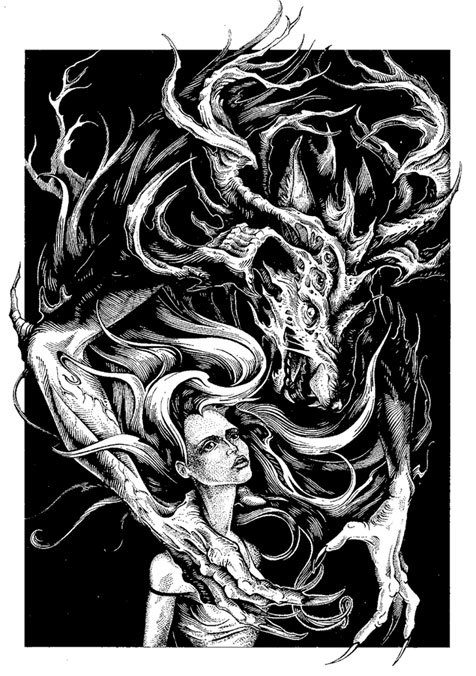

Если вы не прочитаете эту книгу, призраки будут ходить за вами следом
Предисловие
Эта книга – о паранормальном.
Из более чем двухсот миллионов русскоговорящих людей во всем мире о ней услышит от силы десятая доля процента. Лишь
небольшая часть узнавших о книге заинтересуется ею, и еще меньше людей решат в нее заглянуть. Вы открыли именно эту
книгу, а не одну из тысяч других. Вы читаете предисловие, хотя могли и пропустить его. В каком-то смысле эти строки
послала вам сама судьба. И поэтому я могу кое-что сказать о вас. Не очень много, и, быть может, в чем-то я ошибусь.
Но предсказываю, что вы удивитесь совпадениям. Итак, сосчитайте, сколько утверждений вас достаточно точно
характеризуют.
Вы нуждаетесь в том, чтобы другие люди вас любили и восхищались вами. Вы довольно самокритичны. Вы не
задействуете весь свой потенциал себе во благо. Вы не лишены недостатков, но вполне способны с ними
бороться. Хотя с виду вы дисциплинированны и сдержанны, внутри вы часто беспокойны и не уверены в себе.
Временами вас охватывают серьезные сомнения, верное ли решение вы приняли или правильный ли поступок
совершили. Вам нравятся перемены и разнообразие, и вы недовольны, когда вас в чем-то ограничивают или что-то
вам запрещают. Вы гордитесь тем, что мыслите независимо и не принимаете чужих утверждений на веру, без
достаточных доказательств. Вы поняли, что быть чрезмерно откровенным с другими людьми – не слишком
благоразумно. Иногда вы открыты, приветливы и общительны, а порой замкнуты, недоверчивы и молчаливы.
Некоторые ваши желания довольно несбыточны. Одна из ваших главных жизненных целей – достичь
стабильности.
В 1948 году американский психолог Бертрам Форер предложил студентам пройти один тест, по результатам которого
обещал составить психологический портрет личности каждого[1].
Через неделю каждый доброволец получил “индивидуальную характеристику”. Форер попросил студентов оценить, насколько
точной она получилась. Тридцать четыре студента из тридцати девяти поставили своей характеристике “четыре” или
“пять” по пятибалльной шкале. В среднем они отметили десять из тринадцати утверждений как верные. Подвох заключался
в том, что всем студентам раздали один и тот же текст. Форер составил его по купленной в киоске книжке по
астрологии. Похожее “описание личности” вы прочитали выше. И наверняка почувствовали эффект Форера на
себе. Этот и ряд других психологических приемов используют многие люди, называющие себя астрологами,
экстрасенсами, ясновидящими и медиумами. Часто они успешно убеждают клиентов, будто получили информацию от духов или
прочитали по звездам. Существование подобных уловок само по себе еще не доказывает, что все представители упомянутых
профессий ошибаются или обманывают. Однако дает лишний повод задуматься о надежности наших умозаключений, если мы не
хотим стать жертвами заблуждений. Понимание, почему люди верят в потусторонние силы и испытывают их
влияние, может спасти жизнь. Журналистка Кэрри Поппи столкнулась с “призраком”, жившим с ней под одной крышей. Дома
она ощущала сдавленность в груди, зловещее предчувствие собственной смерти и постоянную слежку, слышала пугающие
звуки. Когда религиозные ритуалы не помогли изгнать духа, журналистка обратилась за помощью к “охотникам за
привидениями”. Но не к тем, что бегают с ультрафиолетовыми лампами в поисках эктоплазмы и демонстративно пугаются
при каждом шорохе и скрипе, а к скептикам. Они предложили вызвать сотрудников газовой службы и проверить, не угарный
ли газ этот злой дух: отравления монооксидом углерода как раз и вызывают беспокойные мысли, боль в груди и
галлюцинации[2].
Совет оказался своевременным. Выяснилось, что концентрация угарного газа в доме значительно превышала допустимую
норму. Еще немного – и Кэрри могла умереть. С тех пор журналистка сама занимается поиском рационального объяснения
паранормальному, читает об этом лекции[3] и
помогает людям. Не знаю, спасет ли моя книга чью-то жизнь, но я постарался сделать ее не только
интересной, но и полезной, независимо от того, верите вы в мистику или нет. Мы поговорим об экстрасенсах и
биолокации, астрологии и магии, демонах и кошмарах, левитации и телекинезе, свободе воли и чтении мыслей,
смертельных проклятиях и целительстве, выходе из тела и ауре, смерти и воскрешении из мертвых и о многом другом. Где
правда, а где вымысел? Какие научные исследования проводились по этим темам? Почему столь многие люди утверждают,
будто сталкивались с необъяснимыми явлениями, и верят в сверхъестественное? Если вы считаете, что сами
обладаете паранормальными способностями, или знакомы, скажем, с экстрасенсами, то у меня для вас прекрасная новость.
Я вхожу в экспертный совет Премии имени Гарри Гудини[4] –
организации, которая предоставляет любому человеку возможность доказать свои экстраординарные способности в научном
эксперименте и даже получить за это миллион рублей. Однако прежде, чем связаться с нами, – дочитайте эту книгу до
конца.
Глава 1. Дементоры – фантомы и кошмары
Мы перестали искать монстров у себя под кроватью, когда осознали, что они внутри нас.
Чарльз Дарвин
И вправду, сон рождает чудовищ. Самый страшный кошмар случался в моей жизни дважды. Мне казалось, что я
проснулся и лежу на спине в своей кровати. В комнате кто-то посторонний. Я ощущаю зловещее присутствие, будто кто-то
на меня смотрит. Внезапно темное существо с размытыми очертаниями вскакивает мне на грудь и рвет меня когтями. Я
чувствую боль, удушье и беспомощность. Мое тело словно парализовало: руки и ноги не слушаются, я не могу кричать, не
в силах стряхнуть с себя страшное существо или отбиться от нападения. Позже я узнал, что не мне одному снились такие
кошмары. Весьма вероятно, что и вы пережили нечто подобное. Фольклор разных народов повествует о
мифических существах, навещающих людей во сне. В скандинавской мифологии есть мара – демон-душитель, который садится
по ночам на грудь и вызывает дурные сны. Считается, что от названия этого демона и происходит слово “кошмар”. Во
французском языке cauchemar – давящее ночное привидение. В английском “кошмар” зовется nightmare, то
есть “ночная мара”, а приходящее во сне существо англичане и американцы иногда называют old hag, старой
каргой. В Исландии бытуют мифы о ночных визитах гоблинов. Распутные инкубы и суккубы упоминаются в средневековой
христианской демонологии. Другие народы часто объясняют удушье во сне проделками джиннов и шайтанов. У славян вторая
часть слова “кикимора” родственна слову “мара”. Но удушье во сне в русской народной традиции скорее связывают с
домовыми. Согласно поверьям, они вскакивают спящему человеку на грудь, чтобы предупредить о беде. Некоторые
сторонники паранормального убеждены, что сходство ночных душителей у разных народов подтверждает существование
потусторонних сил. Кто-то после встреч с демонами обращается к шаманам, экзорцистам, священникам и иным людям,
оказывающим религиозно-мистические услуги. Но не стоит искать монстров у себя под кроватью. Они гораздо ближе – у
нас в голове. Один и тот же кошмар может мучить разных людей из-за схожих ощущений, которые возникают при сонном
параличе. Это необычное состояние, когда вы, просыпаясь или засыпая, осознаете, что не можете пошевелиться[5],
и его хотя бы раз в жизни испытал примерно каждый десятый человек[6]. Около
четверти времени нашего сна составляет фаза быстрого сна (так называемая REM-фаза, от словосочетания rapid eye
movement), которая характеризуется быстрыми движениями глаз и электрической активностью мозга, схожей с той, что
наблюдается при бодрствовании[7].
Человек, проснувшийся во время этой фазы, вероятно, скажет, что видел сны. Во время REM-фазы скелетные мышцы тела
расслаблены, а моторные нейроны, посылающие им сигналы, заторможены. Именно поэтому, если нам приснится, что за нами
кто-то гонится, мы побежим исключительно во сне и не свалимся с кровати. Но иногда мы пробуждаемся во
время быстрого сна, а паралич пройти не успевает. Мы чувствуем, что не в состоянии пошевелиться, и наш не до конца
проснувшийся мозг пытается объяснить столь непривычное ощущение, причем зачастую приходит к странным заключениям, в
том числе и мистического характера. Например, он может предположить, будто наши движения сковывают демоны или
призраки. Или решить, что тени на стенах – зловещие силуэты, а шум в ушах – звук крадущихся шагов. Неудачные попытки
глубоко вдохнуть создают образ душителя, особенно часто – у людей, страдающих от проблем с дыханием. В отдельных
случаях нехватка кислорода вызывает галлюцинации. Но не беспокойтесь: подобная встреча с воображаемой нечистью сама
по себе не представляет серьезной опасности, хотя и указывает на плохое качество сна. Хуже, когда во
время REM-фазы сна мышцы не парализует, – это может быть признаком серьезных заболеваний. Одному мужчине приснилось,
что он играет в американский футбол. С криком “Сейчас я забью гол!” он ухватился за голову спавшей рядом жены и
попытался бросить “мяч” к подножию кровати[8].
Другой, не просыпаясь, занимался со своей женой сексом, а утром ничего не помнил. К сожалению, во сне он не только
предавался любовным утехам, но и наносил травмы супруге и сыну[9].
Третьему приснилось, что он едет на мотоцикле, а другой мотоциклист пытается его протаранить. Во сне он отбивался
ногой от нападавшего, но в реальности удары доставались супруге[10].
Известны примеры убийств и покушений, предположительно совершенных спящими людьми. Так, один мужчина задушил свою
жену, когда ему приснилось, что за ним гонятся два вооруженных японских солдата[11]. По-видимому,
животным тоже снятся кошмары. В интернете выложена видеозапись, на которой собака мирно спит, лежа на боку, однако
вдруг начинает перебирать лапами, словно бежит, затем оскаливается на кого-то невидимого у себя за спиной,
вскакивает и с разгона врезается в стену[12].

Явление монстра во время сонного паралича. Волосы героини сливаются с шерстью демонического
существа, порожденного ее сознанием.
Ученые обнаружили, что у кошек повреждения ствола мозга в области покрышки варолиева моста могут
приводить к физической активности во время REM-фазы сна[13]:
тогда животные демонстрируют агрессию и даже охотятся. Аналогичные неврологические повреждения нашли и у нескольких
человек, наносивших вред себе и лежащим рядом супругам во время REM-фазы[14]. Итак,
возможны две нежелательные ситуации: или человек сам начинает видеть демонов, или окружающим кажется, что в него
вселилось нечто. Наиболее реалистичные кошмары и видения могут отрицательно сказаться на психическом здоровье тех,
кто с ними сталкивается. И только понимание природы “мистического опыта” помогает человеку прийти в себя,
успокоиться и лучше спать по ночам[15].
Как часто бывает, настоящая опасность скрывается совсем не там, где ее ожидают. Шестилетняя американка
Эвелин Васкез ходила во сне. Лунатизмом (или сомнамбулизмом) страдают 6–7 % детей[16],
но часто он с возрастом проходит. Лунатизм выражается в бессознательном выполнении действий во время медленных (не
REM-) фаз сна[17].
Однако мать Эвелин решила, что в дочь вселился дьявол, и зарезала девочку. Женщину посадили в тюрьму[18].
Если бы люди были лучше информированы и менее суеверны, не случилось бы этой и других подобных[19]
историй. Чтобы защититься от ночных кошмаров, не нужно крестов, молитв или святой воды, ведь это не
наказание за грехи и не проделки дьявола. В первую очередь следует просто соблюдать правила гигиены сна. Сонный
паралич чаще возникает, когда люди спят на спине[20], –
вероятно, потому, что в этом положении проявляется больше проблем с дыханием. Спать стоит в темноте и в комфортных
условиях. Днем полезно заниматься спортом, но не переутомляться[21].
Не надо работать и ужинать в постели. Кровать следует использовать только по назначению (для сна и секса), чтобы
быстрое погружение в сон стало привычкой, условным рефлексом. Ложиться и вставать желательно в одно и то же время.
Чем лучше сон, тем ниже вероятность наступления сонного паралича[22].
Тем же, кому эти советы не помогают, стоит обратиться к врачу-сомнологу.
Долгое время никто не
понимал, что такое сон и зачем он нужен. Во многих традиционных обществах считалось, что сновидения подтверждают
существование мира духов, а сон служит способом приобщиться к этой параллельной реальности[23]. Один
из классических экспериментов по лишению сна выглядит так: двух крыс сажают на разные половины горизонтальной
круглой платформы, размещенной над водой[24].
Одна крыса – из экспериментальной группы, другая – из контрольной, для сравнения. Крысы подключены к
электроэнцефалографу, прибору для исследования активности головного мозга. Чуть только у испытуемого
грызуна регистрируется наступление сна, платформа начинает крутиться – и обеим крысам приходится двигаться в
направлении, противоположном вращению, чтобы не оказаться сброшенными в воду. Однако этого не происходит, если
засыпает контрольная крыса. Получается, испытуемая крыса никогда не спит, а вот ее напарнице поспать удается. В
остальном экспериментальные условия одинаковы для обоих животных. Ничего патологического с крысами из
контрольной группы в таких экспериментах не происходит. А вот грызуны, лишенные сна, больше едят и при этом худеют,
страдают от разных проблем со здоровьем, а через несколько недель умирают. Позвоночных, способных
обходиться вовсе без сна, в природе не обнаружено, а состояние, похожее на сон, есть даже у мух[25].
У людей встречается редкое неизлечимое наследственное заболевание, при котором человек в среднем через полтора года
после постановки диагноза умирает от нарушений сна, – фатальная семейная бессонница[26].
Некоторые пациенты утверждают, что вообще или почти не спят годами, однако пока подтвержденных случаев такой
длительной бессонницы нет. Зато известен синдром искаженного восприятия сна – парадоксальная бессонница (инсомния),
когда люди считают, будто вовсе не спят, хотя это не так[27]. Все
говорит о том, что сон жизненно необходим. Но для чего? В 2013 году нейробиолог Майкен Недергард и
сотрудники ее лаборатории обнаружили, что во время медленного сна у мышей значительно увеличивается объем
межклеточной жидкости в мозге[28].
Происходит натуральная “промывка мозгов”: организм избавляется от продуктов жизнедеятельности, накопленных за день в
тканях мозга. В частности, удаляются бета-амилоиды – белковые молекулы, чрезмерное скопление которых опасно для
клеток мозга. Считается, что именно из-за этих скоплений погибают нервные клетки таламуса при фатальной
семейной бессоннице. Скопление бета-амилоидов также способствует развитию болезни Альцгеймера – нейродегенеративного
заболевания, прогрессирование которого сопровождается и ухудшением качества сна[29]. В
2016 году группа Недергард выяснила, что во время глубокого сна в межклеточной жидкости мозга уменьшается содержание
ионов калия, зато увеличивается содержание ионов кальция, магния и водорода[30].
Эти изменения приводят к тому, что сигналы, ранее возбуждавшие некоторые клетки, больше не вызывают их активации.
Если искусственно вернуть концентрации ионов в межклеточной жидкости к нормальному уровню, характерному для
состояния бодрствования, то и активность мозга изменится соответствующе – станет “дневной”. По-видимому,
“промывка” непосредственно влияет на работу нервной системы и несовместима с ее дневной деятельностью. Поэтому и
существуют два разных состояния: сон и бодрствование. Не исключено, что похожие механизмы виновны в искаженном
восприятии реальности во время переходов от сна к бодрствованию и наоборот.
Состояния, когда
паралич мышц наступает до засыпания или не успевает пройти сразу при пробуждении (сонный паралич), когда паралич
мышц вообще не наступает во сне, и лунатизм – не единственные, которым иногда приписывают мистическую природу.
Примерно 90 % людей с ампутированными конечностями описывают странные ощущения – словно недостающая часть их тела
все еще на месте[31].
Этот феномен назвали синдромом фантомной конечности. И характерен он не только для людей. Кошки, оставшиеся с тремя
лапами, нередко пытаются несуществующей четвертой копать в лотке, чесать себя за ухом, хватать игрушки и даже
царапать собак. Кто-то верит, будто фантомные конечности подтверждают существование “нематериальной”, “тонкой”,
“эфирной”, “астральной” оболочки тела. Но объяснение на самом деле гораздо проще. При утрате руки или
ноги ранее связанные с ними зоны коры головного мозга никуда не деваются. Просто клетки, получавшие сигналы от
ампутированной конечности, утрачивают исходные функции и начинают принимать сигналы от других частей тела. Видимо,
поэтому некоторые люди испытывают ощущения в фантомной руке, когда кто-нибудь прикасается к их губам (области коры,
отвечающие за обработку сигналов от рук и от губ, обычно расположены рядом)[32]. Нередко
утраченная конечность у людей начинает болеть. Согласно одной гипотезе, в такой фантомной боли виновата уже
упомянутая способность нервных клеток образовывать новые нервные связи[33].
Клетки, ранее воспринимавшие боль в конечности, получают сигналы из новых источников, возбуждаются – и порождают
неприятные ощущения. Другая же гипотеза гласит, что нервные клетки могут активироваться спонтанно[34].
Например, клетки спинного мозга кошек, отвечающие за передачу сигналов от конечностей в головной мозг, способны
возбуждаться, даже если все нервы, которые подходят к спинному мозгу от периферии тела, перерезаны[35]. Нейрофизиолог
Вилейанур Рамачандран, автор книги “Фантомы мозга” (Phantoms in the Brain)[36],
предложил собственное объяснение фантомной боли. Мозг по-прежнему посылает сигналы мышцам утраченной конечности по
нисходящим нервным путям и ожидает ответных сигналов. Не получая обратной связи, он может решить, что нечто
постороннее мешает мышцам сокращаться, придавливает конечность. Стремясь избежать повреждения несуществующей
конечности, мозг посылает все новые сигналы (увы, с тем же отрицательным результатом). Поскольку он безуспешно
пытается пошевелить конечностью снова и снова, неприятное ощущение сдавленности с каждым разом усиливается, вплоть
до возникновения боли. Оказывается, мозг можно обмануть и заставить поверить, что конечность в порядке.
Для лечения фантомной боли у людей с ампутированной рукой Рамачандран разработал специальный зеркальный ящик[37].
Человек помещает в него здоровую руку и видит ее отражение на том самом месте, где находилась бы вторая рука, до
ампутации. Его просят сжимать руку, глядя в ящик. При этом человек испытывает иллюзию, будто у него две руки, с
которыми все в порядке, – и боль, как правило, проходит[38].
Впрочем, стоит оговориться: проведено еще достаточно мало аккуратных исследований, так что рано делать окончательные
выводы об эффективности этой процедуры[39]. Позже
ученые придумали еще один способ лечить фантомную боль – с помощью виртуальной реальности[40].
Людей обучали управлять компьютерной моделью утраченной части тела, используя мышцы, оставшиеся на месте ампутации.
Оказалось, это тоже уменьшает боль. Рамачандран описал эксперимент, демонстрирующий, что своеобразные
“фантомные конечности” могут появиться и у здорового человека[41].
Перед испытуемым кладут муляж руки, а его собственную руку прячут за перегородкой. Экспериментатор несколько раз
одновременно прикасается к руке добровольца и к муляжу. Через некоторое время испытуемый заявляет, что чувствует
прикосновения к искусственной руке, как будто та стала частью его тела. Если же теперь внезапно ударить по муляжу
большим резиновым молотком, реакция пациента будет весьма эмоциональной. В подобных экспериментах
эмоциональная реакция обычно регистрируется полиграфом (его часто называют детектором лжи). Когда человек испытывает
сильные эмоции, у него меняются различные физиологические параметры. В частности, усиливается потоотделение. Кожа
увлажняется – и ее электрическое сопротивление падает (току становится проще через нее проходить), что и фиксируется
прибором. В контрольной группе испытуемых к их рукам и к муляжам прикасаются не одновременно. В таких
условиях иллюзии у людей не возникает, и они реагируют спокойней, если с муляжом что-то происходит. Самый первый
подобный эксперимент (правда, без молотка) провели психологи Мэтью Ботвиник и Джонатан Коэн: восемь из десяти
добровольцев ощутили, будто резиновая рука, которую поглаживали одновременно с их собственной рукой, – часть их тела[42]. В
2015 году в журнале Scientific Reports вышла статья, авторам которой удалось развить эти идеи и создать
иллюзию целого фантомного тела[43].
В одном из экспериментов на добровольцев надевали очки виртуальной реальности и просили смотреть вниз, словно
разглядывая свой живот. При этом испытуемые видели вместо собственного тела пустоту. Экспериментаторы кисточкой
много раз дотрагивались до тел добровольцев, а те одновременно видели в свои очки, как кисточка “прикасается” к
пустому месту. Когда затем к “невидимому телу” в виртуальной реальности подносили не кисточку, а нож, то, как и в
экспериментах с резиновой рукой, волнение испытуемых усиливалось. Иллюзия фантомного тела не возникала, если
реальные и виртуальные прикосновения не совпадали по времени. Похожие эксперименты проводились и на
животных. В 2016 году в Journal of Neuroscience вышла статья, авторы которой описали иллюзию фантомного
хвоста у мышей[44].
Ученые помещали грызуна в специальную камеру, ограничивающую передвижения, и клали чуть сбоку кусок резинового
хвоста. Один экспериментатор некоторое время легко прикасался к мышиному хвосту и к муляжу одновременно или
неодновременно, а затем его коллега, ничего не знавший об условиях эксперимента (“ослепленный”), просто по сигналу
резко сжимал резиновый хвост. Грызуны реагировали сильнее, если до этого к их настоящему хвосту и к искусственному
прикасались строго в одно и то же время. Результаты исследований синдрома фантомной конечности и сонного
паралича указывают на интересную особенность нашего мышления. Мозг собирает картину окружающего нас мира буквально
по крупицам: с учетом предыдущего опыта и накопленных знаний он обобщает огромное количество разрозненной
информации, которая поступает к нему от всех органов чувств. Иногда, когда мы сталкиваемся с непривычным для нас
набором ощущений, это стремление мозга к обобщению порождает иллюзии.
Я очень рекомендую
посмотреть серию “Тело и душа” телесериала “Доктор Хаус”. На ее примере можно наглядно показать, как наука объясняет
паранормальные явления. Медицинская загадка в этой серии так сильно меня заинтересовала, что во время просмотра я
держал открытыми десяток вкладок с разными научными статьями и медицинскими веб-сайтами. Мне хотелось самому найти
ключ к разгадке. Сначала зрителям показывают мальчика-азиата восьми лет, которому снится, что его душит
страшная карга. Как вы уже догадались, у ребенка проблемы с дыханием, а кошмары с удушьем – их следствие. Но
мальчику не хватает воздуха даже после пробуждения – и его госпитализируют. Вскоре выясняется, что дед ребенка
верит, будто душу его внука похитил демон. Тем временем врачи обнаруживают в доме странные запахи, которые приводят
их в комнату с отрубленной головой свиньи и расставленными повсюду религиозно-мистическими атрибутами. Мать ребенка
сообщает, что магический ритуал – дело рук деда. Команда доктора Хауса узнает, что отцу мальчика тоже
снились кошмары, а потом он сошел с ума и избил до смерти своего начальника, за что угодил в тюрьму. Дед не желает
верить, что его сын сумасшедший и не способен контролировать агрессию, а потому настаивает на версии с похищением
души – как у сына, так и у внука. Ритуал с головой свиньи, по поверьям, возвращает душу в тело. Пазл в
моей голове начинает складываться. Если отца мальчика донимали похожие сны, значит, стоит рассмотреть версию о
генетическом заболевании, которое может приводить к проблемам с дыханием. Среди наследственных респираторных
заболеваний достаточно распространен муковисцидоз, при котором нарушается работа и желудочно-кишечного тракта.
Правда, есть одна неувязка: муковисцидоз, как правило, диагностируют вскоре после рождения… Зато, когда зрителям
сообщают, что мальчик мучается запорами, у меня возникает стойкое ощущение, что догадка моя хороша. Я ликовал, когда
врачи в сериале озвучили мою гипотезу. Однако генетический анализ показал, что муковисцидоза у мальчика
нет. В поисках новых зацепок я вспомнил знаменитую фразу Чехова: “Нельзя ставить на сцене заряженное
ружье, если никто не имеет в виду выстрелить из него”. Отец ребенка избил человека до смерти. Может, его агрессия –
тоже симптом? И я бросился искать медицинские статьи о генах, мутации в которых способны (при определенных условиях)
сделать человека более предрасположенным к агрессии. В итоге я нашел ряд подходящих публикаций, где упоминается
моноаминоксидаза А. У людей этот фермент участвует в расщеплении норадреналина, адреналина, серотонина и дофамина –
молекул, играющих важную роль в регуляции нашего поведения. В 1993 году в журнале Science вышла
статья, авторы которой исследовали большую родственную группу людей[45].
Пятеро мужчин из группы страдали синдромом, при котором возникают частые перепады настроения и аномальное поведение,
например импульсивная агрессия, влечение к поджогам, попытки изнасилования. У всех пятерых оказалась снижена
ферментативная активность моноаминоксидазы А. Нашлась у них и генетическая мутация, которая приводит к серьезному
дефекту этого фермента. В 2002 году в том же журнале вышла другая работа: ее авторы подтвердили связь
между активностью моноаминоксидазы А и поведением[46].
Взрослые, с которыми плохо обращались в детстве, с большей вероятностью проявляли антисоциальное поведение, если
активность моноаминоксидазы у них была низкой. Есть и другие работы, подтверждающие данную связь, в том числе и
экспериментальные – на грызунах[47].
Мыши с испорченным геном моноаминоксидазы А становятся агрессивнее. Однако может ли дефект
моноаминоксидазы А быть связан с проблемами дыхания? Мне не удалось найти доказательств такой связи у людей, но
мутантные мыши с дефицитом моноаминоксидазы А имеют нестабильный дыхательный ритм. У них нарушены два основных
механизма регуляции дыхания: учащение дыхания при нехватке кислорода и прекращение вдоха в ответ на сигнал о
чрезмерном растяжении легких[48]. Почему
же проблемы с дыханием возникли у мальчика не сразу? Пока я размышлял над этим вопросом, в серии показали, как дед
настаивает на продолжении мистических ритуалов, дабы вырвать душу внука из лап страшного демона. При этом происходит
несколько необъяснимых (“мистических”) событий: мальчик парит в воздухе, говорит на “языках предков”. Некоторые
участники драмы, в том числе мать ребенка и даже кое-кто из врачей, склоняются к паранормальному объяснению
происходящего. Но доктору Хаусу, как и мне, очевидно, что дед еще и фокусник, а мальчик, запуганный страшными
сказками, – его невольный ассистент. Я заподозрил, что магические ритуалы зрителям показывают не просто
так, а в болезни внука отчасти виновен дед. Не подсыпал ли он ребенку какое-нибудь вещество, подавляющее
моноаминоксидазу А и усугубляющее симптомы болезни? Это согласуется с тем, что страшные сны снятся мальчику уже
долго, а вот серьезные проблемы со здоровьем начались совсем недавно (возможно, с тех пор, как дед затеял ритуальную
борьбу с кошмарами). Я стал изучать известные ингибиторы моноаминоксидазы А. Оказалось, что они присутствуют в ряде
трав. В гармале обыкновенной, которая растет в Центральной Азии (а дед как раз по происхождению хмонг и вполне мог
подсунуть ребенку травы с родины предков), содержатся некоторые алкалоиды[49],
служащие блокаторами моноаминоксидазы А. Далее выясняется, что гармалу некоторые народы традиционно используют для
защиты от сглаза и джиннов (тех самых, что навещают людей в кошмарах). Еще один симптом мальчика, который
я пока не упомянул, – тахикардия, болезненное учащенное сердцебиение. В медицинской литературе известны примеры,
когда отравление гармалой приводило к такому нарушению работы сердца[50].
Другие симптомы отравления включают галлюцинации, что тоже подходит к нашему случаю. Токсикологические исследования
на мышах подтверждают, что в результате отравления гармалой возникают тахикардия и нарушения дыхания[51]. У
меня появляется надежда, что головоломку я разгадал. Итак, у ребенка и у его отца умеренный дефицит моноаминоксидазы
А. Это объясняет проблемы с дыханием и страшные сны, а также агрессивное поведение отца мальчика. Отсутствие у
ребенка агрессии связано либо с тем, что этот симптом еще не успел проявиться, либо с тем, что мальчик рос в более
благоприятных условиях (недаром, наверное, зрителям говорят о его отличных оценках). Все-таки личность формируют как
наследственность, так и среда. А проблемы с дыханием усугубились из-за “народной медицины” деда, что привело и к
тахикардии. Ребенку лучше не становится. Его мать утрачивает веру в медицину, а мальчика прямо в клинике
начинают “лечить” магическими ритуалами. Доктор Хаус отказывается дальше работать с пациентом, ведь, если он его
вылечит, заслугу припишут старому шаману. Тем не менее врач сообщает ассистентам свой окончательный диагноз:
открытый артериальный проток. Это врожденный порок сердца, который иногда действительно вызывает проблемы с
дыханием, но не объясняет многие другие симптомы. Во время очередного ритуала ребенку становится еще хуже (что
согласуется с моей гипотезой), и одна из помощниц доктора Хауса, вопреки его указанию, начинает лечить мальчика в
соответствии с диагнозом “открытый артериальный проток”. Увы, моя версия не совпала с мнением
сценаристов: лечение ребенку помогает, то есть доктор Хаус оказывается прав. Как и следовало ожидать, когда мальчику
становится лучше, счастливая мать отдает все почести деду. Солидарен с нею и один из врачей – он допускает, что
случилось чудо. Вероятно, человеку, жаждущему чего-то волшебного, неоднозначная концовка, которая
допускала бы вмешательство потусторонних сил, понравилась бы больше. Но посмотрите, какой захватывающей бывает
попытка проанализировать историю рационально! Умение пользоваться научными источниками позволяет совсем по-иному
взглянуть на мир и связать воедино куда больше фактов. Наука может показаться скучной, но только на первый
взгляд.
Глава 2. Инферналы – живые мертвецы
Жизнь – это околосмертный опыт.
Джордж Карлин
В 1882 году французский невролог Жюль Котар описал так называемый бред отрицания, сегодня известный
как синдром Котара. Обычно пациент считает, что умер, его сердце не бьется или отсутствует, а органы сгнили или
разрушены[52].
Одна девушка утверждала, что мертва и пахнет гниющей рыбой, и поэтому просила отвезти ее в морг, к таким же
покойникам[53].
Другая верила, что умерла от гриппа и попала в рай, хотя на самом деле находилась в лондонском госпитале[54]. В
книге “Беглое знакомство с человеческим сознанием” (A Brief Tour of Human Consciousness)[55]
Вилейанур Рамачандран объясняет, что при синдроме Котара человеку очень сложно избавиться от бредовых идей. Больной
сохраняет способность к рациональным суждениям, но искажает любые “неудобные” факты так, чтобы они согласовывались с
его заблуждениями. “Например, пациент согласен с утверждением, что у мертвых людей кровь не идет. Но если уколоть
его иголкой, он удивится и решит, что у трупов все-таки идет кровь, вместо того чтобы отказаться от своего
заблуждения и прийти к выводу, что он таки живой”, – пишет ученый. Однажды нейробиологи работали с
мужчиной, который пытался покончить с собой[56].
“Я пришел доказать, что мертв”, – заявил он, придя к своему лечащему врачу несколько месяцев спустя. Пациент считал,
что не нуждается в еде и сне и обречен на некое подобие существования с мертвым мозгом в живом теле. Он признавал,
что способность видеть, слышать, думать, запоминать и общаться с другими людьми свидетельствует о наличии у него
разума: он не мог объяснить, как это возможно при мертвом мозге, но был уверен, что в его случае все именно так.
Результаты томографического исследования показали существенно сниженную или, наоборот, повышенную активность в
нескольких отделах мозга этого мужчины по сравнению со здоровыми людьми того же возраста и пола. Сниженная
активность, в частности, наблюдалась в определенных участках коры мозга, считающихся важными для нормального
функционирования сознания. В медицинской литературе описано немало случаев синдрома Котара. Как правило,
он возникает на фоне патологий нервной системы: после эпилепсии, травмы, инфаркта, опухоли мозга, при болезни
Паркинсона, энцефалите и других заболеваниях[57].
У нескольких пациентов ощущение, что они мертвы, возникло после приема некоторых лекарств от вируса герпеса[58]. Важно
отметить, что это крайне редкий побочный эффект, которого большинству людей не стоит опасаться: упомянутые пациенты
страдали болезнями почек, когда организм не в силах нормально выводить лекарства и продукты их распада. Очищение
крови с помощью аппарата искусственной почки и отказ от противовирусных препаратов помогли больным перестать
чувствовать себя мертвыми. В остальных случаях синдром Котара обычно лечат медикаментозно – и иногда состояние
пациента значительно улучшается. Существуют и другие нарушения работы мозга, порождающие заблуждения.
Так, пациенты с синдромом Капгра уверены, что кого-то из их близких (или даже их самих) заменил двойник. В
большинстве случаев речь идет о подмене жены или мужа самозванцем того же пола. Например, один пациент пережил
автомобильную аварию и решил, что его настоящая жена погибла, а женщина, живущая теперь с ним, – самозванка. Есть и
более экзотичные примеры. Скажем, один мужчина думает, будто дочь заменили его умершей сестрой. Другой полагает, что
существует ни много ни мало шесть самозванок, выдающих себя за его жену. Третий заявляет, что его супругой
притворяется неизвестный гомосексуал. Женщина верит, что ее муж – незнакомая дама[59]. Очень
часто у пациентов с синдромом Капгра обнаруживают повреждения мозга или заболевания нервной системы[60].
Однако примечательно, что у некоторых людей синдром возникал после приема определенных лекарств. Вот что рассказала
врачу одна пациентка, придя в себя после приема кетамина[61]:
Каждый раз, когда вы выходили из комнаты, я думала, что возвращается уже другой человек в вашей одежде.
Страшно не было. Просто кто-то другой в вашей одежде делал вашу работу. Он был немного старше и крупнее. Еще
я взглядывала в зеркало и понимала, что смотрящее на меня отражение – не я. Даже слова, которые я
произносила, казались мне чужими: я не произнесла бы их в обычном состоянии. Это была не я. Не моя речь, не
мой голос, не мои реакции. Я чувствовала себя другим человеком, потому что я бы так себя не вела.
Темный двойник. Отсылка к синдромам Капгра и Котара. Нейроны на заднем плане подчеркивают
вымышленность происходящего. Все это лишь в голове.
Нередко пациенты с синдромом Капгра не только видят двойников, но и чувствуют присутствие людей, которых
на самом деле нет, или думают, будто их дом – дубликат настоящего дома, расположенного в другом месте. Одна пожилая
пациентка считала, что ее муж – самозванец, и регулярно заявляла, что “уйдет домой”, хотя иного места жительства не
имела[62].
При этом некоторые пациенты сохраняют способность поддерживать диалог, играть в шахматы и заниматься другими
обыденными делами, то есть нарушения работы мозга могут иметь очень узкий, специфический характер. Чтобы
разобраться в возможных причинах такого необычного синдрома, стоит упомянуть еще одно заболевание. При повреждениях
затылочно-височной латеральной извилины, расположенной в коре больших полушарий, нередко утрачивается способность
узнавать лица. Такое нарушение называют прозопагнозией[63].
Причем пациенты, как правило, распознают иные объекты. Хотя люди с прозопагнозией не умеют осознанно различать лица,
у них может возникать эмоциональный отклик на знакомых, который удается обнаружить с помощью полиграфа[64].
По-видимому, у больных синдромом Капгра все наоборот: они узнают лица, но не испытывают при этом эмоций[65]. Судя
по всему, когда мы видим человека, одна часть мозга пытается установить его личность, а другая – воспроизвести
адекватную автоматическую эмоциональную реакцию на него[66].
Если нарушено соединение между эмоциональным центром мозга (миндалевидным телом) и областью, отвечающей за
распознавание лиц, то мы понимаем, что, хотя находящийся перед нами человек и похож по всем свойствам на знакомого
или родственника, с ним явно что-то не так – он не вызывает привычных эмоций. Наш мозг пытается увязать этот
противоречивый опыт в правдоподобную, стройную теорию и в ряде случаев приходит к логичному выводу: “Передо мной не
близкий человек, а самозванец”. Иногда пациенты с синдромом Капгра считают, что двойниками подменили их
домашних питомцев. Например, один мужчина семидесяти трех лет заподозрил, что его кот – не тот, за кого себя
выдает[67].
В записках жене мужчина сообщал, что их дом находится под наблюдением ФБР, и просил не доверять животному. В итоге
пациент пришел к выводу, что ФБР и подменило кота двойником-агентом для участия в слежке за хозяевами. Авторы
научной статьи, в которой описан этот случай, в шутку назвали такое состояние синдромом “кэтгра” (от английского cat –
“кошка”), или синдромом подмены кота. С помощью томографии удалось выяснить, что у мужчины серьезно поврежден мозг –
множественные травмы головы он получил в прошлом во время занятий хоккеем. Известно, что некоторые
пациенты с синдромом Капгра способны узнать близкого человека по голосу, например, во время телефонного разговора,
даже если при личной встрече называют его самозванцем. У них искажение восприятия возникает исключительно при
обработке зрительной информации. Но описан и случай аналогичного нарушения восприятия звуковых сигналов. Одна
женщина выставила сына из квартиры со словами: “Мы незнакомы, ты здесь не живешь”. Еще она считала самозванцами
соседей, священника и врачей. Иногда утверждала, что существует несколько версий ее сына, а порой заявляла, что
родила его от ведущего новостной программы. Она различала фотографии неизвестных и известных ей людей, причем
эмоциональная реакция на изображения знакомых была нормальной. Однако голоса она распознавала очень плохо[68].
Это еще раз подтверждает, что разные нарушения в работе мозга ведут к различным вариантам синдрома Капгра. Не
исключено, что именно истории тех, кто так или иначе столкнулся с синдромом Капгра, легли в основу рассказов о
доппельгангерах и иных мистических существах, способных принять чужой облик. В литературе эпохи романтизма
доппельгангером называли злого двойника человека, темную сторону его личности, чье появление предвещало скорую
смерть.
Человеческий мозг работает далеко не идеально и иногда порождает разного рода ложные
убеждения, от которых сложно избавиться. Значительные повреждения мозга влекут серьезные последствия, но и небольшие
нарушения в его работе способны вызвать искаженные представления о реальности. Поэтому неудивительно, что самыми
невероятными “воспоминаниями” и впечатлениями делятся люди, пережившие клиническую смерть. Очень многие
утверждают, что имели околосмертный опыт. Примерно половина мужчин и женщин, побывавших в этом необычном состоянии,
описывают его как осознание собственной смерти. Чаще всего люди испытывают положительные эмоции и облегчение.
Примерно треть вспоминает знаменитые видения “света в конце тоннеля”, ставшие символом перехода к загробной жизни.
Треть описывает встречу с почившими родственниками, призраками, ангелами или духами. Четверть говорит о пережитом
выходе из собственного тела, чувстве парения, возможности взглянуть на себя со стороны[69].
В развитых странах, где шанс на успешную реанимацию в случае клинической смерти велик, несколько процентов населения
испытали что-либо из перечисленного. В 2011 году в журнале Trends in Cognitive Science вышла
статья под названием “В околосмертном опыте нет ничего паранормального: как нейронаука объясняет яркий свет, встречу
с мертвыми и убежденность в том, что вы один из них”[70].
Сразу отмечу, что столь необычные ощущения испытывают далеко не все, кто находится на волосок от смерти. Более того,
половине людей, которые рассказывают о подобном, смерть на самом деле не угрожала. Так, околосмертный опыт может
испытать больной диабетом при сильной нехватке сахара в крови или пациент, переживший несложную операцию под
наркозом. Очень похожие ощущения возникают при кратковременной потере сознания, вызванной нарушением мозгового
кровотока[71]. Чем
больше концентрация углекислого газа в крови пациента, переживающего клиническую смерть, тем выше вероятность, что
он испытает околосмертный опыт[72].
В некоторых случаях околосмертный опыт может прийтись на REM-фазу сна, когда мозг активно работает с воспоминаниями,
что теоретически объясняет ощущение “прокрутки в голове образов прошлого”[73].
В некоторых дозах кетамин, используемый для наркоза, способен вызывать галлюцинации и чувство выхода из тела –
характерные признаки околосмертного опыта. Однако существуют и другие возможные причины приобщения к потустороннему
миру. В 2002 году в журнале Nature вышла статья, авторы которой изучали мозг больного эпилепсией[74].
Для лечения некоторых тяжелых форм этого заболевания требуется найти и разрушить очаг судорожной активности. В ходе
операции врачи подвергают точечной электростимуляции различные участки мозга пациента и одновременно расспрашивают
его об ощущениях, чтобы отслеживать, не задеты ли жизненно важные области. При электростимуляции одного
участка на стыке височной и теменной долей пациент заявил, что чувствует, как выходит из тела и видит себя со
стороны. Этот эффект впоследствии удалось воссоздать и с другими больными эпилепсией[75].
Слабая электростимуляция вызывала ощущения, которые пациенты описывали как “проваливаюсь вглубь кровати”, “падаю с
высоты”. При более сильной стимуляции они говорили: “Вижу себя сверху, лежащим на кровати, но только ноги и нижнюю
часть туловища”. Мозг отслеживает положение нашего тела в пространстве, анализируя сигналы, поступающие
от вестибулярного аппарата (органа равновесия) и остальных органов чувств, а также от специальных рецепторов в
тканях, например в мышцах и суставах. Если адекватно обобщить всю эту информацию по тем или иным причинам мозгу не
удается, у человека искажается восприятие, возникают различные иллюзии: он неправильно определяет положение своего
тела относительно других объектов и неверно оценивает расстояние до них, может даже ощутить удвоение собственного
тела. Поясню это на наглядном примере. Если GPS-навигация в вашем телефоне работает неисправно, может
произойти странное событие: вы выкладываете в социальные сети свежую фотографию из мавзолея, а телефон отмечает, что
местоположение снимка – Каир. Происшедшее вполне поддается ошибочному объяснению: Ленина перевезли поближе к
пирамидам. Разумеется, электронное устройство умеет предупреждать о сбоях в своей работе, но у мозга такая
возможность, увы, не предусмотрена. Поэтому правильная зрительная информация и искаженное восприятие положения тела
в пространстве просто объединяются мозгом в непротиворечивую картину: человек чувствует, что парит над собственным
телом. Известно, что в пространственной ориентации людей[76],
обезьян[77]
и грызунов[78]
участвует еще и гиппокамп[79].
В этом отделе мозга, связанном в первую очередь с памятью, обнаружены так называемые нейроны места[80].
Они активируются, когда организм находится в определенной точке пространства, независимо от направления взгляда или
движения. Нейрофизиолог Джон О’Киф, сделавший это открытие, в 2014 году получил Нобелевскую премию по физиологии и
медицине. Ученый разделил награду с супругами Мозер, открывшими рядом с гиппокампом “нейроны решетки”[81].
Эти клетки активируются, когда организм пересекает узлы воображаемой координатной сетки в пространстве, состоящей из
шестиугольников (гексагональной). Во время экспериментов крысы свободно бегали по комнате, а подключенный к их мозгу
прибор фиксировал активность отдельных клеток. Затем ученые построили карту точек пространства, в которых
“срабатывали” одиночные нейроны, – и увидели структуры, похожие на пчелиные соты. Таким образом,
некоторые нейроны в мозге задают своеобразную систему координат. Предполагается, что частичная утрата нейронов
решетки приводит к нарушению ориентации в пространстве, как при болезни Альцгеймера[82].
Но сбои в этой системе не исключены и при клинической смерти. Если активируются, например, не те клетки, мы легко
перепутаем свое местоположение. Если бы во время околосмертного опыта “души” и вправду выходили из тела,
сохраняя способность воспринимать зрительную информацию, и поднимались вверх, пациенты могли бы увидеть предметы,
которые невозможно заметить, лежа на больничной койке. Однако в действительности люди, рассказывающие подобные
истории, описывают, что видели, как заходила медсестра, или слышали гудение аппарата искусственного
жизнеобеспечения. Но такие очевидные утверждения мало что доказывают. Эксперименты, когда в палатах реанимации на
труднодоступных поверхностях специально раскладываются различные изображения, проводятся по сей день, но ни одна
парящая душа их так до сих пор и не обнаружила[83]. О
выходе души из тела стоит вспомнить еще одну известную историю. В начале XX века врач Дункан Макдугалл прославился
заявлением, будто у души есть масса. Он взвешивал пациентов до и после смерти и обнаружил, что масса каждого
уменьшалась на двадцать один грамм. Затем он провел подобные эксперименты с собаками – после смерти они весили
столько же, как и при жизни. Макдугалл пришел к выводу, что у псов, в отличие от людей, души нет. Приходят
на ум слова персонажа из “Истории одного города” Салтыкова-Щедрина:
Смотрел я однажды у пруда на лягушек… и был смущен диаволом. И начал себя бездельным обычаем спрашивать,
точно ли один человек обладает душою, и нет ли таковой у гадов земных! И, взяв лягушку, исследовал. И по
исследовании нашел: точно; душа есть и у лягушки, токмо малая видом и не бессмертная.
Разумеется, наблюдениям Макдугалла нашлись разумные, естественные объяснения: плохая точность измерительных
приборов того времени, потеря пациентами влаги из-за потоотделения (кстати, в отличие от людей, собаки не потеют
всем телом, что может объяснить их “бездушность”), игнорирование врачом ряда измерений, не подтверждающих его
гипотезу. В его выводах усматривается еще одна неувязка, которую я обозначил в своей антиутопии “Апофения”[84]. Один
из героев моей новеллы перед смертью рассуждал так:
Ученые доказали, что после смерти вес человека уменьшается. Примерно на 21 грамм. Это очень убедительное
доказательство существования души! Но религия учит, что душа хорошего человека возносится на небо. Если душа
имеет массу и отправляется на небо, значит, плотность души меньше, чем плотность воздуха. Но тогда, по
закону Архимеда, вес тела после смерти должен увеличиваться, а не уменьшаться! Возьмем человека и поставим
его на весы. Взвесим человека, а потом дадим ему в руки воздушный шар, наполненный гелием. Как изменится вес
человека? Он уменьшится, ведь шар будет тянуть человека вверх. Достаточно большой шар может и вовсе поднять
человека в небо. А если человек отпустит шар и тот улетит вверх? Вес человека увеличится. Вес человека
уменьшится, только если он выпустит из рук что-нибудь тяжелое, что-нибудь, что устремится вниз. Например,
отпустит свинцовую гирю. Но ни в одном опыте не получилось, чтобы вес тела человека вырос после его смерти!
Означает ли это, что во всех опытах душа отправлялась вниз, в ад? Страшно подумать!
Если исхитриться, эту проблему можно обойти. Достаточно предположить, что душа находится в теле под давлением,
как газ в баллончике, а после смерти человека расширяется. “Измерение плотности человеческой души” – интересная была
бы тема потенциальной диссертации по теологии, хоть и странная. Явление “света в конце тоннеля” тоже
объяснимо. Пилоты военных самолетов регулярно тренируются выдерживать значительные перегрузки в особых центрифугах,
и иногда у них возникает так называемое туннельное зрение, предшествующее кратковременной потере сознания. Во время
перегрузки в головном мозге и сетчатке глаз возникает нехватка кислорода. Периферийное зрение к ней более
чувствительно, чем центральное, поэтому отключается первым – и человек видит только светлый центральный участок
пространства как бы сквозь черный тоннель. Во время клинической смерти людям нередко мерещатся духи,
призраки и монстры. Зрительные галлюцинации возникают при приступах эпилепсии, повреждениях областей мозга,
связанных со зрением, некоторых нейродегенеративных заболеваниях, в частности при болезнях Альцгеймера и
Паркинсона[85].
Получается, визуальные галлюцинации при кислородном голодании мозга не свидетельствуют о чем-то паранормальном.
Кстати, электростимуляция области мозга, связанной с ощущением выхода из тела, иногда порождает впечатление, будто
“кто-то стоит за спиной”, часто принимаемое за контакт с духами[86]. Наконец,
эйфория, которую описывают многие люди, пережившие околосмертный опыт, тоже научно обоснована. Когда человек
испытывает страх или стресс, в его мозге происходит выброс эндорфинов и энкефалинов, оказывающих обезболивающее
действие, схожее с эффектом морфина. Эволюционный смысл такого механизма понятен: боль не должна помешать спасению
жизни. Если на вас напал тигр, нужно не плакать и страдать, а сражаться или бежать, и неважно, как сильно повреждено
ваше тело. Смерть – еще какой стресс. И она страшна. Вот почему околосмертный опыт бывает приятным. По сходным
причинам любители экстремальных видов спорта или ужастиков получают удовольствие от чувства опасности. Стоит
добавить, что зачастую околосмертный опыт возникает у людей под наркозом, сказывающимся на работе нервной системы и
тоже способным вызывать эйфорию. Итак, свидетельства людей, переживших тревожный, странный, “мистический”
опыт, отнюдь не доказывают существование чертей, призраков, ангелов, двойников или ходячих мертвецов. Подобные
истории служат нам предостережением, что не всегда стоит доверять собственным ощущениям. Мы не видим мир таким,
каков он есть на самом деле. Мы располагаем лишь его моделью, точной настолько, насколько позволяет наш мозг с его
восемьюдесятью шестью миллиардами нейронов и триллионами связей между ними[87].
Возможности разума огромны, но не безграничны.
Глава 3. Авада Кедавра – убивающее
заклятие
Смех убивает страх, а без страха нет веры.
Потому что кто не боится дьявола, тому не нужен бог.
Из кинофильма “Имя розы” по одноименному роману Умберто Эко
“Молот ведьм, уничтожающий ведьм и их ереси, подобно сильнейшему мечу” – так называется знаменитый
трактат по демонологии, написанный в 1486 году немецкими монахами Генрихом Крамером и Якобом Шпренгером (авторство
последнего поставлено историками под сомнение). Монахи рассматривают колдовство с точки зрения теологии и
доказывают, что ведьмы действительно существуют и творят зло. Главный аргумент – существование дьявола. Авторы
утверждают, что колдовством, как правило, занимаются женщины, и перечисляют способы распознать ведьму. Кроме того,
они предлагают правовые нормы, регулирующие ведение допросов, применение пыток и вершение правосудия над
несчастными. Есть некоторая ирония в том, что за два года до написания трактата Крамер впервые попытался
осудить ведьму, однако местный епископ принял его за впавшего в маразм старика – и почтенного теолога выгнали из
города. Вернулся он, заручившись буллой римского папы Иннокентия VIII, которая наделяла его и Шпренгера
чрезвычайными инквизиторскими полномочиями. Крамер и Шпренгер считали, что ведьмы – похотливые создания,
использующие свои женские чары, чтобы разрушать семьи. Их колдовство заставляло мужей утрачивать интерес к своим
женам и отправляться на поиски любовницы или проститутки, роль которых ведьмы охотно исполняли. Однако подобные
встречи были чреваты опасностями. Например, в “Молоте ведьм” описано, как приспешницы дьявола вызывали исчезновение
пениса, правда, монахи отмечали, что это лишь иллюзия, которую испытывает жертва:
Наконец, что нужно думать о тех ведьмах, которые такие члены в большом количестве, до двадцати или
тридцати членов зараз, скрывают в птичьем гнезде или ящике, где они движутся, как живые, и принимают пищу,
что многие видели и что повсеместно известно? На это следует сказать, что все это делается дьявольским
наваждением и действием, так как чувства зрителей обманываются вышеуказанными способами. Некто рассказывал,
что, когда он потерял член и обратился за восстановлением своего здоровья к ведьме, та приказала ему
подняться на дерево и из находившегося там гнезда, в котором лежало большое количество членов, взять себе
один. Когда тот хотел взять из них один побольше, ведьма сказала: “Нет, этот не тронь, – и при этом
добавила, – он принадлежит одному попу”[88].
“Фаллические” деревья глубоко вошли в средневековую культуру и встречались на многих гравюрах и рисунках XIII–XVI
веков[89].
Страх исчезновения пениса при отсутствии каких бы то ни было реальных физиологических изменений одолевает мужчин и
по сей день. Однако теперь врачи классифицируют эту боязнь как расстройство психики[90].
Это лишь один из многих так называемых культуральных синдромов – неразрывно связанных с традициями и поверьями,
которые разделяет группа людей. Другой интересный пример – распространенный в некоторых частях Индии синдром
беременности щенком[91].
Люди боятся, что, если их покусает или поцарапает собака, они забеременеют и родят щенка. Причем мужчины считают,
что рожать им придется через пенис, а значит, смерть неминуема. Особые народные целители заговорами и травами
избавляют от этой напасти. Еще в “Молоте ведьм” есть рассказ о священнике, который не мог удержаться от
циничной и нецензурной брани, когда вставал на колени и молился Деве Марии. И о женщине, бубнившей непристойности во
время мессы. По мнению богословов, в обеих историях речь идет о происках дьявола. Некоторые ученые полагают, что эти
рассказы о бранящихся священнике и женщине – возможно, первые зафиксированные случаи синдрома Туретта[92].
Это генетически обусловленное расстройство центральной нервной системы, при котором возникают разнообразные моторные
и вокальные тики. Так, люди с синдромом Туретта могут непроизвольно выкрикивать нецензурные слова и оскорбления
(“проклятия”)[93].
Сценаристы фильма “Экзорцист”, по-видимому, опирались на симптомы именно этого синдрома, когда создавали знаменитый
образ дергающейся и бранящейся девочки, в которую вселился демон. В медицинском сообществе распространена
идея, что необычное поведение или опыт на фоне параноидальной шизофрении[94],
эпилепсии[95]
и отравления галлюциногенами (например, содержащимися в спорынье – грибах, паразитирующих на некоторых злаках[96])
сыграли важную роль в истории религий и мистицизма. Например, в описаниях вселения и изгнания дьявола в Новом Завете
проглядывают симптомы эпилепсии, хотя поставить точный диагноз по пересказу, разумеется, невозможно.
Так работают проклятия. Может показаться, будто ведьму сжигают на костре. На самом деле
нападающие, вооруженные пиками и крестами, становятся жертвами собственных страхов, своей веры в
колдовство.
Вот отрывок из Евангелия от Марка, глава 9, об исцелении бесноватого отрока:
17. Один из народа сказал в ответ: Учитель! я привел к Тебе сына моего, одержимого духом немым:
18. где ни схватывает его, повергает его на землю, и он испускает пену, и скрежещет зубами своими, и
цепенеет. Говорил я ученикам Твоим, чтобы изгнали его, и они не могли.
19. Отвечая ему, Иисус сказал: о, род неверный! доколе буду с вами? доколе буду терпеть вас? Приведите
его ко Мне.
20. И привели его к Нему. Как скоро бесноватый увидел Его, дух сотряс его; он упал на землю и валялся,
испуская пену.
21. И спросил Иисус отца его: как давно это сделалось с ним? Он сказал: с детства;
‹…›
25. Иисус, видя, что сбегается народ, запретил духу нечистому, сказав ему: дух немой и глухой! Я
повелеваю тебе, выйди из него и впредь не входи в него.
26. И, вскрикнув и сильно сотрясши его, вышел; и он сделался, как мертвый, так что многие говорили, что
он умер.
27. Но Иисус, взяв его за руку, поднял его; и он встал.
Похоже, когда припадок закончился, человек пришел в себя. Одержимость дьяволом, проклятость и общение
с высшими силами выступали своеобразным донаучным объяснением различных психических расстройств. Люди искали причины
галлюцинаций и болезненных представлений, эпилептических приступов и безумия, и за неимением естественно-научного
объяснения жителям средневековой Европы приходилось довольствоваться сверхъестественным. Единственным методом
“лечения” служил экзорцизм. Разумеется, далеко не всех людей, страдающих психическими и неврологическими
расстройствами, принимали за одержимых. Более того, вера в демонов не мешала скептически относиться к случаям
“вселения нечистой силы”. Например, король Англии Яков I, веривший в ведьм и дьявола, любил лично расследовать
заявления о паранормальном и испытывал особое удовольствие от разоблачения притворщиков[97]. К
сожалению, до сих пор некоторые религиозные деятели и просто суеверные люди ошибочно принимают пациентов с
расстройствами психики за одержимых[98].
“Дух проник в мое тело… изнасиловал меня несколько раз… я почувствовала присутствие, которое принуждало меня
извиваться в кровати, меня тошнило…” – так описывала свои ощущения одна девушка двадцати двух лет. Слуховые
галлюцинации заставляли ее делать странные вещи: например, она спрыгнула с перил в аэропорту, а однажды заявила,
будто невидимая сила столкнула ее с лестницы. Девушка связалась со священником, которого часто приглашали
на передачи про паранормальные явления. Он укрепил ее убежденность в существовании нечистой силы и провел с ней
несколько сеансов экзорцизма. Религиозные ритуалы обеспокоили родственников девушки. Они позвали врачей. Те пришли в
ужас от действий священника и поставили пациентке диагноз “параноидальная шизофрения”. Сама девушка согласилась, что
часть ее симптомов объясняется психическим расстройством. Она стала принимать лекарства, но продолжала верить, будто
в нее вселился бес. В этой истории экзорцист, по-видимому, не нанес девушке существенного вреда. Однако
известно множество случаев, когда взрослые и дети погибали из-за чьих-то суеверий[99].
Так, в январе 1995 года умерла двухлетняя девочка из Канады Кира Канхото. Мама, бабушка и сосед заставили ребенка
выпить огромное количество воды во время сеанса экзорцизма. За убийство их посадили в тюрьму. Как многие
дети, пятилетняя Эми Берни из Нью-Йорка иногда закатывала истерики. Но ее мама и бабушка решили, что в капризах
виноват дьявол. Девочку связали, заставили выпить ядовитое зелье, а потом заклеили ей рот изолентой. Женщины неделю
держали тело ребенка в доме, прежде чем вынести в мусорном мешке на улицу. В два года Террансу Коттрелу
поставили диагноз “аутизм”. Однако представители церкви решили, что в мальчика вселился дьявол. Когда ребенку
исполнилось восемь лет, к нему пришел священник, чтобы провести обряд экзорцизма. Он садился мальчику на грудь и
шептал на ухо, чтобы демоны покинули тело несчастного. К концу двухчасового сеанса ребенок умер от удушья.
Священника приговорили к десяти годам заключения, причем он так и не признал своей вины. Родственники
двадцатидвухлетней Джанет Мошес из Новой Зеландии решили, что девушка стала жертвой наложенного на нее смертельного
проклятия. Во время сеанса экзорцизма Джанет захлебнулась. Можно сказать, что в каком-то смысле проклятие
действительно сработало, только это было скорее самоисполняющееся пророчество (то есть ложное предсказание так
повлияло на поведение людей, что они сами и привели его в исполнение). В 1969 году семнадцатилетней
Аннелизе Михель поставили диагноз “височная эпилепсия”. Несмотря на лечение, ее состояние ухудшалось. Семья
обратилась за помощью к священнику Эрнсту Альту. Тот решил, что врачи ошиблись, а девушка одержима дьяволом. Семья
пациентки прекратила давать ей лекарства, и в последующие десять месяцев над несчастной провели более шестидесяти
обрядов экзорцизма. 1 июля 1976 года девушку нашли мертвой – с поврежденными коленными суставами от частых
коленопреклонений, в ранах и синяках, истощенную голодом. В какой-то момент Аннелиза решила, что ее смерть
неизбежна, и добровольно отказывалась от еды и питья. Смерть девушки Альт прокомментировал так: “Очистившаяся от
сатанинской силы душа Аннелизы вознеслась к престолу Всевышнего”. История Аннелизы – не единственный
пример опасности веры в собственную скорую смерть. Именно в этом ключе мне хочется обсудить, почему черная магия,
наведение порчи и натравливание злых демонов и духов могут работать на практике. Антропологи, изучавшие
племена Африки, Южной Америки, Австралии, Новой Зеландии и некоторых других островов Тихого океана, описывают
распространенные представления о черной магии, способной убить здорового человека. Шаман, направляя на человека
кость или прибегая к мистическому ритуалу, приговаривает несчастного к смерти. В ряде случаев скорая гибель
некоторых “проклятых” подтверждается не только словами суеверных соплеменников, но и компетентными сторонними
наблюдателями. В 1925 году австралийский антрополог Герберт Базедов красочно описал это явление в книге
“Австралийские аборигены” (The Australian Aboriginal)[100]:
Человек, осознавший, что вот-вот будет проклят врагом, являет собой душераздирающее зрелище. Он стоит в
ужасе, всматриваясь в указывающую на него вредоносную кость, приподнимая руки, чтобы отразить смертельную
субстанцию, которая, как он воображает, вливается в его тело. Он бледнеет, лицо его перекошено, а взгляд
остекленел. Он пытается вопить, но крик захлебывается в его горле, и все, что можно увидеть, – это пена на
его губах. Его тело начинает дрожать, а мышцы – непроизвольно дергаться. Он откидывается назад, падает на
землю и лежит, будто в обмороке. Наконец приходит в чувство, идет в свою хижину и там от волнения
умирает.
Феномен, получивший название “смерть вуду”, описал врач Уолтер Кеннон в 1942 году в знаменитой статье на
страницах журнала American Anthropologist[101].
В этой работе он поведал историю новозеландской аборигенки, которой сказали, что она съела фрукты из запретного
места. Несчастная поверила, что дух вождя племени покарает ее. На следующий день женщину нашли мертвой. Вот
похожий пример из другого источника[102]:
офицер австралийской полиции и трое аборигенов, которые помогали ему в поисках, нагрянули с инспекцией в одно племя.
Тамошний шаман проклял всех четверых. Один из туземцев воспринял проклятие слишком близко к сердцу: замкнулся в
себе, не реагировал на окружающих, ел через силу, а через пару недель умер. Не все истории о проклятиях
имеют столь печальный исход. В одном из северных штатов Австралии прокляли помощника местных миссионеров –
аборигена, обращенного в христианство. Врач, осматривавший его, отметил, что не было ни жара, ни иных симптомов
болезни, кроме слабости и тревоги. Тем не менее абориген верил, что отправится к праотцам, ведь известный шаман
направил на него кость! Узнав об этом, доктор пошел к шаману и пригрозил, что тот лишится гуманитарной помощи и
будет изгнан далеко за пределы территории миссии, если пациент умрет. Неожиданно шаман согласился навестить
“умирающего” и объяснил ему, что не было никакой кости, все это шутка и недоразумение. По словам врача, “больной”
почти мгновенно поправился: вечером того же дня был полон сил и охотно работал[103]. Кеннон
обращает внимание на то, что жертвы “смерти вуду” – люди, которые не только сами верят в действенность проклятия, но
и знают, что в него верят и все окружающие. Лишенные социальной поддержки, они становятся изгоями. Вероятно, в таких
ситуациях человек испытывает чудовищный страх. Кеннон предположил, что именно страх и становится причиной смерти.
Напуганный человек перестает есть и пить, у него нарушается работа нервной системы и вырабатывается много
адреналина, который сужает сосуды. Сердце начинает отказывать, а количество крови, поступающей к внутренним органам,
сокращается. Это стало первой попыткой дать научное объяснение кажущейся эффективности проклятий. Разумеется,
нельзя в полной мере доверять давним историям и пересказам. Но есть и более современные примеры смерти от страха, не
связанные с ритуалами черной магии. По наблюдениям врачей, пациенты, которым сообщают, что они скоро умрут от
болезни, часто чувствуют и ведут себя как проклятые шаманами[104].
У одной женщины восьмидесяти четырех лет врачи обнаружили злокачественную опухоль поджелудочной железы. На скорбное
известие пациентка отреагировала очень эмоционально, а через час умерла. Вскрытие подтвердило диагноз раковой
опухоли, но выявить нарушение, которое привело к фибрилляции желудочков сердца и последующей смерти из-за его
остановки, не удалось[105].
Проанализировав множество подобных случаев, некоторые исследователи предположили, что сильные эмоциональные
переживания способны вызвать у человека ишемию, тахикардию и инфаркт миокарда[106]. В
США у криминалистов существует специальный термин – “убийство через сердечный приступ” (homicide by heart
attack)[107].
Представьте: грабитель врывается в дом, хозяйка успевает вызвать полицию, но приехавший вскоре патруль находит ее
мертвой, без каких-либо телесных повреждений. Вскрытие выявляет причину смерти – фатальная аритмия. Обычно такое
происходит с людьми с больным сердцем или повышенным давлением. В ответ на стресс в организме происходит выброс
катехоламинов, в частности адреналина. Сосуды сужаются, а сердцебиение учащается, что может привести к
аритмии. Не все люди одинаково восприимчивы к “убивающим” заклятиям. Вероятно, к ним предрасположены те,
кто страдает наследственной разновидностью тахикардии, поскольку она характеризуется эпизодическими обмороками и
внезапными остановками сердца во время сильных переживаний или интенсивных физических нагрузок. Это наследственное
заболевание повышает риск внезапной смерти как у детей, так и у взрослых[108]. Человека,
искренне верящего в “проклятие”, можно спасти, убедив, что заклинание было ненастоящим, или призвав ему на помощь
более могущественного шамана. Но едва ли это поможет при настоящем заболевании. Когда пациенты с тяжелым диагнозом,
считающие, что скоро умрут, обращаются за помощью к целителям или знахарям, зачастую они слышат заверения в полном
исцелении или ложности исходного диагноза. “Врачи обманывают вас! Все дело в токсинах и закрытых чакрах! Проблема
легко решается с помощью целебной силы магических кристаллов, иголок, сахарных гранул и натуральных биологически
активных добавок!” – больной наверняка услышит что-нибудь подобное. Психологический эффект от внезапного
проблеска надежды может ненадолго улучшить самочувствие пациента. Так больной и его близкие убеждаются в
эффективности чудодейственных практик. Увы, кратковременное улучшение не доказывает, что такие методы лечения имеют
терапевтическую ценность. Печальный пример того, насколько опасны медицинские заблуждения, – смерть
одного из основателей корпорации Apple Стива Джобса. У него диагностировали редкую форму рака поджелудочной
железы, легко оперируемую, в отличие от большинства злокачественных опухолей этого органа. Но Джобс отказался от
хирургического вмешательства и обратился к альтернативной медицине: пробовал веганскую диету, иглоукалывание,
траволечение и даже ходил к медиуму. Девять месяцев Джобс потратил на разные процедуры, а болезнь никуда не ушла.
Опухоль поджелудочной железы впоследствии все же пришлось удалить. Операция прошла успешно, но рак уже успел дать
метастазы в печень. Это в конечном счете и привело к смерти. Описанный механизм ложной надежды частично
объясняет, почему в мире так много сторонников различных альтернативных медицинских практик. Но стоит отметить еще
одно важное обстоятельство. Если какому-то счастливцу, прибегнувшему к нетрадиционным методам лечения, повезет и он
выживет, история о чудесном исцелении быстро разнесется по всем его знакомым и родственникам. А вот умершие, к
сожалению, отрицательных отзывов уже не напишут. Эту так называемую ошибку выжившего, искажающую наши представления
о реальной частоте положительных и отрицательных исходов, связывают с именем венгерского статистика Абрахама Вальда. Во
время Второй мировой войны Вальду поручили выяснить, какие части самолетов нужно защитить дополнительной броней.
Самолеты, вернувшиеся из боевых вылетов, были испещрены пробоинами, причем распределенными неравномерно: больше
всего на фюзеляже, меньше в топливных баках и двигателе. Означало ли это, что в дополнительной броне нуждался
фюзеляж? Некоторые военные отвечали утвердительно – туда же попало больше снарядов! Но Вальд не соглашался. Ведь не
все бомбардировщики возвращались с боевых вылетов. Самолет с поврежденным двигателем или бензобаком выходит из строя
и не возвращается на базу, поэтому полученные им пробоины не учитываются в общей статистике. Если предположить, что
на самом деле снаряды ложатся равномерно, то, как ни парадоксально, укреплять надо те места, которые у вернувшихся
самолетов имеют меньше всего повреждений. Когда мы делаем выводы об эффективности тех или иных
терапевтических методов, основываясь лишь на примерах чудесных исцелений, мы тоже совершаем ошибку выжившего. Для
полноты картины мы должны учитывать и случаи с печальным концом, такие, как история Стива Джобса.
Однако
вернемся к эмоциональным переживаниям. В 2008 году в The New England Journal of Medicine вышла любопытная
статья: ее авторы подсчитали количество немецких пациентов, которым потребовалась экстренная медицинская помощь в
связи с инфарктом миокарда, аритмией и другими проблемами с сердцем во время семидневного участия сборной Германии в
чемпионате мира по футболу. Для сравнения определили число таких пациентов за двадцатичетырехдневный период
чемпионата, когда немцы не играли, а также в контрольные периоды времени, когда чемпионатов по футболу вообще не
проводилось[109]. Частота
обращений за экстренной медицинской помощью в дни, когда играла немецкая сборная, в два-три раза превышала этот
показатель для контрольных дней. Как и ожидалось, в помощи нуждались больше мужчины. Эффект воспроизводился
независимо как для горожан, так и для жителей пригородных и загородных территорий. В дни чемпионата, когда играли
другие команды, число обращений с сердечными болезнями было слегка повышено, но в пределах статистической
погрешности. Примечательно, что вызовы учащались и в дни, когда немецкая команда побеждала, и в дни, когда ей
наносили поражение. В 1991 году в журнале Lancet врачи одного израильского госпиталя описали
учащенные случаи инфаркта миокарда на ранних этапах войны в Персидском заливе, когда первые ракеты, запущенные из
Ирака, взрывались на территории Израиля[110].
До местности, которую обслуживал этот госпиталь, доносились только отголоски взрывов, сами ракеты на нее не
попадали. Чуть позже подобные наблюдения сделали и врачи одного из госпиталей Загреба. Они зафиксировали рост числа
пациентов с инфарктом миокарда после срабатывания первых сирен, предупреждающих об авиаударах, когда началась война
в Хорватии[111]. К
этим данным стоит относиться с осторожностью по двум причинам. Во-первых, речь идет о сравнительно небольших
выборках людей. Во-вторых, вполне вероятно, что во множестве других госпиталей подобных эффектов не наблюдалось. Не
исключено, что в тех госпиталях, где по случайным причинам частота инфарктов повысилась, просто появились желающие
сообщить об этом интересном эффекте в научные журналы. В Японии повышенная частота инфаркта миокарда была
зафиксирована после одного из землетрясений[112].
Здесь тоже нужно осторожно интерпретировать данные. Выборка пациентов снова оказалась небольшой. Авторы другого
исследования сообщили о повышенной частоте инфаркта миокарда у пациентов больницы в Лос-Анджелесе, но не в
Сан-Франциско после землетрясений схожей силы. Разницу они объяснили тем, что первое землетрясение произошло, пока
все спали, а второе – ранним вечером[113].
Наконец, есть исследование, показывающее повышенную (примерно на 20 %) смертность пожилых людей в течение года после
смерти или госпитализации их супругов с некоторыми заболеваниями, например с деменцией или психическими
расстройствами[114]. Еще
одно исследование продемонстрировало силу “магии вуду” в современном, техногенном варианте[115].
Одной группе добровольцев показали фильм о вреде Wi-Fi, а второй – фильм на совсем иную тему. После просмотра
всем сказали, что их будут облучать Wi-Fi. Хотя на самом деле никто ничего не включал, многие люди из первой
группы, которых запугали страшилками о вреде такого излучения, заявили о неприятных симптомах, дискомфорте,
ухудшении самочувствия. Некоторые участники даже попросили прекратить эксперимент, настолько им стало не по себе.
Подобные отрицательные эффекты наблюдались в первой группе намного чаще, чем во второй. Страх опасен не
только для людей, но и для животных. В 1957 году американский биолог Курт Рихтер обнаружил, что, за редким
исключением, лабораторные крысы, помещенные в камеру с водой, дольше держатся на плаву, чем дикие крысы[116].
По мнению ученого, дело не в том, что дикие грызуны хуже плавают, а в том, что они испытывают гораздо больший
стресс. Они напуганы не только угрозой утонуть, но и тем, что их хватают и перемещают в незнакомое место. Однако
если грызунов несколько раз бросить в воду, а затем спасти (продемонстрировав, что выживание возможно), то после
этого дикие крысы плавают так же долго, как и лабораторные. Позже, в 1975 году, известный
психолог-бихевиорист Беррес Скиннер опубликовал работу с похожими выводами. Он хирургически вызывал у свиней
закупорку одной из коронарных артерий (снабжающих кровью сердечную мускулатуру), приводящую к фибрилляции
желудочков, и изучал, как повлияет на нее адаптация животных к лаборатории, где проводится операция. Оказалось, что
фибрилляция замедляется или возникает значительно реже, если дать свиньям время привыкнуть к новому окружению, тем
самым снизив стресс[117]. На
основании представленных мной свидетельств можно заключить, что гипотеза о влиянии эмоциональных переживаний вроде
страха на наше самочувствие достаточно правдоподобна. А если она верна, значит, существует надежное средство защиты
от черной магии, в том числе от “смерти вуду”: достаточно просто не верить в нее и учиться сохранять спокойствие,
когда на вас направляют устрашающие предметы и предрекают несчастья. Идею, что смех способен спасти от
“злых чар”, наглядно проиллюстрировала Джоан Роулинг в “Гарри Поттере”. На уроке защиты от темных искусств профессор
Люпин показал классу боггарта – существо, которое принимает форму того, чего сильнее всего боится смотрящий на него
человек. Чтобы победить боггарта, нужно мысленно представить его в нелепом обличье и произнести заклинание
“Ридикулус!” (от английского ridiculous – “смехотворный”). Невилл, например, чей боггарт принял вид мрачного
и строгого профессора Снейпа, представил того в старомодной одежде своей бабушки и таким образом справился с
заданием. В 2008 году один известный индийский гуру согласился продемонстрировать в телеэфире свою
магическую силу, пообещав лишить скептика сознания. Он произносил заклинания, нажимал добровольцу на голову, поливал
его водой и размахивал вокруг ножом[118].
Как вы уже, наверное, догадались, колдовство не подействовало. В итоге гуру заявил, что скептик защищен своими
богами, а тот ответил, что вообще-то атеист. Ничего не случилось и с бывшим премьер-министром Австралии
Джоном Говардом, когда аборигенка указала на него костью и прокляла. Я тоже не пострадал, когда в студенческие годы
меня прокляла девушка, заявлявшая, что владеет черной магией. Уместно вспомнить и “Вия” Гоголя:
– Славный был человек Хома! – сказал звонарь, когда хромой шинкарь поставил перед ним третью кружку. –
Знатный был человек! А пропал ни за что.
– А я знаю, почему пропал он: оттого, что побоялся. А если бы не боялся, то бы ведьма ничего не могла с
ним сделать.
Любителям современного кино рекомендую фильм ужасов “Ключ от всех дверей”, где обыгрывается та же идея. Один
знакомый рассказал мне, что приключилось с его религиозным другом в походе на Белое море. Однажды ночью тот
проснулся от необходимости справить малую нужду и отправился на холм, где для подобных дел было предусмотрено особое
место. Там, на холме, он увидел нечто белое, похожее на призрак, и, будучи опытным верующим, перекрестился и
принялся его изгонять, зачитывая специальную молитву. Призрак, естественно, исчез, а наш герой как ни в чем не
бывало сделал все, что собирался, и пошел спать. Утром он обнаружил возле заветного холма столпотворение. Из
глубокой выгребной ямы совместными усилиями люди извлекали мальчика в белом дождевике. Ребенок рассказал, что,
услышав страшные слова на непонятном языке, испугался, потерял равновесие и провалился в дырку, из которой всю ночь
то ли боялся, то ли не мог выбраться. Мораль: не позволяйте себя запугать и держите детей подальше от экзорцистов (и
выгребных ям). С самовнушением связан и так называемый бесконтактный бой. Интернет завален видеозаписями,
на которых “мастер” раскидывает двух, трех, а то и десятки противников, не притрагиваясь к ним. Он лишь взмахивает
рукой – и его соперники рассыпаются по сторонам. Особенный восторг вызывает видеозапись “Бесконтактный бой
православным крестом”[119],
о содержании которой легко догадаться по названию. Как и в случае с магией вуду, успешность таких
демонстраций зависит от того, насколько противники верят в существование подобных единоборств или готовы подыграть
мастеру. Ученики полагают, что должны отлетать от бесконтактного удара своего учителя, – и отпрыгивают в нужную
сторону. Чем больше таких послушных и внушаемых последователей, тем сильнее мастер убеждается в своей мифической
силе. Иногда гуру смелеют настолько, что забывают: никакой магической силой они на самом деле не
обладают. В видеозаписи “Мастер бесконтактного боя против бойца MMA”[120]
один такой учитель сначала демонстративно раскидывает толпу своих учеников, а потом предлагает денежный приз любому,
кто сможет его победить. Вызов принимает боец, который без особого труда выигрывает поединок несколькими точными
ударами по лицу мастера. Побитый гуру в шоке, комментаторы к видеозаписи смеются и удивляются, как далеко человек
может зайти в своих заблуждениях. Увы, находясь исключительно среди единомышленников, мы часто утрачиваем
критическое отношение к реальности и к самим себе. Истории о подобных “мастерах” напоминают сказку Ганса
Христиана Андерсена “Новое платье короля”. В ней король нанимает двух ткачей, пообещавших сшить ему наряд из особой
ткани, обладающей “чудным свойством делаться невидимой для всякого человека, который… «не на своем месте» или
непроходимо глуп”[121]. Но мошенники лишь
делают вид, что шьют. Король, как и его свита, платья не видит, но боится в этом признаться (“Неужели же я глуп? Вот
уж чего никогда-то не думал! Спаси Боже, если кто-нибудь узнает!.. Или, может быть, я не гожусь для своей
должности?.. Нет, нет, никак нельзя признаться, что я не вижу ткани!”) – и в итоге выходит к народу обнаженным. “Ни
единый человек не сознался, что ничего не видит: никто не хотел выдать себя за глупца или никуда не годного
человека. Да, ни один наряд короля не вызывал еще таких восторгов”. “Да ведь он же совсем голый!” – воскликнул
наконец какой-то ребенок из толпы. И за ним уже весь народ закричал, что король голый. Король понял, что народ прав,
но решил выдержать процессию до конца. Сказка заканчивается следующей фразой: “И он выступал под своим балдахином
еще величавее, а камергеры шли за ним, поддерживая шлейф, которого не было”. Некоторые гуру оккультизма
специально отбирают в ученики наиболее внушаемых людей. Например, некогда популярный экстрасенс, целитель, академик
нескольких сомнительных академий и “космический иерарх” Николай Левашов использовал простой тест: он предлагал
потенциальным ученикам прижать кулаки друг к другу и почувствовать, как они склеиваются под действием магической
силы. Те, у кого не получалось, объявлялись непригодными к дальнейшему обучению. По словам Левашова, к ним
космическая энергия не поступала. Остальные же признавались избранными и становились учениками. В действительности
гуру просто отсеивал скептиков. Подобный прием используют мошенники, разводящие людей на деньги с помощью
рассылок по электронной почте. Вы никогда не задумывались, почему обманщики не пытаются сделать свои истории хоть
сколько-нибудь правдоподобными? Типичное письмо выглядит примерно так:
Здравствуйте, я нигерийский принц. Мне нужна ваша помощь, чтобы получить положенные мне 50 000 000
долларов. Третью этого состояния я готов поделиться с вами. Пришлите мне свои личные данные, и я сообщу, что
делать дальше.
Мошенник не заинтересован тратить время на тех, кто обладает хоть толикой критического мышления, – ведь дальше
ему придется вести личную переписку, чтобы убедить собеседника оплатить какую-нибудь выдуманную пошлину. Поэтому
обманщик должен заранее озаботиться тем, чтобы на массовую рассылку ответил только тот человек, чей уровень
наивности достаточно высок. Вот для чего придуман не особенно правдоподобный нигерийский принц, который, кстати,
вошел в список пятнадцати богатейших вымышленных персонажей по данным журнала Forbes. Подкреплению
веры в магию, бесконтактный бой и другие чудеса способствует эффект присоединения к большинству, или эффект
подражания. Человек усваивает заблуждение тем быстрее и лучше, чем больше других людей разделяют подобные взгляды.
Ситуация может доходить до абсурда, как это было продемонстрировано в знаменитых экспериментах с пирамидками,
показанных в советском научно-популярном фильме “Я и другие”[122]. На
столе стоят черная и белая пирамидки. Трое детей, заранее условившись с экспериментатором, утверждают, что обе
пирамидки белого цвета. Еще одного ребенка проверяют на внушаемость. Очень часто испытуемый соглашается, что обе
пирамидки белые. Интересно, что, когда его просят взять черную пирамидку, он и берет именно черную, хотя только что
назвал обе белыми. В другом эксперименте из фильма дети пробовали кашу из общей тарелки. Большая часть каши была
посыпана сахаром, но со стороны проверяемого ребенка – солью. Многие дети называли соленую кашу сладкой вслед за
предыдущими участниками дегустации. Впрочем, от второй ложки предпочитали отказываться. Как австралийским
аборигенам сложно перестать верить в черную магию, так и нам непросто избавиться от веры в распространенные мифы и
приметы, которые наполняют нашу культуру, увидеть в них порой очевидные странности и несоответствие реальности.
Почему нужно ругать сдающего экзамен, чтобы принести ему удачу, и почему нельзя мыть голову перед этим событием?
Почему в праздничном букете нечетное число цветов, а в траурных – четное? Почему лучше не наступать на черточки и
трещины на асфальте? Это самые безобидные примеры, которые даже не нуждаются в детальном анализе. Но мы уже
убедились, что суеверия и предрассудки бывают крайне опасными. В качестве домашнего задания я предлагаю
вам внимательно проанализировать собственную картину мира. Уверен, вы найдете в ней минимум парочку подозрительных
идей, которые приняли на веру только потому, что все вокруг сделали то же самое. Необязательно тут же от них
отказываться, однако стоит задуматься, выдерживают ли они сверку с реальностью. Эксперимент с черными и
белыми пирамидками работает не только с детьми, но и с некоторыми взрослыми. Однако, как и в истории с ребенком из
сказки Андерсена, достаточно одного человека, открыто несогласного с мнением большинства, чтобы заставить пусть не
всех, но многих изменить свое поведение. Мне бы хотелось, чтобы больше людей походили на того ребенка – смело и
громко заявляли о своих сомнениях, задавали вопросы и не боялись выделяться из толпы.
Глава 4. Окклюменция – защита сознания
…Я сочинял “ложные воспоминания”. Разница между ними и подлинными такова же, как между фальшивыми и
настоящими бриллиантами: фальшивые выглядят более естественно и ярче сверкают[123].
Сальвадор Дали
Тайная жизнь Сальвадора Дали, рассказанная им самим
Одно из самых ярких и тревожных воспоминаний моего детства – ночная встреча с монстром, жившим на
кухне. Я стоял в коридоре, а монстр выглядывал из-за угла. Он походил на огромный подсолнух с черными глазищами,
лапами-стебельками и внушительным желтым клювом. Помню, что испугался и убежал в спальню к родителям. Став старше, я
понял, что ни с каким кухонным монстром, конечно, не сталкивался. Мне просто приснился странный сон, а мое
воспоминание, безусловно, ложное. Но вот что любопытно: во что бы я верил сегодня, если бы вместо глазастого
подсолнуха мне привиделся зеленый человечек, домовой или бес? Есть такая армянская загадка. К
Карапету пришло шестеро гостей. Когда он заглянул под стол, то насчитал одиннадцать ног. Вопрос: как такое могло
получиться? Скорее всего, вы подумали, что за столом сидит один инвалид или кто-то из гостей подогнул ногу. Мало
кому приходит в голову более логичное объяснение: Карапет попросту ошибся. Мораль истории в том, что показаниям
людей не всегда можно доверять. Специалист по изучению памяти Элизабет Лофтус в лекции на
площадкеTED Talks рассказала случай из своей практики[124].
Мужчину по имени Стив Тайтус задержали полицейские, когда он возвращался домой после свидания с возлюбленной. Его
подозревали в том, что ранее тем вечером он изнасиловал девушку, путешествующую автостопом. Жертве показали
фотографии разных мужчин, среди которых была и фотография Тайтуса, и девушка, указав на него, заявила, что он
“больше всех похож” на преступника. Когда дело дошло до суда, показания жертвы стали категоричней: “Я абсолютно
уверена, что это он”. Тайтуса признали виновным и посадили в тюрьму. Позже выяснилось, что преступление
совершил другой человек. Он признался в этом и еще нескольких десятках изнасилований и был осужден. Тайтус вышел на
свободу. Но на этом история не закончилась. Тюрьма ожесточила мужчину. Он потерял работу и все сбережения. От него
ушла невеста. Тайтус хотел судиться с полицией, но за несколько дней до суда умер от сердечного приступа,
предположительно вызванного стрессом. Ему было всего тридцать пять. Ни для кого не секрет, что в тюрьме
нередко оказываются невиновные. В США существует организация “Проект невиновности” (Innocence Project),
которая занимается установлением невиновности осужденных, главным образом с помощью анализа ДНК[125].
По оценкам этой организации, 2–5 % американских заключенных не совершали преступлений, за которые их посадили в
тюрьму, а это больше сорока тысяч человек! На сегодняшний день команда проекта добилась законного освобождения более
трехсот человек, двадцать из которых приговорили к смертной казни, причем в ста сорока девяти случаях удалось найти
настоящих преступников. Примерно три четверти освобожденных попали за решетку из-за ошибочных показаний
свидетелей. В предыдущей главе я упоминал научно-популярный фильм “Я и другие”. Вот еще один сюжет
оттуда: профессора, выступающего перед аудиторией, внезапно похищают люди с автоматами. Но это лишь заранее
спланированный спектакль. Вскоре лектор возвращается и просит присутствующих назвать число злоумышленников и описать
обстоятельства происшествия. Удивительно, но свидетели не сходятся в своих показаниях, несмотря на то, что все
произошло минуту назад при хорошем освещении прямо у них на глазах. Одни говорят о семи нападавших, другие – о
четырех или пяти. Часть очевидцев считает, что профессор ушел сам, а кто-то видел, как ему на голову надели мешок и
увели силой. Я неоднократно показывал на своих лекциях фрагмент фильма с похищением профессора. Из раза в
раз большинство присутствующих указывали неправильное число нападавших, причем многие припоминали детали, которых не
было. Однажды на просветительском мероприятии инициативной группы “Думай!” в Казани нам удалось воспроизвести этот
спектакль и инсценировать мое похищение перед аудиторией в шестьсот человек. Большинство свидетелей назвали неверное
число похитителей. В 1999 году психологи Дэниел Саймонс и Кристофер Шабри опубликовали знаменитую статью
под названием “Гориллы среди нас: устойчивая слепота невнимания при динамических событиях”[126].
В эксперименте испытуемые смотрели короткую видеозапись, на которой люди из двух команд – в черных и белых
футболках – перебрасывали друг другу мяч. Нужно было сосчитать количество пасов, сделанных одной из команд. В
какой-то момент в кадре появляется человек в костюме гориллы. Он идет не спеша, останавливается среди игроков в мяч,
бьет себя в грудь и так же неторопливо уходит из кадра. Около половины испытуемых гориллу вообще не
заметили!
Ложная память. Из-за нее паук превращается в демона, а пирамида – в космический корабль.
Увиденное слева отражено в правом полушарии, а увиденное справа – в левом. Это отсылка к перекресту
зрительных нервов.
Самое тревожное, что на нашу память можно повлиять, причем даже внедрить ложные воспоминания. В одном
эксперименте Элизабет Лофтус добровольцам показывали короткие фильмы про автокатастрофы и просили указать примерную
скорость, с которой двигались машины, когда… – и дальше при опросе звучали разные слова, описывающие аварию,
например “столкнулись” или “разбились вдребезги”[127].
Логично было ожидать, что оценки будут зависеть только от скорости, с которой на самом деле ехали машины. Но
оказалось, что они больше зависели от постановки вопроса. При формулировке “разбились вдребезги” добровольцы
говорили, что машины ехали быстрее. Более того, еще и “вспоминали” осколки стекла на месте аварии, хотя их в
действительности не было. Участникам другого эксперимента показывали последовательность слайдов с
машиной, стоящей под одним из двух дорожных знаков – “Уступи дорогу” или “Стоп”[128].
Затем они отвечали на вопросы, среди которых был такой: “Пока машина стояла под знаком «Уступи дорогу» / «Стоп»,
проезжал ли мимо другой автомобиль?” Описание содержало либо правильную информацию (знак в вопросе совпадал с
виденным на слайдах), либо ложную. Наконец, через некоторое время проводился тест на узнавание: участникам
эксперимента показывали два слайда, на одном из которых машина стояла под тем же знаком, что и раньше, во время
первого просмотра слайдов, а на втором – под другим знаком. Нужно было понять, какой из слайдов показывали
первоначально. Люди, которых вопросом сбивали с толку, реже правильно помнили увиденный исходно знак. Родственники
четырнадцатилетнего Криса вступили в сговор с авторами еще одного эксперимента[129].
Мать Криса и его старший брат рассказали исследователям о четырех событиях. Три из них на самом деле произошли в
жизни подростка, а одно оказалось вымышленным. Мать и брат придумали, что в пять лет Крис якобы потерялся в торговом
центре, безутешно плакал, а спас его и вернул семье пожилой мужчина. На протяжении пяти дней подросток должен был
записывать все, что вспомнит про эти четыре события. Его попросили указать как можно больше деталей, но ничего не
выдумывать. С каждым днем Крис все подробнее рассказывал о том, как потерялся: он описал, как боялся
больше не увидеть семью, как мать отчитала его и что спасший его мужчина был “клевым”. Через пару недель подростка
попросили оценить по одиннадцатибалльной шкале, насколько отчетливо он помнит каждое из четырех событий. Настоящие
события Крис оценил на один, пять и десять баллов, а ложное – на восемь. Когда его попросили рассказать, как он
потерялся, он с яркими подробностями описал, что произошло это в магазине игрушек и что его спаситель был пожилого
возраста, лысоват, одет в синюю фланелевую рубашку и носил очки. Когда подростку сказали, что одно из воспоминаний
фальшивое, и попросили угадать, какое именно, он назвал одно из реальных событий. Когда же он узнал, что не терялся
в торговом центре, то не мог в это поверить. Затем подобный эксперимент повторили на группе из двадцати
четырех взрослых, чьи родственники делились с учеными тремя настоящими воспоминаниями и одним ложным[130].
Испытуемым удалось вспомнить в среднем 68 % истинных событий. Шесть участников эксперимента (25 %) уверенно
“припомнили” вымышленные происшествия. Хотя настоящие воспоминания в среднем казались добровольцам более
правдоподобными, чем выдуманные, пять человек ошиблись, когда их попросили выбрать не происходившее с ними
событие. В более поздних исследованиях примерно у четверти испытуемых удалось сформировать ложную память
о подробностях того, как их в детстве сильно покусало животное[131].
Кроме того, оказалось, что можно внушить даже воспоминания о достаточно маловероятных событиях, например будто
человек разлил содержимое чаши для пунша на свадьбе или эвакуировался из продуктового магазина, когда по ошибке
сработала система пожаротушения[132].
В этих случаях, правда, никто не принял вымышленное событие за настоящее с первого раза, но во время второй беседы с
экспериментаторами кое-что припомнили уже девять испытуемых из пятидесяти одного, а к третьему интервью – тринадцать
(все те же примерные 25 %). Мне нравится, как в серии “Рыбные палочки” мультсериала “Южный Парк”
проиллюстрирован эффект усиления искажений памяти со временем. Персонаж Джимми сочинил шутку при своем приятеле
Эрике. Пока Джимми ее записывал, его мама убила подкрадывающегося ядовитого паука. Шутка стала очень известной. Эрик
сначала убедил себя в том, что они с Джимми придумали ее вместе, а позднее – что он единственный автор. Эпизод с
пауком тоже постепенно обретает новую окраску: сначала Эрик воображает, будто спас Джимми от укуса, затем паук
превращается в дракона, а потом и вовсе в армию еврейских роботов-захватчиков. Эрик убежден, что он герой, а вокруг
него просто завистники, обманом пытающиеся лишить его славы. Снова и снова возвращаться к вымышленному
событию – не единственный способ закрепить ложную память о нем. Еще помогает сочетание ложных утверждений с
документальными свидетельствами[133].
Некоторые психологи показывают своим клиентам старые фотографии, скажем школьных лет или из семейного альбома, чтобы
извлечь подавленные травмирующие воспоминания из детства. Элизабет Лофтус и ряд других исследователей памяти
предупреждают, что зачастую с помощью этого метода не восстанавливается реальное воспоминание, а, напротив,
внедряется ложное[134]. Одна
из самых забавных работ по теме ложной памяти, которую мне удалось найти, называется “Плуто плохо себя ведет: ложные
убеждения и их последствия”[135].
Участникам эксперимента в возрасте от восемнадцати до тридцати лет предложили пройти опрос, в ходе которого они
делились информацией о себе и о том, как посещали Диснейленд. В частности, их просили оценить степень своей
уверенности в том, что в парке развлечений с ними происходили те или иные события. Один вопрос звучал так: “Не
лизнул ли вас в ухо диснеевский пес Плуто?” Через неделю часть испытуемых, якобы на основании результатов
опроса, получила некоторое описание распространенных детских страхов и цитату из газетной статьи, в которой
говорилось, что человек, в 1980–1990-х годах одевавшийся в костюм Плуто в Диснейленде, злоупотреблял галлюциногенами
и “имел привычку неподобающим образом лизать в ухо многих молодых посетителей своим длинным тряпичным языком”. В
итоге 30 % испытуемых, изначально утверждавших, что Плуто не лизал их в ухо, предположили или “вспомнили”, что пес,
возможно, все же лизнул их (хотя в среднем степень уверенности была небольшой). Однако меня больше
занимает другой вопрос – реально ли создать ложное воспоминание о чем-нибудь паранормальном? На эту тему
опубликована работа в Journal of Experimental Psychology[136].
Авторы набрали добровольцев, которые раньше никогда не сталкивались с одержимыми дьяволом и считали, что такая
встреча в принципе маловероятна (если вообще возможна). Им дали прочитать специально написанные статьи о том, что
вселение дьявола в людей довольно распространено, а взрослые, чьи тела стали прибежищем нечистой силы, нередко не
скрывают своей бесовской натуры перед маленькими детьми, полагая, что те не запомнят странного поведения. В статьях
также приводились интервью со взрослыми, которые вспоминали, что в детстве видели одержимых. Спустя неделю
участникам предложили пройти психологический тест, в котором требовалось описать свои страхи. Независимо от ответов,
якобы на основании результатов теста, им сообщали, что они, вероятно, сталкивались в детстве с одержимыми людьми.
Еще через неделю 18 % испытуемых, ранее скептично относившихся к подобному феномену, отвечая на вопрос, наблюдали ли
они одержимых лично, оценили вероятность этого события на пять и более баллов по восьмибалльной шкале (1 – точно не
наблюдали, 8 – точно наблюдали). Результаты еще одного эксперимента демонстрируют, что создать ложную
память у детей легче, чем у взрослых[137].
Около 70 % девочек и мальчиков семи-восьми лет приобрели ложные воспоминания о том, что в четыре года их будто бы
похищали инопланетяне. А ведь им всего лишь подсунули фальшивую газетную статью о прилете НЛО и сказали, что
похищение видели их мамы. Как уже было показано, дети даже начинали припоминать детали вымышленного
события. Психологические исследования взрослых, утверждающих, что их якобы похищали инопланетяне, выявили
несколько особенностей таких людей[138].
• Среди
них много тех, кто вдобавок верит в разные “необычные явления”, например в астрологию, привидения, предсказание
будущего, гадание на картах Таро, биоэнергетическую терапию и траволечение как метод альтернативной
медицины. • Многим из них доводилось испытать сонный паралич, который мы обсуждали в первой главе. Они
просыпались и чувствовали, что не могут пошевелиться или парят в воздухе. Нередко именно в этом состоянии они видели
космических пришельцев. • После эпизодов сонного паралича большинство “похищенных”, чтобы вспомнить
детали, обращалось к специалистам, занимающимся восстановлением событий в памяти с помощью гипноза, – прекрасные
условия для формирования ложных воспоминаний. • В целом они более внушаемы и склонны к
фантазиям. • Ранее они читали или смотрели фильмы о похищениях людей инопланетянами.
Мне
кажется, что все это укладывается в довольно стройную и непротиворечивую картину. Ложная память имеет некоторое
отношение и к сеансам у ясновидящих, когда она помогает им выдавать свои ошибки за попадания в точку. “В юности вы
пережили некую травму. Нет? Может, вы просто забыли? Напрягите память! Вспомнили? Замечательно!” Для внедрения
нужных (то есть играющих на руку ясновидящему) воспоминаний зачастую применяются и менее прямолинейные методы: “Я
вижу твои школьные годы. Скажи, тебе тогда нравился человек со светлыми или темными волосами?” Сама постановка
вопроса уводит в сторону от размышлений о том, было ли вообще какое-то влечение. Весьма вероятно, влюбленность у
человека все же случалась (ура, мы ясновидящие!), но даже если и нет, он начнет вспоминать цвет волос казавшихся ему
привлекательными особ, а проскользнувшее утверждение про влюбленность в этом случае наведет на ложное воспоминание.
Так или иначе, ясновидящий окажется прав. Обращайте внимание на подобные уловки. Предположим, вы хотите
оценить надежность своего воспоминания о том, как через форточку вас навестили инопланетяне, украли ваши носки и
покинули Землю на летающей тарелке. Ниже приведены три приема для защиты от фантомных воспоминаний[139],
однако следует иметь в виду, что их применение, увы, не дает никаких гарантий.
• Используйте
разные способы пробудить вашу память. Попробуйте представить, какой была бы ваша реакция. Пошли бы вы спать,
потянулись бы за фотоаппаратом или позвонили бы журналистам телеканала “РЕН ТВ”? Наводят ли подобные мысли на новые
воспоминания? Подозрительно, если нет. • Оцените яркость воспоминания. Странно, если вы лишь смутно
помните о столь необычном событии, как похищение носков обладателями внеземного разума. • Используйте
собственные знания и информацию из других источников. Вспомните, например, что всегда закрываете форточку, никогда
не храните носки в спальне, а заготовленная на случай инопланетного вторжения шапочка из фольги так и пылится в
шкафу. Не забывайте, что память неидеальна. Сверяйте воспоминания со своими знаниями о реальности.
В
целом из результатов всей совокупности экспериментальных работ по ложной памяти напрашивается важный вывод. Даже
если человек, заслуживающий доверия, уверенно, эмоционально, припоминая множество ярких деталей, утверждает, что
произошло некоторое событие, – абсолютно не факт, что это событие на самом деле имело место. “Память – это своего
рода страничка в Wikipedia. Вы можете изменить ее. Но это могут сделать и другие люди”, – резюмировала в
своей лекции на площадке TED Talks Элизабет Лофтус. Кроме того, важно понимать, что память – не
свойство “бессмертной души”, а вполне материальный феномен, подверженный влиянию физических и химических факторов. В
2013 году в журнале Science вышла статья о редактировании памяти грызунов[140].
Японский ученый Судзуми Тонегава (в 1987 году удостоившийся Нобелевской премии по физиологии и медицине за открытие
генетического принципа, лежащего в основе огромного разнообразия антител) и его коллеги методами генной инженерии
заставили активные нейроны в мозге мышей, а именно в гиппокампе – области, связанной с памятью, – производить
светочувствительный белок. Если на клетку, в которой он выработался, воздействовать светом определенной длины волны,
она снова активируется. Однако мышам давали особое лекарство, подавляющее синтез этого белка, поэтому до начала
эксперимента все их нервные клетки были обычными. Грызунов сажали в специальную камеру и лишали лекарства, что
запускало выработку светочувствительного белка. Так ученым удалось избирательно пометить нейроны, которые
были активны в мозге мышей, пока те находились в камере. Потом грызунов выпускали из камеры и с помощью вживленного
в череп оптоволокна освещали область гиппокампа, которая, как считается, отвечает за узнавание места (помните о
нейронах места из второй главы?), и одновременно били током. От света нервные клетки, работавшие в камере,
активировались снова, ведь именно в них успел появиться светочувствительный белок. По мнению авторов
эксперимента, это могло привести к тому, что мыши снова стали бы ощущать себя в камере и связывали бы это ощущение с
ударом тока. К удивлению многих, так и получилось: грызуны начинали бояться камеры, в которой раньше сидели, хотя
там их никогда током не били. По-видимому, ученым действительно удалось создать у мышей ложное
воспоминание. В другом исследовании группа Тонегавы похожим образом внедрила мышам положительные
“воспоминания”. На этот раз светочувствительным белком ученые пометили те нейроны, которые были активны во время
взаимодействия испытуемых самцов с самками. Позже, когда самцы находились в стрессовой ситуации, на их мозг
воздействовали светом, и это уменьшало вызываемые стрессом изменения в поведении[141].
Ошибочные
представления о прошлом возникают и при ксеноглоссии. Так называют явление, когда человек вдруг начинает
разговаривать на каких-то существующих языках, которые никогда не учил и знать не должен. Сторонники паранормального
иногда заявляют, что это доказывает возможность переселения душ. Как и в случае с похищением инопланетянами,
внезапное овладение чужими языками может обнаруживаться после или во время сеанса восстановления памяти с помощью
гипноза. Наиболее известные случаи ксеноглоссии разобрала лингвист Сара Томасон[142].
Они оказались связаны преимущественно с произнесением коротких фраз, которые требовали совсем небольшого словарного
запаса и в которые вкраплялись созвучные слова из похожих языков, известных испытуемому. При этом методики проверки
ксеноглоссии оставляли желать лучшего – они сами по себе помогали испытуемым: им задавали простые вопросы, которые
зачастую уже содержали нужные для ответа слова на иностранном языке. О значении некоторых слов вообще нетрудно
догадаться. Иные слова человек мог услышать случайно по радио, телевизору, от знакомых или друзей и не помнить об
этом. Бывает и так, что человек несет тарабарщину, но по звучанию она кажется осмысленной, будто бы из какого-то
настоящего языка, как в случае глоссолалии[143].
Этим термином обозначают произнесение людьми непонятных сочетаний звуков, бормотание на несуществующем языке,
которого и сам говорящий не знает, в приливе религиозного вдохновения или в состоянии религиозного же экстаза.
Почему люди находят бессвязные наборы звуков осмысленными – тема шестой главы. Еще одним источником
вдохновения для сторонников веры в паранормальное служит феномен дежавю. Многие представители индуизма полагали, что
это след реинкарнаций. Такого же мнения придерживались и некоторые западные философы, например Аристотель и Пифагор.
В частности, Пифагор верил, что в прошлой жизни был троянским героем Евфорбом. Увидев в храме щит воина, философ
якобы узнал его и вспомнил, что раньше им пользовался. Один из отцов христианской церкви Августин Блаженный считал,
что Пифагор ошибается, и в рассказах о переселении душ винил нечистую силу, искажающую память людей. Фредерик
Майерс – британский поэт, философ, один из основателей Общества психических исследований и классик спиритуалистской
литературы – рассматривал гипотезу о вмешательстве духов, но также предположил, что дежавю возникает из-за памяти
предков, которая может передаваться по наследству. Выдвигались и другие версии: телепатия, ясновидение, предвидение
будущего, вещие сны, посещение астрального мира. Сегодня некоторые парапсихологи предлагают платную
услугу: погрузись в транс и узнай, кем ты был в прошлой жизни. Вопреки демографической статистике, мало кто
оказывается в прошлом обычным крестьянином или чернорабочим, зато очень многие – Наполеонами, Жозефинами и
Александрами Македонскими. Замечательным образом состояние дежавю описал американский писатель Джозеф
Хеллер в романе “Поправка-22”:
Несколько тревожных секунд капеллан с дрожью ощущал необъяснимую, ничем не обоснованную уверенность, что
однажды он уже это пережил – в нынешней или прошлой жизни. Он попытался удержать, не упустить мимолетное
ощущение, чтобы предугадать или даже предопределить дальнейшие события, но оно, как он и предчувствовал,
бесследно истаяло[144].
Принципиальное отличие дежавю от ложной памяти заключается в том, что, хотя человек и узнает некоторую ситуацию,
он понимает: узнавание невозможно (если не прибегать к какому-либо экстраординарному объяснению). Когда я был
школьником, наш класс отправился на экскурсию в Одессу, где нас повели в театр смотреть “Евгения Онегина”. Когда мы
рассаживались, я увидел сцену, на которой красовались нарисованные на зеленом фоне березы, а потом, обернувшись, –
лицо одноклассника. Ровно эта последовательность образов мне приснилась накануне. Во всяком случае, так мне
показалось. Ощущение дежавю было удивительным и незабываемым, хотя теперь-то я понимаю, что ничего уникального в нем
нет. Дежавю, по разным оценкам, хотя бы однажды испытали от 60 до 95 % взрослых[145].
Замечательным образом это состояние описал американский писатель Джозеф Хеллер в романе “Поправка-22”. Вот и вы
такое упоминание этого произведения уже где-то видели! У большинства людей дежавю случается редко, но
некоторых это ощущение посещает чаще. В медицинской литературе описано немало интересных примеров[146].
Мужчина восьмидесяти лет с IQ выше среднего пришел к семейному врачу с жалобой на регулярные дежавю. Когда ему
предложили сходить в специальную клинику проверить память, он заявил, будто уже ходил туда (что было неправдой).
Состояние пациента влияло на его повседневную жизнь: он отказывался читать газеты и смотреть телевизор, потому что
якобы все уже видел и знал. Но дара предвидения мужчина, однако, не обрел. Когда жена спрашивала его, что же будет
дальше в телевизионной программе, он заявлял: “Откуда мне знать? У меня проблемы с памятью!” Он жаловался, что на
прогулках видит одну и ту же птицу, поющую одну и ту же песню. В магазине он говорил, что нет необходимости покупать
некоторые вещи, потому что вчера он их уже приобрел. Пациент верил, что женился на одной и той же женщине трижды, с
тремя разными свадебными церемониями. Магнитно-резонансная томография выявила у него атрофию гиппокампа и височной
доли коры головного мозга. Муж другой пациентки, женщины семидесяти лет со средним IQ, заявил, что она
будто бы видит будущее. Например, приехав чинить стиральную машину, она сказала, что уже была в этом офисе, сидела
на тех же самых стульях и видела тех же самых людей. Когда женщина смотрела новости о теракте, она якобы заранее
знала число погибших. Дежавю она испытывала и когда впервые видела новые фильмы и передачи. Происходящему с ней
пациентка отнюдь не радовалась. В итоге у нее обнаружили болезнь Альцгеймера и атрофию левой височной доли
коры. Итак, вместо сверхспособности у этих пациентов обнаружили проблемы с памятью. Причем сами они
пытались дать паранормальное объяснение своему опыту – считали, что правда многое “уже видели”, хотя это было не
так. Бывает и по-другому. Один мужчина двадцати трех лет однажды принял ЛСД, а после регулярно испытывал дежавю. У
него не было проблем с памятью, и он прекрасно отдавал себе отчет в том, что его ощущения ложные, не поддаваясь
иллюзиям[147].
Мне кажется, что стремление вопреки обстоятельствам преодолевать влияние когнитивных искажений достойно
похвалы. Ученые умеют вызывать ощущение дежавю, подвергая электростимуляции некоторые структуры мозга,
расположенные в височной доле коры[148].
Точечные повреждения этой части мозга у грызунов приводят к похожему эффекту. Когда крысы видят новый объект, они,
как правило, тщательно его изучают, а столкнувшись с ним повторно, уделяют ему уже гораздо меньше внимания. Грызуны
с указанным повреждением мозга не отличали новые объекты от старых: они уделяли одинаково мало внимания и тем и
другим, словно все уже видели[149]. У
человека, не имеющего повреждений мозга и не подвергающегося электростимуляции, дежавю возникает редко. Но если
ощущение все-таки появляется, стоит помнить, что это не следствие путешествий вне тела и не дар ясновидения, а не
более чем интересная иллюзия. Вероятнее всего, происходит кратковременный сбой в работе мозга, который добросовестно
старается отличать новое от старого. В одном эксперименте здоровым испытуемым надевали очки виртуальной реальности и
показывали разные комнаты, созданные на базе компьютерной игры The Sims[150].
Оказалось, что люди часто испытывают дежавю, когда ошибочно принимают забытый интерьер за нечто новое или когда
оказываются в помещении действительно новом, но отдаленно похожем на виденное ранее расположением мебели и
предметов. Чтобы вызвать эффект дежавю, можно, например, сохранить в виртуальной комнате пространственную
ориентацию и размеры всех объектов, но заменить, скажем, кровати на столы и тумбочки, окна на картины, поменять
узоры на коврах и обоях. Комната при этом перестанет быть спальней, станет выглядеть совершенно новой. Однако
сохраненное взаиморасположение объектов в пространстве вызовет ощущение чего-то знакомого. Хотя механизм
возникновения дежавю в деталях не изучен, в самом общем виде его можно описать так. В нашем мозге есть группы
нейронов, активирующиеся, когда ситуация, в которой мы находимся, соответствует каким-то нашим воспоминаниям о
предыдущем опыте. Мозг – сложная система, которая работает далеко не идеально, и иногда эти же нейроны “срабатывают”
и в незнакомой ситуации, что порождает ощущение “уже виденного”. В лекции для TED Talks Элизабет
Лофтус говорит, что благодаря своей работе “стала терпимее к повседневным ошибкам памяти друзей и родных”. Думаю,
эти слова как нельзя лучше отражают смысл всей главы.
Глава 5. Веритасерум – сыворотка правды
Легче одурачить людей, чем убедить их в том, что они одурачены.
Марк Твен
…Главный принцип – не дурачить самого себя.
А себя как раз легче всего одурачить[151].
Ричард Фейнман
Вы, конечно, шутите, мистер Фейнман!
Эта глава об обмане во всем его многообразии. Никакие навыки, будь вы даже ученым, писателем или
детективом, не спасут вас от лжи – вы не всегда сможете ее распознать. Существует ложь ради выгоды, ложь из благих
побуждений, бессмысленная наглая ложь. Но самая коварная – ложь самому себе. Наши глаза и те могут нас
обмануть. В “Загадочном месте” (Mystery Spot) в Калифорнии два человека встают на деревянную
балку, лежащую на земле. Один из них выше другого. Затем они меняются местами – и теперь тот, кто был ниже ростом,
становится выше. Там же расположен перекошенный домик. Люди в нем стоят так, будто гравитация действует на них не
под прямым углом к земле, и шар, помещенный на наклонную доску, катится вверх, а не вниз[152]. Подобные
достопримечательности находятся в Орегоне (“Орегонский вихрь”, Oregon Vortex)[153]
и во многих других уголках мира, хотя не везде их успели превратить в туристические зоны. В Крыму есть холм, где
машины, поставленные на нейтральную передачу, будто бы едут в гору. Похожему явлению на Гавайских островах местные
жители нашли религиозное объяснение: дорогу построили на священной земле, и поэтому разгневанные духи разгоняют
автомобили. Жителям Ирвингтона кажется, что уровень воды у одного берега реки Гудзон выше, чем у другого. Около
Адлера есть речка Псахо, которая словно бы течет вверх. Телеканал “РЕН ТВ”, известный своими мистическими
передачами, называет подобные зоны аномальными и предлагает сразу несколько противоречивых объяснений: нарушено поле
тяготения или магнитное поле, искривлено пространство, виноваты инопланетяне и так далее. Так или иначе, “эксперты”
телеканала утверждают, что ученые якобы до сих пор не могут объяснить эти необычные явления. Однако
ученые как раз совершенно точно знают, что происходит в таких местах. Их называют гравитационными холмами, но
связано их существование вовсе не с гравитационными аномалиями, а с оптической иллюзией. Кстати, любой желающий
может испытать иллюзию, возникающую по тем же причинам, посетив комнату Эймса (она есть, например, в московском
музее занимательных наук “Экспериментаниум”). Такую комнату в середине прошлого века спроектировал
американский ученый Адельберт Эймс – младший, занимавшийся физиологической оптикой, то есть вопросами восприятия
света глазом. Только с одной точки зрения комната выглядит обычной прямоугольной. На самом же деле она сильно
“искривлена”: например, пол не горизонтальный, правая стена ниже противоположной, а правый дальний угол расположен
гораздо ближе к наблюдателю, чем левый. На глазах у наблюдателя человек, идущий от левого дальнего угла к правому,
превращается из карлика в великана[154].
Подобную комнату использовали на съемках некоторых сцен трилогии “Властелин колец”, чтобы визуально уменьшить
хоббитов по сравнению с более рослыми персонажами. В основе происходящего на так называемых
гравитационных холмах тоже лежит легко воспроизводимая оптическая иллюзия[155].
Ученые создавали игрушечные репродукции гравитационных холмов и убеждались, что их “мистические свойства” передаются
макету. Разгадка вот в чем. Наш мозг автоматически сопоставляет зрительную информацию об уровне горизонта и
направление силы тяжести, которое отслеживается вестибулярным аппаратом во внутреннем ухе, специальными рецепторами
в тканях тела, в частности в мышцах и суставах, и тактильными рецепторами кожи (по неодинаковости давления в разных
частях подошв стоп). Если деревья или горы (а частенько и специально поставленный забор) скрывают линию горизонта,
зрительная компонента пространственного восприятия оказывается искажена – и наш мозг можно сбить с толку.
Вестибулярный аппарат, особые рецепторы в тканях и тактильные рецепторы в коже легко обмануть: малый наклон они
могут не заметить – и человек наклонную поверхность, на которой стоит, примет за горизонтальную. А тогда и небольшой
спуск вполне может показаться ему подъемом. Если еще и смотреть со стороны, а не стоять на поверхности, мы и вовсе
лишены каких-либо представлений о направлении силы тяжести в том месте. Остается ориентироваться лишь по искаженной
визуальной информации. Многие заявления о паранормальном вызваны просто обманом восприятия. В 1936 году
индийский йог Суббаях Пуллавар на глазах у изумленной публики четыре минуты висел в воздухе, опираясь лишь на
трость, касающуюся земли. Секрет трюка давно раскрыт: человек “парит в воздухе” благодаря жесткому каркасу сиденья,
которое крепится к верхушке трости и скрывается под длинными одеяниями. Фокусы, основанные на том же принципе, в
самых разных исполнениях показывали медиумы еще в XIX веке.
Обман и самообман. Лисица и закрытые ладонями глаза символизируют ложь и нежелание знать правду.
Нарисованные глаза – отрицание собственного незнания.
Медиум Колин Эванс утверждал, что может левитировать, призвав на помощь духов. В интернете выложена
старая черно-белая фотография, на которой он якобы парит в воздухе в окружении зрителей. В действительности снимок
был сделан в полной темноте, чтобы никто не увидел, как Эванс просто подпрыгнул и в этот момент сам себя
сфотографировал со вспышкой: он держал в руке переключатель, соединенный проводом с фотоаппаратом. Разумеется,
современного человека таким фокусом не удивишь: в социальных сетях полно фотографий “левитирующих”. Так что, хотя
Эванса и нельзя назвать медиумом, он заслужил полное право считаться первооткрывателем модных трендов. Причем сразу
двух, ведь технически его знаменитое фото – так называемое селфи. Позиция “пока не увижу – не поверю” не
задает высоких стандартов скептицизма. Лучше всех используют обман восприятия профессиональные иллюзионисты,
которые, в отличие от медиумов, йогов и работников телеканала “РЕН ТВ”, честны в своей нечестности и называют фокусы
фокусами, пусть и не раскрывая секретов их исполнения. А ведь они умеют делать куда более впечатляющие
трюки. Например, трюк с левитирующим столом, когда у исполнителя, казалось бы, нет никакой возможности
даже подойти к летающему объекту. Обычно на выступлении это происходит так: несколько человек из зала (как правило,
от четырех до восьми) выходят на сцену и кладут руки на обыкновенный деревянный стол. Сам иллюзионист стоит в
стороне. Добровольцы по очереди отрывают от стола сначала левую руку, а затем и правую, показывая, что не прилипли к
нему. По команде участники поднимают обе руки, а стол начинает парить, словно удерживаемый невидимой силой. Затем
иллюзионист заставляет участников сеанса бегать по кругу, и парящий стол вращается вместе с ними. После очередной
команды стол падает на сцену. Секрет прост: двое добровольцев – тайные агенты иллюзиониста. У них в
рукавах спрятаны стержни, которые незаметно выдвигаются под столешницу и поддерживают стол на весу. На большинстве
видеозаписей с этим фокусом действительно можно заметить двух людей в одежде с длинными рукавами, стоящих друг
напротив друга. Однако далеко не все трюки с левитирующим столом так легко объяснить. Дэвид Берглас –
известный иллюзионист, который специализируется на фокусах, исключающих все мыслимые объяснения. К сожалению,
информация о самых знаменитых демонстрациях его трюков с левитацией доступна лишь со слов свидетелей[156]. Один
богач поставил тысячу фунтов на то, что Берглас не сумеет повторить трюк с левитацией с тяжелым дубовым обеденным
столом. Иллюзионист принял вызов. Добровольцы, участвовавшие в сеансе, все были друзьями того богача. Тем не менее
стол поднялся в воздух. Тысяча фунтов пошла на благотворительность, а богач поведал миру о чуде, которое узрел
своими глазами. Еще одному сомневающемуся, который заподозрил, что стол просто очень легкий, Берглас предложил лечь
сверху. Скептик согласился, но это не помешало столу взлететь. Иллюзионисты, консультировавшие меня при
написании этой книги, считают, что подобные истории – скорее всего, из разряда баек и легенд, создающих мистический
ореол вокруг фокусника. Еще раз напомню, что показаниям свидетелей не всегда можно верить. Однако один
невероятный фокус, придуманный Дэвидом Бергласом, сегодня часто показывают разные иллюзионисты, в том числе и на
телепередачах[157].
Фокус так и называют – “Эффект Бергласа”, он же “Любая карта в любом месте колоды”. Опишу один из вариантов
исполнения. Перед иллюзионистом лежит колода карт, к которой он вообще не прикасается. Жребием выбирают двух
случайных зрителей из зала. Один из них называет карту, а другой – число от 1 до 52. Иллюзионист просит ведущего
передачи по одной открывать карты колоды и класть их лицом вверх. Когда дело доходит до загаданного числа, просит
остановиться. После короткой драматической паузы ведущий переворачивает еще одну карту – и зрители видят, что именно
она и была загадана. Возможно, выбор зрителей-участников не абсолютно случаен. Не исключено, что сам
ведущий – иллюзионист, способный благодаря ловкости рук незаметно подменить карту у всех на глазах. А может быть,
трюк срабатывает лишь в одном случае из пятидесяти двух: фокусник выучил, в каком порядке лежат карты в колоде, и,
если названная карта – не та по счету, какой должна быть (в соответствии с озвученным числом), показывает
какой-нибудь другой карточный трюк. И действительно, на некоторых видеозаписях фокусник не оговаривает заранее, что
не будет прикасаться к колоде. Правда, иногда иллюзионист сразу же заявляет об этом, а значит, не собирается
прибегнуть к запасному плану. Мои консультанты заверили меня, что есть версия фокуса, которая срабатывает всегда, но
секрета не раскрыли. Что ж, пусть остается тайной. Многие ошибочно полагают, что настоящие экстрасенсы –
это те, кто смог убедить в своих способностях ученых или поставить их в тупик. Но научные работники разоблачают
обман не лучше, чем остальные люди. Им свойственны те же ошибки мышления. Английский химик и физик Уильям
Крукс вошел в историю как человек, который открыл элемент таллий, впервые выделил гелий в лабораторных условиях и
заложил основы изучения плазмы. В 1913–1915 годах он занимал пост президента Лондонского королевского общества. При
этом Крукс был убежденным спиритуалистом: верил в телепатию, левитацию и общение с духами. Поверил он и в
подлинность спиритической фотографии, на которой якобы был запечатлен дух его покойной жены. Фотограф и
медиум Уильям Хоуп, обманувший ученого, применил прием двойной экспозиции, то есть объединил два изображения на
одном негативе, перенеся лицо умершей со старого снимка, сохранившегося с годовщины свадьбы ученого, на новый.
Впоследствии мошенника разоблачили: ему прислали снимок якобы покойного, и, не подозревая о подвохе, Хоуп создал
“спиритическую фотографию” с “духом”… живого человека. В 1882 году британский физик Уильям Барретт,
философ Генри Сиджвик и их коллеги организовали Общество психических исследований. Цель заключалась в том, чтобы
“поставить скептика в положение, когда он будет вынужден либо признать, что феномен не поддается объяснению, по
крайней мере он сам не может его объяснить, либо обвинить исследователей во лжи и жульничестве или в слепоте и
беспамятстве, не совместимыми ни с каким состоянием разума, кроме полного идиотизма”[158].
Общество первым объектом изучения выбрало девочек-подростков, якобы владевших телепатией. Несколько лет
“экстрасенсы” обманывали ученых, используя нехитрую систему сигналов для передачи информации – движения глаз,
кашель, зевки и тому подобное[159]. Выступая
с лекцией в Принстонском университете[160],
иллюзионист Джеймс Рэнди, который объявил вознаграждение тому, кто докажет существование паранормальных
способностей, рассказал, как с ним связались сотрудники Ливерморской национальной лаборатории и заявили, что нашли
претендента на приз. Это одна из двух лабораторий США, разрабатывающих ядерное оружие. Тамошние физики сообщили
Рэнди, что некий израильтянин продемонстрировал им чудеса телекинеза. Экстрасенс клал на тыльную сторону руки
обычный спичечный коробок, а затем силой мысли заставлял его встать вертикально. Во время выступления Рэнди положил
спичечный коробок на тыльную сторону своей руки и повторил описанное “чудо”. Иллюзионист пояснил, что, укладывая
коробок на руке, нужно незаметно приоткрыть его и тут же закрыть, защемив кусочек кожи, а потом просто создать
натяжение, сжав ладонь в кулак. В документальном фильме “Битва с экстрасенсами” Рэнди комментирует
похожие истории[161].
Например, сотрудники Института мозга человека в Санкт-Петербурге утверждали, будто нашли настоящего экстрасенса,
который способен силой мысли изменять биологические показатели добровольца. Рэнди отправился в Россию, чтобы
проверить необычную способность надежными методами. Иллюзионист провел с российскими учеными совместный
эксперимент: экстрасенсу случайным образом выпадало одно из трех заданий – ничего не делать, влиять на кровяное
давление добровольца или менять его мозговую активность. Эксперимент повторили четыре раза. Ни ученые, ни доброволец
не знали, что именно выпадало экстрасенсу. Это называется двойным слепым экспериментом. Такая постановка
исключает возможность того, что экспериментаторы, интерпретируя данные, в спорных случаях (при неоднозначных
показаниях приборов) намеренно сделают выбор в пользу нужной гипотезы или что доброволец каким-либо образом
подыграет экстрасенсу. В первом эксперименте экстрасенс не делал ничего, однако ученые (исходя из
показаний приборов) предположили, что он воздействовал на давление добровольца. Во втором тесте экстрасенс пытался
повлиять на кровяное давление, но ученые заметили изменение активности мозга. В третьем тесте ученые оказались
правы: экстрасенс действительно пытался воздействовать на мозг. В четвертом эксперименте он снова пытался
воздействовать на мозг, но ученые решили, что экстрасенс ничего не делал. Таким образом, из четырех
попыток только одна дала положительный результат. Этого и следовало ожидать по теории вероятностей, если бы
экстрасенс и не пытался оказывать никакого влияния на добровольца. Ученые подтвердили, что в своих предыдущих
экспериментах они не пользовались двойным слепым методом исследования. Поэтому и поверили в воздействие на
расстоянии. Даже честный ученый, сам того не подозревая, может проявить некоторую необъективность,
интерпретируя результаты исследований: где-то округлить значения в пользу своей гипотезы, где-то придать больший вес
положительным результатам, а отрицательные списать на ошибку или вовсе проигнорировать. Поэтому-то и придумали
двойной слепой метод. Несколько десятков лет Джеймс Рэнди предлагал сначала тысячу, потом десять тысяч, а
затем и миллион долларов всякому, кто докажет свои паранормальные способности в научном эксперименте[162].
Он проверил сотни громких заявлений: люди утверждали, будто видят ауру, двигают предметы силой мысли, дистанционно
воздействуют на других, находят воду с помощью лозы и так далее. Одни “экстрасенсы”, с которыми общался иллюзионист,
искренне заблуждались, другие оказывались обманщиками. Израильский мистификатор Ури Геллер уверял, что
умеет гнуть ложки, едва их касаясь. Этот трюк показывают фокусники всего мира, в том числе и Рэнди. Но Геллер
настаивал, что в его исполнении это не трюк, а проявление сверхъестественной способности. Николай Фомушин,
иллюзионист, с которым мы неоднократно выступали с совместными научно-популярными лекциями о паранормальном,
объяснил мне, что существует более десяти способов погнуть ложку или вилку. Его выступление впечатлило меня больше,
чем демонстрации Геллера. Николай позволил всем желающим подержать вилку в руках, чтобы убедиться: она настоящая и
плохо гнется. Без видимых усилий, лишь слегка потирая между пальцами, он погнул ее в перемычке, потом “силой мысли”
согнул один из ее зубцов, а затем и все остальные. В конце концов вилка скрутилась в спираль… в руках у
приглашенного на сцену зрителя. Несчастный столовый прибор передали самому сильному на вид мужчине в зале – и тот не
сумел разогнуть его обратно. Фокусники могут сгибать металл, но это, конечно, еще не доказывает, что
Геллер всех обманывал: вдруг он и правда обладал некой мистической силой? Однажды, чтобы проверить его
паранормальные способности, его пригласили на известную американскую телепередачу The Tonight Show, где, по
рекомендации Рэнди, заранее приготовили реквизит: обычные ложки, запечатанные в конверт изображения и другие
предметы. С чужим реквизитом Геллеру не удалось повторить свои “чудеса”[163].
Увы, разоблачение практически никак не сказалось на его репутации – публика желала верить в чудо. Другой
“экстрасенс”, Джеймс Хайдрик, прославился благодаря телекинезу. Сконцентрировавшись, он мог перелистнуть книжную
страницу или повернуть карандаш, лежащий на краю стола[164].
Как-то Хайдрика пригласили на телешоу, где он продемонстрировал обе эти способности, после чего, к его удивлению, на
сцену вышел Джеймс Рэнди. Иллюзионист без труда повторил трюк с карандашом и объяснил, что тот сдвигается даже от
самого легкого ветерка – стоит только подуть на карандаш или направить на него поток воздуха из кондиционера. Рэнди
также предположил, что Хайдрик дует и на страницы книги, заставляя их переворачиваться, и пообещал ему десять тысяч
долларов за демонстрацию телекинеза, исключающую это объяснение: нужно перевернуть страницу, но не потревожить
пенопласт, разбросанный рядом на столе. Хайдрик тянул время, а потом заявил, что пенопласт создает
статическое электричество, склеивающее страницы вместе, поэтому, как бы он ни старался, ничего не выйдет. Один из
трех судей отметил, что статическое электричество в пенопласте если и накапливается, то никак не влияет на страницы
книги – ведь пенопласт с ними не контактирует. Даже судья, считавший себя парапсихологом, признал, что, хоть он и
верит в паранормальные явления, в этот раз их не продемонстрировали. В 1979 году Университет Вашингтона в
Сент-Луисе получил грант в полмиллиона долларов на создание лаборатории по изучению сверхъестественного. Директором
лаборатории стал профессор физики Питер Филлипс, вознамерившийся изучать психокинетическое сгибание металлических
предметов. Среди примерно трехсот добровольцев, подавших заявки на участие в экспериментах, наиболее успешными
оказались Стив Шоу и Майкл Эдвардс. Они не только гнули предметы, но и описывали изображения, спрятанные в
запечатанных конвертах, останавливали часы и заставляли вращаться так называемое пси-колесо – согнутый лист бумаги,
держащийся на кончике иглы под стеклянным куполом. Тем временем скептики подробно объясняли, как именно
делаются подобные трюки. Однако разоблачения никого не переубеждали. Филлипс не допускал мысли, что его могут
обмануть. Летом 1981 года Джеймс Рэнди пустил слух, будто Шоу и Эдвардс – его тайные агенты. В заговор никто не
поверил, но регламенты проверок все же ужесточили. Филлипс существенно смягчил свои исходные выводы, однако многие
другие исследователи паранормального, в том числе именитые профессора, продолжали писать восторженные статьи о
невероятных способностях Шоу и Эдвардса, в которых они лично убедились. Парапсихологи изучали этих “необычных”
мужчин около двух лет. Позже Рэнди организовал большую пресс-конференцию с участием Шоу и Эдвардса. На
его вопрос “Как вы это делаете?” молодые люди перед объективами телекамер честно ответили: “Мы жульничаем”.
Оказалось, Рэнди не лукавил: Шоу и Эдвардс действительно были его людьми. Они специально внедрились в университет,
чтобы узнать, как там проверяют экстрасенсов. Свой провокационный эксперимент Рэнди назвал “Проект Альфа”[165].
Любопытно, что молодые люди заранее договорились: если их спросят в лоб, не жульничают ли они, – они тут же
признаются. Но никто и не подумал задать ключевой вопрос. В 1970 году до военной разведки США дошли слухи
о том, что СССР тратит миллионы рублей в год на разработку психотронного оружия. Так у американцев появилась
собственная исследовательская программа по применению паранормальных способностей в военных целях – проект Stargate[166]. Позже она
была передана ЦРУ, а в 1995 году закрыта, поскольку не принесла ни единого практического результата. По
мотивам этой истории сняли весьма необычную комедию “Мужчины, пялящиеся на коз” (в российском прокате ее название –
“Безумный спецназ”) с Джорджем Клуни в одной из главных ролей. В фильме повествуется об отряде “джедаев”, которые
танцуют, употребляют психоактивные вещества и борются за мир во всем мире медитацией и силой мысли. Все шло хорошо,
пока злые военные не заставили их использовать свои необычные способности в немирных целях. После заключительных
титров идет цитата: “Авторы фильма убедительно просят: не пытаться проходить сквозь стены, разгонять облака за рулем
или часами смотреть на коз с намерением причинить им вред… в невидимости можете практиковаться сколько угодно”.
Описания многих персонажей и их способностей основаны на реальных экспериментах. Мне, как человеку, который довольно
часто общается с экстрасенсами, фильм показался пугающе правдоподобным. Тем не менее некоторые
рассекреченные документы проекта Stargate на первый взгляд впечатляют. Например, Ури Геллер убедил
экспериментаторов в том, что видит изображения, спрятанные в запечатанных конвертах в другой комнате, а то и в
другом городе. В одном из отчетов приведены его рисунки, достаточно похожие на те, которые ему полагалось
скопировать[167].
Увы, описания экспериментов недостаточно подробны, чтобы можно было говорить о корректности проверок.
Консультировавшие меня иллюзионисты сказали, что есть масса способов провернуть такие трюки и секрет, как правило, в
деталях, скрытых от наблюдателя и, естественно, отсутствующих в отчетах. Так или иначе, проект Stargate не
дал убедительных результатов, которые подтверждали бы существование паранормальных способностей, несмотря на
значительные затраты (около двадцати миллионов долларов). Джеймс Рэнди – не первый иллюзионист,
вступивший в интеллектуальную битву с экстрасенсами. Когда Гарри Гудини обратился к медиумам, чтобы связаться с
духом своей матери, и увидел, как они используют дешевые трюки, наживаясь на чужом горе, он возмутился и стал
изучать методы их работы. Вскоре он понял, что способен повторить любой спиритический сеанс, а значит, может
объяснить людям, как их обманывают. Под видом участника он приходил на групповые сеансы по вызову духов, а после шоу
представлялся присутствующим и объяснял, что же произошло на самом деле. В 1922 году совместно с журналом Scientific
American Гудини предложил вознаграждение в две с половиной тысячи долларов тому, кто докажет свои
экстрасенсорные способности. С тех пор были объявлены десятки подобных предложений, брошены вызовы в самых разных
странах суммарно более чем на два миллиона долларов. Но никто так и не получил ни одну из премий. Об
обмане, который используют экстрасенсы, хорошо написал менталист Юрий Горный в статье “Мистификации нашего столетия”[168].
Например, известная целительница Ванга, по его мнению, использовала информаторов. Как это работает, Горный пояснил[169] на
примере собственной проверки ясновидящего дяди Вани из Талды-Кургана, крайне популярного в 1970-х годах:
…Мы ехали и вспоминали с моим продюсером Ю. И. Некипеловым о самых экзотических случаях в моей жизни, но
эти случаи были плодом фантазии моего продюсера и в реальной жизни никогда не происходили. Подъехав к дому
целителя, мы увидели большое число страждущих, которые приехали на исцеление к дяде Ване. Многие, так же как
и мы, приехали на такси. Нас приняли без очереди, но предварительно за нас ходатайствовал наш водитель. Дядя
Ваня и его помощница жена встретили нас любезно и в мой адрес сказали много комплиментов. После этого дядя
Ваня взял мой волос и поместил в бутылку с водой. Держа бутылку, он начал пространный монолог о моей жизни,
корректно сопровождая его теми вымышленными фактами, которые в дороге были услышаны нашим
водителем.
В другой статье Горный разоблачил целительницу Джуну, которая утверждала, что может влиять на человека на
клеточном уровне:
Ученые смотрят… в микроскоп, Джуна вытягивает… руки – и клеточная картина меняется. А это просто у Джуны
с пальца падает невидимый кристаллик соли…
Часто люди идут к экстрасенсам по рекомендации друзей или знакомых. Но сами эти знакомые без всякой задней мысли
заранее рассказывают экстрасенсам о том, кого именно хотят позвать и из-за каких конкретно проблем. Известный
американский телевангелист (телевизионный проповедник христианства) и целитель Питер Попофф получал подсказки от
информаторов прямо во время своих выступлений. Важные сведения о пациентах ему сообщали по наушнику. Однажды
целитель заявил, будто вылечил рак матки… у подставного актера, переодевшегося женщиной (и подосланного, конечно же,
Джеймсом Рэнди). Для окончательного разоблачения мошенника Рэнди прибегнул к помощи Александра Джейсона –
криминалиста, специалиста по электронике и прослушиванию. Они перехватили и записали сообщения, которые получал
Попофф. Автором многих из них оказалась жена целителя. Ее комментарии отличались особым цинизмом: например, она
громко смеялась в микрофон над мужчиной, который обратился к целителю, поскольку страдал раком яичек. Своих
критиков Попофф называл орудием дьявола. Он и его жена заработали на больных и нуждающихся в помощи десятки
миллионов долларов. После того как целителя разоблачили на национальном телевидении, его карьера пошла на спад – и
он объявил себя банкротом (кредиторов были сотни). Однако это не помешало мошеннику возглавить собственную
религиозную организацию, что очень удобно, ведь по закону такие организации не платят налогов. Через десять лет
после скандала он купил себе дом стоимостью четыре с половиной миллиона долларов. В серии “Самый большой говнюк во
Вселенной” мультсериала “Южный Парк” такой нелестный титул получил медиум Джон Эдвард, сколотивший состояние, играя
на чувствах скорбящих людей. Думаю, Попофф составил бы ему достойную конкуренцию. Кстати, у него есть
полный тезка в России – народный целитель Петр Попов. Он получил известность благодаря своему методу лечения
геморроя – “силой земли”. Надкушенный и смоченный слюной огурец, не отрывая от ботвы, надлежит ввести в задний
проход. В интернете шутили, что в особо запущенных случаях надо использовать кабачки, и предостерегали, что отныне
на рынке безопасно покупать исключительно ненадкусанные огурцы. С появлением социальных сетей жизнь
“экстрасенсов” стала еще легче, ведь информацию о клиентах можно без труда раздобыть в интернете. Узнать, не ищет ли
человек квартиру, какие у него друзья, где и кем он работает, какие страны посещал. Иногда можно найти даже номер
его кредитной карты[170]. Однако,
чтобы обмануть клиента, совершенно необязательно знать о нем что-то заранее. Эффект Форера, о котором я писал в
предисловии, настолько универсален, что его используют по всему миру экстрасенсы, астрологи, хироманты, сторонники
соционики и физиогномики, а также люди, гадающие на картах Таро и по отпечаткам пальцев. Общими фразами можно
описать как самого человека, причем любого, так и его родственника. На сеансе у “экстрасенса” часто звучит что-то
вроде “в вас много нераскрытого потенциала”, “вам приходилось приукрашивать правду во имя благих целей”, “в прошлом
вы становились жертвой обмана”. Если основной критерий, по которому судят об успешности гадания или личностного
тестирования, – возглас “Смотрите, как хорошо совпало!”, знайте: вас заманивают в когнитивную ловушку. Кажущаяся
правдоподобность таких описаний отчасти связана с тем, что мы видим то, что хотим увидеть, или на нас влияют
ожидания окружающих. В уже упоминавшемся научно-популярном фильме “Я и другие” продемонстрирован эксперимент, в
котором студенты определяли психологические особенности человека по фотографии. Кому-то показывали портрет опасного
преступника, а остальным – известного ученого. Испытуемые охарактеризовали преступника как человека “хитрого,
замкнутого, скрытного”, “подлого”, “бывалого”, “очень злого”, он “хмуро смотрит на окружающий мир”, ему “свойственно
какое-то недовольство, презрение к людям”, на него “трудно положиться”, лицо его “неприятное”, преступное начало
выдают его “жестокие”, “неприятные”, “холодные”, “нахальновато-прищуренные” глаза, черты лица изобличают “жестокость
и непреклонность”, нос свидетельствует об “узости и ограниченности взглядов”, и вообще, “об этом человеке трудно
сказать что-либо хорошее”. Один юноша даже предположил, что человек с фотографии “много пьет”, другой – что это
“садист”. Про ученого испытуемые говорили, что он “умный”, “хороший”, “добрый, детей должен любить”, “очень
деятельный и в то же время мягкий, добродушный”, у него “пристальный”, “пронизывающий” взгляд “с добрым прищуром”,
лицо “приятное”, он “нравится окружающим, может расположить к себе людей”, “поглощен работой”, “увлеченный”,
“серьезный, но немножко с юмором”, “на него можно положиться”. Подвох в том, что всем показывали одну и ту же
фотографию. Вот как легко мы становимся жертвами собственных ожиданий. Эффект Форера надежно срабатывает
при так называемом холодном чтении. Экстрасенсы зачастую начинают сеанс с оглашения своего рода абсолютных истин –
универсальных, а потому всегда звучащих правдоподобно утверждений о человеке. Затем в ход идут статистически
вероятные предположения, основанные на возрасте клиента, его манере одеваться, акценте, наличии загара или машины.
Светлая полоска кожи на пальце, на котором люди часто носят обручальное кольцо, может свидетельствовать о разводе,
манера речи – об уровне образования, одежда и аксессуары – о финансовом положении. Как в рассказах о Шерлоке
Холмсе – за человека говорят различные детали. При этом экстрасенс зорко следит за реакцией клиента: если видит, что
ошибся, может поправиться, перефразировать свое высказывание, чтобы превратить ошибку в попадание.
– Вы не замужем?
– Да (или нет).
– Я так и думал.
Экстрасенсы любят задавать туманные наводящие вопросы, чтобы выудить информацию из клиента и тут же выдать ее за
собственную догадку.
– Слово “переезд” вам о чем-нибудь говорит?
– Ну, я собирался съездить на море…
– Именно это мне и сообщают духи!
– Невероятно! Как это возможно?!
Отдельного упоминания заслуживает Сильвия Браун. Она была очень богатым и известным экстрасенсом, автором
нескольких десятков книг и ведущей телепередач. Получасовая консультация по телефону обходилась ее клиентам в сотни
долларов, а ее ежегодный доход составлял около трех миллионов. За ее образом проповедника добра и любви скрывались
судимости за хищения и мошенничество, а в историю она вошла из-за многочисленных ошибочных предсказаний судьбы
пропавших людей, по делам которых выступала в роли экстрасенса-детектива. В 2002 году она заявила
родителям одиннадцатилетнего пропавшего мальчика, что его выкрал и убил темнокожий латиноамериканец. Пять лет спустя
мальчика нашли живым, причем виновным в его исчезновении оказался представитель европеоидной расы. В 2004 году Браун
сказала матери похищенной девочки, что ее дочь мертва. Мать девочки умерла два года спустя, так и не узнав правду о
судьбе дочери, которую в 2013 году нашли целой и невредимой. Таких историй было множество. Скептики
внимательно изучили публичные предсказания Браун – и выяснилось, что в тридцати трех случаях они были либо абсолютно
ошибочны, либо в большей степени ошибочны, чем правдивы. В восьмидесяти трех случаях проверить правоту экстрасенса
оказалось невозможно. Точных предсказаний не было[171].
И это только пророчества о пропавших людях! Она также сделала множество заявлений по другим поводам, например будто
у Билла Клинтона не было секса с Моникой Левински[172]. Заблуждалась
она и насчет собственной кончины – умерла в возрасте семидесяти семи лет, а не восьмидесяти восьми. Церковь, которую
создала Браун, до сих пор собирает пожертвования, а ее последователи предлагают платные услуги. Никакие разоблачения
не смогли остановить поток наивных людей, желающих отдать свои деньги. Пирокинетик Роман из Алма-Аты
воспламенял пластиковые стаканчики, поднося к ним руку. На дорогостоящих курсах он обещал обучить желающих своему
мастерству. Но никто из учеников пирокинезом так и не овладел. Подозрительным было и то, что способности Романа
проявлялись только у него дома, причем в строго определенных местах. Позже группа недовольных клиентов нашла в его
квартире спрятанные лазеры. Роман точно знал, что не обладает никаким даром, но это не мешало ему хорошо
зарабатывать, обманывая людей. Самые же циничные обманщики обличаются в фильме Бориса Соболева “Идущие к
черту”. Вот как совладелица магического кол-центра Ольга Пилецкая инструктирует сотрудников:
Это люди, неспособные принять решение сами. Они в двух словах вам скажут свою мечту. А вы за эту мечту
должны ухватиться, все эти ниточки нанизать на свою руку и сделать из них марионетки – из этого пациента. И
разодрать все его проблемы настолько, чтобы вот кровоточило все, чтобы они рыдали. Вот когда вы ставите
диагноз, они должны рыдать. Рыдать! Что вы их разодрали полностью. Каждый день пациент должен
платить.
В фильме показаны и жертвы: несчастные люди, продавшие свои квартиры и влезшие в непосильные долги ради того,
чтобы снять с себя или близких надуманное смертельное проклятие… “Не надо их жалеть”, – комментируют некоторые
“экстрасенсы” свой обман. Сам я стараюсь придерживаться принципа под названием “бритва Хэнлона”, который
гласит: “Никогда не приписывайте злому умыслу то, что вполне можно объяснить глупостью”. В формулировке Виктора
Пелевина он звучит так: “Миром правит не тайная ложа, а явная лажа”. Однако мы видим, что и мошенников, обманывающих
сознательно, много, причем они нередко вещают на всю страну. Через экран телевизора, дистанционно, вам зарядят воду
и даже почистят от “сущности в виде гномика”[173]
(это реальные слова экстрасенса под псевдонимом Алмаз Индиго, который вел передачу на канале ТДК). Самые выдающиеся
в этом отношении телеканалы – “ТВ-3” (бывший “Настоящий мистический”) и “РЕН ТВ”. В одном знаменитом
выпуске на телеканале “РЕН ТВ” авторы сюжета умудрились выдать за доказательство существования инопланетян послание,
распечатанное пожилой женщиной на принтере. Увидев странные символы на листе, она тут же вызвала репортеров, чтобы
раскрыть им всю правду об НЛО, обнаруженном ею знаке скарабея и планете Нибиру[174].
Я могу допустить, что пожилая дама, плохо знакомая с компьютерами, искренне заблуждалась, но мне сложно поверить,
что никто из команды телеканала никогда не слышал про сбой кодировок. Я считаю, что в негодных руках
тележурналистика – одно из самых темных искусств, надежно защищает от которого только одно: кнопка выключения на
пульте. Я часто ужасаюсь тому, какие безумные мифы вертятся в головах многих людей по самым разным
вопросам, относящимся к области моей специальности – биологии. Генная инженерия – метод геноцида русского народа,
придуманный инопланетянами! Гены очень опасны! У растений нет генов! Мужчины произошли от амазонок-гермафродитов!
Дарвин отрекся от своей теории! Найдены останки великанов! Переходные формы не обнаружены! На вопрос об источнике
информации мне часто отвечают: “Я не биолог, но знаю. Везде так говорят”. Но кто это говорит и где?! Впоследствии
выясняется, что эти нелепицы распространяли недобросовестные журналисты, а люди бездумно подхватывали и щедро
делились ими друг с другом. Возникает так называемый каскад доступной информации: чем больше люди говорят
о чем-либо, тем убежденнее они в это верят. Этот процесс описывают фразой “Повторяйте нечто достаточно долго – и это
станет казаться правдой”. Люди охотнее считают правдивыми те утверждения, которые уже слышали раньше, независимо от
того, истинны они или ложны[175].
Поэтому полезно почаще задумываться, откуда у вас те или иные сведения. Подробнее о том, почему знакомые
идеи (в том числе ошибочные) легко оседают в умах, можно почитать в книге “Думай медленно… решай быстро”
нобелевского лауреата по экономике Дэниела Канемана[176].
Но откуда же исходно берется такое неимоверное количество откровенной ерунды, а часто и заведомой лжи? Знаменитая
фраза “Все врут”, прозвучавшая из уст доктора Хауса, имеет под собой основания. В одном исследовании испытуемых
просили записывать в свои дневники всю произносимую неправду. Оказалось, что в среднем они лгали один-два раза в
сутки[177].
Если же копнуть поглубже, выяснится, что большинство людей врут немножко, тогда как некоторые – очень много[178].
Причем с каждым повторением ложь дается все легче и легче[179]. Нас
с вами сейчас совсем не интересует обыденная ложь вроде “Как вкусно!” или “Я позвоню”. Нас интересует ложь
возмутительная и наглая. В 2005 году в Journal of the American Academy of Psychiatry and the Law вышла
любопытная статья, посвященная феномену патологической лжи[180].
Начинается она с рассказа про судью, который сообщал комиссии, расследовавшей его деятельность, ложные сведения. Он
также неоднократно врал другим судьям, адвокатам и репортерам. Под присягой сказал, будто участвовал в секретных
операциях ЦРУ в Юго-Восточной Азии и Африке и якобы имеет степень магистра психологии. Утверждал, что получил орден
за храбрость на войне во Вьетнаме и что в его теле до сих пор сидит шрапнель. На самом же деле никогда он во
Вьетнаме не был. Психиатр заключил, что судья страдает от расстройства под названием “псевдология фантастическая”,
или “мифомания”. Вспоминается пример, описанный в учебнике “Нервные и психические болезни” Георгия
Морозова и Владимира Ромасенко. Человек по прозвищу Чапаевец нарисовал себе фальшивый “партизанский” паспорт от
“Штаба дивизии тяжелых пулеметов”, удостоверяющий, что его обладатель трижды герой мира и “имеет право ношения на
левой и правой груди всех существующих медалей, значков и… блестящих предметов”. Причины патологической
лживости до конца не изучены. Существует мнение, что некоторым просто очень нравится врать – и ложь для них
становится самоцелью, независимо от последствий. Но не всегда это так. Например, в медицинской литературе описан
пациент, который оказался на грани потери очередной работ Dike C. C. et al.: Pathological lying revisited. J
Am Acad Psychiatry Law 2005, 33 (3): 342–349.Dike C. C. et al.: Pathological lying revisited. J Am Acad
Psychiatry Law 2005, 33 (3): 342–349.[181].
Он наврал коллегам, будто страдает смертельным заболеванием. Сначала они относились к нему с сочувствием и
пониманием, но со временем стали замечать, что в его истории не все согласуется. Пациенту пришлось выдумывать все
более и более изощренную ложь, чтобы подкрепить прошлую. Когда это стало невыносимо, он просто перестал ходить на
работу. Казалось бы, пациент врал, чтобы завоевать симпатию коллег, но только навредил самому себе. Члены его семьи
тоже отмечали, что он рассказывал фантастические истории, на правдивости которых настаивал даже после того, как его
разоблачали. В итоге пациент осознал, что у него серьезная проблема, и обратился к психиатру, который поставил ему
диагноз “мифомания”. Согласно другой точке зрения, патологические лжецы сами начинают верить в свои
фантазии, поскольку не в состоянии отличить правду от вымысла. Например, мифомания встречается у пациентов,
страдающих пограничным расстройством личности. У них возникают внутренне противоречивые представления о самих себе и
нарушается способность сверять собственные убеждения с реальностью. Одна пациентка двадцати шести лет попала в
психиатрическую больницу из-за регулярных эпизодов деструктивного поведения и депрессии[182].
Кроме того, родственники и знакомые девушки видели, что она часто врет или приукрашивает факты. Так, пациентка
считала, что родом из очень богатой семьи, а ее отец – военный высокого ранга. В действительности он работал мелким
служащим при министерстве обороны. В разговорах с друзьями девушка вдвое-втрое завышала стоимость своей одежды. Если
ей предъявляли чеки – впадала в ярость или депрессию. Третье предположение о причинах патологической
лживости заключается в том, что некоторые люди отчаянно жаждут внимания. И стремятся обратить его на себя любой
ценой. Так или иначе, более чем в 40 % подтвержденных случаев патологической лживости у пациентов
выявляют те или иные нарушения в работе мозга – из-за эпилепсии, черепно-мозговой травмы, инфекции центральной
нервной системы[183]. Особая
разновидность патологической лживости – синдром Мюнхгаузена. При нем человек специально симулирует симптомы болезней
или даже наносит себе раны, чтобы подвергнуться медицинскому обследованию, лечению, госпитализации или
хирургическому вмешательству. Важная особенность синдрома заключается в том, что никакой внешней мотивации подобного
поведения нет: ни цели уклониться от преследования за правонарушение или от призыва на военную службу, ни намерения
получить льготы по состоянию здоровья. До 5 % обращений пациентов к врачам связаны с жалобами на
надуманные болезни[184].
В одной научной статье врачи из медицинского центра Бэйлорского университета описали случаи двадцати семи пациентов,
которых направили к ним с хронической диареей, не поддающейся лечению[185].
Другие гастроэнтерологи не могли выяснить, что не так. У некоторых пациентов подозревали нейроэндокринные опухоли, а
у семерых обнаружили признаки злоупотребления слабительными средствами, о чем свидетельствовали результаты как
лабораторных тестов, так и обыска личных вещей. Один пациент прятал слабительные в Библии – для них в страницах было
прорезано специальное углубление. Иногда человек надумывает болезни не себе, а кому-то другому. Это
расстройство называется делегированным синдромом Мюнхгаузена. Чаще всего им страдает родитель или опекун, который
вызывает у ребенка симптомы болезни или попросту выдумывает их, чтобы обратиться за медицинской помощью. Описаны
случаи, когда родители давали своим детям различные вещества, чтобы вызвать симптомы болезней[186].
Бывает, что заканчивается все трагично. Одну женщину в 2015 году осудили за отравление пятилетнего сына солью,
которой она насильно кормила его через пищевую трубку[187].
Ей нравилось внимание и сочувствие, которое люди проявляли к ней из-за болезни ребенка, особенно через социальные
сети, где она много писала о страданиях мальчика. Впрочем, стоит оговориться, что строгого медицинского диагноза
осужденной не ставили: это судья заподозрил, что женщина страдает делегированным синдромом Мюнхгаузена. Увы,
получается, мы живем в мире, полном дезинформации. Окружающие люди могут пересказывать чужие заблуждения, искренне в
них веря, а могут и сознательно врать – как с выгодой для себя, так и без каких-либо на то причин, а иногда и в
ущерб своим интересам. Но, как я уже говорил, страшнее то, что мы рады обманывать и самих себя.
Артур
Конан Дойл, автор детективов о Шерлоке Холмсе, поверил в спиритизм после того, как медиум устроил ему сеанс общения
с погибшим сыном. Гарри Гудини, некоторое время друживший с писателем, хотел воззвать к его критическому мышлению и
показал ему невероятный фокус. Результат оказался весьма неожиданным: Конан Дойл пришел к выводу, что Гудини тоже
медиум. Тот фокус описал присутствовавший при его исполнении иллюзионист Бернард Эрнст[188].
Гудини показал Конан Дойлу доску, подвешенную в центре комнаты, и попросил проверить, что к ней не подведено никаких
электрических проводов. Затем Гудини дал писателю миску с несколькими пробковыми шариками и предложил разрезать
любой из них, чтобы убедиться: внутри ничего нет. Далее иллюзионист попросил выбрать еще один шарик и поместить его
в банку с белой краской. После чего Конан Дойл должен был отойти от дома в любом направлении на пару кварталов,
записать на бумажке какое-нибудь послание, положить ее в карман и идти обратно. Когда Конан Дойл
вернулся, ему поручили взять пробковый шарик, пропитавшийся краской, и приложить к левому краю доски. Шарик сначала
прилип к ней, а потом начал двигаться, оставляя за собой белый след. Вскоре на Конан Дойла с доски смотрела надпись
Mene, mene, tekel, upharsin. Именно эти слова он записал на бумажке. Эту надпись, согласно
библейской легенде, во владениях вавилонского правителя Валтасара начертала на стене таинственная рука – как
предсказание Бога. По-видимому, слова эти Конан Дойл выбрал неслучайно: похоже, подспудно он догадывался, что они
появятся на доске Гудини, как возникли они на стене перед вавилонским царем. Когда пораженный Конан Дойл
прочитал на доске загаданные им слова, Гудини повернулся к другу и сказал[189]:
Сэр Артур, я посвятил этой иллюзии много времени и усилий; я работал над ней урывками всю зиму. Не скажу
вам, в чем ее секрет, но уверяю, что это не более чем трюк. Я использовал самые обычные средства. Я задумал
показать вам, что можно сделать с их помощью. Так что впредь, умоляю, сэр Артур, не делайте вывод, что
некоторые вещи, которые вы видите, непременно сверхъестественны или дело рук духов, только потому, что не
можете их объяснить. ‹…› Я продемонстрировал вам этот трюк, чтобы вы осознали необходимость быть осторожным,
и я искренне надеюсь, что этот опыт пойдет вам на пользу.
Секрет фокуса спустя годы раскрыл историк магии Милборн Кристофер в книге о Гудини. С этим же трюком выступал
друг Гудини – иллюзионист Макс Берол. Пробковый шарик незаметно подменялся таким же с виду, но с металлической
сердцевиной. А по ту сторону доски прятался ассистент, который водил по ней стержнем с магнитом на конце, управляя
движением шарика. Эрнст, когда описывал фокус над Конан Дойлом, по мнению Кристофера, не припомнил некоторых
важнейших деталей. Когда Конан Дойл вернулся с запиской, Гудини буквально на секунду одолжил ее, чтобы проверить,
правильно ли она сложена. Незаметно подменив ее, он вернул писателю пустую бумажку. Пока Конан Дойл доставал шарик
из краски, Гудини прочитал послание и передал его ассистенту. Когда на доске появились слова, иллюзионист снова
попросил у Конан Дойла бумажку, якобы чтобы сверить надписи, – а отдал обратно уже оригинал, во второй раз незаметно
подменив записку. О том, как совершаются такие подмены, Гудини рассказывал в своих публичных лекциях по разоблачению
медиумов. Дружба между Гудини и Конан Дойлом распалась, когда жена писателя, считавшаяся сильным
медиумом, вызвала дух покойной матери Гудини. Во время спиритического сеанса дух начертал на бумаге христианский
крест. Гудини возразил, что его мать была еврейкой и никогда бы такого не сделала. Кроме того, он добавил, что за
четверть века не встретил ни одного настоящего медиума. Этим высказыванием иллюзионист смертельно оскорбил
спиритические чувства супружеской четы. Итак, мы выяснили, что обманываются все – даже умные и
высокообразованные, известные ученые и писатели. По-видимому, дело еще и в том, что мы склонны переоценивать
собственные способности. По данным одного исследования, 94 % профессоров в Университете штата Небраска назвали себя
преподавателями уровня выше среднего, а 68 % отнесли себя к четверти лучших[190].
Очень многие полагают, что лучше водят машину[191]
и более популярны[192],
чем большинство людей, а 85 % мужчин и женщин считают себя менее склонными к ошибкам мышления, чем
среднестатистический человек. Причем те, кто не замечает за собой подобных ошибок, чаще их совершают и хуже учатся
их исправлять[193]. В
1995 году некий Макартур Уиллер средь бела дня ограбил два банка. Полицейские удивились, что он даже не пытался
скрыть свое лицо. Преступника арестовали менее чем через час после того, как его изображения появились в новостях.
Когда ему показали видеозаписи преступлений, он пробормотал: “На мне же был сок!” Мужчина искренне верил, что, если
обмазать лицо лимонным соком, оно станет невидимым для видеокамер. В предыдущем абзаце я пересказал
введение к статье, опубликованной в 1999 году психологами Джастином Крюгером и Дэвидом Даннингом. Она посвящена
экспериментальной проверке связи между действительными способностями человека и тем, как он сам их воспринимает.
Исследователи предположили, что люди с низкими способностями чаще принимают неверные решения и делают ошибочные
выводы и при этом не способны осознать, что заблуждаются. Это когнитивное искажение впоследствии назвали эффектом
Даннинга – Крюгера[194]. Добровольцам
предлагалось выполнить тестовые задания (на проверку чувства юмора, логики или грамматики), по результатам которых
экспериментаторы оценивали их способности в данных областях, а затем самим оценить себя. Испытуемые, которые по
результатам тестов оказались среди 12 % худших, в среднем считали себя более способными, чем 62 % людей. Испытуемые
же с наилучшими результатами, напротив, недооценивали свои способности. Этот эффект воспроизвели и в более поздних
исследованиях[195].
Крюгер и Даннинг в своей статье цитировали Чарльза Дарвина: “Невежеству удается внушить доверие чаще, чем знанию” –
и философа Бертрана Рассела: “Одно из неприятных свойств нашего времени состоит в том, что те, кто испытывает
уверенность, глупы, а те, кто обладает хоть каким-то воображением и пониманием, исполнены сомнений и
нерешительности”. А теперь немного прикладной статистики. Предположим, настоящие экстрасенсы существуют.
Какова их доля среди обманщиков? Я часто слышу такое утверждение: „99 % экстрасенсов – шарлатаны, но есть и
настоящие”. Хорошо, допустим, 1 % экстрасенсов действительно что-то могут. Но сумеете ли вы распознать обманщика,
выдающего себя за экстрасенса? Предположим, вы высокого мнения о собственных способностях и думаете, что можете
вывести на чистую воду 95 % шарлатанов и лишь 5 % из них удастся вас обмануть с помощью трюков и иллюзий. (Если вам
кажется, что приведенные оценки не соответствуют действительности, используйте свои значения.) Из 10 000
потенциальных экстрасенсов только 100 будут настоящими. Из 9900 мошенников 495 смогут вас обмануть. Итого 595
человек покажутся вам настоящими экстрасенсами, однако лишь 100 будут таковыми на самом деле. Вывод: если вы
убеждены, что перед вами настоящий экстрасенс, с вероятностью около пяти шестых вы ошибаетесь – перед вами искусный
обманщик. И это еще при достаточно благоприятных условиях, далеких от реальных.
В этой главе я
попытался показать, как важно критично относиться к себе и окружающим. Иногда очень сложно отличить чудо от иллюзии,
а правду от обмана. Вспомним Джеймса Хайдрика. Впоследствии он признался, что действительно дул на
страницы, чтобы их переворачивать[196].
Оказавшись в тюрьме, он посвятил больше года непрерывным тренировкам по контролю над своим дыханием. Он рассказал,
как шутки ради обращал в христианство других заключенных: ведь Бог по его просьбе перелистывал страницы Библии!
Человек, переживший трудное детство, с тремя классами образования, не умевший читать и писать, стал легендой с
сотнями учеников и толпами поклонников. Хайдрик утверждал, что не желал никому зла. Он просто жаждал внимания,
которым всегда был обделен. А еще хотел показать: ему не нужно образование, чтобы обмануть людей, считавших себя
умнее его. В каком-то смысле это важный урок для всех нас.
Глава 6. Прорицания – закономерности в
совпадениях
…Допишу… теорию такого бытия, которое на ошибке стоит, ошибку на ошибку отпечатывает, ошибками движется,
ошибками творит – и в конце концов становится судьбой Вселенной[197].
Станислав Лем
Профессор А. Донда
Взгляните на рисунок ниже. На нем девять загадочных символов, упорядоченных согласно некоему принципу
сверху вниз. Сначала идет левый столбец, затем правый. Десятого символа не хватает. Попробуйте догадаться, что
скрывается за вопросительным знаком. Ответ вы найдете в конце этой главы, только лучше не забегать вперед, а сначала
прочитать ее всю.
Известный шведский писатель и драматург Август Стриндберг, считающийся одним из основоположников
современной шведской литературы и театра, увлекался мистикой. Двенадцать лет он вел “Оккультный дневник” (Ockulta
Dagboken), в котором однажды описал охватившее его странное состояние. На обычной скале он явственно разглядел
козлиные рога и ведьминскую метлу и задумался о демоне, который их там разместил. Здание, похожее на печь, навело
писателя на мысли о дантовском аде. Ему чудилось, что палки на земле образуют буквы греческого алфавита и
складываются в инициалы некоего таинственного преследователя. Другие палки напоминали ему пентаграмму. Рассматривая
грецкий орех под микроскопом, писатель увидел маленькие руки, сложенные, будто в молитве, и это наполнило его
ужасом. Помятая подушка казалась ему головой статуи, выполненной в стиле Микеланджело. Стриндберг писал: “В
некоторые дни подушка напоминала ужасных монстров, готических горгулий, драконов, а однажды ночью… меня
приветствовал сам Дьявол”. Он верил, что эти явления не случайны. Не так давно один отечественный научный
журнал попросил меня отрецензировать статью зарубежных ученых о геноме снежного человека. Увы, элементарная проверка
генетических последовательностей, приведенных авторами в приложении к статье, показала, что некоторые фрагменты ДНК
принадлежали человеку, а остальные – какому-то хищнику. Я написал отрицательную рецензию и пошутил, что самый
правдоподобный сценарий, который объяснил бы происхождение “генома снежного человека”, такой: кто-то сунул палец в
медвежью кучу и проанализировал полученную генетическую смесь. Статью о геноме йети в тот научный журнал
не взяли, что ничуть не смутило авторов: они завели собственный и опубликовались там[198].
Позже в журнале Британского королевского общества вышел обзор исследований ДНК “снежного человека”: во всех случаях
генетический материал принадлежал обычным животным – медведям, лошадям, енотам-полоскунам[199].
По всей видимости, подать статью в отечественный журнал тем криптозоологам предложил их российский коллега. На его
личной странице в интернете я обнаружил коллекцию фотографий перекрещенных на земле палок. Автор альбома считал, что
это знаки, оставленные в лесу неуловимым снежным человеком. Видеть скрытый смысл в разбросанных палках,
демонические лица на мятых подушках или призраков, монстров и гуманоидов на размытых, низкого качества изображениях,
принимать торчащую из воды корягу за лох-несское чудовище или обросшие мхом пни за леших – значит поддаваться
апофении. Немецкий нейропсихолог Клаус Конрад ввел этот термин для “не имеющего оснований видения взаимосвязей”,
которое сопровождается “характерным ощущением исключительной значимости”. Швейцарский нейропсихолог Питер Брюггер,
один из авторов книги “Привидения и полтергейсты: междисциплинарный подход” (Hauntings and Poltergeists:
Multidisciplinary Perspectives)[200],
описал апофению как “слабость человеческого мышления”, склонность принимать “иллюзии за откровения” и как состояние,
когда человека “обуревают многозначительные совпадения”. В психиатрии под апофенией подразумевается одна
из стадий развития бреда (в частности, при шизофрении), однако в легкой степени к апофении склонны мы все. Нарисуйте
две точки, а под ними линию – ручаюсь, что вам сложно будет не увидеть на бумаге лицо (тем более теперь, когда все
активно используют смайлики на смартфонах). Причем в зависимости от типа линии, которую вы проведете, на
получившемся лице будет читаться безразличие, радость или грусть.
Апофения. Отраженные в воде месяц и созвездие Дракона превращаются в мифическое существо. Это
отсылка одновременно и к криптозоологии, и к астрологии – к поиску того, чего нет.
Для выживания в социальной среде умение распознавать лица необходимо. Вот почему люди легко усматривают
их даже в весьма неожиданных местах: на куске полотна, на снимках поверхности Марса, на гренках. Кто-то, различив
лик Христа или Девы Марии, порой придает своей находке мистический смысл. В 2012 году в журнале Applied Cognitive
Psychology вышла статья, в которой было показано, что верующие и сторонники паранормального намного чаще, чем
неверующие и скептики, находят лица на изображениях, где их вовсе нет[201]. Визуальной
апофении можно обучить даже компьютер. С помощью подхода, который называется “глубокое обучение” (deep
learning), программу тренируют распознавать изображения определенного типа, например собак, глаза или носы.
Затем снижают порог чувствительности и позволяют алгоритму дорисовывать обнаруженные фрагменты образов до
полноценных изображений. Так, программа Deep Dream[202]
от компании Google находит всевозможных зверей на снимках облаков, гор и далеких созвездий. Получаются
невероятные картины в духе сюрреализма, наполненные ранее скрытыми образами и смыслами, – словно компьютер испытал
откровение. Закономерности легко обнаружить и в случайных звуковых сигналах. Например, если запустить
знаменитую композицию Stairway to Heaven группы Led Zeppelin в обратном направлении, можно услышать
звуки, похожие на фразу Oh, here’s to my sweet Satan (“За дорогого Сатану”)[203].
Правда, расслышать ее отчетливо удается только в том случае, если заранее знаешь, какую фразу нужно распознать. По
этому же принципу построены видеоклипы в стиле misheard lyrics (“неправильно расслышанные слова песни”),
когда к неразборчивому пению прилагаются неверные субтитры. Я уже не могу не слышать Hamster, a dentist
(“Хомячок-стоматолог”)[204]
в словах песни Wishmaster группы Nightwish или This octopus, let’s give him boots, send him to
North Korea (“Дайте этому осьминогу ботинки и отправьте его в Северную Корею”)[205]
в средневековом латинском стихотворении O Fortuna, положенном на музыку в середине XX века. Вот
почему широко распространена вера в электронный голосовой феномен, когда в аудиопомехах проявляются “послания с того
света”, “секретные сообщения” или просто человеческая речь. Расшифровка сигналов, поступающих в мозг от рецепторов и
органов чувств, – задача непростая, и мозг часто обнаруживает закономерности там, где их нет (ошибка первого рода в
математической статистике). Иногда верно и обратное: человек не видит закономерности там, где она есть (ошибка
второго рода). Майкл Шермер, редактор журнала Skeptic и автор книги “Почему люди верят в странные
вещи” (Why People Believe Weird Things)[206],
предложил интересный мысленный эксперимент. Представьте, что вы живете в каменном веке. Вы идете по лесу и вдруг
слышите шелест листьев. Чаще всего листья шуршат из-за ветра, но иногда шорохи вызваны притаившимся в кустах
хищником. Предположив второй, более редкий, вариант, вы, скорее всего, ошибетесь, однако ни к чему страшному ваша
ошибка не приведет. А вот если хищник поджидает вас на самом деле, а вы проявите неосторожность – ваши гены не
передадутся следующим поколениям. С эволюционной точки зрения нет ничего удивительного в том, что мы склонны
находить значимые сигналы в шуме. Однако некоторые люди делают это слишком уж легко и “лезут на дерево” буквально от
каждого шороха. Например, доктор философских наук Валерий Чудинов, который отстаивает идею, будто
“славянская ведическая цивилизация” возникла задолго до всех прочих известных цивилизаций, обнаружил следы
древнерусской письменности даже в пятнах на Солнце. А однажды Чудинову дали снимки куска штукатурки и сказали, что
это изображение Солнца. Он верно определил, что на фотографиях не звезда, но все равно умудрился увидеть надписи,
сделанные на древнерусском языке![207]
Если это не апофения, значит, заговор масонов-штукатурщиков. Библейский код – мистическое учение о поиске
тайных посланий в Священном Писании, родственное нумерологии. Американский журналист Майкл Дроснин прославился
несколькими книгами о библейском коде. Он утверждает, что в Торе содержатся скрытые пророчества, в частности
предсказания смерти известных политиков. Расшифровать код ему помогла компьютерная программа, которая избавляет
текст от пробелов и знаков препинания и разбивает на строки равной длины. Строки выстраиваются одна под другой, а
затем алгоритм ищет новые слова, которые были бы составлены из букв на вертикальных, горизонтальных и диагональных
линиях полученного прямоугольника. Далее обнаруженные слова объединяются по смыслу и интерпретируются. Вот,
например, слово “масоны” в Библии:
В конце своей первой книги “Библейский код” Дроснин пишет:
Невозможно игнорировать тот факт, что содержащийся в Библии компьютеризованный код… предрекший войну в
Персидском заливе, столкновение кометы с Юпитером и убийство Ицхака Рабина [премьер-министра Израиля], –
предсказывает также ядерную мировую войну не позже, чем через десять лет[208].
Последнее пророчество сделано в 1997 году. На самом же деле в любом достаточно большом тексте можно
найти скрытое послание. Это кажется удивительным потому, что мы склонны недооценивать то огромное количество
сочетаний букв и слов, которые создаются случайным перебором. На возражения Дроснин отвечал так: “Пусть
мои критики найдут предупреждение об убийстве какого-нибудь премьер-министра, закодированное в «Моби Дике» [романе
Германа Мелвилла], тогда я им поверю”. Именно так и поступил австралийский математик Брендан Маккей: по той же
методике нашел в “Моби Дике” скрытые предсказания об убийстве президентов США Кеннеди и Линкольна, премьер-министра
Индии Индиры Ганди, президента Ливана Рене Моавада (вплоть до упоминания взрыва, от которого тот погиб) и многое
другое[209].
Дроснин не сдержал обещания – не поверил критикам – и вскоре написал еще одну книгу, в которой задним числом
“предсказал” и другие события. Позже видеоблогер под псевдонимом cdk007 обнаружил в Священном
Писании пророчество, гласящее, что нацисты выиграют Вторую мировую войну, что Земля плоская, имеет форму квадрата и
состоит из железа, а Луна сделана из швейцарского сыра[210].
Используя одну из популярных программ для поиска скрытых буквенных посланий[211],
в Книге Бытия я обнаружил указание на то, что мрачный профессор Снейп из “Гарри Поттера” – доброй души человек
(слова SNAPE, GOOD, SOUL прятались рядом). Потом я написал русскоязычную версию “дешифратора” и обнаружил
демонический сюжет в детском стихотворении Корнея Чуковского под зловещим названием “Тараканище”:
К апофении склонны и ученые. В конце XVII века голландский математик и физик Николас Хартсукер собирал микроскопы
и сам исследовал с их помощью различные образцы, в том числе человеческой спермы. Слабый микроскоп того времени не
позволял разглядеть детали клеточного строения, оставляя пространство для воображения. На рисунке в одном своем
труде ученый изобразил крошечного человечка, сидящего внутри сперматозоида, – гомункула. Впрочем, справедливости
ради нужно заметить, что Хартсукер никогда прямо и не утверждал, что видел нечто подобное. В конце XIX –
начале XX века итальянский астроном Джованни Скиапарелли описал сеть прямых линий – каналов – на Марсе, а затем его
американский коллега Персиваль Лоуэлл предположил, что это каналы искусственного происхождения, а значит, на Красной
планете есть высокоорганизованная жизнь. Позднее выяснилось, что астрономов подвела оптическая иллюзия: первые
телескопы имели плохое разрешение, поэтому на изображениях детали получались размытыми – и различные кратеры и пятна
на поверхности Марса сливались в прямые линии. Когда появились телескопы позорче, прямые каналы с изображений
Красной планеты пропали сами собой. В 1903 году французский физик Рене Блондло заявил об открытии
N-лучей (о рентгеновских было к тому времени уже известно), которые якобы спонтанно испускались многими
веществами и усиливали яркость свечения, например, электрической искры и пламени. В последующие три года более сотни
ученых посвятили этим лучам около трехсот статей. Увы, изменения яркости оценивались фактически на глаз. Вот что
писал об этом сам Блондло[212]:
Способность улавливать небольшие изменения интенсивности свечения очень различается среди людей;
некоторые видят с самого начала и без всяких затруднений… для других эти явления находятся почти на пределе
того, что они способны различить, и только после некоторой практики им удается легко разглядеть их и
уверенно наблюдать.
Так как в лабораториях за пределами Франции все же не удавалось воспроизвести результаты Блондло, редакция
журнала Nature отправила к нему американского физика Роберта Вуда – проверить достоверность открытия
французского коллеги. Вуд тайком убрал алюминиевую призму, которая служила ключевой частью прибора для обнаружения
N-лучей, однако Блондло и тогда продолжал регистрировать действие загадочного излучения. Иными словами,
французский ученый и его последователи видели то, что ожидали увидеть. В 1990 году гинеколог Фрэнк
Мешбергер нашел скрытое изображение мозга на фреске Микеланджело “Сотворение Адама”, украшающей свод Сикстинской
капеллы. Врач увидел в этом отражение художественного замысла: главный дар человеку от Бога – интеллект[213].
Впрочем, Бог изображен внутри этого мозга, так что атеист, вероятно, получит иное послание: Адам придумывает Бога. В
2007 году в журнале, посвященном неонатальной медицине, группа итальянских ученых опубликовала статью, в которой
предположила, что Бог на фреске находится не внутри мозга, а в плаценте[214].
Эти же ученые увидели сосок на ландшафте позади Адама, то есть, по их мнению, первый сотворенный человек изображен
на фоне женского тела. Это далеко не все неожиданные анатомические находки на фресках Микеланджело.
Например, на “Сотворении Евы” группа бразильских врачей усмотрела в мантии Бога легкие[215]
(Творец вдыхает жизнь в Еву), а на “Отделении тверди от воды” американский нефролог Гарабед Экноян увидел почку[216]
(что тоже символично, ведь почки, можно сказать, “отделяют” воду). Микеланджело действительно интересовался
анатомией и даже препарировал трупы, что делает гипотезу о скрытых анатомических посланиях в его произведениях чуть
более правдоподобной. Однако высок риск, что все это лишь проявления апофении[217]. Врачи
усматривают не только человеческие органы на произведениях знаменитых художников, но и изображения животных на
снимках мозга пациентов. Некоторые медики считают, что это помогает обучать студентов правильно ставить диагноз (не
исключаю, что это действительно так)[218].
О чем же, по мнению этих специалистов, могут свидетельствовать безобидные бабочка, колибри, панда или тигр на снимке
мозга? О глиобластоме, прогрессирующем супрануклеарном парезе взора, болезни Вильсона или саркоидозе и болезни
Галлервордена – Шпатца соответственно. Лучше вам и не знать, что скрывается за этими названиями.
Апофения
иногда проявляется и при попытках установить причинно-следственные связи. Уже упоминавшийся в третьей главе
американский психолог Беррес Скиннер изучал поведение животных, в том числе голубей. Он даже разработал для
военно-морских сил США систему наведения ракет с участием этих птиц, но проект вскоре был заброшен из-за более
совершенных разработок. Скиннер провел много любопытных исследований. Так, он помещал голубей в клетку с
кормушкой, куда время от времени, независимо от птичьих действий, выпадала пища. У голубей, однако, вырабатывались
своеобразные ритуалы: например, один кружился против часовой стрелки, другой вытягивал голову в один из верхних
углов клетки, третий словно поднимал невидимую планку, еще два вертели головой из стороны в сторону, подобно
маятнику. Оказалось, что голуби начинали все чаще и чаще повторять те движения, которые они по случайному
стечению обстоятельств совершали в момент получения пищи. Это явление, названное “голубиными предрассудками”, –
пример того, как в животном мире возникает ошибочная интуитивная связь между событиями, никак друг с другом не
связанными[219]. Формирование
похожих бессмысленных ритуалов у людей показали Грегори Вагнер и Эдвард Моррис из Канзасского университета[220].
В эксперименте участвовали дети в возрасте от трех до шести лет. Их оставляли наедине с игрушечным клоуном по имени
Бобо. Каждому ребенку объясняли, что Бобо будет выплевывать шарики, которые нужно складывать в специальный ящик.
Если соберешь достаточное количество шариков – получишь игрушку (конечно же, в итоге игрушку получали все дети без
исключения). Бобо выплевывал шарики независимо от действий ребенка – просто каждые пятнадцать или тридцать секунд.
Однако у 75 % детей выработались ритуалы: например, одни стояли перед клоуном и корчили ему гримасы, другие трогали
его за лицо. Одна девочка улыбалась Бобо, а другая целовала его в нос. За время эксперимента свои действия дети
повторяли многократно. В другом эксперименте детей от трех до пяти лет учили дотрагиваться до сенсорного
экрана, чтобы на нем появился смайлик[221].
Когда это происходило, ребенка хвалили и давали ему наклейку, а в конце эксперимента – игрушку. Появление смайлика
действительно зависело от числа прикосновений к экрану. Но иногда перед смайликом на экране возникала бабочка, что
никак не зависело от действий ребенка и не влияло ни на частоту появления смайлика, ни на награду. Тем не менее дети
со временем начинали нажимать на экран чаще, когда видели бабочку. Японский ученый Коити Оно придумал
эксперимент, в котором предрассудки формировались у взрослых[222].
Он приглашал студентов в специальную комнату, где находились три рычага, счетчик баллов и лампочка, иногда меняющая
цвет. Участникам давали задание: за сорок минут заработать как можно больше баллов. Но как это сделать, им не
сообщали (в действительности баллы присуждались студентам независимо от их действий). В ходе эксперимента трое из
двадцати участников выработали устойчивые ритуалы. Например, один студент четыре раза подряд тянул за средний рычаг,
а затем долго удерживал его. Смешнее всех в этом исследовании вела себя одна девушка: сначала она дергала
рычаги, но, не получив своевременного вознаграждения, разочаровалась в них. Через пять минут после начала
эксперимента она лишь дотронулась до одного рычага, что совпало по времени с получением вознаграждения – по
случайности ей как раз добавили балл. Тогда она забралась на стол и прикоснулась к счетчику. И снова получила балл,
опять же по совершенной случайности. После этого она начала трогать все подряд: лампочку, счетчик, штырек на
счетчике и стену. На десятой минуте эксперимента девушка получила балл после того, как спрыгнула со стола на пол.
Тогда она стала прыгать, пытаясь прикоснуться к потолку туфлей. На пятом прыжке ее снова наградили баллом, после
чего она еще десять минут скакала, пока, по всей видимости, не устала. Формирование подобного поведения
связано с механизмом подкрепления, которое играет важную роль в обучении. Голубя, например, можно натренировать
клевать кнопку, вращаться в определенном направлении и даже забивать голы в ворота шариком для пинг-понга, если
такие действия поощрять едой. Аналогично мы воспитываем детей, покупая им игрушки или сладости в награду за
выполненное домашнее задание. В одном из эпизодов сериала “Теория Большого взрыва” физик Шелдон Купер дрессировал
соседку Пенни, угощая ее за послушное поведение шоколадкой. В книге “Вера в магию: психология суеверий” (Believing
in Magic: The Psychology of Superstition)[223]
Стюарт Вайс рассказывает байку, как преподавателей психологических факультетов иногда разыгрывают их студенты. Они
сговариваются одобрительно кивать и улыбаться, только когда лектор двигается, скажем, влево, поощряя такое поведение
до тех пор, пока преподаватель не свалится с кафедры. Иногда ошибочные умозаключения порождают довольно
странные обряды и обычаи. Тихоокеанские островитяне архипелага Фиджи строили взлетно-посадочные полосы и деревянные
самолеты в натуральную величину, а рядом в специальной хижине сажали “диспетчера” в “наушниках” из половинок кокоса
с бамбуковыми палочками, торчащими в качестве антенн[224].
Такое поведение объясняется тем, что во время Второй мировой войны на Фиджи располагались американские военные базы.
Островитяне видели, как к солдатам прилетали самолеты с полезными вещами. После войны самолеты прилетать перестали –
и местные жители решили повторять действия белых людей в надежде, что это вернет ценные грузы. Описанное
явление, известное также как “культ карго” (от английского cargo cult – “поклонение грузу”), или “религия
самолетопоклонников”, – наглядная иллюстрация того, как могут зарождаться религиозные традиции. Кстати, этот культ
жив кое-где и по сей день. Есть и другие, похожие. По-видимому, люди склонны повторять друг за другом самые разные
действия, даже если их назначение непонятно. Это одновременно и сильная сторона нашего биологического вида,
способствующая передаче культуры, и слабая – ведь многие традиции оказываются бессмысленными, а порой и вредными
предрассудками. В этом контексте интересно сравнить людей и других приматов. Антропологи Виктория Хорнер
и Эндрю Уайтен учили детей и шимпанзе зарабатывать сладости[225].
Ученые доставали черный ящик и показывали, какие действия нужно совершить, чтобы получить конфету: отодвинуть два
засова на крышке ящика, потыкать палкой в образовавшуюся щель, открыть дверцу спереди и вытащить лакомство. И
шимпанзе, и дети успешно справлялись с задачей – повторяли все действия и обретали награду. Когда же
вместо черного ящика вынесли аналогичный прозрачный и повторили эксперимент, оказалось, что никакие из ранее
необходимых действий, кроме последнего, для получения сладости совершенно не нужны. Шимпанзе стали игнорировать
бессмысленную часть “ритуала” и извлекали конфеты за один шаг. А вот дети, как правило, повторяли все “предписанные”
действия. Впрочем, некоторые ученые считают, что своеобразные “религиозные ритуалы” существуют и у
шимпанзе. Недавно, в 2016 году, в Западной Африке на территории обитания шимпанзе обнаружились особые места, где
рядом с каким-нибудь деревом или в дупле навалена груда булыжников[226].
Шимпанзе приходят кидать туда камни. Причины такого поведения пока непонятны. Давно известно, что многие
приматы способны передавать друг другу опыт через обучение, то есть обладают зачатками культуры. Например, если их
приучить не трогать некий предмет, то они могут в свою очередь научить этому сородичей. Кроме настоящих
исследований, демонстрирующих такое умение, существуют и вымышленные. Одно из них достойно упоминания в качестве
притчи. Согласно легенде, несколько обезьян посадили в клетку, где стояла лестница. Если одна из них
взбиралась на лестницу, то ее вместе с сородичами обливали водой. Очень скоро все научились обходить лестницу
стороной. Потом одну обезьяну заменили новой, не знавшей про обливания. Когда она пыталась залезть на лестницу,
бывалые сородичи вели себя с ней агрессивно, пресекая подобное поведение. Это происходило даже несмотря на то, что
никого больше не обливали. Обезьян, которые однажды попали под холодный душ, одну за другой заменяли новыми. В конце
концов в клетке оказались исключительно те приматы, которых никогда водой не обливали. Тем не менее все до единого
“чтили традицию” и избегали лестницы. Чем-то эта легенда напоминает эксперимент, в котором дети называли
черные пирамидки белыми. Если группа людей верит, что некое поведение недопустимо, у остальных, казалось бы, не
остается другого выбора, кроме как усвоить эту культурную информацию и присоединиться к заблуждающейся
толпе. Возможно, по этой причине суеверия и ритуалы распространены даже среди сотрудников самых
высокотехнологичных сфер. Запуск ракет и космических кораблей в России не производят по понедельникам и 24 октября,
поскольку когда-то именно в эти “несчастливые” дни произошло несколько аварий. Хотя день недели или конкретное число
и не имеют ни малейшего отношения к вероятности катастрофы, отменять эти традиции никто пока не собирается. Впрочем,
можно предложить еще одно объяснение суевериям в космической отрасли: там часто возникают условия опасности и
неопределенности. Страх и недостаток ощущения контроля способствуют тому, что человек легче обычного обнаруживает
несуществующие закономерности[227]. Мы
достаточно легко распознаем устоявшиеся ошибочные представления о причинно-следственных связях в чужой культуре, но
слепы к суевериям в своей. Например, мало кто в России всерьез воспримет предостережение избегать числа четыре. Но
тетрафобия – обычное дело в некоторых странах Восточной Азии, например в Китае, так как иероглифы, обозначающие эту
цифру и смерть, очень похожи, а по звучанию слова и вовсе отличаются лишь интонацией. В тамошних лифтах отсутствуют
кнопки четвертого и четырнадцатого этажей, а цифру четыре стараются не произносить вслух, особенно в присутствии
тех, кто болен. Европеец сегодня посмеется над тетрафобом, а завтра сам испугается тринадцатого
экзаменационного билета или решит на всякий случай не выходить из дома в пятницу 13-го. Трискайдекафобия (боязнь
числа тринадцать) пронизывает всю нашу культуру. Именно поэтому я часто покупаю билет именно в тринадцатый вагон
поезда – однозначно самый пустой. Мало кто в нашем окружении серьезно отнесется к заявлению человека,
будто им телепатически управляет теща или он в силах вызвать дождь с помощью ритуального танца. А вот в черного
кота – предвестника апокалипсиса, мирно перебегающего через дорогу, многие верят. Или в молитвы и заклинания,
приносящие удачу. При этом люди склонны искать подтверждение своим представлениям, что удачно
проиллюстрировал Марк Твен в романе “Приключения Гекльберри Финна”:
…Нет ничего глупей и неосторожней, как глядеть на молодой месяц через левое плечо. Старый Хэнк Банкер
один раз поглядел вот так да еще и похвастался. И что же? Не прошло двух лет, как он в пьяном виде свалился
с дроболитной башни и расшибся, можно сказать, в лепешку; его всунули между двух дверей вместо гроба и,
говорят, так и похоронили; сам я этого не видел, а слыхал от отца. Но, уж конечно, вышло это оттого, что он
глядел на месяц через левое плечо, как дурак[228].
Как и голуби в экспериментах Скиннера, люди в повседневной жизни часто совершают ошибку post hoc ergo propter
hoc, или “после этого – значит по причине этого”. Ведь очевидно, например, что Хэнк Банкер умер совсем не
потому, что глядел на месяц через левое плечо. Увы, мы остаемся слепы ко многим аналогичным ошибкам. И все не так
страшно, пока заблуждения не становятся попросту опасными, как в медицине. Если человек почувствует себя лучше после
приема лекарства, то, скорее всего, решит, что оно эффективно. И сильно удивится, если ученые проведут тщательное
научное исследование и докажут, что использованный препарат в принципе не работает. Прием лекарства иногда просто
совпадает с улучшением самочувствия. Не зря же у нас есть иммунная система, которой порой просто требуется время.
Чем чаще человек принимает ненастоящее лекарство и чем больше вероятность спонтанного улучшения самочувствия, тем
легче у него вырабатывается иллюзия причинности[229]. Расскажу
еще об одном исследовании, которое, на мой взгляд, проливает свет на популярность целительства и многих других
альтернативных медицинских практик. Психологи Чарльз Катания и Дэвид Каттс предоставили участникам эксперимента
аппарат, на котором находились лампочки и счетчик баллов, и велели нажимать на одну из двух кнопок всякий раз, как
загорится желтая лампочка (она вспыхивала с частотой около ста раз в минуту)[230].
При нажатии на одну из кнопок увеличивалось число баллов, но с задержкой в полминуты, а при нажатии на другую ничего
не происходило. Зеленая лампочка давала обратную связь: она загоралась, когда участнику начислялись баллы. Стоило
человеку получить вознаграждение после использования бесполезной кнопки – и у него почти обязательно формировался
бессмысленный ритуал нажатий. В итоге участники эксперимента ошибочно верили, что обе кнопки важны. Никаких
ритуалов у испытуемых не вырабатывалось, если бесполезная кнопка приобретала функцию: некоторое время после ее
нажатия баллы не начислялись. Тогда участникам эксперимента казалось, что кнопка ничего не делает, и они
использовали только другую, “полезную” кнопку. По иронии их выводы снова оказывались ошибочными. Аналогичным
образом многие популярные методы лечения, не имеющие под собой научных оснований, – такие же “бесполезные кнопки”,
которые люди неизбежно будут нажимать. В жизни самочувствие редко улучшается сразу, когда делаешь что-то правильное,
тогда как со временем мы часто выздоравливаем, даже если ничего и не предпринимали. Вот и возникает большой простор
для появления суеверий. Ошибочные причинно-следственные связи подобны оптическим иллюзиям: их сложно не замечать.
Остается лишь научиться их распознавать.
Психологи Питер Брюггер и Роджер Грейвс сравнили, как
люди, скептически или доверчиво относящиеся к паранормальным явлениям, проверяют гипотезы[231].
Перед испытуемыми разместили экран с изображением квадрата 3 × 3. В нижней левой клетке была нарисована мышь, в
правой верхней – сыр в мышеловке. От участников эксперимента требовалось заполучить сыр, перемещая мышь с помощью
клавиатуры (вверх, влево, вниз, вправо). Когда грызун достигал правой верхней клетки, появлялся сигнал либо об
успешном изъятии сыра из ловушки, либо о том, что мышеловка захлопнулась. В обоих случаях все начиналось заново.
Испытуемых просили понять принцип, по которому срабатывает ловушка, и получить как можно больше сыра. После
ста повторений участникам эксперимента предлагали список из тринадцати гипотез, как получить сыр. Помимо двенадцати
неверных, гласивших, например, что требовалось начать с определенной кнопки или избегать каких-то клеток, была и
единственно верная: мышеловка не сработает, если ее достичь не раньше определенного момента времени после начала
испытания. Участники отмечали гипотезы, которые в принципе рассматривали в ходе эксперимента (независимо от выводов,
к которым пришли), а также указывали, какие гипотезы в итоге считают правдоподобными. Кроме того,
испытуемые прошли опрос, по результатам которого их поделили на две группы – на более склонных к вере в
паранормальное и менее склонных. В первую группу попали те, кто утвердительно ответил на многие вопросы анкеты, где
выяснялось, например, верит ли человек, что при желании смог бы научиться читать чужие мысли, или часто ли ему
снятся вещие сны. Оказалось, что скептики проверили и отвергли примерно вдвое больше гипотез из предложенного
списка. Они также сочли правдоподобными меньшее число непроверенных гипотез. Из сорока участников только двое
отметили верную закономерность и при этом не указали неверных – оба из группы скептиков. Сторонники
мистики заявляют, что скептики игнорируют объективно существующие явления. Звучат призывы использовать
“альтернативные методы познания”. Например, чтобы познать магию, мы якобы должны “поверить” в нее. Поскольку
доказать отсутствие потусторонних сил проблематично, такой аргумент кого-то убеждает. Но в компьютерной симуляции
все иначе – мы точно знаем законы, которым подчиняется вымышленный мир, а значит, можем экспериментально проверить,
какой метод познания надежнее и продуктивнее.
Мне кажется, в одной сфере человеческой
деятельности апофения достигла апогея. Я говорю об астрологии. Однажды мне довелось общаться с астрологом, который
проанализировал знаки зодиака выдающихся теннисисток и пришел к выводу, что “Близнецы и Стрельцы вне конкуренции, а
Козерогам, Девам и Водолеям в теннисе делать нечего”. Приведу фрагмент его рассуждений:
Чемпионки по теннису встречаются на протяжении всего знака Стрельца – с начала декабря до 21-го числа, а
потом раз и упираются в день зимнего солнцестояния, 21 декабря, как в стену! В течение последующих двух
месяцев ни одного чемпиона! Соседние зимние знаки, а между ними целая пропасть – 4:0. Чтобы закономерность
этих распределений выглядела еще убедительнее, расположу знаки в их реальной последовательности: Овен – 2,
Телец – 1, Близнецы – 5, Рак – 2, Лев – 2, Дева – 0, Весы – 3, Скорпион – 1, Стрелец – 4, Козерог – 0,
Водолей – 0, Рыбы – 1. Если бы я умел делать графики на компьютере, вы бы увидели систематические колебания
значений с почти идеальной регулярностью: вверх-вниз, вверх-вниз, вверх-вниз, как по синусоиде, причем длина
волны совпадает с длиной месячных знаков. Просто нереально думать, что такой график мог получиться случайно!
Оценить, насколько вероятно, что не менее пяти теннисисток из двадцати одной окажутся одного знака зодиака,
позволяют простые статистические расчеты. Эта вероятность превышает 29 %. Можно также оценить вероятность того, что
найдется знак зодиака, который не встретится ни у кого из выборки, – она превышает 90 %. Что касается колебаний
“вверх-вниз”, то это просто возвращение к среднему значению: в конкретной выборке большие и малые количества людей,
родившихся под некоторым знаком зодиака, встречаются редко, зато часто попадаются более вероятные средние значения.
Иными словами, предложенное распределение знаков зодиака теннисисток никак не противоречит тому, что все находится в
рамках случайного статистического разброса. Задача со знаками зодиака, сбившая с толку астролога, похожа
на парадокс дней рождения: в группе, состоящей из 23 или более человек, вероятность совпадения дней рождения (числа
и месяца) хотя бы у двоих превышает 50 %. Многим это утверждение кажется неочевидным. В году 365 дней, а значит,
вероятность совпадения, скажем, моего дня рождения (19 мая) с днем рождения читателя составляет ничтожные 1/365
≈ 0,27 %. При решении этой задачи люди часто умножают эту вероятность на 23 (минимальное количество человек в
группе по условиям задачи), получают по-прежнему малое число и заключают, что совпадение маловероятно. На самом же
деле число возможных пар людей (23 × 22)/2 = 253, то есть намного больше, чем численность группы, и сопоставимо
с количеством дней в году. Я предположил, что астролог не очень хорошо понимает теорию вероятностей и
поэтому некритично относится к закономерностям, которые находит. Чтобы проверить свою догадку, я предложил ему
поискать закономерности в датах рождения двадцати семи выдающихся биологов. Эту выборку я охарактеризовал для него
следующим образом:
Выборка специалистов в моей области (биологии), которые отличились тем, что к двадцати пяти годам имели
хотя бы две публикации в одном из самых крутых научных журналов (Nature или Science) либо по
одной в каждом из них, причем хотя бы в одной статье значились первым автором (по негласному правилу,
принятому среди биологов, первый автор статьи – это обычно тот, кто сделал основную часть работы).
Астролог поразмышлял и заявил, что “Стрельцам и Рыбам будет тяжело конкурировать в биологии с другими знаками
зодиака” и что “чаще всего успеха в биологии добиваются люди с эмпирическим и рациональным вариантами новаторского
мышления”. Кроме того, “просто нереально думать, что такое распределение могло получиться случайно”, “с точки зрения
статистики этот феномен не объяснишь”, он “таких выкрутасов еще не видел”, “случайным разбросом здесь и не пахнет”.
А ведь я показал ему двадцать семь дат, выданных с первого раза генератором случайных чисел. Когда я признался в
этом, он мне не поверил. Итак, астролог честно задумывался о возможности случайного совпадения, но
уверенно отверг ее. Как сказал психолог Джон Коэн, “ничто так не чуждо человеческому разуму, как идея случайности”.
Не потому ли вера в паранормальное так популярна? Оказалось, что гипотеза об “избегании случайности” сторонниками
мистики уже была подтверждена экспериментально. Питер Брюггер с коллегами изучал, как скептики и верящие
в экстрасенсорные способности воспринимают случайности[232].
В одном из экспериментов испытуемые представляли, что кидают игральную кость 66 раз подряд, и в такт метронома
называли выпадающие числа. Если бы на месте человека был настоящий генератор случайных чисел, среднее число
повторений (единица после единицы, двойка после двойки и так далее) оказалось бы близко к 10,8. Действительно, каким
бы ни был предыдущий результат броска, вероятность выпадения того же самого числа равна 1/6, поскольку события
независимы. Если эту вероятность умножить на 65 попыток (кроме первого броска, во всех остальных выпавшее число
может совпасть с предыдущим), получим примерно 10,8. В реальности же испытуемые избегали повторений в
своих “случайных” последовательностях. Среднее число повторений для скептиков составило 7,4, для людей,
придерживающихся нейтральной позиции, – 5,9, а для сторонников экстрасенсорики – 5,2. Иными словами, все плохо
справлялись с задачей, но скептики приблизились к генератору случайных чисел больше всех. В другом
эксперименте Брюггер показывал испытуемым две последовательности из шести чисел, каждая из которых представляла
собой результаты серии бросков игральной кости. В одной обязательно было больше повторений, например [3] [2] [5] [6]
[4] [2] и [5] [5] [5] [6] [6] [6]. Затем он просил выбрать одно из трех утверждений:
(а) выпадение первой последовательности более вероятно,
(б) выпадение второй последовательности более вероятно,
(в) выпадение обеих последовательностей равновероятно.
Правильный ответ – (в), причем он верен всегда, для любых двух последовательностей, ведь броски совершенно
независимы и при каждом с одинаковой вероятностью может выпасть любое число от одного до шести. Всего
каждому испытуемому показали шесть пар таких последовательностей. В среднем правильных ответов скептики дали 3,9 из
6, люди, придерживающиеся нейтральной позиции, – 2,8, а сторонники экстрасенсорики – 2,2. Когда участники выбирали
неверные утверждения, они называли менее вероятными те последовательности, в которых было больше повторений (как [5]
[5] [5] [6] [6] [6] в нашем примере). Подобные эффекты впоследствии воспроизводились во многих различных
исследованиях. Если я подкинул монетку (значит, выпадение каждой из сторон равновероятно) шесть раз и все шесть раз
выпала решка, какова вероятность того, что при седьмом броске выпадет орел? Варианты ответа: (а) 100 %, (б) 75 %,
(в) 50 % и (г) 25 %. Многие выбирают ответ (б), интуитивно полагая, что выпадение решки семь раз подряд
маловероятно. Однако, сколько бы раз уже ни выпала решка, монетку не интересуют предыдущие броски, так что
правильный ответ – (в). В таком тесте люди, верящие в паранормальное, тоже совершают больше ошибок, чем скептики[233]. Иногда
неспособность человека придумывать по-настоящему случайные последовательности приводит к ложным открытиям[234].
В книге “Семь экспериментов, которые изменят мир”[235])
британский парапсихолог Руперт Шелдрейк описывает свое исследование, в котором некий “экстрасенс” якобы научился
чувствовать чужую фантомную конечность. Во время опыта пациент с ампутированной конечностью либо поднимал, либо
опускал фантомную ногу. “Экстрасенс” подносил руку к пространству, где могла находиться невидимая конечность, и
говорил, там она или нет. Поначалу количество правильных ответов согласовывалось со случайным угадыванием, но со
временем возросло. Шелдрейк объяснил это так: фантомная конечность существует не только в воображении пациента, так
что другой человек может научиться ее ощущать. При постановке эксперимента Шелдрейк настаивал на
выполнении двух подозрительных условий. Во-первых, вместо того чтобы использовать генератор случайных чисел, он сам
определял, в какое положение пациенту следует перевести фантомную конечность. Как назвал одну свою статью известный
математик Роберт Ковью: “Генерация случайных чисел слишком важна, чтобы оставлять ее на волю случая”. Во-вторых,
“экстрасенс” узнавал, прав он или нет, после каждой попытки. Питер Брюггер, разбирая это исследование, пояснял, что
за счет эффекта подкрепления “экстрасенс” мог научиться отгадывать псевдослучайный выбор Шелдрейка. Иными словами,
эксперимент парапсихолога проведен некорректно. Из-за обилия подобных ошибок книгу Шелдрейка прозвали коллекцией
семи смертных грехов науки. Существуют и другие проблемы с восприятием статистики. Проиллюстрировать одну
из них нам помогут три задачи.
1. Маша – одинокая девушка, выпускница философского факультета МГУ. В студенческие годы ее очень
заботила проблема дискриминации и социальной несправедливости. Также она участвовала в протестных акциях
против хранения ядерных отходов на территории России. Выберите более вероятное утверждение:
(а) Маша работает кассиром,
(б) Маша – активная участница феминистского движения, работающая кассиром.
2. Иван много лет не видел своего друга. Они были очень близки в школьные годы, но затем их дороги
разошлись. Иван пришел домой после работы и сел ужинать. Оцените по шкале от 0 до 100 % вероятность каждого
из предложенных сценариев:
(а) за ужином Иван вспомнит о своем давнем школьном друге,
(б) во время ужина школьный друг Ивана внезапно позвонит,
(в) за ужином Иван вспомнит о своем давнем школьном друге – и тот внезапно позвонит.
3. Представьте, что вы двадцать раз бросили шестигранный кубик, у которого две стороны зеленые (“З”) и
четыре – красные (“К”). Укажите, какая из последовательностей выпадет с большей вероятностью:
(а) КЗККК,
(б) ЗКЗККК.
Во всех трех задачах проверяется склонность к так называемой ошибке конъюнкции, обнаруженной психологами Амосом
Тверски и Дэниелом Канеманом и связанной с тем, что иногда одновременное появление нескольких событий кажется людям
более вероятным, чем появление тех же событий по отдельности. Какой бы высокой ни была вероятность того, что Маша –
активная участница феминистского движения, и какой бы низкой – что она работает кассиром, в первой задаче
вероятность утверждения (б) не может превышать вероятность (а), поскольку (а) выполняется всегда, когда выполнено
(б) (то есть в утверждение (б) по сравнению с (а) добавлено дополнительное условие, которое может только снизить
вероятность). Аналогично во второй задаче вероятность того, что одновременно Иван вспомнит друга и тот ему позвонит,
не может быть больше, чем вероятность каждого из этих событий по отдельности, то есть вероятность (в) ниже, чем (а)
и чем (б). В третьей задаче последовательность КЗККК полностью содержится в ЗКЗККК, поэтому вероятность выпадения
первой последовательности выше, чем второй. Таким образом, правильный ответ в первой задаче – (а), в третьей – (а),
а во второй главное указать вероятность события (в) меньшую, чем вероятности событий (а) и (б). Вторую
задачу (с небольшими изменениями) я взял из научной статьи, где было показано, что люди, чаще совершающие ошибку
конъюнкции, более склонны к вере в паранормальные явления[236].
Эту ошибку чаще делают и сторонники популярных теорий заговора[237]
(считающие, например, что государство якобы скрывает факты о существовании инопланетян, американцы не были на Луне,
а принцесса Диана стала жертвой преднамеренного убийства). Но и в целом большинство людей ошибаются при решении
подобных задач[238],
поэтому не расстраивайтесь, если попали в их число, теперь вы знаете, как не допустить ошибку. До сих пор многие
верят, что все предопределено волей Бога или иной сверхъестественной силой, и не хотят принять тот факт, что
некоторые события либо вовсе не имеют причины, либо вызваны чем-то столь отдаленным, что только случайная модель
позволяет хоть как-то описать их наступление. Мозг человека плохо приспособлен к оперированию вероятностями и к
решению вероятностно-статистических задач. Представьте, что вы бросаете три шестигранные кости. Сумма
выпавших чисел, равная трем, получается, только если на всех трех кубиках выпадет по единице. Сумма, равная
четырем, – если на двух кубиках выпадет по единице, а на одном двойка. Выберите верное утверждение из трех,
приведенных ниже.
(а) Вероятность выпадения суммы, равной трем, больше, чем вероятность выпадения суммы, равной
четырем.
(б) Вероятность выпадения суммы, равной трем, меньше, чем вероятность выпадения суммы, равной
четырем.
(в) Вероятность выпадения суммы, равной трем, равна вероятности выпадения суммы, равной четырем.
Несмотря на то что азартные игры популярны еще с древних времен, решить эту задачу сумели только в XIII веке.
Причем необходимая математическая теория для решения задачи с тремя кубиками умещается в нескольких предложениях.
Сумма, равная трем, получается только одним способом, а равная четырем – тремя, ведь двойка может выпасть на любом
из трех кубиков. Поскольку второму условию удовлетворяет в три раза больше элементарных событий, и вероятность
выпадения суммы, равной четырем, втрое выше.
Настало время для более сложной и интересной
задачи – парадокса Монти Холла. В оригинальной формулировке речь идет о розыгрыше автомобиля на телешоу, но давайте
повысим ставки. Предположим, вы попали на Страшный суд и можете выбрать свою дальнейшую судьбу. Есть три двери, за
одной из которых ворота в рай, за двумя другими – бездна ада. Вы выбираете одну из дверей. Затем архангел, знающий
правильный ответ, открывает одну из оставшихся дверей, ведущую в ад. После этого вам дают возможность изменить свой
первоначальный выбор. Вы, конечно же, хотите попасть в рай, причем знаете, что архангел ведет себя одинаково всегда,
независимо от того, правильную вы выбрали изначально дверь или нет. Какое утверждение из предложенных ниже
верно?
(а) Выбор лучше изменить.
(б) Выбор лучше не менять.
(в) Варианты (а) и (б) равнозначны.
Подумайте, прежде чем сделать сейчас собственный выбор! Человек с первого раза угадает правильную
дверь с вероятностью 1/3, то есть шанс попасть в рай – тоже 1/3. С вероятностью 2/3 человек с первого раза ошибется.
Архангел раскрывает одну из неправильных дверей, а значит, оставшаяся – скорее всего, правильная и, чтобы попасть в
рай, достаточно изменить свое исходное решение. Выходит, что человек, изменяющий свой выбор, попадает в рай с
вероятностью 2/3, а остающийся при своем изначальном решении – с вероятностью лишь 1/3. Если решение
осталось для вас непонятным, представьте, что дверей не три, а тысяча три и все, кроме одной, неправильные. Архангел
открывает все двери, кроме двух, и все они ведут в ад. Едва ли вы сделали правильный выбор с первого раза
(вероятность этого события ничтожна – 1/1003). Скорее всего, дверь, которую вы выбрали изначально, открывать не
стоит. Думаю, этот парадокс учит тому, что надо почаще пересматривать свои взгляды в свете новой
информации. Однажды после лекции ко мне подошла девушка, и мы заговорили о паранормальных явлениях и
ошибках мышления. Я предложил ей загадать натуральное число от 1 до 20 и с первого раза его назвал – это было число
17. Девушка очень удивилась. Однако секрет трюка прост: он срабатывает примерно в одном случае из двадцати. Моя
собеседница оказалась не первой девушкой, загаданное число которой я пробовал угадать. Но она стала первой, с кем
это удалось! Повторяя этот фокус с двадцатью разными девушками, с вероятностью около 64 % я имел возможность удивить
хотя бы одну из них (для тех, кто хочет понять, откуда эти 64 % взялись: из единицы вычитаем вероятность ошибиться
все двадцать раз, то есть 1 – (19/20)20). Если бы я провел сто таких экспериментов, вероятность
успеха “научного пикапа” превысила бы 99 %. Этот трюк показывает, как теория вероятностей часто играет на
руку ясновидящим и экстрасенсам. Они и не стремятся убедить каждого человека в своих способностях. Чтобы заработать,
достаточно убедить лишь небольшой процент людей. Процентов пять – вполне приемлемый результат. Например, можно
“предсказывать” игрокам, делающим ставки на лошадиных бегах, номер скакуна, который придет к финишу первым. Для
отвода подозрений лучше не просить аванса, а договариваться о небольшом проценте от гарантированного выигрыша.
Большинство клиентов получат ошибочные предсказания, но некоторым повезет – данный им совет случайно окажется
правильным. Вот именно эти счастливчики и поверят, что нашли настоящего провидца, и не только отдадут ему обещанный
процент от выигрыша, но и охотно заплатят авансом за следующий совет. Таким способом даже самый неудачливый
экстрасенс вполне найдет своего клиента. Похожим образом работают маги, обещающие приворожить или вернуть
вторую половинку. Они не дают никаких гарантий, но завлекают оплатой по факту. Некоторым клиентам после сеанса
действительно удается добиться взаимности – и они спешат отблагодарить колдуна. И клиенты целителей тоже иногда
выздоравливают. Во всех этих случаях наивными людьми совершается ошибка “после – значит вследствие”. Они думают, что
им целенаправленно помогли, хотя любимые иногда отвечают взаимностью и без вмешательства потусторонних сил, а
болезни часто проходят сами собой.
Выше мы говорили о вероятностях достаточно больших, а теперь
обсудим события крайне маловероятные. Выиграть миллион в лотерею практически невозможно, однако кто-то обязательно
выигрывает. Даже самые невероятные события с кем-нибудь непременно случаются. Количество потенциальных “чудес”
неисчислимо, ведь на планете живет более семи миллиардов человек, так что какое-нибудь удивительное совпадение может
произойти каждую секунду с любым из нас. Еще в 1866 году британский математик Август де Морган выразил
эту мысль так: “…Все, что может случиться, – случится, если сделать достаточное количество попыток”. Более известен
шутливый аналог этого высказывания – так называемый закон Мёрфи, возникший в середине XX века: “Если какая-нибудь
неприятность может произойти, она обязательно произойдет”. Кому-то посчастливилось дважды выиграть в
лотерею, а вот одного мужчину – Роя Салливана – с 1942 по 1977 год семь раз ударяла молния, за что его прозвали
человеком-громоотводом. Еще один раз молния ударила его жену. Эта история, описанная в Книге рекордов Гиннесса,
похожа на правду (хоть и не стоит верить в непогрешимость каких-либо книг): Салливан работал рейнджером в штате
Вирджиния, где в среднем около сорока штормовых дней в году. Впрочем, умер он не от ударов молнии, а от
неразделенной любви… По официальной версии он совершил самоубийство. Обычно мы удивляемся произошедшим
маловероятным событиям, упуская из виду глобальную картину. Возможно, вероятность конкретного совпадения и правда
крайне мала, но что-то невероятное вполне могло случиться помимо вас еще с кем-нибудь из нескольких миллиардов
человек на Земле. Это объясняет огромное количество “чудес”, будь то спонтанное выздоровление после молитвы или
сбывшееся пророчество. В середине XX века французский исследователь астрологии Мишель Гоклен открыл так
называемый эффект Марса – предполагаемую зависимость спортивных достижений человека от положения Красной планеты в
момент его рождения[239].
Тут мы снова возвращаемся к астрологам, которые полагают, что существует связь между чертами личности человека и
положением небесных тел в момент его рождения. Обычно речь идет о десяти объектах: о Солнце, Меркурии, Венере, Луне,
Марсе, Юпитере, Сатурне, Уране, Нептуне и Плутоне. Другие карликовые планеты, сходные по размеру с Плутоном (Эрида,
Макемаке и Хаумеа), были открыты недавно, и Гоклен о них еще не знал. Астрологи разбивают небо, как
правило, на двенадцать равных секторов. Гоклен обнаружил, что в момент рождения выдающихся спортсменов Марс
находился в двух определенных секторах неба не в 16,7 % случаев (2/12, как можно было бы ожидать по теории
вероятностей), а в 22 %. Учитывая размер выборки, собранной Гокленом, такой или еще более выдающийся эффект мог
получиться только с вероятностью около 0,0005, если бы все было случайно. Это сильно озадачило скептиков.
Предлагались, проверялись и отвергались самые разные гипотезы, например что в упомянутых условиях родилось вообще
больше людей, не только спортсменов. Объяснить феномен иначе, чем обвинив Гоклена в избирательности при составлении
выборки спортсменов, долгое время не удавалось[240]. Когда
я узнал про эффект Марса, то первым делом написал программу, которая 500 виртуальным ученым и 500 виртуальным
астрологам случайным образом присвоила положение каждого из десяти небесных тел. Оказалось, что в этом виртуальном
мире, где профессия человека никак не зависела от положения астрономических объектов, 106 ученых (21,2 %) “родились”
с Сатурном в секторах 1 или 10. Астрологов, рожденных с таким положением этой планеты, насчиталось лишь 63. По
аналогии с “эффектом Марса” я назвал открытую мной закономерность “эффектом Сатурна”. Вероятность того, что 106 или
более ученых из 500 родятся с Сатурном в секторах 1 или 10, составляет примерно 0,0006. И этот результат у меня
получился с первого раза! Проведи кто астрологическое исследование в созданном мной виртуальном мире –
прославился бы не меньше, чем Гоклен. Весь фокус в многочисленных переборах. Небесных светил 10, а пар из 12
секторов можно составить 66. Значит, всего есть 660 разных гипотез для перебора. Моя программа просто находила такую
комбинацию двух секторов и планеты, при которой численность виртуальных ученых и астрологов максимально различалась. Позже
я написал статью в журнал Skeptic, в которой поделился новооткрытой закономерностью, не уступающей “эффекту
Марса”[241].
Миллион раз моя программа создавала случайную “выборку” виртуальных спортсменов, равную по объему гокленовской.
Более чем в 24 % случаев получался не менее выраженный эффект какой-либо планеты в каких-нибудь двух секторах.
Статистическая аномалия была объяснена. А ведь мы еще недооценили количество осуществленных Гокленом
переборов. Известно, что француз изучал не только спортсменов, но и представителей других профессий. Более того,
далеко не все спортсмены его устраивали. Когда в 1979 году скептики не смогли воспроизвести “эффект Марса” на
выборке известных американских атлетов[242],
Гоклен заявил, что их исследование некорректно, так как в выборке много баскетболистов, а для них, по его мнению,
эффект не наблюдается[243]. Тема
астрологии заслуживает отдельного обсуждения из-за ее популярности. Есть много разных направлений и подходов,
связывающих движение небесных тел и судьбы людей. Например, в хорарной астрологии гороскоп составляется для ответа
на какой-то вопрос, то есть учитывается, где именно и когда он задается. Существует западная, китайская, индийская
астрология с разными ответвлениями, и это далеко не исчерпывающий список. Одни астрологи довольствуются знаками
зодиака, другие требуют от клиента точного времени и места рождения, третьи проводят так называемую ректификацию –
наоборот, по ключевым событиям из жизни человека определяют его астрологическое время рождения. Одни астрологи
руководствуются личным опытом, тогда как другие, подобно Гоклену, ищут некие закономерности на больших выборках
людей. Существует даже экзотическая киберастрология, когда искать закономерности помогает искусственный
интеллект. Объединяет все эти направления то, что до сих пор никому из сторонников астрологии не удалось
продемонстрировать, как обнаруженные ими закономерности, знания предков или личный опыт подтверждаются в тщательно
проведенном научном эксперименте. Хотя некоторые попытки предпринимались. Индийский астрофизик Джайант
Нарликар и его коллеги собрали информацию о времени и месте рождения сотни школьников, имеющих сертифицированные
достижения в учебе, и сотни учеников из школ для детей с проблемами умственного развития. Астрологи по этим данным
должны были определить, кто из детей учится на отлично, а у кого проблемы с умственным развитием. В исследовании
приняли участие двадцать семь астрологов и один астрологический институт. Каждый астролог получил данные сорока
детей, институт – всех двухсот. Ни астрологи поодиночке, ни целое астрологическое заведение не продемонстрировали
результатов лучше, чем те, которые можно было бы получить, принимая решения наугад[244]. Психологи
Джон Макгрю и Ричард Макфолл из Индианского университета подвергли проверке шестерых лучших специалистов из
Федерации астрологов штата Индиана[245].
Все они вели практику астрологического консультирования, один из них опубликовал две книги по астрологии. От них
требовалось установить соответствие между гороскопами и анкетами двадцати трех человек. Анкеты содержали всю
информацию, которую запросили сами астрологи: две фотографии, в профиль и анфас, результаты двух стандартных
психологических тестирований и ответы на ряд специально составленных вопросов. Участники, заполнявшие анкеты, были
не моложе тридцати лет, не знали о целях исследования, а время их рождения было известно с точностью до десяти
минут. От астрологов хотели получить хотя бы четыре правильных ответа. На самом же деле число правильных
ответов колебалось от нуля до трех (в среднем – один). Получается, человек с улицы, угадавший трижды, не хуже
“лучшего” из астрологов. Интересно, что астрологов просили каждый раз указывать степень уверенности, с которой они
соотносят гороскоп и анкету, – в среднем она составила около 75 % и статистически не различалась для верных и
неверных решений. Федерацию астрологов неудача очень удивила, но не смутила. В отчете значилось
следующее: “Как медицина, право и теология, астрология не всегда дает количественно измеримые результаты, но она тем
не менее работает”. Не хотел бы я пользоваться медициной, эффективность которой не удается объективно
обосновать… К счастью, бывает и иначе: астрологи меняют свои взгляды, убедившись в их несостоятельности в
ходе честной проверки. С одной девушкой, практиковавшей астрологию, мы много и ожесточенно спорили, пока не
придумали эксперимент, который нас рассудил. Один из ее аргументов в защиту астрологии заключался в том, что
клиенты, друзья, знакомые – все говорят, что астрологические описания им подходят. Я предоставил ей
список двадцати двух молодых людей старше двадцати лет, с указанием времени и места их рождения. Астролог для восьми
из них составила суммарно 32 пары характеристик: одна из каждой пары точно подходила человеку с точки зрения
астрологии, а другая точно не подходила. Семь из восьми участников эксперимента всего предоставили 29 ответов,
выбирая между “правильной” и “неправильной” характеристикой ту, которая больше соответствовала их личностным
качествам. Я хотел убедиться, что “правильные” характеристики не смещены в сторону большей привлекательности,
поэтому предложил и свои 29 ответов. Участники выбрали “правильную” астрологическую характеристику 13 раз
из 29, то есть меньше чем в половине случаев. Даже я угадал 15 правильных ответов из 29. Иными словами, никакого
предпочтения людьми “правильных”, “своих” астрологических характеристик обнаружить не удалось. Астролог
прокомментировала результаты так:
Я еще раз внимательно изучила неугаданные характеристики. Из них ровно в половине случаев я не знаю,
почему участник выбрал другую, астрология мне ответ на этот вопрос не дает. Во второй половине случаев,
возможно, изъян заключался в самой характеристике… У меня также есть предположение, что астрология
представляет собой настолько универсальный и гибкий язык толкования жизни, что каждый человек может найти в
гороскопе ответ на любой свой вопрос. Подтверждением этому служит известный среди астрологов факт, что часто
неверно (астрономически) построенная карта странным образом дает совершенно точную оценку ситуации.
Вскоре после этого я узнал, что девушка стала скептиком. Ученые не могут проверить способности каждого
астролога. К тому же далеко не все желают участвовать в подобных экспериментах. Некоторые астрологи безуспешно
посягали на миллион долларов от Джеймса Рэнди, но большинство из них находят причины избежать объективных проверок.
А в тех случаях, когда дело до испытаний все же доходит, повторяется одна и та же история. Астролог заявляет, что
его методика работает. Он уверен в своих силах, у него за плечами большой опыт работы с клиентами, подтверждающими
его способности. Ученые предлагают провести эксперимент, постановка которого исключает случайные совпадения и
возможность обмана. Астролог соглашается, подтверждая, что задача ему по зубам. Однако результаты эксперимента
неизменно оказываются отрицательными. И астролог сильно удивляется и либо меняет свою точку зрения, либо нет – тут
уж как повезет. Напрашивается один недвусмысленный вывод: ни опыт астролога, ни степень его уверенности в
собственных навыках, ни число его сторонников и клиентов, ни количество написанных им книг, ни дипломы, ни признание
коллегами не означают, что он хоть что-то умеет. Никаких достоверных подтверждений тому, что астрология работает, до
сих пор нет. Вера в астрологию, вероятно, связана со склонностью к апофении.
В “Гарри Поттере”
Джоан Роулинг описала мир, где магия реальна, но даже там прорицания считаются чем-то нелепым. Сивилла Трелони,
преподавательница прорицания в Хогвартсе, весьма безуспешно предсказывала всем смерть, разглядывая чаинки. Она
оправдывалась тем, что якобы специально ведет себя так, будто у нее нет никакого внутреннего ока, – зачем заставлять
других нервничать? Не очень убедительно, на мой взгляд. Однако одно пророчество Трелони сыграло важную роль в
развитии сюжета книги. Едва ли Темный Лорд покусился бы на жизнь Гарри Поттера, если бы не услышал об исходящей от
него угрозе: “И один из них должен погибнуть от руки другого, ибо ни один не может жить спокойно, пока жив
другой…”[246] Пророчество о
конфликте волшебников оказалось самоисполняющимся. Нечто похожее случается и в реальном мире. Многие
брокеры суеверны и даже заказывают гороскопы[247],
поэтому стоит известному астрологу сказать, что цены на нефть вырастут, как многие кинутся скупать черное золото – и
оно, возможно, действительно подорожает. Как и черная магия, астрология работает там, где в нее массово верят.
Скажешь двум доверчивым людям, что сами звезды предрекают им совместное счастье, – глядишь, и подтолкнул их к
серьезным отношениям. Объяви на страницах газеты, что сегодня Тельцам не помешает устроить домашний субботник, а
Девам – пройтись по магазинам, и некоторые Тельцы с удовольствием, а то и с пользой займутся уборкой, а некоторые
Девы простимулируют экономику покупками. Действительно, многие газетные гороскопы дают не самые плохие советы.
Учитывая популярность астрологии, ее можно было бы поставить на службу социальной инженерии, только, думается,
использовать подобные приемы нечестно. В заключение этой главы хочу отметить, что совсем не считаю
апофению чем-то вредным или подлежащим искоренению. Более того, она, вероятно, чрезвычайно важна для творчества.
Например, в “Трактате о живописи”, составленном на основе многочисленных рукописных заметок Леонардо да Винчи,
читаем:
Я не премину поместить среди этих наставлений новоизобретенный способ рассматривания; хоть он и может
показаться ничтожным и почти что смехотворным, тем не менее он весьма полезен, чтобы побудить ум к
разнообразным изобретениям. Это бывает, если ты рассматриваешь стены, запачканные разными пятнами, или камни
из разной смеси. Если тебе нужно изобрести какую-нибудь местность, ты сможешь там увидеть подобие различных
пейзажей, украшенных горами, реками, скалами, деревьями, обширными равнинами, долинами и холмами самым
различным образом; кроме того, ты можешь там увидеть разные битвы, быстрые движения странных фигур,
выражения лиц, одежды и бесконечно много таких вещей, которые ты сможешь свести к цельной и хорошей форме;
с подобными стенами и смесями происходит то же самое, что и со звоном колокола, – в его ударах ты найдешь
любое имя или слово, какое ты себе вообразишь[248].
Нет ничего страшного в том, что люди везде видят взаимосвязи. Ведь здорово, если человек усматривает в пятне на
Солнце букву алфавита, а в облаках – замки и летающие корабли. Только относиться к любым взаимосвязям нужно
критически, а не делать вывод, что Солнце разговаривает с нами на древнеславянском языке, а на небе живут
великаны. Осталось дать обещанный ответ на задачку из начала главы. Помню, как показывал ее своим
одноклассникам – и зачастую они предлагали весьма причудливые теории для ее решения. Например, один увидел в этой
последовательности символов рассказ про двух приятелей-алкоголиков, которые напились вина, сели в автомобиль,
врезались в столб и попали в тюрьму. Какой символ, по мнению автора этой истории, заменен вопросительным знаком, я,
впрочем, не запомнил. Правильный ответ, однако, прост и лежит на поверхности. Перед нами всего лишь цифры. Нарисуйте
цифру девять и ее зеркальное отражение. Иногда мы не замечаем, что за внешне сложным скрывается нечто
тривиальное.
Глава 7. Агуаменти – магия воды
Вода имеет память! И хотя она навсегда запоминает давно утраченную капельку лукового сока, ей как-то
удается забыть все испражнения, когда-либо в ней побывавшие.
Тим Минчин
Водном городе, расположенном недалеко от Древнего Рима, должность жреца наследовалась странным образом.
Претендент на этот титул должен был убить своего предшественника, пока тот караулил священное дерево. В конце XIX
века этой историей заинтересовался шотландский антрополог Джеймс Фрэзер – и в итоге посвятил свою жизнь изучению
мифов и ритуалов самых разных народов. В 1890 году он опубликовал многотомный труд под названием “Золотая ветвь:
исследование магии и религии”[249],
ставший вехой в истории социальной антропологии. В нем Фрэзер, в частности, вывел общие принципы так называемой
симпатической магии:
Магическое мышление основывается на двух принципах. Первый из них гласит: подобное производит подобное
или следствие похоже на свою причину. Согласно второму принципу, вещи, которые раз пришли в соприкосновение
друг с другом, продолжают взаимодействовать на расстоянии после прекращения прямого контакта. Первый принцип
может быть назван законом подобия, а второй – законом соприкосновения или заражения. Из первого принципа, а
именно – из закона подобия, маг делает вывод, что он может произвести любое желаемое действие путем простого
подражания ему. На основании второго принципа он делает вывод, что все то, что он проделывает с предметом,
окажет воздействие и на личность, которая однажды была с этим предметом в соприкосновении… Гомеопатической,
или имитативной, магией можно назвать колдовские приемы, основанные на законе подобия. Контагиозной
магией могут быть названы колдовские приемы, основанные на законе соприкосновения или заражения[250].
Пример гомеопатической магии – создание неких объектов, символизирующих тех, кому желают зла, и нанесение вреда
этим объектам. Некоторые индейцы делали статуэтки или куклы, изображающие врагов, и протыкали их иголками или
стрелами. Принцип подобия применяют и в народной медицине: например, для лечения импотенции часто используют
семенники наиболее плодовитых животных, рог носорога или корни растений, имеющие фаллическую форму. Документальный
фильм Пенни Лейн “Яйца!” описывает жизнь Джона Бринкли – американца с купленным медицинским дипломом,
прославившегося и заработавшего огромное состояние, якобы пересаживая пациентам-мужчинам половые железы козлов. В
первой половине XX века он приобрел собственную радиостанцию, чтобы рекламировать свою клинику, но вскоре его
разоблачили. Магия подобия встречается и в художественных произведениях. Например, в “Портрете Дориана Грея” Оскара
Уайльда вместо главного героя стареет его изображение. Принцип заражения гласит: “Однажды в контакте –
всегда в контакте” (и речь не о социальных сетях). Пример контактной магии – приворотное зелье, куда добавляют каплю
собственной крови или пота. В этом же корни поверья, будто, если один человек ударил кулаком другого и сожалеет, ему
достаточно плюнуть на свою руку, чтобы избавить пострадавшего от боли. В Меланезии аборигены, подстрелив врага из
лука, кладут оружие у горящего костра, чтобы нанесенные ими раны сильнее жгли. В греческой мифологии Ахилл, ранивший
Телефа, сына Геракла, сам же и исцелил его – присыпав рану ржавчиной своего копья. Контактную магию
прекрасно описал Умберто Эко в романе “Остров накануне”. Чтобы определять долготу, на которой находится корабль,
мореплавателям нужно было знать точное время. Для этого они взяли на борт собаку, раненную ножом. Оружие и тряпка,
смоченная кровью животного, оставались на материке, где каждый день в строго отведенный час над ними производили
некие манипуляции (предположительно, тряпку протыкали ножом). А на судне наблюдали за собакой, отмечая, когда она
начинает выть, и подправляли стрелки часов. Нередко оба принципа симпатической магии объединяются в одном
ритуале. Например, кукла вуду считается подобной человеку, чьи волосы или кусочки ногтей используются при ее
создании. Герои книг о Гарри Поттере тоже руководствовались принципами симпатической магии: бросали в оборотное
зелье частички того, в кого хотели превратиться. Под описание контактной магии подходит и миф о
телегонии – влиянии первого сексуального партнера на все последующее потомство женщины (или самки у животных)[251].
Некоторые верят, что даже защищенный половой акт оставляет некий долгоиграющий “след” на “биополе” женщины, то есть
речь идет не о передаче венерических заболеваний, а о запоминании некой “сущности” партнера. На самом же деле, как
хорошо известно, половину наследственного материала ребенок получает от сперматозоида отца, а половину от яйцеклетки
матери – и предыдущие партнеры родителей никакого влияния на ребенка не оказывают.
Магия подобия. Согласно принципам гомеопатической магии, корабль можно утопить, если погрузить
под воду его игрушечную версию. Символ “ОМ” на парусе и на украшении героини означает Organon of
Medicine (“Органон врачебного искусства” Ганемана). Обыгрывается тот факт, что гомеопаты капают на
сахарный шарик раствор, не отличающийся по составу от воды. Один из источников вдохновения для этого
сюжета – знаменитая гравюра японского художника Кацусики Хокусая “Большая волна в Канагаве”.
Рождение детей, непохожих на своего отца, может быть связано с возникновением новых комбинаций
генетических вариантов, мутациями, проявлением скрытых генетических признаков, влиянием факторов среды (например,
питания матери во время беременности). Или попросту с тем, что мать нарушила верность отцу. Иногда миф о телегонии
используют для пропаганды целомудрия, но, на мой взгляд, совершенно напрасно: ведь девушка может захотеть до свадьбы
“зарядить биополе” с максимально успешными и умными партнерами. Фрэзер объясняет и то, почему магия не
работает:
Роковой порок магии заключается не в общем допущении законосообразной последовательности событий, а в
совершенно неверном представлении о природе частных законов, которые этой последовательностью управляют.
Если подвергнуть анализу… примеры симпатической магии… то… обнаружится, что они являются неправильными
применениями одного из двух фундаментальных законов мышления, а именно – ассоциации идей по сходству и
ассоциации идей по смежности в пространстве и во времени. ‹…› Сами по себе эти принципы ассоциации
безупречны и абсолютно необходимы для функционирования человеческого интеллекта. Их правильное применение
дает науку; их неправильное применение дает незаконнорожденную сестру науки – магию. Поэтому утверждать, что
всякая магия по необходимости ложна и бесплодна, банально и едва ли не тавтологично: ведь будь она истинной
и эффективной, это была бы уже не магия, а наука. Человек был с самого раннего периода своей истории
вовлечен в поиск общих принципов, с помощью которых можно обратить себе на пользу порядок природных явлений.
В процессе многовекового исследования он накопил великое множество такого рода принципов, одни из которых
являются эффективными, а другие – простым шлаком. Истинные принципы входят в состав прикладных наук, которые
мы называем “искусствами”; магия же состоит из ложных принципов.
Правильное использование принципа подобия таково: если вам понравилось одно блюдо какого-то повара, то, вероятно,
придутся по вкусу и другие. Однако мы не думаем, что вкусным окажется сам повар, – это уже магическое
мышление. С принципом заражения все намного интересней. Мы уже обсуждали, как полезная для творчества
апофения в отрыве от критического мышления порождает суеверия и предрассудки. Похожим образом вера в магию контакта
возникает из-за неадекватного использования вполне корректной идеи заразности – идеи, предостерегающей нас от
невидимых сущностей, передающихся при касаниях. А вот правильное следование этой концепции способно предотвращать
эпидемии[252]. Протухшая
пища, грязь, экскременты, люди с признаками инфекционных заболеваний, трупы и чужие биологические жидкости (за
редким исключением) – все это вызывает у нас автоматическую реакцию отвращения. Причем далеко не всегда мы можем
рационально объяснить столь сильные эмоции[253],
иногда просто хочется сказать “фу”. Исследования показывают, что потенциальные источники заражения кажутся особенно
отвратительными: не так мерзки свежие ожоги, как загноившиеся раны, а битком набитый вагон неприятнее пустого[254]. В
научно-популярной книге “Паразит – царь природы”[255]
Карл Циммер рассказывает, насколько многочисленны и разнообразны паразиты и как велик их вклад в эволюцию жизни на
Земле. Неудивительно, что, имея и другие защитные механизмы, своеобразных гигиенических правил придерживаются самые
разные животные. Нервная система круглых червей Caenorhabditis elegans состоит лишь из трехсот двух нервных
клеток, однако даже эти черви, поедая бактерий, избегают их болезнетворных разновидностей[256].
Муравьи не строят гнезда там, где находят трупы своих сородичей[257].
Пчелы избавляются от мертвых и больных особей[258].
Головастики некоторых видов лягушек чувствуют химические сигналы, исходящие от собратьев, зараженных молочницей, и
стараются не подплывать к ним близко[259].
Многие копытные мигрируют, чтобы не пастись на почве, удобренной экскрементами. Летучие мыши, обезьяны и многие
другие животные счищают с себя паразитов. Их никто не учил паразитологии или микробиологии – природа заложила в них
естественный защитный механизм. Те же, кто его не выработал, – вымерли. Доказательства существования
микробов появились только в XVII веке, когда натуралист Антони ван Левенгук изобрел микроскоп. А роль
микроорганизмов в развитии заболеваний была доказана лишь во второй половине XIX века, благодаря работам
микробиолога и химика Луи Пастера. Однако отдельные люди догадывались о существовании болезнетворных микроорганизмов
задолго до этого. Древнегреческий врач Асклепиад Вифинский (I–II века до нашей эры) полагал, что в стоячих водах
могут жить “невидимые крошечные животные”, вызывающие болезни[260].
Фукидид (V век до нашей эры) упоминал, что чума передается от одних зараженных людей к другим. Гиппократ (IV–V века
до нашей эры) считал, что некоторые болезни порождаются ядовитыми гнилостными испарениями (“плохим воздухом”,
“миазмами”). Из этой ошибочной идеи следовали правильные рекомендации: избегать контакта с потенциальными
источниками заражения. Кстати, и средневековый костюм чумного доктора был придуман без знания микробиологии и
вирусологии, однако он сильно похож на современный костюм биологической защиты. Уже в три года
большинство детей в состоянии распознать источники невидимой заразы. В одном эксперименте мальчикам и девочкам
рассказывали историю, герой которой заболел. Чаще всего дети правильно определяли причину недуга. Зараженная еда
внушала им опасения, даже если казалась чистой: например, если печенюшка побывала в мусорном баке, в соке поплавала
букашка, по хлебу погуляла муха, шоколадку лизнул больной ребенок[261].
Большинство трехлетних детей считают, что плохо есть хлеб, на котором выросла плесень, даже если ее замазали
ореховым маслом, или пить жидкости, в которых побывал таракан[262].
Малыши иногда объясняют свои суждения, опираясь на идеи заразности, пусть и в очень примитивной форме[263].
Дети четырех-пяти лет верно предсказывают, какой ребенок простудится – находившийся рядом с больным человеком или
тот, кто плохо себя вел[264].
А ведь это неочевидно даже для многих взрослых, полагающих, будто болезни – наказание за грехи. Хотя сама
способность испытывать отвращение универсальна, представления о том, чего именно нужно избегать, формируются
культурой. Дети видят, что именно родители считают отвратительным, и часто копируют их поведение и предпочтения[265].
В целом это неплохая стратегия, но она не всегда служит распространению объективных представлений о мире и верных
способов защиты от инфекций. Например, дети постарше, воспитанные в индуистских традициях, особенно склонны считать
испорченной кастрюлю супа, если из нее ел другой человек, даже если суп после этого прокипятили[266]. Бывает
и наоборот: малыши учатся у взрослых не испытывать отвращения к потенциально заразным объектам. Думаю, большинство
людей откажется пить кофе из немытой чашки, ранее использованной незнакомым человеком. Однако многие не против
прикоснуться губами к священным реликвиям, хотя их целовали уже тысячи верующих. Однажды я зашел в церковь и
обнаружил икону, прикрытую стеклом, красным от следов губной помады. Кроме меня, никого из присутствующих это не
смущало, а ведь подобные объекты служат рассадниками разнообразных микроорганизмов[267]. В
одной из своих лекций[268]
я приводил фрагмент выступления современного священника, пропагандирующего идеи, очевидно опасные с точки зрения
гигиены:
Но среди православных есть люди, которые боятся целовать иконы. А вдруг там микробы? Да, и их немало! Но
если вы боитесь микробов на иконах, не хотите их целовать, тогда оставайтесь дома. Тогда вам тут делать
нечего. Если ваша вера в микробов сильнее, чем ваша православная вера, тогда о чем мне говорить.
Другой православный священник, Амвросий, архиепископ Московский, напротив, стремился защитить людей от
заболеваний. В 1771 году во время эпидемии чумы он запретил проводить молебны в церквях, опасаясь распространения
заразы в местах чрезмерного скопления народа. Эта вполне разумная затея привела его к гибели: Амвросия растерзала
разъяренная толпа. Сторонники индуизма охотно купаются в загрязненных водах Ганга, делают средства
народной медицины из некипяченой воды с возбудителями холеры[269]
и катаются с обнаженным торсом по полу в храмах, цепляя паразитов, вызывающих кожные заболевания[270].
В воде из святых источников часто находят золотистого стафилококка[271].
В Израиле зафиксированы множественные случаи передачи вируса герпеса, когда после обрезания специально обученный
человек прикасается губами к ране[272].
Мекка во время массового паломничества становится рассадником менингококковой инфекции[273]. Отвращение
к заразе защищает нас от самых разных болезней, но случаются ошибки первого и второго рода. Иногда отталкивающее
чувство не работает там, где необходимо, а порой, наоборот, срабатывает в отсутствие реальной угрозы. При
обсессивно-компульсивном расстройстве часто происходит ложное срабатывание защитного механизма – появляется боязнь
микробов и навязчивые мысли. Человек, например, может думать, что карандаш, коснувшийся другого карандаша, а тот, в
свою очередь, третьего и так далее по цепочке из двенадцати звеньев до зараженного предмета, не менее заразен, чем
сам этот предмет[274].
Правда, и совершенно здоровые люди часто считают заразными объективно безопасные вещи. Важную роль
законов симпатической магии Фрэзера в современном обществе подтвердили психологи Пол Розин, Линда Миллмэн и Кэрол
Немерофф[275].
В проведенных ими экспериментах подавляющее большинство добровольцев не хотели пить сок, в котором побывал
дезинфицированный таракан, и отказывались есть суп, в который сами же плюнули. Хотя ясно, что таракан обеззаражен, а
в суп попала лишь слюна из собственного же рта. Интересны и менее очевидные результаты исследования: большинство
участников не хотели надевать чистую одежду, которую раньше недолго носил кто-то неприятный, но соглашались носить
вещи приятного прежнего владельца. Сбылись и предсказания, сделанные на основе закона подобия. Участникам
эксперимента не нравились шоколадки, по форме похожие на экскременты. И они предпочитали держать губами чистую
резиновую затычку для ванны, а не резиновую игрушку, по виду напоминающую рвоту. Добровольцам казался более
привлекательным сахар из банки, подписанной словом “сахар”, а не “цианид”. Даже если им объясняли, что обе банки – с
сахаром, абсолютно новые, в них никогда не было яда, а вводящие в заблуждение этикетки наклеили экспериментаторы.
Интересно, что эффект сохранялся, даже когда сами добровольцы насыпали сахар в банки и подписывали их. При
метании дротиков меткость людей уменьшается, если на мишени изображен вызывающий симпатию знаменитый человек или
просто кто-то приятный. Любимый суп уже не кажется столь аппетитным, если его предлагается есть из абсолютно чистого
ночного горшка или если его помешали совершенно новой, чисто вымытой мухобойкой. Этот принцип настолько универсален,
что распространяется даже на самых рациональных людей, прекрасно осознающих необоснованность своего
отвращения. Неудивительно, что законы симпатической магии заинтересовали маркетологов. В одном
исследовании они выяснили, что если упаковки женских прокладок касалась пачка печенья, то люди меньше хотели его
пробовать[276].
Чем более сильное отвращение вызывали у испытуемых прокладки, тем значительней был эффект. Как ни странно,
оказалось, что “заражаются” не только герметично упакованные съедобные продукты, но даже блокноты – ими потом не
хотят пользоваться. Из исследования вытекали практические рекомендации для владельцев супермаркетов: в продуктовых
корзинах должно быть несколько отделений. Магическое мышление может иметь и общественно значимые
последствия. Существуют способы очистить канализационную воду настолько, что она будет значительно чище или не хуже,
чем обычная вода из-под крана. Например, ее можно превратить в пар, а затем конденсировать. Многие люди готовы пить
воду, прошедшую такую очистку, но есть и активно протестующие. Выяснилось, что в среднем у противников переработки
сильнее выражено чувство отвращения. Это кажется иррациональным, но их не устраивают никакие способы очистки в
принципе. Словно дело не в боязни микробов, а в моральной оппозиции к некоему неустранимому, с их точки зрения,
“духовному загрязнению”[277].
Как сказала психолог Кэрол Немерофф: “Довольно трудно избавить воду от когнитивных нечистот, даже после того как
реальные удалены”. Похожее моральное неприятие ученые обнаружили у многих людей по отношению к
генетически модифицированным организмам (ГМО). Один из опросов, проведенных в США, показал, что 71 % противников
технологии выступают за ее запрет совершенно независимо от ее возможной пользы или вреда. По сравнению со
сторонниками и умеренными противниками генной инженерии, такие респонденты имели более выраженное чувство отвращения[278].
Похоже, по мнению некоторых людей, гены передаются не по законам наследственности, открытым Менделем, а по законам
симпатической магии. Хотя, казалось бы, очевидно, что я не превращусь в рыбу, если съем “помидор с геном камбалы”,
как не сварюсь заживо из-за вареного яйца на завтрак. Мы – не то, что мы едим. Идеи Фрэзера применимы
даже к азартным играм[279].
В одном эксперименте участники прошли психологическое тестирование, по результатам которого их разделили на две
группы. В первой оказались проблемные игроки, которые чаще утвердительно отвечали на вопросы вроде “Приходилось ли
вам занимать денег или что-то продавать ради игры?”. Во вторую группу попали люди без игровой зависимости. В ходе
эксперимента участники сначала наблюдали, как подставной актер делает ставки на игровом автомате. Одни видели, что
их “коллеге” везет, а другие наблюдали неудачи. Когда подставной игрок уходил, он оставлял на виду свой держатель
для монеток. А экспериментатор клал рядом еще один, практически идентичный. Обычные люди в 54 % случаев
выбирали тот держатель для монеток, с которым “контактировал” везучий подставной игрок, и в 48 % случаев – тот,
который держал невезучий. Проблемные игроки оказались избирательней: 70 % предпочли “счастливый” держатель, а 67 %
отказались от “несчастливого”. Иными словами, они вели себя так, словно некая “сущность” удачи способна передаваться
от игроков к предметам через прикосновение. Сама вера в концепцию удачи тоже чаще была присуща именно проблемным
игрокам. Законы симпатической магии касаются и того, как мы воспринимаем предметы, принадлежавшие другим
людям. В 1996 году прошел аукцион вещей супругов Кеннеди, на котором распродали более тысячи лотов. Стол, за которым
президент подписал легендарный договор о запрете ядерных испытаний, ушел за 1,43 миллиона долларов. Столь высокую
стоимость куска дерева можно объяснить тремя причинами. Первая: стол настолько ценен для покупателя из-за
сентиментальных чувств к бывшему президенту. Вторая: покупка стола – выгодное с точки зрения покупателя вложение.
Третья: магическое мышление. Психологи Джордж Ньюман и Пол Блум изучили, как формируется цена предметов с
этого и других аукционов. Прежними владельцами использовавшихся в исследовании лотов были супруги Кеннеди, Мэрилин
Монро и Бернард Мейдофф, аферист, приговоренный к ста пятидесяти годам тюремного заключения за финансовые махинации.
Три человека, не знавшие о цели эксперимента, независимо оценили частоту физических контактов между предметами и их
владельцами (например, мы часто берем в руки телефон, но редко дотрагиваемся до стоящей в углу вазы). Для каждого
предмета ввели поправочный коэффициент, учитывающий его базовую стоимость (скажем, картина стоит дороже, чем
авторучка). В итоге оказалось, что чем чаще происходил предполагаемый физический контакт между предметом и “хорошей”
знаменитостью (супругами Кеннеди или Мэрилин Монро), тем выше цена, по которой этот предмет продали. Эффект
отсутствовал для предметов, принадлежавших “нехорошей” знаменитости – Бернарду Мейдоффу (на самом деле наблюдался
небольшой эффект в противоположную сторону, но он мог быть вызван случайными причинами). Далее Ньюман и
Блум набрали добровольцев для мысленного эксперимента и попросили их представить себе свитер, принадлежавший
знаменитому человеку, который им нравится (например, любимому музыканту) или не нравится (диктатору или убийце).
Участникам эксперимента нужно было назвать максимальную цену, которую они готовы были бы заплатить за такой свитер.
Испытуемых поделили на три группы. В первой просили представить, что свитер продезинфицировали. Во второй – что
нельзя будет перепродать покупку. В третьей – что кто-то другой перевез вещь из исходного места хранения в здание,
где проводится аукцион. Второе и третье условия не оказывали значительного влияния на стоимость свитера,
а вот дезинфекция играла большую роль: свитер “положительной” знаменитости упал в цене на 14,5 %, в то время как
свитер “отрицательной” подорожал на 17,2 %[280].
Будто чистка избавляет от “хороших” и “плохих” микробов! Эти результаты согласуются с выводами более раннего
исследования тех же авторов, где показано, что магическое мышление играет важную роль при оценке стоимости
предметов, принадлежащих знаменитостям[281]. В
другом исследовании оценивалась эффективность разных способов избавиться от “заразы”, оставленной на свитере его
предыдущим владельцем. Наряду с обычной чисткой и дезинфекцией одежды психологи рассматривали возможность ее
“духовного” очищения. Например, участники представляли, будто после злого человека свитер носил кто-то хороший[282].
По результатам получилось, условно, что “духовные микробы” матери Терезы побеждают “бездуховных микробов” Гитлера[283]. Магическое
мышление участвует в формировании фобий, в том числе боязни определенных категорий людей. Если пожать руку человеку,
больному СПИДом, или надеть ношенный им свитер, заражение вирусом иммунодефицита не произойдет: обычно им заражаются
при незащищенном сексе или при многоразовом использовании шприцов. Однако многие люди боятся трогать предметы, к
которым ранее прикасались больные СПИДом, хотя это совершенно безопасно. В исследовании, описанном чуть выше,
нежелание испытуемых носить одежду после плохого человека и после больного СПИДом было примерно одинаковым. Похожий
эффект наблюдался и в том случае, когда оговаривалось, что свитер слегка коснулся собачьей кучки, но не запачкался и
не пропах. В еще одном исследовании выяснилось, что длительность контакта свитера с больным не имеет значения –
важен лишь сам факт[284]. Наконец,
следует упомянуть магическое мышление уголовников, которые боятся прикасаться к “опущенным” (“зашкваренным”) и их
вещам, чтобы не пополнить ряды низшей тюремной касты. Вспомним также студентов, укладывающихся спать с учебником под
подушкой, будто знания способны передаваться через прикосновение. Ознакомившись с принципами
симпатической магии, мы теперь готовы приступить к разбору ее самой чистой формы. Речь пойдет о ритуалах,
объединивших в себе принципы подобия и заражения. Препаратами, изготовленными с учетом этих принципов, лечатся
миллионы людей из самых разных стран. Крупные корпорации зарабатывают на этом миллиарды долларов. Полезно понимать,
что сейчас нам с вами предстоит неравный бой с настоящим “водяным гигантом”.
Сначала представлю
вам положительного героя, разделявшего мои переживания еще более ста пятидесяти лет назад. Оливер Холмс был
многосторонней личностью: врачом, поэтом, писателем и изобретателем. Благодаря своему критичному уму он внес
огромный вклад в реформирование медицины, в том числе критикой кровопускания. Этот некогда популярный
терапевтический метод приносил пациентам больше вреда, чем пользы. Кроме того, Холмс предположил, что
между плохой гигиеной в роддомах и высокой смертностью матерей существует связь. В те времена врачи не знали о
необходимости мыть руки и стерилизовать инструменты, что приводило к высокой смертности рожениц. Свое скептическое
(и справедливо скептическое) отношение к существовавшим тогда практикам в здравоохранении Холмс выразил очень емко:
“Если бы всю медицину на свете выбросили в море, это было бы плохо для рыб и хорошо для человечества”. В
1842 году Холмс, обеспокоенный здоровьем населения, так охарактеризовал один популярный метод медицинского обмана:
“Если ему и суждено более длительное существование, то лишь в руках грязных негодяев, которые выдирают свой хлеб из
ледяной хватки болезни и смерти в лачугах малограмотных бедняков”. Эти суровые слова были сказаны в конце длинной
лекции, и, поверьте, Холмс имел на них полное право. Представьте, что вы болели, приняли таблетку – и
через пару дней ваше самочувствие улучшилось. Означает ли это, что помогла таблетка? Большинство людей полагают, что
наилучшее доказательство эффективности средства – это проверка на собственном опыте. Но реальность намного сложнее.
Как говорил философ Дэвид Юм: “Мы видим, что было до и стало после, но не можем увидеть причинно-следственные
связи”. Увы, наши интуитивные выводы о причинах тех или иных событий часто бывают ошибочны. Дело не в том, что
отдельные люди недостаточно сообразительны, а в том, что личный опыт даже самых умных часто довольно
скуден. Холмс читал лекции в Бостоне и предупреждал слушателей о приемах, используемых для
обмана:
Когда врач пытается переубедить человека, ставшего жертвой… заблуждения… часто ему в ответ перечисляют
случаи, в которых практикующие этот метод якобы чудесным образом исцелялись. Главная задача первой из этих
лекций – показать изобилием фактов, что подобные утверждения, сделанные людьми, незнакомыми с колебаниями в
протекании заболеваний и ошибками наблюдений, должны считаться, как правило, значащими очень мало или и
вовсе ничего для установления истинности медицинской доктрины или полезности практического метода.
Холмс приводил примеры некогда популярных магических ритуалов, канувших в небытие:
1. Перкинизм – метод лечения воспалений и ревматизма с помощью металлических палочек, которыми водили по
телу пациента.
2. Наложение рук монархами Франции и Англии, якобы исцелявшее золотуху.
3. Мазь из жира дикого кабана, свиньи и медведя, пепла земляных червей и других сомнительных ингредиентов
для лечения ран. К счастью, ее наносили не на сами раны, а на “виновное” оружие. Поэтому и называлась эта
мазь “оружейной”.
4. Симпатическая пудра, которую тоже наносили не на рану, а на оружие.
5. Вода со смолой, считавшаяся средством от многих болезней в Викторианскую эпоху.
Каждый из этих “методов лечения” сегодня кажется абсурдным. Однако в свое время они находили многочисленных
сторонников, уверявших, будто убедились в их эффективности на собственном опыте. Ошибки возможно было избежать,
приняв во внимание опыт тех, кто выздоровел сам, и тех, кому лечение не помогло. Увы, люди предпочитают простые
ответы на сложные вопросы, не хотят разбираться и ищут панацею. Эссе, которое Холмс опубликовал на основании своих
лекций, называлось “Гомеопатия и родственные ей заблуждения”[285].
История
гомеопатии началась в конце XVIII века, когда немецкий врач Самуэль Ганеман придумал и сформулировал принципы этого
метода альтернативной медицины. В начале XIX века он опубликовал их в своем трактате “Органон врачебного искусства”.
Из принципов гомеопатии нас прежде всего интересуют два. Первый – лечить подобное подобным, он же первый закон
симпатической магии. Гомеопатическое средство должно вызывать у здорового человека симптомы, схожие с симптомами
заболевания, от которого призван лечить препарат. Иными словами, если у человека насморк, ему нужно дать что-нибудь,
раздражающее слизистую носа. Впрочем, отдельные гомеопаты воспринимают принцип подобия совсем уж
абстрактно. Вот как описывает некоторые случаи из своей клинической практики Любовь Лурье, основательница крупного
центра классической гомеопатии в России[286]:
Пришла ко мне мама девочки-подростка. Девочка творческая, интересуется математикой, физикой, рисует
очень красиво. А в классе постоянный конфликт: сегодня красит волосы в зеленый, завтра – в красный, носит
неприличные чулки. Ее считают ненормальной, и она от этого страдает. И знаете, какое я ей лекарство
назначила? Из осьминога! Осьминог – сильное животное: борется за жизнь, ищет, как выйти из ситуации. И к
тому же меняет цвет – в точности как она.
Некоторым пациентам я даю лекарство из устричной раковины. Смотрите: внутри раковины живет моллюск, а
внутри него может скрываться жемчужина. Устрицы рождаются в океане в виде монад: после оплодотворения их
уносит в океан, и единственное, что у них есть, – это нога. И пока эта нога не прикрепится в скале, у
моллюска не образуется раковина. Все это имеет параллели с проблемами некоторых пациентов. Когда им плохо,
они хотят свернуться калачиком, накрыться одеялом, словом, оказаться внутри раковины. Такие люди боятся не
найти свое место в жизни, и из-за этого у них бывают насморки и гаймориты.
Второй принцип гомеопатии гласит, что гомеопатическое средство тем сильнее, чем меньше в нем исходной субстанции.
Обычно активное вещество разбавляется в соотношении 1 грамм к 99 граммам воды и особым образом встряхивается.
Получается раствор 1C. Затем 1 грамм раствора 1С разбавляют в 99 граммах воды – и получается раствор 2C. Так делают
последовательно много раз. После рекомендованного Ганеманом, стандартного для гомеопатии разведения в
1060 раз (раствор 30C) от исходного вещества в препарате ничего не остается, не говоря уже о еще
больших разведениях. Для сравнения: одна-единственная молекула вещества в стакане воды соответствует разведению
примерно в 1025 раз. При этом гомеопаты полагают, что большее разведение приводит к
усилению препарата. В скетче “Гомеопатическая скорая помощь”[287]
этот принцип обыграли комики Дэвид Митчелл и Роберт Уэбб. После тяжелого дня два гомеопата отправляются в бар. Им
наливают две пинты воды и добавляют в каждую по капле пива. “Уф! Крепкая штука”, – крякает один из адептов
альтернативной медицины. Гомеопатия возникла, когда важнейшие понятия химии и биологии, такие как
“молекулы” и “микробы”, еще не были общепринятыми. Многие ученые считали, что материя бесконечно делима, а потому
можно простить Ганеману его веру в растворы любой степени разведения. Но современный образованный человек, как
правило, понимает, что волшебная вода, которую гомеопат наносит на гранулу молочного сахара, ничем не отличается от
обычной. Физики располагали достаточными знаниями для того, чтобы сделать такие выводы уже в XIX веке. И только с
развитым магическим мышлением легко представить, будто вода обладает некой “памятью” о тех веществах, которые в ней
ранее присутствовали, ведь “однажды в контакте – всегда в контакте”.
Гомеопатия – своеобразный
“вечный двигатель” от медицины, невозможный терапевтический подход. Однако скептики не ограничивались фразой “Метод
не работает потому, что это невозможно” и предлагали экспериментальные подходы, позволяющие проверить заявления
гомеопатов. Первое тщательное исследование гомеопатии было проведено в 1835 году в Нюрнберге[288].
Гомеопаты утверждали, что раствор соли 30C вызывает даже у здорового человека необычные ощущения. Главный врач
города Фридрих Вильгельм фон Ховен критически отнесся к этому утверждению и предложил процедуру, которая позволила
его проверить. Публичный эксперимент состоялся в одной из таверн. Экспериментаторы подготовили сто ампул, пятьдесят
из которых содержали дистиллированную воду, а остальные пятьдесят – гомеопатическое средство. Ампулы пронумеровали,
перемешали, а затем раздали добровольцам. Испытуемые записали, как поменялось их самочувствие после приема
содержимого одной из ампул. Большинство людей ничего необычного не почувствовали. Примерно половина тех, кто заявил
о каких-то изменениях, пила воду. Фон Ховен и другие врачи призывали всех желающих повторять эти эксперименты с
другими субстанциями или разведениями, и никто так и не смог подтвердить выдуманные Ганеманом принципы. Проверяя
эффективность гомеопатии, фон Ховен, по сути, изобрел двойной слепой рандомизированный эксперимент, который
впоследствии лег в основу доказательной медицины. Сегодня для оценки эффективности препарата пациентов разбивают с
помощью жребия на две группы. Одни получают проверяемое лекарство, другие – либо внешне неотличимую от лекарства
пустышку (плацебо), либо средство с уже доказанной эффективностью. Важно, чтобы ни врачи, оценивающие состояние
здоровья, ни пациенты до самого конца исследования не знали, кто в какой группе находится. Существуют уже
сотни исследований эффективности гомеопатии. Далеко не все из них соответствуют вышеупомянутому стандарту, но есть и
те, что проведены по всем правилам доказательной медицины на больших выборках пациентов. В 2015 году Национальный
совет по здоровью и медицинским исследованиям Австралии обнародовал отчет о наиболее масштабном обобщении
результатов клинических исследований, в которых гомеопатия применялась для лечения шестидесяти одного заболевания. В
отчете сообщается[289]:
В исследованиях на людях не обнаружено надежных свидетельств тому, что гомеопатия эффективна при лечении
рассмотренных заболеваний: ни одно качественное исследование с достаточным размером выборки не подтвердило,
что гомеопатия вызывает большие улучшения здоровья, чем плацебо…
Ранее, в феврале 2010 года, Комитет по науке и технологиям британского парламента издал документ о проверке
доказательной базы гомеопатии и пришел к аналогичным выводам[290]:
“…Нет никаких надежных доказательств того, что гомеопатия эффективна”. В 2016 году Федеральная торговая комиссия США
заключила, что “заявления об эффективности традиционных безрецептурных гомеопатических препаратов подкрепляются
исключительно гомеопатическими теориями и методами, которые не признаны большинством современных экспертов в области
медицины и не являются надежными научными свидетельствами эффективности”[291].
Все это согласуется с выводами множества обзоров клинических исследований, опубликованных в рецензируемых научных
журналах[292]. В
2015 году в журнале PLoS One вышла статья, в которой проанализированы истории болезни более сорока тысяч
застрахованных немцев. Оказалось, что клиенты гомеопатов в среднем пропускали по причине болезни на 15 % больше
рабочих дней, чем люди из контрольной группы (18,8 против 16 дней за полтора года наблюдений). При этом финансовые
затраты системы здравоохранения на среднестатистического пользователя гомеопатии оказались значительно выше[293].
Конечно, это может быть связано с тем, что к гомеопатии прибегают люди со специфическими заболеваниями, однако, если
бы гомеопатия работала, результат был бы скорее противоположным. Сущность так называемой альтернативной
медицины, к которой относится и гомеопатия, прекрасно охарактеризовал музыкант Тим Минчин:
…Альтернативная медицина… – это та, про которую либо не доказано, что она работает, либо доказано, что
она не работает. Знаете, как называют альтернативную медицину, про которую доказано, что она работает?
Медициной.
Некоторые сторонники гомеопатии критикуют описанный выше подход к клиническим исследованиям на том основании, что
правильное гомеопатическое средство пациенту подбирают индивидуально, после длительного собеседования. Можно ли
проверить эффективность такого лечения? Оказывается, да. Проводились эксперименты, когда пациенты сначала проходили
обследование, потом им выписывали и изготавливали индивидуальные гомеопатические средства, а в самый последний
момент половина пациентов получала назначенные таблетки, а вторая половина – пустышки. В подобных исследованиях,
выполненных на высоком методологическом уровне, гомеопатия проявила себя не лучше плацебо[294]. Действительно
индивидуальный подход применяется не в гомеопатии, а в обычной медицине. Например, медицинская генетика помогает
врачам подбирать препараты и их дозировку с учетом врожденных особенностей пациентов[295].
А лечение онкологических заболеваний назначается в зависимости от конкретного типа опухоли. Во многих
странах гомеопатические средства выходят на рынок потому, что к доказательствам их эффективности не предъявляют тех
требований, которым обязаны соответствовать обычные лекарства. Поскольку в гомеопатических препаратах нет
действующего вещества, они априори безопасны и регистрируются по упрощенной процедуре. Например, в России
закон “Об обращении лекарственных средств” (в действующей редакции) содержит такую поблажку: “В том случае, если
степень разведения активного компонента не позволяет определить подлинность или количественное содержание, качество
препарата оценивают по вспомогательным веществам”. Решение Совета Евразийской экономической комиссии гласит, что
если степень разведения достаточна для того, чтобы гарантировать безопасность лекарственного препарата, “в частности
лекарственный препарат содержит не более 1/10 000 частей [части] гомеопатической субстанции”, то “доказательства
терапевтической эффективности для указанных гомеопатических лекарственных препаратов не требуются”. Такое
положение дел, по-видимому, устраивает гомеопатов, несмотря на очевидный парадокс. Если бы “альтернативные”
препараты работали, у них неизбежно появились бы побочные эффекты из-за принципа “подобное лечится подобным”.
Например, стрихнин, вызывающий судороги, гомеопаты используют против судорог, а кофеин – в качестве снотворного.
Разумеется, в сверхмалых дозах. Но кофеин не только придает бодрости. Еще он, например, стимулирует секреторную
деятельность желудка и усиливает мочеотделение. Значит, гомеопатический кофеин должен уменьшать мочеотделение (а при
длительном применении – повышать риск образования камней в почках) и нарушать пищеварение. Стрихнин – не
только опасный яд, вызывающий судороги, но и допинг, обостряющий восприятие, возбуждающий дыхательные центры,
тонизирующий скелетную и сердечную мускулатуру, стимулирующий процессы обмена. Так, в 1904 году американский
легкоатлет Томас Хикс принял малую, но не гомеопатическую дозу стрихнина на Олимпийских играх и завоевал золотую
медаль. Также известно, что это вещество усиливает эрекцию. Выходит, гомеопатический стрихнин должен нарушать
процессы обмена, притуплять восприятие и приводить к сексуальной дисфункции! К счастью, в 2016 году обзор
результатов научных исследований показал, что количество побочных эффектов для пациентов, принимающих гомеопатию и
пустышки, не отличается[296].
Даже здесь принцип подобия не подтвердился. Это и логично, ведь стрихнин действует не каким-то
непонятным, магическим способом, а по хорошо изученному механизму. Молекулы стрихнина связываются с тормозными
рецепторами к глицину на поверхности нервных клеток и блокируют работу этих рецепторов. В результате некоторые
нервные клетки (например, моторные нейроны спинного мозга) легче возбуждаются, что и приводит к судорогам. Так же
действует столбнячный токсин. Небольшое количество стрихнина меньше повлияет на возбуждение, а гомеопатическое не
окажет вообще никакого эффекта, ведь связаться с нервными клетками будет нечему. То же самое относится к
любому действующему веществу. Его молекулы связываются со своими мишенями – другими молекулами, принадлежащими либо
организму человека, либо патогену. Запускаются физико-химические процессы, которые и производят те или иные
изменения в теле пациента. Вот почему разбавленное лекарство слабее воздействует на организм. Это касается как
побочных эффектов, так и терапевтических. Неспособность гомеопатии на что-либо влиять, увы, не исключает
другой опасности методов альтернативной медицины – отказа от эффективной терапии. Вот пример из практики
знакомого онколога. Девятилетний мальчик начал жаловаться, что ему во рту что-то мешает. Стоматолог немедленно
отправил его к онкологу, но такого специалиста в районе не оказалось. Вместо того чтобы отвезти ребенка в
центральную больницу, родители обратились к гомеопату, который лечил их сына девять месяцев. Точнее, смотрел, как
растет опухоль на лице и говорил: “Это нормально, она должна будет излиться черной водой”. К моему знакомому мальчик
попал, когда уже перестал самостоятельно питаться. Его привез дедушка. Но поздно: опухоль была уже больше двадцати
сантиметров в диаметре. Она разрушила кости лица, в нее проросли крупные сосуды, она не поддавалась химиотерапии и
не подлежала удалению из-за огромных размеров и анатомических особенностей. Помочь ребенку было невозможно. Опухоль
легко удалили бы, если бы родители не потеряли время на гомеопата. Когда годовалой Малке Ситнер врач
выписал антибиотики, родители проигнорировали его рекомендацию и лечили ребенка у гомеопата. Девочка умерла. Позже
родственники похитили ее тело из морга, чтобы не допустить вскрытия. Другой девочке, Глории Томас, исполнилось
четыре месяца, когда она заболела экземой. Ее отец был практикующим гомеопатом и предпочел лечить дочку собственными
методами. Пять месяцев спустя ребенок умер от сепсиса, развившегося из-за повреждений кожи. Когда девочка поступила
в клинику, инфекция уже начала разъедать сетчатку глаза и попала в кровь. По законам Австралии родителей девочки
приговорили к тюремному сроку[297].
Француженка Виктория Веймут проконсультировалась в частной клинике, где ей предложили отказаться от всех лекарств,
кроме гомеопатических. Через несколько дней пациентка умерла от остановки сердца. Врача странили от работы… на один
год. Подобные истории можно перечислять очень-очень долго. Поскольку гомеопатия не встраивается в
современную научную картину мира, возникает спрос на то, чтобы хоть как-то ее оправдать. Что при этом происходит,
удачно описал Элиэзер Юдковский в фанфике “Гарри Поттер и методы рационального мышления”[298]:
Ложь множится, вот что я имею в виду. Тебе приходится лгать все больше и больше, лгать о каждом факте,
связанном с первой ложью. И если ты продолжишь лгать, продолжишь свои попытки скрыть это, то рано или поздно
тебе придется лгать об основных законах мышления. К примеру, кто-то продает тебе некое лекарство
альтернативной медицины, которое не работает. И любой двойной слепой эксперимент подтвердит, что лекарство
не работает. Тогда тому, кто захочет продолжать защищать ложь, придется разуверять тебя в правильности
экспериментального метода. Например, заявить, что экспериментальный метод годится только для научных
лекарств, а не для столь чудесных продуктов альтернативной медицины, как у них. Или что хороший и
добродетельный человек должен верить изо всех сил и неважно, что при этом говорят свидетельства. Или что
правды не существует и нет такой вещи, как объективная реальность. Большинство из таких житейских мудростей
не просто ошибочны, они антиэпистемологичны, они системно ошибочны. На каждое правило рациональности,
объясняющее, как найти правду, есть тот, кто хочет, чтобы ты поверил в обратное. Солгав однажды, ты
обнаружишь, что правда отныне стала твоим врагом. И многие люди лгут…
Иногда для спасения гомеопатии придумывают самые невероятные гипотезы, например о “памяти воды”. В 1988 году в
научном журнале Nature коллектив ученых под руководством французского иммунолога Жака Бенвениста опубликовал
статью о том, что гомеопатически разбавленное вещество способно воздействовать на человеческие клетки[299].
Статья вышла с комментарием от редакции журнала, что гипотеза странная и требует перепроверки. Группа скептиков, в
которую вошли иллюзионист Джеймс Рэнди, химик Уолтер Стюарт и редактор журнала Джон Мэддокс, приехала в лабораторию
Бенвениста, чтобы посмотреть, как проводятся эксперименты. Скептики обратили внимание на то, что Бенвенист и его
коллеги проводят не слепые эксперименты, и настояли на более честном исследовании. Пробирки с
гомеопатическим и обычным раствором пронумеровали, а шифр спрятали в конверт, который скептики запечатали и
приклеили к потолку в лаборатории. Когда все измерения воздействия растворов на клетки завершились, конверт вскрыли
и проанализировали результаты. Эффект гомеопатического раствора начисто пропал. Об этом впоследствии сообщил все тот
же журнал Nature в своем опровержении[300].
Были и последующие независимые попытки воспроизвести подобные эффекты. В условиях рандомизированных слепых
экспериментов они стабильно проваливались[301]. Бенвенист
своих ошибок не признал и в итоге получил Шнобелевскую премию за “стойкие убеждения, что вода является разумной
жидкостью и может помнить события, следы которых давно исчезли”. Позже он получил вторую Шнобелевскую премию за
“гомеопатическое открытие того, что вода не только обладает памятью, но и умеет делиться воспоминаниями по телефону
и через интернет”. Где же молекул активного вещества еще меньше, чем в предельно разбавленном растворе? Правильно:
в проводах и беспроводном излучении. Таким образом, Бенвенист довел идеи гомеопатии до их логического
совершенства. Сегодня существуют организации, предлагающие пациентам лечиться “излучением лекарств”,
которое “записано” на компакт-диски. Есть даже приложение для смартфона, позволяющее заряжать воду “лекарственным
излучением”. Сразу вспоминается Аллан Чумак, который делал то же самое через телевизор. Самое удивительное, что
разработчики цифровых лекарств даже не удосужились симулировать передачу данных через интернет. Я проверял: никакого
трафика не было. Когда я выдернул интернет-кабель, отсчет времени до завершения загрузки не остановился. А ведь
кто-то всерьез думает, что и такие лекарства помогают! Однако и обычная гомеопатия не менее абсурдна.
Оказывается, воду можно заряжать нефтью, пылью из пылесоса, бивнем мамонта и костью тираннозавра[302].
Заказать подобные “лекарства” можно на сайтах производителей. Особенного внимания достойно популярное
гомеопатическое средство от ОРВИ и гриппа “Оциллококцинум”, на котором в России зарабатывают миллиарды рублей в год.
Его вы найдете практически в любой аптеке. Видите ли, гомеопатия учит, что экстракт утиной печени, предположительно
содержащей клетки, внешне похожие на бактерию, которую некогда ошибочно считали возбудителем гриппа, весьма
эффективен против этой инфекции! Несмотря на то, что терапевтическая ценность не подтверждена клиническими
исследованиями[303].
Продавать сахар по цене около пятидесяти тысяч рублей за килограмм – чем не отличный бизнес-план? У меня
это ассоциируется с серией “Южного Парка”, в которой пародировались безумные с точки зрения логики рассуждения
ученых в фантастических фильмах:
Шоколадные батончики! Шоколадные батончики обычно продаются в обертке. В обертку заворачивают подарки на
Рождество. А в Рождество холодно. Холодно, как на Аляске, где полярные медведи. Полярные медведи… поля…
полярность! Нужно поменять полярность!
Идея “памяти воды” тщательно проверялась физиками и не подтвердилась. Между атомами водорода и кислорода соседних
молекул воды образуются водородные связи, поэтому иногда говорят о “структуре жидкой воды” или “кластерах”. Однако
установлено, что все связи в воде перемешиваются за десятки фемтосекунд (одна фемтосекунда – это
10–15 секунды)[304].
Стало быть, с любой практической точки зрения у жидкой воды долгоиграющей “памяти” нет. Некоторые
исследователи пытались найти хоть какие-то отличия между гомеопатическими растворами и исходным растворителем с
помощью высокочувствительной спектроскопии ядерного магнитного резонанса. Никаких сигналов, специфичных для
гомеопатических средств, обнаружить не удалось[305]. “Эксперт”
фильма “Великая тайна воды” Масару Эмото дошел до заявления, будто жидкая вода не только обладает структурой, но и
меняет свои свойства в зависимости от того, говорят ли ей приятные слова, ругают или проявляют к ней безразличие. В
фильме показан эксперимент, в котором помещенный в воду рис якобы розовеет от похвал и чернеет или портится в
остальных случаях. Между скептиками и сторонниками этой идеи зародился спор, а мы с моими друзьями и оппонентами
решили поставить эксперимент по всем правилам науки, чтобы проверить эту магию подобия. Эмото использовал
всего три баночки с рисом, у нас же их было множество. Наши экспериментаторы использовали генератор случайных чисел,
чтобы определить банку, которую нужно хвалить, ругать или игнорировать. Каждую банку фотографировали и присваивали
ей шифр. Определить, где рис “порозовел”, а где “почернел”, должен был независимый человек, не знавший шифра, –
эксперимент был слепым. Один такой эксперимент проводили скептики, другой – сторонники Эмото, так что наше
исследование можно в шутку назвать мультицентровым. Но все эти предосторожности оказались излишними. Рис, помещенный
в воду на длительный срок, плесневеет и протухает, и никакие слова ему помочь не могут. Признаюсь, мне
знакома вера в то, что вода обладает магическими свойствами. В шесть лет я придумал игру “Водяной доктор”. Мой
отец – нейробиолог, и в лаборатории Калифорнийского университета в Сан-Диего, где он тогда работал, нашлись
списанные пластиковые установки для фильтрации воды, шприцы и трубочки. Используя этот реквизит, я прогонял воду
сначала через один фильтр, потом через другой, снова через первый и так далее. Я давал жидкости настояться,
“подпитаться энергией Солнца”, смешивал разные “пробы” воды – и в итоге создавал самый лучший волшебный эликсир с
целебными свойствами. Думаю, если бы потом я не получил естественно-научного образования, из меня вышел бы отличный
гомеопат. Идея магии воды очень уж привлекательна! Однако есть и другие причины, по которым люди верят в
препараты-пустышки. Во-первых, далеко не все знают, что такое гомеопатия. Ее часто путают с лечением травами, в
которых действительно могут содержаться активные компоненты (всегда ли полезные и в оптимальных ли дозировках –
отдельный вопрос). Некоторые производители называют свои препараты гомеопатическими, чтобы воспользоваться
упрощенной процедурой их регистрации. Один уважаемый мной доктор наук много лет лечился гомеопатией и
думал, что она ему помогает. Когда ему сообщили состав гомеопатического средства, ученый удивился: “Судя по составу,
это и правда не может работать! Наверное, туда что-то подсыпают”. В самом деле, иногда в гомеопатических
препаратах находят следы действующих веществ, вопреки заявлениям производителей. Например, из-за подозрения, что в
некоторых препаратах гомеопатической компании Terra Medica содержится антибиотик пенициллин, разгорелся целый
скандал. В итоге компании пришлось отозвать часть своей продукции[306].
У людей бывает аллергия на этот антибиотик, поэтому его сокрытие весьма неэтично. Бывают и более
серьезные нарушения. В 2010 году Управление по контролю качества пищевых продуктов и лекарственных препаратов США
(FDA) предупредило потребителей, что в гомеопатических обезболивающих таблетках для детей обнаружено высокое
содержание белладонны[307].
Шесть лет спустя FDA начало расследование десяти детских смертей, предположительно связанных с отравлением этой
продукцией[308]. Гомеопаты
часто не только выписывают пустышки, но и дают рекомендации по изменению образа жизни или питания, что может влиять
на самочувствие пациентов. В одном исследовании была показана польза от консультации с гомеопатом, но не от
назначенного им препарата[309].
Еще один важный фактор – естественные колебания состояния здоровья. Ход заболевания, особенно хронического, часто
представляет собой череду обострений и ремиссий. Представьте себе холмистый график колебаний страданий, идущий то
вверх, то вниз. Пациент, как правило, обращается за медицинской помощью на пике обострения болезни, и в такой
ситуации ему скоро становится лучше независимо от действий врача. Кроме того, спонтанные ремиссии случаются даже при
очень тяжелых заболеваниях, включая рак, хоть и редко[310].
Про простуду врачи и вовсе шутят: “С лечением она проходит за неделю, а без лечения – за семь дней”. В таких
случаях, может, и хорошо, если человек лечится пустышками. Иногда люди “вылечиваются” от заболеваний,
которых у них и не было: неправильные диагнозы могут поставить как честные врачи, совершившие ошибку, так и
откровенные жулики. Приведу две поучительные истории. Надежда Антоненко, основатель и директор центра
оздоровления и реабилитации “Надежда”, ставила пациентам ложные диагнозы вроде рака, а потом за деньги лечила их
святой водой – набранной из-под крана и заряженной молитвой. В итоге она получила тюремный срок за
мошенничество. Вторую историю я узнал от врача и медицинского журналиста Алексея Водовозова, автора
научно-популярной книги “Пациент разумный” о проблемах медицинской диагностики. Чтобы назначить индивидуальное
лечение, некоторые гомеопаты (и не только) проводят диагностику методом Фолля – с помощью специального прибора с
двумя режимами работы: для первичного анализа и для вторичного. В первом режиме прибор находит у пациента
массу несуществующих патологий. Водовозов шутки ради продиагностировал палку колбасы и обнаружил, что она тяжело
больна: страдает циститом, гастритом, интоксикацией и “напряжением иммунной системы”. Когда похожий диагноз ставится
пациенту, ему назначают дорогостоящие биологически активные добавки или гомеопатические пустышки, а также отправляют
на повторное обследование. Когда через некоторое время пациент приходит снова, прибор, согласно инструкции,
переводится во второй режим – и стабильно показывает, что больному стало лучше! В итоге пациент платит трижды и
остается доволен. Стоит упомянуть и про эффект плацебо. Если человек ожидает некоторого положительного
действия от использованного препарата или пройденной терапии, он может почувствовать себя лучше независимо от самого
препарата или терапии. В третьей главе мы обсуждали, как “снятие проклятия” помогало внушаемым людям, – здесь
происходит нечто похожее. Пустышка, вероятно, поможет ипохондрику, поднимет настроение, облегчит боль или тошноту,
но терапевтическая ценность эффекта плацебо в медицине невелика[311]. Причина,
по которой плацебо столь важны в клинических исследованиях, другая – неотличимые от лекарства пустышки помогают
поставить тщательный научный эксперимент. Существует даже плацебо-хирургия, при которой пациенту дают наркоз (если
он необходим), делают надрез – и тут же просто зашивают его обратно. Исследования с таким контролем доказали
неэффективность некоторых операций, ранее считавшихся полезными[312].
Например, артроскопическое лечение остеоартрита коленного сустава оказалось не лучше плацебо-хирургии[313],
хотя на момент исследования только в США проводилось семьсот тысяч подобных операций в год, что обходилось примерно
в четыре миллиарда долларов. Разумеется, при тяжелых заболеваниях экспериментальную процедуру сравнивают не с ее
плацебо-вариантом, а с лучшей из существующих методик лечения. Иногда сторонники гомеопатии находят
одиночные исследования, где наблюдался небольшой терапевтический эффект от этого метода альтернативной медицины.
Полезно понимать, что в единичной статье может быть получен какой угодно результат – смотреть нужно на совокупность
свидетельств (как это сделал австралийский минздрав). Иногда за эту точку зрения меня обвиняют в догматизме, но мне
есть что на это возразить. Да, меня не переубеждает одно исследование. Тогда как гомеопатов не переубеждает вся
совокупность накопленных человечеством знаний. Я состою в Комиссии по борьбе с лженаукой и фальсификацией
научных исследований РАН. В 2017 году при участии врачей, физиков, химиков и биологов мы подготовили документ со
всесторонней критикой гомеопатии – меморандум о ее лженаучности[314].
И хотя многие люди, прочитав его, задумались, далеко не все сторонники гомеопатии захотели ознакомиться с нашими
аргументами. Увы, большинство рациональных доводов уже кем только не приводились в самых разных формах,
однако гомеопатия продолжает процветать. Подобно Кощею Бессмертному, она кажется непобедимой. Возможно, истоки
доверия к этому методу иррациональны: мы чрезмерно полагаемся на виды мышления вроде тех, что лежат в основе законов
симпатической магии[315].
Если это так, остается предложить другое окончательное решение гомеопатического вопроса. Победим иррациональное
иррациональным, раз подобное лечится подобным. Человек вырабатывает примерно литр мочи в сутки. Гитлер
прожил пятьдесят шесть лет, следовательно, произвел около двадцати тысяч литров мочи. Пренебрежем тем, что моча
состоит не только из воды и что фюрер-младенец производил немного меньше мочи, чем фюрер-взрослый. Объем воды на
Земле оценивают в 1 386 000 000 кубических километров. Один кубический километр – это 1012 литров.
Итого: 20 000 литров воды, побывавшей в Гитлере и вышедшей в виде мочи, против 1,386 × 1021
литров воды, не проходившей через организм Гитлера. Теперь возьмем стакан, содержащий 180 граммов воды. Один моль
воды, то есть 18 граммов, содержит около 6 × 1023 молекул (число Авогадро). В нашем стакане
10 молей воды, то есть 6 × 1024 молекул. Если предположить, что вода, переработанная
организмом Гитлера, распределена по планете равномерно, то в стакане обнаружится 20 000 × 6 ×
1024/ (1,386 × 1021) молекул, побывавших в моче Гитлера, – примерно 87
миллионов. Кстати, это означает, что молекул, прошедших через уретру фюрера, в стакане обычной воды больше, чем
активного вещества в типичном гомеопатическом средстве. “Однажды в контакте – всегда в контакте”?
Надеюсь, что нет.
Глава 8. Империо – иллюзия воли
Люди лишь по той причине считают себя свободными, что свои поступки они сознают, а причин, их вызвавших,
не знают.
Спиноза
В автобусе я почувствовал, как чья-то рука приближается ко мне сзади. Она схватила меня за ногу и не
отпускала. Сначала я подумал, что кто-то напал на меня, но потом понял, что это моя собственная правая рука, более
не принадлежащая мне. Ее пальцы ползли по моему телу, а сама она прерывисто дергалась. Я не мог контролировать
правую руку, и мне пришлось удерживать ее левой. Всю ночь я не спал в страхе, что во сне правая рука нападет на
меня.
Внезапно у меня возникло странное ощущение в левой части тела. Я почувствовала, что моя левая рука стала
чужой и хочет мне навредить. Она двигалась в мою сторону и казалась большой и искаженной, словно
превратилась в монстра. Я пришла в ужас. Она приближается! Пожалуйста, помогите! Пожалуйста, остановите
этого монстра! Он убьет меня!
Выше приведены рассказы[316]
двух пациентов, страдавших синдромом чужой руки. При этом неврологическом заболевании человек ощущает, что его
конечность больше ему не принадлежит: стала “зомби”, “управляется из космоса”, словом, живет собственной жизнью. У
упомянутых пациентов синдром чужой руки со временем прошел, однако часто он сохраняется на всю жизнь. Конечность
порой ведет себя прилично, но может и доставлять массу неудобств: спускать с человека брюки или расстегивать только
что застегнутые пуговицы на рубашке. Случается и так, что пациент протягивает руку со стаканом за водой, а другая
рука стакан опрокидывает. Меньше всего повезло людям, на которых их собственная рука нападала: била по лицу,
царапала или даже пыталась задушить[317]. Яркий
образ человека с таким синдромом представлен в фильме Стэнли Кубрика “Доктор Стрейнджлав, или Как я перестал бояться
и полюбил бомбу”, где главный герой постепенно утрачивает контроль над правой рукой. С большим трудом он сдерживал
свою конечность, но во время важного публичного выступления рука все-таки высвободилась и, ко всеобщему конфузу,
вытянулась в нацистском приветствии. Подобно персонажу этого фильма, реальным пациентам нередко приходится
действительно сражаться с неподвластной конечностью: садиться на нее, привязывать или чем-то нарочно занимать,
например поручать ей держать какой-нибудь предмет. Некоторые люди верят, что их рукой овладел злой дух или иная
нечистая сила[318]. Распространенные
причины синдрома чужой руки – инсульт, опухоль мозга и нейродегенеративные заболевания[319].
Причем проявления синдрома отличаются в зависимости от того, какая область мозга поражена. Врач Гарри Голдберг и его
коллеги описали двух пожилых пациенток с инсультом левой части фронтальной коры, у которых правая рука постоянно
пыталась схватить дверные ручки и другие предметы. У обеих женщин между левой и правой рукой часто возникал
конфликт. Например, врачи наблюдали, как пациентка одной рукой пыталась снять очки, а другой – удержать их на носу.
Поведение непослушной конечности поддавалось коррекции: просьба врача “положите правую руку на колени” выполнялась[320]. Повреждения
фронтальной коры могут приводить и к более экзотичным последствиям. В 2000 году вышла статья под названием
“Непроизвольная мастурбация как проявление синдрома чужой руки, вызванного инсультом”[321].
После рассказа о необычном пациенте авторы заключают: “Возможный диагноз синдрома чужой руки следует рассматривать у
больных, заявляющих об ощущении чужеродности одной или обеих верхних конечностей, сопровождающемся сложными
непроизвольными движениями”. Еще одна разновидность синдрома связана с повреждениями теменных отделов
коры головного мозга[322].
У людей с такими травмами рука может избегать контакта с окружающими предметами или непроизвольно подниматься,
“левитировать”[323].
Попытайтесь представить себя на месте пациентки, которая проснулась и увидела, что ее рука поднята вверх под прямым
углом к кровати[324]. Особенно
интересен случай мужчины, пережившего инсульт теменной доли правого полушария[325].
Из-за повреждений мозга он перестал чувствовать свою левую руку, но сохранил способность ею управлять, хоть и не так
ловко, как раньше. Но стоило ему расслабиться, как конечность начинала жить собственной жизнью – совершать действия
без ведома хозяина. Используя томограф, нейробиологи сравнили активность мозга этого пациента в состоянии
покоя, а также при сознательном управлении рукой и управлении “извне”. Мышцы конечностей получают сигналы от
спинного мозга, к которому, в свою очередь, тянутся отростки нейронов моторной коры головного мозга, запускающей и
контролирующей движения. Выяснилось, что моторная кора мужчины участвовала в осуществлении движений руки при обоих
типах управления. Однако только осознанные движения сопровождались усиленной работой других отделов мозга, например
правой части премоторной коры, левой части фронтальной коры, задних частей левой и правой теменных долей. “Чужая”
рука по-прежнему управлялась нервной системой пациента, но он не ощущал, что его движения преднамеренны, поскольку
активность моторной коры не была согласована с активностью других отделов мозга. У человека не возникало чувства,
которое мы называем “свободой воли”.
Чужая рука. Двойник, управляющий правой рукой героини, контактирует с ее левым полушарием. Это
отсылка к опытам Роджера Сперри и к его идее, что в одной голове может быть более одной “личности”.
Роль теменной коры в создании ощущения “свободы воли” подкреплена результатами исследования,
опубликованными в 2009 году в журнале Science. Во второй главе мы обсуждали, что некоторые нейрохирургические
операции проводятся на пациентах, пребывающих в сознании. Врачи подвергают электрической стимуляции разные области
мозга испытуемых, расспрашивая об ощущениях. Оказалось, что стимуляция участка правой теменной коры вызывала у
пациентов сильное желание двигать левой рукой или ногой. Стимуляция участка левой теменной коры – желание двигать
губами и говорить. При более сильной стимуляции пациенты заявляли, что они только что совершили упомянутые действия,
хотя соответствующей мышечной активности не было. Совсем другая картина наблюдалась, когда ученые стимулировали
участок премоторной коры: в этом случае испытуемые двигали руками или губами, но не ощущали своих действий[326]. Наш
мозг умеет не только отдавать команды мышцам, но и прогнозировать, как выполнение запланированных действий повлияет
на окружающий мир и наши собственные ощущения. Подобное моделирование реальности позволяет отличать процессы,
которые подчиняются нашей воле, от тех, что нам неподвластны. Но этот механизм работает неидеально, а иногда и вовсе
ломается, что приводит к иллюзиям контроля или, наоборот, его отсутствия. Остается понять, насколько легко мы
обманываем самих себя. Разобраться в этом нам поможет еще одна разновидность синдрома чужой руки.
У
американки Карен Бирн левая рука вела себя особенно странно. Например, незаметно выбрасывала вещи из сумочки женщины
и тушила зажженные сигареты. Выглядело все так, словно рука обрела собственный независимый разум. Ноги тоже иногда
двигались несогласованно, словно пытались пойти в разные стороны. Подобные особенности возникли у Карен после
сложной хирургической операции по рассечению мозолистого тела – сплетения нервных волокон, соединяющих полушария
головного мозга. Операция проводилась для лечения тяжелой формы эпилепсии, которая угрожала жизни пациентки и не
поддавалась лекарственной терапии. Лауреат Нобелевской премии по физиологии и медицине Роджер Сперри
изучал людей с перерезанным мозолистым телом и пришел к выводу, что они обладают не одной, а двумя независимыми
“личностями”. Каждая заключена в своем полушарии, имеет собственную память, навыки и ощущения. В этом смысле
возникновение синдрома чужой руки у отдельных пациентов не так уж удивительно, ведь левая рука управляется правым
полушарием, а правая – левым. Странно скорее то, что сами пациенты, как правило, не замечали в себе после операции
никаких существенных изменений, словно ничего не произошло. Никаких существенных изменений не замечали
также ни родственники пациента, ни психологи. “Самый значительный эффект разделения полушарий – кажущееся отсутствие
какого-либо влияния на обычное поведение человека”, – писал Сперри[327].
Единственное отличие состояло в том, что пациенты, казалось, начинали хуже справляться с некоторыми когнитивными
задачами[328].
И только изобретательные эксперименты Роджера Сперри и его коллеги Майкла Газзаниги показали, что операция имела
весьма серьезные последствия. Рассказ о разделенных полушариях у людей стоит начать с описания
предшествующих опытов на животных. В лаборатории Сперри ученые исследовали процесс обучения кошек и обезьян, которым
перерезали не только мозолистое тело, но и хиазму – перекрест зрительных нервов. При этом каждое полушарие стало
получать зрительную информацию только от одного глаза. Животным закрывали один глаз и обучали их выбирать один из
двух представленных символов. После обучения кошкам и обезьянам предстояло продемонстрировать освоенный навык,
используя другой глаз. Обычные животные сразу справились с подобным заданием. Тогда как обезьянам и кошкам с
разделенными полушариями пришлось обучаться заново[329][330][331]. У
людей при разделении полушарий перекрест зрительных нервов сохранялся, так что оба полушария продолжали получать
информацию от обоих глаз. Однако наше зрение устроено так, что изображения, попавшие в самые периферийные части
зрительного поля, передаются в мозг перекрестно. Правый край зрительного поля доступен только левому полушарию, а
левый край – только правому. Если пациент с разделенными полушариями сфокусируется на точке, а затем ему
очень быстро покажут два изображения на периферии слева и справа от нее (в левом и правом полях зрения), то он
скажет, что видел лишь одно. Это связано с тем, что у большинства людей только в левом полушарии находится речевой
центр, позволяющий говорить. И “говорящее” полушарие видело только одну картинку, а о второй не знало. Правое
полушарие, как правило, не владеет речью, но может отвечать на вопросы, указывая левой рукой на одно из предложенных
экспериментатором слов, или картинок, или предметов. Используя такой подход, экспериментатор может общаться с
полушариями пациента поочередно. Если картинку сначала показать правому полушарию, а затем левому, пациент скажет,
что видит картинку впервые. Изображения в подобных экспериментах нужно показывать быстро, поскольку глаза постоянно
анализируют окружающее пространство с помощью быстрых движений, саккад, а значит, то, что находится в левом и правом
полях зрения, может меняться. Самый знаменитый пример, демонстрирующий мышление людей с разделенными
полушариями, – эксперимент с курицей и домиком в заснеженном поле. Пациенту предлагался набор изображений, из
которых он должен был выбрать те, что ассоциируются у него с ранее увиденной картинкой. “Говорящее” полушарие,
которое видело куриную ногу, выбрало курицу. Второе полушарие видело снег и выбрало лопату. Когда пациента спросили,
почему он выбрал лопату, речевое полушарие ответило, что лопата нужна для уборки курятника, ведь про снег оно ничего
не знало. Подобные попытки рационально объяснить свой выбор наблюдались и в других похожих задачах на поиск
ассоциаций. В другом эксперименте пациентам одновременно показывали два разных знака: в левом поле
зрения – доллара, а в правом – вопроса. Затем ученый просил пациентов нарисовать левой рукой, не глядя, увиденную
картинку. Испытуемые изображали знак доллара. Когда их спрашивали, что же они нарисовали, они отвечали: “Знак
вопроса”. Еще больше впечатляют исследования тактильных ощущений пациентов. Испытуемые держали предмет
левой рукой, но их “говорящее” полушарие этого не осознавало. Они не могли назвать предмет. Через некоторое время им
вручали мешок и просили найти в нем на ощупь нужный предмет среди многих других (все той же левой рукой). Сначала
участники эксперимента говорили, что не справятся с заданием: “Я не могу работать этой рукой”, “Я ничего ей не
чувствую”, “Я не получаю сигналов от руки”. Тем не менее, к собственному удивлению, они безошибочно находили нужный
предмет. Когда их спрашивали, как им это удалось, они отвечали: “Ну, я просто угадал” или “Наверное, я сделал это
неосознанно”. Отыскать в мешке правой рукой то, что ранее держала левая, они не могли. В другом
эксперименте испытуемым давали два разных предмета, по одному в каждую руку, а затем прятали в куче других.
Требовалось найти исходные предметы на ощупь. Все выглядело так, словно каждая рука независимо искала свой предмет.
Если испытуемые брали искомую вещь не той рукой, находка отбрасывалась. Сохранились видеозаписи некоторых
ранних экспериментов Сперри и Газзаниги[332].
На одной из них пациенту предлагают собрать изображение из четырех кубиков. Он легко справляется с заданием левой
рукой. Выполнить ту же задачу правой рукой у него не получается, он даже не может собрать четыре кубика в квадрат
(левому полушарию, по-видимому, хуже дается анализ пространственной ориентации объектов). В определенный момент
левая рука пациента пытается прийти правой на помощь, и ему приходится сесть на нее, чтобы она не вмешивалась.
Наконец, мужчине предлагают выполнить задание обеими руками, и возникает конфликт: конечности действуют крайне
несогласованно, отбирают друг у друга кубики. Еще одну видеозапись Газзанига демонстрирует на своих
лекциях[333].
Экспериментатор показывает пациентке с разделенными полушариями один палец в одном поле зрения и два пальца в
другом. – Сколько пальцев вы видели? – спрашивает ученый. – Один, – отвечает
пациентка. – А можете показать руками, что вы видели? И пациентка показывает два пальца на
одной руке и один на другой. “Я этого не видела, но сделала”, – цитирует Газзанига слова женщины. Сейчас
страдающим эпилепсией уже не разрезают мозолистое тело: появились хорошие лекарства и надежные методы, позволяющие
точно определить и удалить очаг приступов. Поэтому ученые потеряли возможность исследовать столь интересных
пациентов. Люди с разрезанным мозолистым телом, которых ранее изучали нейробиологи, уже состарились, а некоторые и
вовсе умерли – следовательно, воспроизводить и продолжать эксперименты в этой области довольно сложно. Однако то,
что уже удалось узнать, позволяет по-иному взглянуть на человеческий мозг, который пытается построить согласованную
картину мира невзирая ни на что: будь то повреждение важных его областей или присутствие второй “личности”,
принимающей собственные решения.
Иллюзии контроля или его отсутствия свойственны и совершенно
здоровым людям. В 1998 году в журнале Neuropsychologia вышла весьма любопытная статья[334].
Испытуемые рисовали стилусом линию на горизонтально расположенном графическом планшете. Планшет был скрыт из вида
зеркалом, отражающим экран компьютерного монитора. Добровольцы не видели своей руки – только курсор в зеркале.
Иногда программа отклоняла траекторию курсора на десять градусов от реального направления движения руки. Испытуемые,
сами того не замечая, компенсировали это смещение. Причем ошибочно полагали, что траектория движения руки оставалась
прямой линией. Подобные несоответствия между восприятием собственных действий и реальностью создают
огромный простор для иллюзий, которые зачастую интерпретируются человеком как паранормальный опыт. В
романе Агаты Кристи “Загадка Ситтафорда” группа людей решает провести спиритический сеанс со столоверчением. Во
время сеанса дух подает присутствующим знак о гибели их общего знакомого. Ближайший друг этого человека,
обеспокоенный сообщением, решается проведать товарища, несмотря на надвигающийся снегопад. Придя к нему, он
обнаруживает, что тот действительно мертв. С точки зрения человека, верящего в духов, эпизод со столоверчением не
помогает раскрыть преступление. А вот скептик сразу понимает: среди присутствовавших на сеансе точно был тот, кто
знал об убийстве или сам собирался его совершить. Спиритические сеансы с вращающимися столами легко
убеждали и продолжают убеждать людей в существовании потусторонних сил. При желании вы можете испытать это на
собственном опыте. Соберитесь с друзьями (желательно не скептиками), положите руки на способный вращаться стол и
“вызовите духа” любым способом, который сочтете правдоподобным. Высока вероятность, что стол начнет крутиться. В
свое время сеансы столоверчения служили оригинальным и довольно популярным способом провести любовное
свидание. Исследованием феномена столоверчения занимался физик Майкл Фарадей. У него сложилось
впечатление, что участники подобных спиритических сеансов искренне убеждены в том, что непричастны к вращению стола.
Ученый придумал способ проверить, так ли это[335]. Фарадей
склеил кончики нескольких кусков картона вязкой субстанцией из воска и скипидара и разместил эту конструкцию на
столе. Медиумы клали руки сверху на картон и устраивали сеанс. Если бы стол вращался сам, то участники сеанса
тормозили бы его руками, а картонки сместились бы друг относительно друга в сторону, противоположную направлению
вращения. Однако Фарадей обнаружил, что руки медиумов забегали вперед, опережая вращение стола, то есть толкали его. Далее
Фарадей использовал динамометр – прибор для измерения силы. Одним концом он прикрепил его к столу, а другим – к
картонке под руками медиумов. Шкала динамометра находилась перед глазами участников сеанса, поэтому они замечали
движение своих рук и прекращали его. В таких условиях стол не вращался. Столоверчение – одна из множества
практик, основанных на идеомоторных актах, то есть мышечных сокращениях, возникающих, когда мы о них думаем. Термин
“идеомоторный феномен” в 1852 году предложил английский физиолог Уильям Карпентер[336].
Ученый использовал его для объяснения лозоходства – поиска скрытых объектов с помощью особых палочек. Французский
химик Мишель Шеврёль предложил похожую гипотезу, чтобы объяснить, почему маятник в руках у участников спиритических
сеансов начинает раскачиваться. Эксперименты Шеврёля показали, что колебания маятника возникают, если просто их себе
представить: все дело в неосознанных сокращениях мышц[337][338]. Из
теории Карпентера следовал важный вывод: честные и умные люди не всегда осознают свои действия, что иногда
подталкивает их к необоснованному выводу о существовании потусторонних сил. Кроме столоверчения, лозоходства и
фокусов с маятниками, идеомоторные акты также объясняют спиритические сеансы с использованием “говорящей доски” и
“автоматического письма” – способности медиумов “записывать послания духов”. Лозоходцы считают, что с
помощью особых рамок, маятников или жезлов умеют находить воду. Некоторые из них также ищут залежи ценных металлов,
археологические памятники, захоронения и другие объекты, скрытые под землей. Однажды меня пригласили на телевидение,
на передачу Первого канала, где я наблюдал совсем уж экзотическое применение подобных “устройств”. Один из гостей
использовал волшебные палочки для обнаружения генно-модифицированных продуктов. Еще я знаю человека, который искал с
помощью лозы нефть, причем в Google Maps. По тому же принципу “работал” ADE 651s – фальшивый
детектор бомб, наркотиков, слоновой кости, оружия и не только. На этом устройстве британская компания ATSC
заработала десятки миллионов долларов. Состоял этот “детектор” из рукоятки и торчащего из нее стержня, способного
отклоняться влево или вправо. Прибор продавался по шестьдесят тысяч долларов за штуку, а покупатели нашлись в
двадцати странах мира. Чтобы продемонстрировать “эффективность” устройства для газеты The New York
Times, водитель и иракский охранник благополучно провезли два автомата АК-47 с боеприпасами мимо девяти
полицейских блокпостов, оснащенных чудо-устройством[339].
В 2013 году основателя компании ATSC Джеймса Маккормика осудили за мошенничество. В 1971 году в журнале
Nature вышла статья о результатах экспериментов по изучению лозоходства, организованных министерством обороны
Великобритании[340].
Военных заинтересовали люди, уверявшие, будто умеют находить закопанные мины. Правда, при проверках этих заявлений
на всякий случай использовались не настоящие мины, а муляжи. Для первого эксперимента, проверяющего
лозоходство на расстоянии, военные закопали мины на дорогах и тропинках. Карту местности и образец мины отправили
одному из испытуемых, чтобы тот указал предполагаемые места расположения искомых объектов. Результат оказался не
лучше, чем при случайном угадывании. Подобный эксперимент повторили с семью лозоходцами – в каждом случае
совершенно безуспешно. Зато один из пятидесяти сотрудников министерства обороны, попробовавших пройти тест без
каких-либо приспособлений, угадал положение одной из мин с точностью около тридцати сантиметров. Один из лозоходцев,
не удовлетворенный своими результатами, попросил закопать вместо мины бутылку гомеопатического средства. И вновь
потерпел неудачу. Затем военные перешли к проверке способностей лозоходцев в полевых условиях.
Эксперимент чем-то напоминал компьютерную игру “Минер”. Муляжи мин с металлическим или пластиковым наполнителем
военные закопали на сетке 20 × 20 на расстоянии шести метров друг от друга. В каких-то квадратах вместо мин
поместили цементные и деревянные блоки, где-то ничего не было. Положение мин определялось случайным образом, и во
время эксперимента никто не знал правильных ответов. В тесте участвовали двадцать два лозоходца. Все они
высоко оценили свои шансы найти мины. Лишь один испытуемый предположил, что сделал много ошибок, и ему разрешили
попробовать заново. Число найденных лозоходцами мин не отличалось от количества, получившегося бы при случайном
угадывании. В следующем эксперименте лозоходцы искали воду. Первый испытуемый определял, течет ли вода по
подземной трубе. Воду то включали, то выключали – в случайном порядке. Из пятидесяти догадок правильными оказались
двадцать пять – результат не отличался от случайного. Другой лозоходец обучал своему искусству молодых
офицеров. Он вывел учеников на местность, где, по его мнению, под землей текла вода, и провел инструктаж. После
этого он отвел учеников на другое место и испытал их “чувствительность”. При этом часть офицеров он оценил как
“крайне чувствительных” (мнение которых о местонахождении воды совпало с его собственным). Впоследствии при бурении
выяснилось, что на том месте никакой подземной воды не было. Вдобавок лучших учеников подвергли объективному тесту,
который они не прошли. В свою защиту лозоходец заявил[341],
что вода протекает глубже, чем пытались бурить, а опыт офицеров недостаточен для того, чтобы ожидать от них успехов
в таком тесте. Некоторые теоретики лозоходства полагают, что секрет профессии – в способности чувствовать
изменения магнитного поля. Эту гипотезу тоже проверяли. Испытуемым предложили серию экспериментов, в которых они
определяли, используя лозу, включен ли электромагнит. Однако и здесь способности лозоходцев не подтвердились. Таким
образом, министерство обороны Великобритании не смогло найти подтверждений интересовавшему его феномену. Самое
крупное исследование лозоходства было проведено в конце XX века в Мюнхене. В нем приняли участие пятьсот заявителей,
утверждавших, что смогут найти текущую воду. В планировании эксперимента принимали участие как сторонники
паранормального, так и скептики. На основании результатов предварительных тестов были отобраны сорок три наиболее
успешных лозоходца, способности которых затем изучали два года. За это время всего было проведено больше восьмисот
тестов, разбитых на сто с лишним серий. Каждый тест проходил в двухэтажном помещении. На первом этаже
вдоль размеченной десятиметровой линии перемещали маленький вагончик. Установленная на нем труба подсоединялась к
водяному насосу, создававшему в ней циркуляцию воды. Вагончик ставился в случайном месте вдоль линии, а испытуемый,
находившийся на втором этаже, должен был максимально точно указать его положение. Большинство серий
тестов не увенчались успехом, но в отдельных сериях, казалось бы, проявлялись способности, превосходящие случайное
угадывание. Некоторые сторонники лозоходства объявили это победой. Они сочли, что, хотя не все лозоходцы настоящие,
эксперимент позволил отобрать тех, кто все же обладает даром. Однако более тщательный анализ результатов
показал, что лозоходцы, блиставшие в отдельных сериях испытаний, никак не проявили себя в других экспериментах[342].
Иными словами, им просто повезло. Если у вас есть сотня серий испытаний, то в некоторых по случайным причинам
получится какой-то маловероятный результат. Авторы уже упомянутой статьи в журнале Nature отмечают
ряд некорректных аргументов, которые иногда приводятся в поддержку лозоходства. Рассуждения о том, что это древнее
искусство, не могут служить весомым доводом, ведь колдовство и астрология – тоже древние “искусства”. Популярность
метода тоже не аргумент. Ведь даже если тысячи людей заблуждаются, их заблуждение не становится правдой. Иногда
слышатся возмущенные голоса: якобы проверки лозоходства были некорректными. Но в обоих приведенных исследованиях
испытуемых заранее спрашивали, смогут ли они пройти испытание в указанных условиях. Пожелания по постановке
эксперимента принимались заранее. Жаловаться на условия эксперимента после оглашения его результатов не слишком
честно. Популярность лозоходства вполне объяснима. Найти воду не так уж и сложно: площадь, под которой
протекают грунтовые воды, велика. Идеомоторный эффект направляет лозу на какое-нибудь правдоподобное место.
Лозоходец, сам того не замечая, учитывает наличие растущей зелени, влажность и состав почвы, рельеф местности и
другие факторы[343].
Если эксперимент не слепой, то невольно выдать местоположение воды могут сами экспериментаторы. Увы, у большинства
людей отсутствует стремление тщательно проверять собственные способности, и они довольствуются одной лишь интуицией.
Им кажется, что лозоходство работает, и для них этого достаточно. Не все популярные феномены, связанные с
идеомоторным эффектом, относятся к миру паранормального. Во второй половине XX века появилась методика, призванная
помочь людям с ограниченными возможностями общаться, – так называемая коммуникация с поддержкой (или облегченная
коммуникация). К человеку приставлялся помощник, который перемещал его руку над клавиатурой и помогал выбирать
буквы. Благодаря этой методике люди, ранее не способные сказать ни слова, начинали сочинять целые предложения и
делиться с родными своими переживаниями, фантазиями, философскими размышлениями. Разумеется, методика быстро
завоевала множество сторонников. Но кому на самом деле принадлежали составленные фразы? В 1998 году были
опубликованы результаты эксперимента, в котором участвовали сорок человек, прошедших обучение коммуникации с
поддержкой[344].
Им предстояло помогать молодой девушке. Испытуемым сообщили, что она родилась с целым рядом нарушений развития,
включая неспособность говорить, а также рассказали о некоторых фактах: сколько у нее братьев, как их зовут, где она
живет, чем любит заниматься и какую еду предпочитает. В действительности же каждый испытуемый получил свой
собственный набор выдуманных фактов, а девушка была здоровой студенткой, не знавшей, что именно сообщили о ней
будущим помощникам. Экспериментатор задавал девушке вопросы, а испытуемые помогали ей отвечать с помощью
клавиатуры. Сама девушка вела себя согласно инструкции: не смотрела ни на клавиатуру, ни на испытуемых. В среднем на
3,5 из 6 заданных вопросов были даны осмысленные ответы, причем более 80 % ответов соответствовали информации,
которая имелась только у испытуемого. Примерно 90 % участников эксперимента отметили, что буквы для ответа выбирала
в большей степени сама девушка, а не они. В рамках того же исследования проверялась склонность испытуемых
к идеомоторным актам. Им дали в руки маятник и попросили либо представить его раскачивающимся в некотором
направлении, либо препятствовать его движению. Добровольцы, в руках которых маятник раскачивался сильнее, давали
больше осмысленных ответов вместо девушки, осуществляя коммуникацию с поддержкой. Неудивительно, что
тщательные проверки этой методики на реальных пациентах раз за разом давали отрицательные результаты[345][346].
В 2014 году авторы подробного обзора научных исследований на тему “коммуникация с поддержкой”[347]
закрыли вопрос однозначным выводом: тексты сочиняют помощники, а не пациенты. Тем не менее эта методика остается
популярной в некоторых развитых странах[348].
Возможно, дело в том, что иллюзии, создаваемые идеомоторными актами, слишком соблазнительны для нашего
разума. В мире паранормального к методике “коммуникация с поддержкой” ближе всего говорящая доска, или
доска уиджа. На деревянную доску нанесены буквы алфавита, слова “да” и “нет”, а также цифры. Участники сеанса
“вызывают духа”, а затем берут специальный указатель и начинают водить им по кругу, отмечая буквы, на которых он
останавливается. Приведу описание сеанса (с сокращениями), которое я нашел на форуме любителей мистики[349].
Мы с тремя моими друзьями решили поиграть в доску уиджа в военном общежитии. Мы связались с духом
девочки-подростка по имени Шерил, которая сказала, что ищет своего молодого человека. Они возвращались с
концерта группы “Благодарные мертвецы” и погибли в автомобильной аварии. После смерти они были разлучены.
Дорога, на которой произошла авария, нам хорошо известна: она соединяет две военные базы, довольно извилиста
и опасна. Многие погибают на ней. Перед тем как уйти, девушка сообщила нам имя своего молодого человека и
попросила его найти.
Позже мы сумели связаться с ее молодым человеком, и он сказал, что знает девушку и что она – любовь его
жизни. Ему грустно, что он не может быть с ней, и он очень скучает. И добавил, что ему очень жаль. Когда мы
спросили, о чем он сожалеет, то вместо ответа получили хаотичный набор букв и потеряли с ним связь.
Примерно через десять минут безуспешных попыток связаться с девушкой или ее молодым человеком мы вошли в
контакт с пожилой женщиной. Она была очень мила и знала Шерил. Когда мы спросили ее, почему Шерил не может
найти своего молодого человека, женщина ответила, что девушка попала в рай, а ее парень – в ад. В этот
момент свечи погасли, мы подпрыгнули от страха и включили свет. Мы никогда больше не играли в доску
уиджа.
Эта история устрашает, но в ней нет ничего такого, что нельзя было бы объяснить идеомоторным эффектом или богатой
фантазией одного или нескольких участников сеанса. Свечи могли погаснуть от сквозняка, если это вообще не
преувеличение или проявление ложной памяти рассказчика: историю записали пятнадцать лет спустя, так что детали
вполне могли быть приукрашены. Научных исследований, посвященных говорящей доске, по большому счету не
проводилось. Самый близкий к такой проверке – эксперимент ведущих американского телешоу “Чушь”, иллюзионистов Пенна
и Теллера. Они пригласили нескольких добровольцев в “дом с привидениями” и предложили вызвать там одного
легендарного духа. Испытуемые успешно получили несколько ответов на простые вопросы с помощью доски. Затем им
предложили повторить сеанс с закрытыми глазами, а доску незаметно перевернули вверх ногами. При ответе на вопросы
указатель перемещался так же, как и прежде, только останавливался не на словах “да” и “нет”, а на пустых частях
доски, где эти слова располагались раньше. Разумеется, это не тянет на полноценную научную проверку, но результаты
эксперимента хорошо согласуются со всем, что мы знаем об идеомоторных актах. Ожидание некоего “внешнего
воздействия” может повлиять на наше восприятие свободы выбора. В 2016 году в журнале Consciousness and
Cognition вышла статья, авторы которой исследовали влияние на человека “машины, способной читать мысли” и
“машины, способной внушать мысли”. На самом деле роль чудо-машин играл неработающий томограф, в который и помещали
добровольцев. В первой части эксперимента происходило “чтение мыслей”. Испытуемый, лежа в томографе,
загадывал двузначное число. Экспериментатор – по совместительству профессиональный иллюзионист – распечатывал якобы
прочитанный машиной ответ на бумажке и просил испытуемого назвать загаданное число. С помощью трюка на бумаге всякий
раз оказывалось правильное число, так что испытуемый оставался под впечатлением, будто машина действительно читала
мысли. Во второй части эксперимента происходило “внушение мыслей”. На этот раз экспериментатор
распечатывал “предсказание”. Испытуемый загадывал число и называл его вслух. Иллюзионист повторял свой фокус – и
оказывалось, что названное число было заранее известно машине. Большинство испытуемых удивились и не
заметили подвоха. Некоторые говорили о волшебстве. Участников эксперимента попросили оценить, насколько легко им
давался выбор чисел при двух режимах работы машины и насколько они были свободны в своем выборе. Как и
предполагалось, иллюзия “внушения мыслей”, по мнению испытуемых, облегчала выбор числа и значительно уменьшала
ощущение “свободы воли”[350]. Мне
кажется, подобные эксперименты объясняют, почему гипнотизерам нередко удается манипулировать поведением
добровольцев. Внушаемые люди полагают, что ими управляют, поэтому перестают чувствовать ответственность за
собственные действия, у них ослабевает ощущение свободной воли. Если в гипноз не верить, он, скорее всего, не
сработает. Во всяком случае, со мной этот трюк еще ни разу не прошел.
Мы уже обсуждали
исследования, посвященные людям с разрезанным мозолистым телом, которые не осознавали, что в их головах две
“личности”, однако пытались рационально объяснять причины своих действий. Возможно, этому способствует наша
склонность принимать на себя ответственность за поступки (и решения), которых мы не собирались совершать и не
совершали. Испытывать свободу воли там, где ее нет. Однажды я зашел к другу, а он играл в компьютерную
игру Tekken 3. Я взял второй джойстик и присоединился. В игре нужно драться. Бой начался хорошо, но примерно
через полминуты я понял, что мой джойстик отключен. С другом играл не я, а компьютер. Сомневаюсь, что действия
персонажа точно совпадали с моими командами, но я этого не замечал. Подобные иллюзии контроля весьма распространены,
и вы, вероятно, тоже их когда-нибудь испытывали. В 2005 году в журнале Science вышла статья, в
которой показано, что мы можем ошибаться гораздо более интересным и изощренным образом[351].
Авторы набрали свыше сотни добровольцев и попросили их оценить привлекательность девушек. Испытуемым показывали пары
фотографий, из которых требовалось выбрать одну и объяснить причину принятого решения. Как и в истории с “машиной
для чтения мыслей”, экспериментатор был профессиональным иллюзионистом. Иногда он незаметно вручал испытуемому не
выбранную фотографию, а отбракованную. “Почему вы выбрали эту девушку?” – следовал вопрос. Удивительно, но
испытуемые заметили только 13 % подобных подмен. В остальных случаях они начинали как ни в чем не бывало объяснять
“свое” решение: “Мне кажется, она интереснее”, “Она похожа на мою тетю и, по-моему, добрее, чем вторая девушка”,
“Она улыбается”, “У нее приятная форма лица”, “Она очень сексуальна”. Даже когда девушки на фотографиях
были совсем не похожи, а для выбора предоставлялось неограниченное количество времени, лишь 27 % подмен оказывались
замеченными. Причем каждого испытуемого пытались обмануть трижды, и человек, заметивший подмену, сразу становился
подозрительнее. Это исследование воспроизводилось в самых разных вариантах[352].
В одной работе было показано, что люди не только умудряются обосновывать свой “выбор”, но и оценивают “выбранные”
фотографии выше в последующих тестах[353].
Как будто обман иллюзиониста изменил их представления о красоте. В другой статье с участием
фокусников-экспериментаторов только треть испытуемых сумели заметить подмену выбранного ими варенья или чая.
Большинство успешно обосновали “свой” выбор грейпфрутового вкуса вместо яблочного[354]. В
работе “Изменение предпочтений посредством выбора”[355]
Петтер Йоханссон и соавторы описывают эффективный способ изменить политические взгляды человека. Испытуемые
заполняли опросник, где оценивали свое отношение к двенадцати политическим решениям, например к повышению налогов на
добычу нефти, по шкале от “полностью поддерживаю” до “категорически против”. По сути, они выбирали между левым
политическим крылом и правым. Пока испытуемый заполнял опросник, экспериментатор подсматривал и готовил
идентичную бумажку с искаженными ответами. Затем с помощью трюка совершал подмену. Заполненный опросник ни на миг не
покидал поля зрения испытуемого, но в итоге оказывалось, что тот поясняет не свой выбор, а диаметрально
противоположный. Испытуемые усомнились только в 20 % ответов. По окончании эксперимента 10 % испытуемых
резко изменили свои политические взгляды, а 22 % перешли от полной поддержки одного крыла на сторону
неопределившихся. Впрочем, постановка этого эксперимента описана не очень подробно, так что сложно оценить
надежность результатов. Подобные особенности нашего мышления проявляются в еще одной важной области –
криминалистике. В 2016 году вышла статья под названием “Слепота памяти: измененные отчеты о воспоминаниях ведут к
искажению памяти свидетелей”, которая служит хорошим дополнением к главе о ложной памяти[356].
Участники эксперимента смотрели фотографии с мест преступления, а затем либо пересказывали увиденное, либо
определяли потенциального преступника из группы подозреваемых. Позже испытуемым предоставляли искаженные версии их
собственных отчетов – и большинство не замечало подмены! Например, они заявляли, что преступник – не тот человек,
который был на фотографиях, а указанный в фальшивом отчете. Приведу последний пример слепоты выбора,
который используют иллюзионисты в своих выступлениях. Иногда фокусник быстро пролистывает перед зрителем колоду и
предлагает выбрать любую увиденную карту. Оказывается, примерно в 98 % случаев люди выбирают ту карту, которую им
специально показывали дольше всего, причем только 9 % из них понимают, что выбор не был свободным[357].
Прежде
чем сражаться с демоном, оборотнем или вампиром, неплохо вооружиться соответствующим оружием: святой водой,
серебряной пулей или осиновым колом. Две предыдущие главы были построены по общему принципу: я рассказывал о классе
ошибок мышления, а в конце излагал популярную “непобедимую идею”, олицетворяющую собой целый пласт заблуждений.
Данная глава не станет исключением. Оружие я выдал, а “непобедимая идея” – сама концепция “свободной воли”,
нуждающаяся в пересмотре. Философы скажут, что проблема свободы воли – одна из важнейших неразрешенных
проблем философии со времен античности. Иммануил Кант включил проблему свободы воли в число своих антиномий –
вопросов, ответы на которые лежат за гранью познания. С тех пор появилась нейрофизиология, и вопрос отчасти перешел
из сферы философии в область научных экспериментов. Уже в 1970-х годах был открыт так называемый
потенциал готовности – активность мозга, измеряемая с помощью энцефалографа и примерно на 850 миллисекунд
предшествующая началу осознанного движения[358].
В 1983 году физиолог Бенджамин Либет сделал следующий шаг: показал, что по энцефалограмме можно предвосхитить
момент, когда человек сознательно решит произвести некоторое действие[359]. В
экспериментах Либета испытуемые выбирали произвольный момент времени, чтобы пошевелить рукой. При этом они смотрели
на своеобразные часы, представлявшие собой экран, где по кругу двигалось световое пятно. Задача заключалась в том,
чтобы зафиксировать момент принятия спонтанного решения. В среднем ощущение принятого решения возникало за 200
миллисекунд до фактического сокращения мышц руки. Чтобы учесть скорость реакции людей и точность их
показаний, проводилась еще одна серия тестов. В них добровольцы оценивали положение светового пятна в момент, когда
им был подан электрический сигнал. Время поступления сигнала испытуемые оценивали со средней задержкой в 50
миллисекунд, и эта ошибка далее учитывалась. В другой серии экспериментов добровольцы отмечали, в какой момент они
начали движение. По субъективным ощущениям, движение начиналось в среднем на 85 миллисекунд раньше, чем на самом
деле. Либет выделял потенциалы готовности двух типов[360].
Один предшествовал ощущению принятого решения на 150–350 миллисекунд, другой в среднем на 800 миллисекунд.
Хронология событий была одинаковой: сначала ученые замечали появление потенциала готовности на измерительных
приборах, затем человек осознавал, что решил действовать, а после этого происходило само действие. На
самом деле это не слишком уж противоречит нашему повседневному опыту, как кажется поначалу. Когда мы начинаем
произносить какое-нибудь предложение, мы обычно не держим в сознании его окончание. Однако почему-то это не мешает
нам владеть продуманной, последовательной речью. Слова льются одно за другим. Мы всегда знаем, что хотим сказать,
хотя иногда осознаем весь смысл собственных слов, только когда они уже произнесены. Функциональная
магнитно-резонансная томография открыла новые возможности для исследования мозга. В 2008 году в журнале Nature
Neuroscience вышла статья, авторы которой показали, что характер активности в самой передней части
префронтальной коры подсказывает, какую из двух кнопок нажмет человек. Причем за несколько секунд до принятия
решения![361] Магнитно-резонансную
томографию использовать даже необязательно. Анализируя энцефалограмму испытуемого, другая группа ученых смогла
предугадывать, какой поворот, левый или правый, совершит водитель в игровом симуляторе[362]. Профессор
Моран Сёрф в своем выступлении на конференции TEDx продемонстрировал видеозапись похожего эксперимента[363]: человека
подключают к прибору, измеряющему активность мозга. Испытуемый должен нажимать на кнопку, когда лампочка в ней не
горит. Но он сталкивается с проблемой: задание невозможно выполнить! Стоит захотеть нажать на кнопку, как лампочка в
ней загорается. Прибор читает мысли человека быстрее, чем они доходят до сознания. В 2013 году в журнале
PNAS вышла статья, в которой проверили, можно ли предугадать не только нажатие кнопок, но и какой-нибудь абстрактный
выбор. Во время эксперимента активность мозга испытуемых анализировалась с помощью томографа. Сами они следили за
экраном, где раз в секунду мелькали буквы в случайном порядке. В любой понравившийся момент добровольцы выбирали
математическую операцию, которую хотели совершить: сложение или вычитание. При этом они нажимали на кнопку и
запоминали букву, находящуюся на экране в момент принятия решения. На экране после нажатия кнопки
появлялось первое число, затем второе, а потом еще четыре: результат сложения первых двух чисел, результат вычитания
и еще два произвольных числа. Испытуемые должны были указать правильное решение арифметической задачи, а также
букву, которая высвечивалась на экране в момент принятия решения[364].
Все эти процедуры требовались, чтобы проверить, правильно ли доброволец понял и выполнил задание. И снова
экспериментатор мог предугадать мысли испытуемого – выберет ли тот сложение или вычитание, – анализируя активность
его мозга. В 2003 году социальный психолог Дэниел Вегнер написал книгу “Иллюзия сознательной воли” (The
Illusion of Conscious Will)[365] –
задолго до проведения многих исследований, перечисленных в этой главе. Идея Вегнера заключается в том, что ощущение
“свободной воли”, которое мы регулярно испытываем, – не причина наших действий[366].
Оно возникает как попытка нашего разума понять, какие события от него зависят, а какие нет. Если совокупность
имеющихся у мозга данных свидетельствует о том, что сам человек – вероятный виновник выполненного действия или
принятия решения, это выражается своеобразным сигналом, известным нам как ощущение “свободной воли”. И если опустить
детали, это такое же чувство, как боль, голод, зрение, обоняние и осязание. Подобные взгляды разделяют и
ведущие нейрофизиологи, занимавшиеся проблемой свободы воли. В их числе Патрик Хаггард, развивший и уточнивший идеи
Либета[367].
Предположительно, области фронтальной и теменной коры (поврежденные у пациентов с синдромом чужой руки) отвечают за
возникновение ощущения “свободной воли”, участвуя в планировании и прогнозировании последствий наших
действий. Поскольку мозг работает неидеально, то и у здоровых людей ощущение “свободной воли” подчас
сбоит. Примерами тому служат идеомоторные акты и слепота выбора. По-видимому, мозг следует простому правилу: если
кажется, что я чем-то управляю, значит, я действительно этим управляю. Возможно, именно поэтому люди с разрезанным
мозолистым телом почти не замечают странностей в своем поведении, ведь каждое полушарие пребывает в иллюзии, что
отвечает за все действия человека. Остался последний урок, который можно извлечь из истории о свободе
воли. Сотни лет философы спорили о природе этого феномена, но многочисленные дискуссии не принесли никакого
результата. Ведь если ты хочешь что-то узнать о мире, ты должен сформулировать проверяемую гипотезу и посмотреть,
выполняются ли ее следствия. Либет первым придумал, как это сделать, чтобы изучать свободу воли.
Глава 9. Арканум – о магии и технологии
Любая достаточно развитая технология неотличима от магии.
Артур Кларк
Левитация – способность летать без каких бы то ни было технических приспособлений. Широко известна
левитация птиц, летучих мышей и насекомых.
Аркадий и Борис Стругацкие
Понедельник начинается в субботу
Сторонники мистики иногда обвиняют ученых в страхе перед новым, а науку – в том, что она отнимает веру в
чудо, не предлагая ничего взамен. В этой главе я постараюсь показать, что подобные упреки напрасны. Мы поговорим о
том, какие невероятные способности существуют на самом деле и чего можно достичь благодаря современным
технологиям. В фильме “Охотники за привидениями” ученый Питер Венкман проверял способность к телепатии с
помощью карт Зенера – карт с пятью повторяющимися рисунками: кругом, крестом, тремя волнистыми линиями, квадратом и
пятиконечной звездой. Венкман доставал карты по одной, а испытуемые, девушка и молодой человек, пытались, не
подглядывая, догадаться, что на них изображено. Без подсказок и сверхспособностей добровольцы должны были правильно
назвать примерно каждую пятую карту. Но Питер был плохим ученым: подыгрывал симпатичной испытуемой, а юношу
постоянно бил током. В первой половине XX века парапсихолог Джозеф Райн прославился экспериментами с
картами Зенера. Он утверждал, что некоторые люди правильно называют карты чаще, чем можно было бы ожидать. Психолог
Карл Юнг верил в результаты подобных исследований и даже придумал им объяснение – наличие некой мистической
взаимосвязи между похожими по смыслу событиями, которое он назвал “синхроничностью”[368]. Впоследствии
в постановке экспериментов Райна нашли существенные недочеты[369].
Карты не всегда тщательно тасовались, а иногда их перемешивали сами испытуемые – имея возможность запомнить порядок.
В ряде случаев правильный ответ мог подсказать экспериментатор. Не всегда исключались и крапленые карты. Райн
проводил и опыты по “настоящей телепатии” без колоды. Добровольцы отгадывали карты Зенера, которые экспериментаторы
просто-напросто воображали. В этих исследованиях не учитывалось избегание повторений. Последовательность, в которой
экспериментатор выбирал карты, могла оказаться неслучайной. В аккуратно проведенных экспериментах, исключающих все
перечисленные недостатки, чтение карт и телепатию продемонстрировать никому не удалось[370].
Научного признания и подтверждения не нашли и умозаключения Юнга о синхроничности, которую правильней было бы
назвать апофенией. В реальности феномен “телепатии” намного интереснее. Я уже приводил примеры настоящего
“чтения мыслей” и даже их записи: эксперименты Либета с потенциалом готовности, исследования нейронов места и
решетки (по активности которых можно определить положение организма в пространстве), опыты Тонегавы по
редактированию памяти. И это лишь малая часть подобных исследований. Но прежде, чем приступить к их обсуждению,
расскажу немного о том, как мозг обрабатывает и кодирует информацию, чтобы показать, почему “чтение мыслей” в
принципе возможно. В 1890 году американский психолог Уильям Джеймс предположил[371]:
…Среди клеток может быть центральная, “папская” клетка, с которой связано наше сознание. События во всех
остальных клетках физически влияют на эту главную клетку…
…Сознательные процессы, соответствующие физическим изменениям [главной клетки], формируют
последовательность мыслей и чувств…
Современные исследователи мозга не разделяют идею, согласно которой наше сознание хранится в единственной
сверхклетке. Зато в середине XX века подтвердилась более общая идея об иерархии нейронов, во многом благодаря
работам нейробиолога Хораса Барлоу. Барлоу изучал, как лягушки обрабатывают зрительную информацию.
Светочувствительные клетки расположены в сетчатке глаза. Там же находятся другие клетки, в том числе ганглиозные –
они передают сигналы далее через зрительный нерв в головной мозг. Ученый обнаружил, что некоторые ганглиозные клетки
включались, когда любой небольшой объект перемещался в определенной части поля зрения лягушки на таком расстоянии,
что она могла достать до него языком. Иными словами, Барлоу открыл нейроны сетчатки, служащие детекторами мух[372]. У
лягушек нашлись и другие детекторы: например, улавливающие крупные подвижные или неподвижные объекты – потенциальных
хищников и укрытия. В 1959 году профессор Массачусетского технологического института Джером Леттвин опубликовал
статью “Что глаз лягушки сообщает ее мозгу”[373].
В ней он описал “встроенные” в сетчатку детекторы контраста, движущихся границ, затемнения и выпуклостей.
Технологии как магия. В мире, где человек способен управлять роботами “силой мысли”, остается
лишь согласиться с футурологом Артуром Кларком – “любая достаточно развитая технология неотличима от
магии”.
В 1961 году Барлоу выдвинул гипотезу, согласно которой одна из задач зрительной системы – отделять
значимые сигналы от шума[374].
Начинается все с большого набора активированных светом клеток, далее в работу вступают нейроны, в которых
закодированы более сложные зрительные концепции, и так по цепочке. Этот принцип верен не только для лягушки, но и
для человека. Это следует хотя бы из того, что у нас в сетчатке около ста двадцати шести миллионов
светочувствительных клеток, однако оптический нерв насчитывает лишь около миллиона нервных волокон, по которым
зрительная информация поступает в мозг[375].
Значит, обработка простейших сигналов начинается уже в сетчатке. Позже Барлоу решил, что на самом высоком
уровне иерархии нет главной “папской клетки”, там существует “коллегия клеток-кардиналов”. Так представления об
иерархии нейронов зрительной системы распространились на иерархию нейронов в мозге. Ступенчатое
устройство нервной системы подтвердилось в ряде экспериментов. Например, у макак обнаружили нейроны, специфично
реагирующие на лица людей и других приматов или на их отдельные элементы[376].
Подобные нейроны есть и у нас[377]. Поиск
человеческих клеток, отвечающих за сложные образы и идеи, стал возможен благодаря сотрудничеству нейробиологов и
людей, страдающих эпилепсией, которым вводили в мозг электроды, чтобы найти очаги судорожных приступов. Нейробиолог
Габриэль Крейман и его коллеги из Калифорнийского технологического института изучали нейроны, избирательно
реагирующие на один из нескольких классов изображений: портреты людей, лица которых выражают яркие эмоции, предметы
интерьера, машины, животные, пространственная разметка, рисунки и фотографии знаменитостей, еда или сложные узоры.
Оказалось, что многие подобные клетки активировались и тогда, когда испытуемый просто представлял себе элемент
соответствующего класса. Ученые предположили, что наше воображение связано с активацией подмножества нейронов,
которые включаются, когда мы видим объект наших фантазий в реальности[378]. В
2005 году биолог Родриго Кирога и его коллеги описали еще более избирательные клетки мозга. У одного мужчины
исследователи нашли нейрон, который реагировал исключительно на фотографии актрисы Дженнифер Энистон. Изображения
животных, зданий или других людей, в том числе похожих на Энистон, нейрон игнорировал. У другого мужчины ученые
обнаружили “нейрон Холли Берри”, избирательно реагировавший на написанное имя, портреты и фотографии актрисы. Нейрон
срабатывал и тогда, когда Холли Берри была запечатлена в костюме женщины-кошки, которую однажды сыграла[379]. Аналогично
“нейрон Люка Скайуокера” отзывался на фотографии и написанное или произнесенное имя этого персонажа “Звездных войн”.
Впрочем, клетка откликалась и на изображение Йоды[380] –
другого героя саги. Ее стоило бы назвать “нейроном джедаев”. Кирога предполагает, что подобные “клетки
концепций” важны в формировании эпизодической памяти, потока сознания и создании ассоциаций, то есть переходов между
родственными идеями[381].
Люк Скайуокер, Дарт Вейдер и Йода наверняка вызывают реакцию сотен тысяч нейронов концепций. Но эти множества
наслаиваются друг на друга, так что упоминание одного персонажа помогает вспомнить другого. Чем больше пересечение
множеств нейронов двух концепций, тем сильнее ассоциация между ними. Чтение мыслей важно не только для
фундаментального исследования работы мозга. Оно имеет важное прикладное значение. Нейроинтерфейсы – это
устройства, которые считывают электрическую активность мозга, усиливают ее и передают вычислительной машине. В
частности, они помогают парализованным людям общаться с родными: пациент силой мысли передвигает курсор на мониторе,
подбирая буквы или слова[382]. Однако
этим возможности технологии не исчерпываются. Группа нейробиологов из Университета Дьюка научила обезьяну управлять
роботизированной рукой, подключенной к ее моторной коре через нейроинтерфейс. Обезьяна дотягивалась этой рукой до
предметов и хватала их, причем чем дольше она пользовалась устройством, тем лучше справлялась с задачами[383].
Позже выяснилось, что с помощью подобных устройств приматы способны самостоятельно хватать еду и класть ее в рот[384]
(запись подобной трапезы выложена в интернет[385]).
В начале обучения обезьяны одновременно двигают роботизированной рукой и своей собственной, а со временем управление
искусственной конечностью становится независимым. Позже такой эксперимент повторили и на людях[386].
В 2012 году в журнале Nature вышла статья о двух парализованных пациентах, которые научились управлять
похожей роботизированной рукой, подключенной к их моторной коре[387]. Если
нейроинтерфейс позволяет управлять механической рукой, то ничто не мешает нам отдавать мысленные команды и другим
роботам. Например, квадрокоптерам. В одном эксперименте компьютерный алгоритм анализировал энцефалограмму человека –
и робот летел, куда тот ему велел. Использование энцефалограммы хорошо тем, что для установления связи между мозгом
и роботом не требуется вживлять в мозг электроды, то есть делать хирургическую операцию[388]. В
2016 году в Nature вышла статья, рассказывавшая, как обезьяны с поврежденным спинным мозгом снова смогли
ходить. Электроды считывали активность моторной коры и передавали сигналы по беспроводной связи в спинной мозг, чуть
ниже области повреждения, а клетки спинного мозга далее передавали сигналы уже мышцам ног[389].
Похожим образом парализованные обезьяны восстанавливали контроль над своими передними конечностями, только сигналы
от моторной коры передавались напрямую к мышцам, в обход спинного мозга[390]. В
2017 году другая группа ученых рассказала о человеке, страдающем параличом, которому вживили электроды в моторную
кору. Сигналы от нейроинтерфейса расшифровывались и передавались мышцам руки. Через полтора года тренировок пациент
мог взять чашку, а через два года – самостоятельно поесть[391].
Таким образом, наука приблизила нас к победе над некоторыми формами паралича. Вернуть чувствительность
парализованным конечностям пока не удалось, но и в этом направлении ученые достигли определенных успехов. Например,
одному пациенту с травмой позвоночника ввели электроды в соматосенсорную кору, которая воспринимает тактильную
информацию. Со временем он начал ощущать прикосновения к определенным частям парализованной руки в ответ на сигналы
от отдельных электродов[392].
Остается только снабдить руку пациента датчиками и подключить их к такой системе. Обнадеживает, что в
протезированной конечности можно создать ощущения, подобные тем, какие возникают при иллюзии резиновой руки,
описанной в первой главе. В 2017 году ученые показали, что если одновременно стимулировать соматосенсорную кору
парализованного пациента и прикасаться к лежащей перед ним искусственной руке, то можно создать у него иллюзию,
будто ощущение прикосновений рождается в протезе[393].
Не исключено, что в будущем мы сумеем создать роботизированные протезы, которые будут не только управляться напрямую
мозгом, но и станут восприниматься пациентом как полноценные части тела. Выше я обещал вам настоящую
телепатию – передачу мыслей на расстоянии. Она тоже осуществима. В 2013 году ученым удалось наладить удаленную связь
между мозгом одного грызуна и мозгом другого[394].
В эксперименте участвовали пары крыс. В каждой паре одна крыса выступала в роли принимающей стороны, а вторая –
передающей. Нейроинтерфейс грызуна-телепата анализировал активность его мозга и передавал данные компьютеру, а тот,
в свою очередь, – нейроинтерфейсу второго животного. В одной серии экспериментов первую крысу обучили
выбирать между двумя рычагами, над одним из которых загоралась лампочка. А вторая должна был сделать такой же выбор,
только не видя лампочки. В итоге вторая крыса научилась повторять выбор первой, используя полученные от нее
электрические сигналы. Забавно, что часть экспериментов проходила в двух лабораториях – бразильской и американской.
Тогда сигналы между грызунами, находящимися на разных материках, передавались через интернет. Закончу
тему настоящего чтения мыслей описанием еще нескольких впечатляющих работ. Так, ученые умеют реконструировать
изображения, находящиеся перед глазами человека, анализируя активность его мозга с помощью томографа. В одном
эксперименте испытуемым показывали буквы английского алфавита, написанные разными шрифтами, а компьютерная программа
обучалась определять эти буквы. Затем добровольцам демонстрировали новые изображения, а компьютер, не зная их, с
высокой точностью воспроизводил увиденные человеком символы[395].
Позже подобный подход позволил компьютеру реконструировать не просто символы, а лица, на которые смотрели участники
эксперимента[396]. Не
менее интересный результат описан в журнале Current Biology[397].
Ученые анализировали с помощью томографа активность мозга испытуемых, пока те несколько часов смотрели трейлеры
голливудских фильмов. На основании этих данных исследователи построили математические модели, предсказывающие, как
фигуры, границы и движения в фильмах сказываются на показаниях томографа. Затем испытуемые смотрели новые трейлеры,
а программа подбирала сотню коротких видеороликов (из большой базы данных), которые лучше всего соответствовали
новым показаниям томографа. Все эти видеоролики усреднялись – и получалось своеобразное размытое кино, которое очень
походило на то, что на самом деле видели испытуемые[398]. В
2016 году ученые из той же лаборатории создали алгоритм, позволяющий по активности мозга определять, какие
изображения видят люди. Например, человек смотрел фильм, а компьютер понимал, что там показывают – животное или
машину[399]. Недавно
ученые попытались заглянуть даже в сны[400].
Добровольцы ложились спать, находясь в томографе. Как только они засыпали, их будили. Они рассказывали о своих снах
и опять пытались заснуть. Всего каждый описал около двухсот сновидений. На основании этих данных ученые
составили список того, что снилось испытуемым. Затем подобрали множество изображений приснившихся объектов и изучили
с помощью томографа, как на них реагирует мозг испытуемых. Используя эту информацию и данные томографии,
компьютерная модель предсказывала, что снилось добровольцам: скажем, стол или девушка. Если честно, я
отношусь к этой работе немного скептически. Неясно, насколько аккуратно проведен статистический анализ результатов и
насколько можно верить добровольцам, описывавшим свои сны. Но главная идея исследования очень правильная. Сны – это
не выход души из тела, не астральная проекция, а результат активности наших нейронов. А значит, создать машину для
визуализации снов теоретически возможно. Приведу еще один своеобразный пример нейроинтерфейса, с которым
нас познакомила сама природа. Криста и Татьяна Хоган – героини документального фильма “Жизнь близнецов: общие разум
и тело”. Они родились со сросшимися головами и частично общими структурами мозга[401].
Если одной девочке показать какой-нибудь предмет, другая сможет его назвать. Хотя близняшки и испытывают ощущения
друг друга, они сохраняют автономность личностей, у них разные вкусы и мысли. Все это говорит о том, что прямая
коммуникация между двумя сознаниями потенциально возможна. Было бы интересно узнать, что происходит в голове одной
девочки, когда другая видит сны, но на этот вопрос ученые еще не получили ответа. Девочки слишком юны, поэтому
полноценных исследований с их участием пока не проводится.
Я часто слышу довод, будто скептики
подобны слепым – не могут увидеть то, что видят другие, а значит, спорить с ними бессмысленно. Такое рассуждение
глубоко ошибочно. Ведь рентгеновское излучение, например, тоже невидимо для человеческого глаза, однако мы знаем о
его существовании и даже используем на практике. Да и незрячие от рождения люди вроде не замечены в “слепом
отрицании” существования света или цветов. Лишенный зрения исследователь с легкостью проверит зрение собеседника,
подняв руку и попросив, не прикасаясь к ней, назвать число отогнутых пальцев. Многие животные легко
убедили ученых в своих “экстрасенсорных способностях”. У змей есть орган, воспринимающий тепловые сигналы с
расстояния около метра[402].
Многие птицы видят ультрафиолетовое излучение[403].
Благодаря развитому обонянию, собаки унюхивают объекты, удаленные на расстояние до шестидесяти метров[404].
Тюлени с помощью своих вибрисс находят движущиеся подводные объекты по мельчайшим колебаниям воды[405].
Слоны чувствуют колебания земли и используют сейсмическую коммуникацию[406].
Некоторые рыбы производят и воспринимают электрические сигналы[407].
Способность улавливать электрическое поле используют и утконосы при поиске жертвы[408].
Клещи чувствуют запах углекислого газа и могут определять по нему хозяев[409].
У зубатых китов, летучих мышей, некоторых птиц и ряда других организмов развита эхолокация[410]. Плодовые
мушки, морские черепахи и птицы чувствуют магнитные поля и используют их для навигации[411].
Точный механизм такого восприятия пока неизвестен, но считается, что магнитное поле влияет на характер
взаимодействия синего света с особыми белками – криптохромами – в клетках глаза. Гораздо лучше магнитная
чувствительность изучена у некоторых бактерий, создающих цепочку из ферромагнитных кристаллов вдоль длинной оси
своего тела[412].
Подобно стрелке компаса, бактерии выстраиваются по линиям магнитного поля, а затем используют жгутики, чтобы
направиться вниз, ко дну водоема. Мы знаем, что обделены некоторыми чувствами, доступными другим
организмам. Очевидно, что мы замечаем лишь малую часть окружающей нас реальности. И было бы здорово, если
бы мы сумели преодолеть сдерживающие нас ограничения. Сегодня это становится отчасти возможно благодаря технологиям. В
1967 году американский нейрофизиолог Пол Бак-и-Рита провел необычный эксперимент со слепыми людьми[413].
Он сажал их в кресло, в спинке которого были выдвижные иголки с тупыми концами. Пациент садился и брал в руки
видеокамеру. Сигналы от камеры преобразовывались в механическое перемещение иголок. И после некоторой тренировки
пациент начинал “видеть” изображения спиной. Позже ученый создал технологию BrainPort, основанную
на похожем принципе, только сигналы от черно-белой камеры передавались не на спину, а на электродную матрицу,
прикрепленную к языку. Оказалось, что примерно за неделю люди обучаются “видеть” языком[414].
С BrainPort пациенты могут, например, закинуть мяч в находящееся вдали ведро или заметить и обойти
препятствие. Необязательно передавать сигналы именно на язык: другие аналогичные устройства превращают сигналы с
камеры в покалывания на лбу или в звуки[415]. Некоторые
слепые научились частично заменять зрение эхолокацией, причем без помощи каких-либо приборов. Лектор TED
Talks Дэниел Киш потерял оба глаза из-за рака сетчатки. Он щелкает языком и ориентируется в пространстве по
отраженному звуку[416].
Нейробиологические исследования показывают, что для такой эхолокации люди используют участки коры мозга, которые
обычно связаны со зрением, а не со слухом[417],
что доказывает невероятную пластичность мозга – способность образовывать новые нервные связи и подстраиваться под
новые сигналы. Нейробиолог Дэвид Иглмен предлагает пойти еще дальше и научиться преобразовывать звуковые
сигналы в вибрации, которые глухой человек ощущал бы, надевая специальный жилет[418].
Подобный прибор не только помог бы заменить слух глухим, но и, перепрограммированный, увеличил бы количество чувств
каждого из нас. Например, прибор мог бы преобразовывать в вибрации информацию от инфракрасных датчиков, системы GPS,
компаса, интернета. Мы стали бы чувствовать информацию, передаваемую беспроводным путем! Например, вас кто-то хвалит
в социальных сетях – а вы ощущаете приятные покалывания…
Возможность стать “экстрасенсами” –
прекрасная перспектива для людей будущего, но мы нередко сталкиваемся с теми, кто утверждает, будто обладает самыми
невероятными способностями восприятия здесь и сейчас. На подобные заявления ответ простой: давайте
проверять. Как я уже говорил в начале книги, я вхожу в экспертный совет Премии имени Гарри Гудини[419]. Это российский аналог
фонда Джеймса Рэнди. Мы тоже предлагаем вознаграждение за демонстрацию паранормальных способностей в аккуратно
поставленном научном эксперименте. Наша главная задача – рассказать о том, как грамотно проводить научные
исследования, и помочь людям развить критическое мышление. Вместе с соискателями премии мы разрабатываем
индивидуальные способы проверить заявленные способности. Нам важно, чтобы испытуемые были уверены, что сумеют
справиться с заданием. Но еще мы должны знать, что тест невозможно пройти с помощью фокусов и трюков, поэтому на
всякий случай в наш экспертный совет входят и иллюзионисты. Мы всегда используем методы рандомизации, а эксперименты
делаем слепыми. К нам приходили люди, утверждавшие, что могут узнать обстоятельства смерти человека по
его фотографии; определить, в каком из ящиков спрятан кусок металла, снимок или денежная купюра; почувствовать, кому
принадлежит тот или иной предмет. Однако денежный приз так до сих пор никому и не достался. Увы, люди нередко
переоценивают свои способности и выдают желаемое за действительное. Некоторые экстрасенсы заявляют, что
видят ауру – светящуюся дымку, окружающую человека (а иногда и животных, растения и даже неживые объекты).
Считается, что цвет, яркость и размер ауры зависят от физического здоровья, умственного развития, характера и
переживаемых эмоций ее обладателя[420]. Мы
тестировали людей, заявляющих подобное. Сначала экстрасенсы подтвердили, что видят свечение человека, стоящего за
непрозрачной матерчатой ширмой, а также различают ауры молодого человека и четырех девушек, приглашенных
поучаствовать в эксперименте в роли ассистентов. Все это происходило еще до начала настоящей проверки, когда все
знали, кто за какой ширмой находится. Затем мы провели слепой эксперимент. У нас было пять ширм, и с
помощью генератора случайных чисел мы определяли, за какую из них встанет молодой человек. За остальными ширмами
прятались девушки. От экстрасенсов требовалось понять, где скрывается мужчина. По числу правильных ответов их
“анализ ауры” не отличался от случайного угадывания[421]. И
ранее многие люди, утверждавшие, что видят ауру, “утрачивали” свои способности в ходе корректно поставленных
экспериментов[422].
Неудача ждала и тех, кто претендовал на премию Джеймса Рэнди (есть видеозапись одного из экспериментов[423]).
Означает ли это, что “читающие ауры” на самом деле ничего особенного не видят, обманывают нас?
Необязательно. Я неслучайно выбрал именно способность видеть ауру как пример особенности восприятия. Дело
в том, что, кроме эзотерических и оккультных практик чтения ауры, существует целый спектр феноменов, всерьез
рассматриваемых современными учеными. Например, в медицине аурой называют нарушения восприятия,
предшествующие мигрени или эпилептическому приступу. В научной литературе описаны пациенты, ощущавшие в таком
состоянии запахи, видевшие вспышки света и разные вымышленные образы[424]. У
одного мальчика зрительные галлюцинации начались в восемь лет. Обычно они длились около десяти секунд (а несколько
раз продолжались минуту). Ребенок видел три-четыре красные и желтые сферы, которые перемещались из левого поля
зрения в правое. По мере развития приступа интенсивность цветов могла нарастать. Лекарство от эпилепсии полностью
устранило галлюцинации. Другой мальчик с семи лет по несколько раз в день видел яркие многоцветные
вспышки пятен и кругов. Иногда ему казалось, будто тело покрывается большими цветными шарами. Как и в предыдущем
случае, помог медицинский препарат. Порой люди принимают за ауру оптические иллюзии[425].
Скажем, если долго смотреть на красный объект, а потом перевести взгляд на белый фон, то вы увидите на нем зеленое
пятно. Это связано с тем, что клетки сетчатки, воспринимающие красный свет, уже привыкли к стимулу и слабо на него
реагируют, а зеленый свет, отраженный от белого фона, воспринимается полноценно. К аурам мы еще вернемся,
а пока посмотрите на изображенные ниже марсианские иероглифы рептилоидов с таинственной планеты Нибиру, любезно
предоставленные нам телеканалом “РЕН ТВ”. Прежде чем читать дальше, попытайтесь догадаться, какой из двух символов
называется “буба”, а какой “кики”.
На самом деле приведенные символы впервые использовал в своих исследованиях немецко-американский
психолог Вольфганг Кёлер в 1929 году. Ученый показал, что у людей существует некоторая взаимосвязь между восприятием
формы и звуков. Скорее всего, вы, как и большинство людей, назвали фигуру с заостренными лучами “кики”, а
губкоподобную – “буба”. Этот эффект проявляется даже у детей двух с половиной лет[426].
Если быть точным, сам Кёлер назвал фигуры “такете” и “балуба”. Слова “буба” и “кики” предложил Вилейанур
Рамачандран, который позднее воспроизвел и популяризировал эти исследования[427]. Эффект
“бубы” и “кики” напоминает явление, которое называется синестезией (единством чувств), когда, например, нота ля
кажется синей, цифра 5 – зеленой, а буква “р” – красной. Считается, что впервые это явление описал
немецкий ученый Георг Сакс в 1812 году при весьма любопытных обстоятельствах[428].
Диссертация Сакса называлась “Естественная история двух альбиносов, автора и его сестры”. И хотя большая часть
текста действительно посвящалась альбинизму (который никак не связан с синестезией), несколько разделов описывали
необычные особенности восприятия. Сакс писал:
В особенности цветом обладают элементы, образующие простые последовательности: числа, дни недели,
периоды истории и человеческой жизни, буквы алфавита, музыкальные интервалы и другие подобные
элементы.
Они предстают перед разумом словно набор видимых объектов в темном пространстве, бесформенных и
разноцветных. ‹…›
‹…›
В алфавите буквы А и Е алые, хотя А ближе к киновари, а Е – к розовому;
I – белая; O – оранжевая; U – черная…
‹…›
Из цифр 0 очень светлый и яркий, бледно-желтого цвета… 1 – белая; 2 – неопределенного цвета; 3 – почти
пепельно-серая; 4 – алая; 5 – желтая; 6 – цвета индиго; 7 – сине-серая; 8 – коричневая; 9 – почти
темно-зеленая. ‹…›
‹…›
Что касается дней недели, то воскресенье белое, иногда желтоватое; понедельник серый; вторник имеет
темный и неопределенный цвет; среда желтая; четверг неопределенно зеленый, ближе к желтому, чем к синему,
иногда неясного цвета или темно-оранжевый; пятница темно-серая; суббота синевато-пепельная.
Любопытно, насколько подробно Сакс описал свои ощущения. И, судя по всему, он считал их порождением собственного
разума. Синестетом был, предположительно, и Ричард Фейнман[429]:
Когда я смотрю на уравнения, я вижу буквы в цвете – сам не знаю почему. Когда я говорю, я вижу смутные
образы функций Бесселя… с летающими повсюду светло-коричневыми j, голубовато-фиолетовыми n и
темно-коричневыми x. И мне всегда интересно, каким, черт побери, все это должно казаться студентам[430].
Владимир Набоков в автобиографической книге “Память, говори” писал, что обладает цветным слухом:
Не знаю, впрочем, правильно ли говорить о “слухе”, цветное ощущение создается, по-моему, самим актом
голосового воспроизведения буквы, пока воображаю ее зрительный узор. Долгое a английского алфавита…
имеет у меня оттенок выдержанной древесины, меж тем как французское а отдает лаковым черным
деревом.
Непроизносимое слово kzspygv напоминало Набокову радугу. Он предполагал, что унаследовал свою особенность
от матери. Патрисия Даффи в книге “Синие кошки и картезианские котята: как синестеты окрашивают свои
миры” (Blue Cats and Chartreuse Kittens: How Synesthetes Color Their Worlds) писала:
Я поняла: чтобы сделать R, мне нужно сначала написать P, а затем нарисовать линию вниз от
петли. Меня очень удивило, что я могу превратить желтую букву в оранжевую, просто добавив черточку.
Некоторые предполагаемые синестеты утверждают, что видят цвета при прослушивании музыки или, наоборот, слышат
музыку, разглядывая цветные картины. Немецкий музыкант и художник Анна Зальц описала свою картину “Вивальди”
так:
Эта картина отображает начало концерта для четырех скрипок. Я слушаю музыку, когда рисую. Сначала музыка
рождает во мне радужное, светлое чувство, и я вижу красные, желтые и оранжевые цвета в огромном разнообразии
с малым контрастом. Это выглядит как поле из разных цветов. Я воспринимаю цветовое поле как музыкальный
аккорд. Это можно сравнить с цветами одеяла или ковра из осенних листьев.
Синестезия, при которой люди видят цифры или буквы цветными, встречается примерно у 1 % населения. Немного чаще
люди видят цветными названия дней недели[431].
Герою книги невролога Ричарда Сайтовика “Человек, который попробовал на вкус формы” (The Man Who Tasted
Shapes) досталась редкая форма этой особенности: приготовленная со специями курица казалась ему острой в
буквальном, а не гастрономическом смысле. В той же книге описан человек, воспринимавший боль оранжевой[432].
Известно, что некоторые синестеты слышат увиденные движения[433]. Долгое
время научное сообщество скептически относилось к заявлениям синестетов. Считалось, что это просто люди с богатым
воображением, пытающиеся привлечь к себе внимание. Или живо вспоминающие, как в детстве играли с цветными
магнитиками или читали книги с раскрашенными цифрами. Некоторые описания синестетов расценивались как художественные
метафоры. Кого-то принимали за сумасшедших. Или даже наркоманов, ведь ЛСД действительно может вызывать “единство
чувств”. В каком-то смысле положение синестетов походило на положение экстрасенсов. Однако ученые
придумали, как проверить подобные заявления, и доказали, что такая особенность восприятия существует на самом
деле. Синестеты бывают разными, поэтому в каждом случае нужен свой подход. Например, тест для проверки
способности “слышать” изменения окружающего мира (движение или вспышки), детектируемые визуально, основан на том,
что людям легче сравнивать ритмические звуки, чем зрительные стимулы[434].
Добровольцам (синестетам и обычным людям) показывали ритмические последовательности вспышек света, напоминающие
азбуку Морзе. Короткие (пятьдесят миллисекунд) и длинные (двести) вспышки чередовались со средними (сто
миллисекунд). За первой последовательностью световых стимулов следовала вторая, и испытуемые должны были понять,
совпадали ли они. Обычные люди плохо справлялись с заданием, а синестеты – отлично. Им помогали звуки,
которые они слышали. Когда в эксперименте вспышки света заменили набором аудиосигналов, разница между синестетами и
обычными людьми пропала. Впрочем, для чистоты эксперимента я бы добавил еще одну контрольную группу – обычные люди,
напевающие ритм вспышек. Для проверки синестезии, при которой люди видят цифры или буквы цветными,
разработано несколько подходов. Вспомните, как выглядит обычный тест на цветовосприятие, его часто проходят у
окулиста. Вам показывают картинку, состоящую из мелких разноцветных кругов и точек. Часть кругов определенных цветов
образует какой-нибудь символ, например число, которое и нужно назвать. Если человек не различает эти цвета, он не
увидит скрытое изображение. По аналогии с этим тестом Вилейанур Рамачандран предложил показывать
синестетам картинки, на которых одни цифры (например, пятерки) разбросаны случайным образом, а другие (скажем,
двойки) образуют некоторую фигуру (например, треугольник). Все цифры черные и визуально похожи, поэтому обычному
человеку тяжело сразу заметить скрытую картинку. Но для синестета скрытое изображение цветное, не черное, так что он
сразу его замечает[435]. Еще
один тест основан на эффекте Струпа[436]:
человеку сложнее назвать цвет букв в слове, если само слово обозначает другой цвет. Так, если слово “красный”
написать синими, а не красными буквами, то человеку потребуется больше времени, чтобы определить их цвет. Такой тест
довольно надежен, поскольку правильные ответы не зависят от восприятия – меняется лишь скорость реакции. Оказалось,
что “фантомные” цвета синестетов вызывают похожий эффект. В 2000 году в журнале Nature вышла
статья “Пять плюс два равняется желтому”[437].
В ней описывался эксперимент с участием синестета. Сначала ему показывали черные цифры в случайном порядке, а он
должен был называть их цвета, какими их видел. Он всегда безошибочно повторял свои показания – каждой цифре
соответствовал определенный цвет. Затем экспериментаторы продемонстрировали, что у испытуемого возникает эффект
Струпа. Синестету показывали цифры, окрашенные либо в “правильные”, либо в “неправильные” цвета. Он быстрее называл
верные ответы, если цвета соответствовали его восприятию. Наконец, испытуемому предложили на скорость
решить серию простых арифметических задач. Например, таких: 5 + 2 =? Скорость его реакции была выше, если в задании
после знака равенства стоял квадратик “правильного” цвета. У обычных людей подобных закономерностей в тестах
выявлено не было. Более поздние исследования показали, что существуют по крайней мере два типа подобной
цветовой синестезии[438].
Для кого-то это особенность именно зрительного восприятия – цвет будто бы накладывается на изображение цифры или
буквы, хоть и не сливается с ним. Тогда люди быстрее реагируют на цвет, который они сами приписывают цифре, чем на
тот, которым она действительно нарисована. Другие же люди утверждают, что испытывают ощущение цвета “где-то у себя в
голове”, однако не проецируют его на изображение. Поэтому они сначала замечают реальный цвет цифры. По-видимому,
синестезия возникает, когда в силу особенностей нервной системы у человека усиливаются связи между отделами мозга,
обрабатывающими сигналы разной модальности. Появляются нейроны, которые реагируют одновременно на какие-то цвета,
звуки и даже абстрактные концепции (вроде цифр или букв). Ряд авторов отмечают, что синестезия может передаваться по
наследству и часто мультимодальна, то есть у человека с одним типом синестезии часто обнаруживается и другой[439]. Гипотезу
о том, что синестезия объясняет некоторые случаи, когда люди видят ауру, выдвинул в 2004 году психолог Джейми Уорд[440].
Он работал с девушкой, утверждавшей, что видит слово “любовь” розовым, поскольку оно позитивное. Розовым она видела
также самого Джейми и его имя, потому что он ей нравился. На веселых вечеринках девушка ощущала, как пространство
обретает красноватый оттенок. Она не интересовалась оккультизмом, но всю жизнь видела что-то вроде ауры,
формировавшейся вокруг людей по мере того, как она их узнавала. Тест Струпа подтвердил, что при попытке
назвать цвет шрифта, которым написано имя человека, скорость реакции девушки зависела от “фантомного” цвета этого
имени. Имена окрашивались для испытуемой в разные цвета в зависимости от ее эмоционального отношения к людям,
которые с этими именами ассоциировались. Уорд заключил, что у девушки эмоционально-цветовая синестезия. Психолог
провел похожие тесты с обычными добровольцами и не обнаружил подобных эффектов. Девушка оказалась не
единственной обладательницей подобной особенности. В 2007 году ученые исследовали мужчину, который видел цветные
ауры вокруг цифр, букв, изображений людей и других визуальных стимулов[441].
В одном тесте синестету дважды, причем с интервалом в месяц, показали серию примерно из пятисот изображений: лиц,
обнаженных тел, животных, бытовых предметов, мертвецов и многого другого. Он должен был называть цвета, в которые
изображения окрашивались. В 98 % случаев его показания совпали, а расхождения, по-видимому, объяснялись тем, что
цвет зависел от того, на какую часть изображения мужчина смотрел. Объекты, имеющие зеленую ауру, как правило, были
ему неприятны, а красные, наоборот, казались привлекательными. Мужчина также прошел тест Струпа для
синестетов, но в еще одной модификации. Ему показывали картинку, которая ранее вызывала у него ощущение ауры, а
следом за ней – квадрат одного из четырех цветов. Иногда цвет совпадал с заявленным цветом ауры, а иногда нет.
Испытуемый должен был быстро нажимать на кнопку, соответствующую правильному цвету квадрата. Задержка реакции
уменьшалась на двести пятьдесят миллисекунд, если заявленный цвет ауры картинки совпадал с цветом квадрата. Заметив
некоторое сходство в описаниях ауры у синестетов и “экстрасенсов”, испанские психологи решили сравнить эти две
группы людей[442].
Ученые нашли четырех эмоционально-цветовых синестетов и четырех людей, “читающих ауру”. Синестеты смогли пройти
описанный выше тест на эффект Струпа с фотографиями людей. А вот у “экстрасенсов” признаков синестезии не
обнаружилось. С “экстрасенсами” провели и дополнительные тесты: проверили, насколько хорошо они
воспроизводят свои заявления о цвете ауры живых людей. “Экстрасенсы” описывали ауру сорока человек дважды, и в
большинстве случаев их показания не совпадали. Тогда ученые предложили им пройти видоизмененный тест Струпа.
Испытуемые должны были смотреть на ауру добровольцев, нажимать на кнопку и называть цвет появляющегося на экране
квадрата (либо совпадающего, либо не совпадающего с заявленным ранее цветом ауры). Эффекта Струпа обнаружено не
было. В другом исследовании двое из девяти людей, “читающих ауру”, прошли простые тесты на синестезию. У
первого возникали ассоциации между цифрами и цветами, у второго – между цветами и днями недели[443].
Впрочем, поставлены эти эксперименты были не столь уж тщательно. Таким образом, складывается впечатление,
что далеко не всякий человек, утверждающий, что видит ауру, синестет. Чаще необычные особенности восприятия
обнаруживают отнюдь не у тех, кто называет себя экстрасенсом. Как бы то ни было, еще одно потенциальное объяснение
видению ауры найдено.
Синестезия – не единственный пример необычности людей. Большинство из нас
обладает способностью в мыслях визуализировать объекты: думая о море, мы отчетливо представляем себе пляжи, волны и
лагуны. Однако примерно 2 % людей, прочитавших эти строки, поймут, что они исключение[444]. Афантазию –
неспособность создавать зрительные образы перед мысленным взором – впервые описал английский антрополог Фрэнсис
Гальтон в 1880 году[445],
однако сам термин появился в научной литературе сравнительно недавно[446].
Группа британских неврологов опубликовала статью о пациенте с такой особенностью[447],
после чего с врачами связались два десятка человек, заявивших, что у них тоже нет визуального воображения, с
рождения[448].
Многие лишь в подростковом возрасте узнали, что другие люди могут мысленно создавать изображения. Американский
писатель и программист Блейк Росс, прочитав статью про афантазию, поделился своими впечатлениями[449]
в социальных сетях:
Я только что узнал кое-что о вас, и это взрывает мой чертов мозг.
Это не шутка. Это взрывает мой мозг не как какие-нибудь “Восемь невероятных фактов о тарантулах”.
‹…›
‹…›
…Вы можете визуализировать объекты в своих мыслях.
‹…›
‹…› Мне тридцать лет, и я никогда не знал, что человек способен делать что-либо подобное.
Росс утверждает, что также не умеет воображать мелодии и голоса. Его внутренний монолог монотонен и однообразен.
Росс не видит снов, но иногда просыпается, зная их сюжет. При этом афантазия не помешала ему добиться успеха в
карьере. Он без проблем узнает других людей, занимается дизайном интерфейсов и живет полноценной жизнью. Объективно
проверить способность воображать объекты трудно, однако один интересный подход предложил психолог Джоэл Пирсон с
коллегами[450].
Эксперимент основан на особенности нашего восприятия: если одновременно показать два разных изображения левому и
правому глазу, то человек увидит одно из них четче. Нам сложно одновременно разглядывать оба изображения, поэтому мы
выбираем какое-то одно и помещаем его в центр внимания. Если яркость картинок подобрана правильно, то каждая из них
будет доминировать примерно в половине случаев. Вероятность доминирования изображения повышается, если показать его
человеку заранее. Пирс обнаружил, что такое доминирование наблюдается, даже если испытуемый просто
вообразит одну из картинок. Оказалось, что чем выше люди оценивали свою способность к мысленной визуализации
объектов, тем чаще доминировало изображение, представляемое ими заранее[451].
Поскольку эксперименты проводились на испытуемых, не знающих о подобной особенности восприятия, можно с
осторожностью заключить, что люди в целом адекватно оценивают свою способность представлять зрительные
образы. Как видите, исследования человеческого восприятия бывают очень необычными. И если кто-то верит,
что обладает некой невероятной особенностью (а тем более паранормальной способностью), – это можно и нужно проверять
экспериментально.
Есть подтверждения необычных особенностей не только восприятия, но и мышления.
Например, американец Ким Пик, прототип главного героя в фильме “Человек дождя”, к концу жизни хранил в памяти
содержание двенадцати тысяч произведений. Он мог сказать, что именно написано на каждой странице любой из ранее
прочитанных им книг. Ким Пик от рождения не имел мозолистого тела, и у него было два речевых центра – по одному в
каждом полушарии. Он мог одновременно читать две страницы текста[452]. Другой
замечательный пример – “человек-магнитофон” Борис Голик[453],
один из участников отечественной телепередачи “Удивительные люди”. В достаточно правдоподобном и простом
эксперименте он показал, что может воспроизвести любую услышанную песню или фразу задом наперед. Позже Борис
рассказал мне, что он автоматически прорабатывает в обратную сторону всю принимаемую информацию. По его словам,
особенно важные услышанные фразы “замораживаются” и как бы автоматически произносятся в обратную сторону. Он
возвращается в памяти к информации, записанной “в реверсе”, и переворачивает ее обратно – вот как его способность
используется им на практике. С точки зрения нейробиологии способность Бориса не кажется такой уж
фантастической. Ученым известен феномен “проигрывания записей” в гиппокампе млекопитающих[454]:
мозг повторяет уже знакомые последовательности активации нервных клеток, причем повторение может идти с большой
скоростью как в прямую сторону, так и в обратную. Возможно, Борис просто научился лучше других управлять подобными
процессами, вероятно связанными с нормальной работой памяти. Необычайные способности разума встречаются
не только у людей, но и у обезьян. Ученые из института приматологии при Киотском университете продемонстрировали
феноменальную зрительную память подопытных шимпанзе[455].
В эксперименте на чувствительном экране в произвольном порядке появлялись цифры от 1 до 9, все или с пропусками.
Через несколько сотен миллисекунд цифры пропадали, а вместо них появлялись белые квадраты. Испытуемые люди и
шимпанзе должны были нажимать на эти квадраты в порядке возрастания скрытых под ними цифр. Лучше всех задание
выполнял шимпанзе Аюму, который успевал запомнить порядок всех девяти цифр всего за двести десять миллисекунд. Люди
с задачей справиться не сумели. В интернете выложена видеозапись эксперимента[456].
Но будьте осторожны: она избавляет от иллюзии, будто человек – венец эволюции, во всем превосходящий своих
родственников обезьян. Даже слизевики сумели удивить ученых своим “умом”. Physarum polycephalum –
это гигантский многоядерный одноклеточный организм, состоящий из нитеобразных отростков и способный двигаться и
менять форму. Исследователи из Института физико-химических исследований в Японии помещали этого слизевика в
лабиринт, на концах которого лежала пища. В скором времени он находил и прокладывал своими отростками кратчайший
путь к ней[457]. Более
того, оказалось, что слизевики способны к обучению. P. polycephalum замедляет движение в холод и засуху.
Ученые через равные промежутки времени создавали для слизевика неблагоприятные условия на десять минут. После трех
таких повторений кратковременные условия оставили комфортными. Однако клетка все равно замедлила свое движение,
словно ожидала очередной засухи[458]. Эти
организмы обладают еще одним удивительным свойством. Ученые разбросали кусочки еды на плоской поверхности так, чтобы
они повторяли расположение городов около Токио. В самой “столице” поместили слизевика, который стал расползаться по
окрестностям в поисках еды. Со временем все “города” соединились нитями P. polycephalum, образовавшими
своеобразную карту сообщений. Ученые сравнили ее с картой железных дорог – и обнаружили разительное сходство. Так
что слизевик несильно уступает японцам, когда дело доходит до проектирования транспортных сетей[459].
Напоследок
предлагаю провести мысленный эксперимент. Представьте себя средневековым жителем, услышавшим о существовании
смартфона – карманного устройства, которое позволяет поговорить с любым человеком (даже если тот находится на другой
стороне планеты), хранит в себе тысячи книг, воспроизводит музыку, принимает сигналы из космоса, определяет свое
местоположение в любой точке Земли, будучи одновременно и картой, и компасом. Думаю, одного фонарика современного
смартфона было бы достаточно, чтобы в иную эпоху его владельца сочли колдуном, а может, и богом. Возможности
смартфона, явно превосходящие любые заявления экстрасенсов, наверняка осуждались бы (не сам ли дьявол говорит
голосом программы Siri?), однако едва ли столкнулись бы с неверием. Ведь для того, чтобы продемонстрировать
передачу информации на расстоянии, совершенно необязательно объяснять, что такое электричество, микросхема или
электромагнитное излучение. Если какая-то способность или технология на самом деле существует, ничто не помешает
убедительно продемонстрировать, как она работает. Пора покончить с мифом о том, будто наука консервативна
и не хочет признавать явления, выходящие за рамки обыденного восприятия. Стоит отказаться и от идеи, что
экстрасенсорные или иные способности не поддаются экспериментальным проверкам. Если что-то до сих пор остается не
признанным наукой, скорее всего, тому есть веское основание: отсутствие хоть сколько-то убедительных
подтверждений.
Глава 10. Пожиратели смерти – слуги зла
…Он принялся нашептывать мне о какой-то оскверненной могиле, об изувеченной до неузнаваемости женщине в
смертном саване, но еще дышащей, корчащейся, – еще живой[460].
Эдгар Алан По
Береника
Если ты не будешь контролировать свой разум, это будет делать кто-то другой.
Джон Алстон
Многие любят книги, фильмы и игры про зомби, но мало кто знает, что ходячие мертвецы фигурируют даже
в серьезных научных работах. Например, канадские математики посвятили им целую главу в книге по эпидемиологии. В
этой главе, называющейся “Когда нападают зомби! Математическое моделирование вспышки зомби-инфекции”[461],
ученые рассказали, почему люди и зомби не могут долго жить вместе. Дело все в том, что либо мы их уничтожим, либо
они нас. Во втором случае наступит зомби-апокалипсис и конец цивилизации. Конечно, нашествие зомби вряд ли возможно,
однако разработанные авторами математические модели описывают и вполне реальные эпидемии. Совсем другие
зомби, никак не связанные с инфекциями, встречаются в фольклоре гаитян. Там это лишенные воли мертвецы, воскрешенные
магией колдунов (бокоров). Гаитяне считают, что у оживших покойников нет моральных суждений и самоконтроля, они
покорны воле хозяина. Рецепт создания зомби прост: человека отравляют особым зельем, родные его хоронят, а затем
труп “воскресает”. В гаитянском уголовном кодексе есть такие строки[462]:
Отравление человека веществами, которые, не причиняя смерти, вызывают более или менее продолжительное
состояние летаргии, считается покушением на жизнь независимо от того, как эти соединения использовались и
какими были последствия. Если человек захоронен из-за такого состояния летаргии, считается, что совершено
убийство.
Приведу клинический случай, описанный в медицинском журнале Lancet[463].
Жительница деревни “умерла” после непродолжительной лихорадки, и в тот же день ее похоронили в семейной гробнице.
Три года спустя женщину видели бродящей по округе. Ее опознали многие жители деревни, в том числе мать, семилетняя
дочь, муж и другие родственники. При вскрытии гробницы вместо трупа обнаружили лишь камни. Женщина не разговаривала,
не интересовалась происходящими событиями и не могла самостоятельно питаться. Родители “восставшей из мертвых”
обвинили ее мужа в том, что он превратил супругу в зомби за измену. В психиатрической больнице женщине поставили
диагноз “кататоническая шизофрения”. В статье приведены еще два расследования “зомбификации”. Но анализ ДНК показал,
что те “зомби” – не родственники людям, принявшим их за воскресших членов своей семьи. В конце XX века
канадский антрополог Уэйд Дэвис выяснил рецепты пяти магических зелий бокоров[464].
Для приготовления яда требовались ингредиенты растительного и животного происхождения, содержащие самые разные
активные вещества – галлюциногены, токсичные алкалоиды, раздражающие кожу субстанции. Последние, по-видимому,
облегчают проникновение зелья сквозь кожу – жертвы расчесывают место нанесения. Ингредиенты зелий
разнились, но были и универсальные: сожженные человеческие останки, маленькая древесная лягушка, многощетинковый
червь, жаба и иглобрюхие рыбы, родственные ядовитой рыбе фугу. Слизь лягушки раздражает кожу, червь,
предположительно, токсичен, в железах жаб содержится множество активных веществ, от потенциальных галлюциногенов до
сильных ядов, нарушающих работу мышц и дыхательного центра. Однако самый интересный ингредиент зелья –
рыбы, содержащие тетродотоксин. Этот яд обладает нейропаралитическим действием: вызывает аритмию, конвульсии,
нарушения работы мозга и иногда кому. В некоторых случаях парализованный человек сохраняет сознание почти до самой
смерти. Обычно она наступает в течение нескольких часов из-за остановки дыхания. Поэтому при отравлении
тетродотоксином прежде всего необходима искусственная вентиляция легких. Тетродотоксин не всегда
убивает[465].
Исход отравления зависит от дозы яда. Дэвис ссылается на ряд литературных источников, где описаны случаи
“воскрешения из мертвых” после отравления рыбой фугу. Например, один человек “ожил” после того, как пролежал
парализованным несколько дней, в сознании, в страхе быть похороненным заживо. Подбирая дозу, бокоры взвешивают
ингредиенты, стараясь не касаться их и надевая маски. По мнению Дэвиса, не все жертвы гаитянских колдунов
превращаются в зомби. Многие умирают. Но участь выживших незавидна. Несчастные просыпаются в гробах, откуда их затем
вынимают и жестоко избивают. Потом “воскресших” нарекают у креста новым именем и кормят едой с дурманом. Типичный
конец истории таков: жертву продают в рабство на сахарные плантации.
Паразиты-манипуляторы. Изумрудная тараканья оса известна тем, что превращает своих жертв в
послушных зомби. Изображена и другая форма послушания, распространенная в нашей культуре.
У гаитян нет страха перед зомби. Они боятся ими стать. Теория Дэвиса красива, но не лишена
недостатков. Через несколько лет после публикации его статьи группа ученых провела независимую проверку двух
образцов зелья, предоставленных антропологом. Обнаружилось лишь небольшое количество тетродотоксина[466].
Авторы анализа отметили, что образцы были сильнощелочными, а в такой среде яд быстро разлагается. Впрочем,
более свежие образцы зелья ранее проверял коллега Дэвиса – доктор Розин. Он выяснил, что в больших дозах яд вызывал
у крыс полный паралич. Грызуны не реагировали на боль и не шевелились, но энцефалограмма подтверждала мозговую
активность. Малые дозы яда приводили к снижению мозговой активности и локальным параличам, которые со временем
проходили без видимых последствий для животных. По расчетам Розина, чтобы ввести в кому семидесятикилограммового
человека, необходимо вколоть ему около трех граммов зелья. Количество описанных в литературе “зомби”
невелико, так что мы довольно мало о них знаем. А свидетелям трудно доверять. Подобрать концентрацию яда так, чтобы
человек показался мертвым, но потом “ожил”, достаточно сложно даже с доступом в современную лабораторию. Вот почему
большинство отравленных умирают – и лишь некоторые отделываются повреждениями мозга вследствие нехватки кислорода,
действия дурмана, других трав или чего-то еще. К слову, дурман содержит психоактивные вещества,
вызывающие амнезию, боязнь света, агрессивное поведение, галлюцинации и полную неспособность отличать фантазии от
реальности[467].
Зачастую те, кто пробовал это растение, говорят, что употребление дурмана – самый страшный опыт в их жизни, и никому
не рекомендуют его повторять. Человек, парализованный тетродотоксином, на ощупь отличается от трупа:
через несколько часов после смерти настоящие мертвецы коченеют, а тетродотоксин, наоборот, расслабляет мышцы[468].
Хотя потенциальных зомби наверняка хоронили деревенские жители, не знающие таких деталей. Так или иначе,
гаитянские зомби больше всего похожи на “восставших из мертвых”. Если даже эта история вызывает оправданный
скептицизм, едва ли можно считать убедительными другие подобные свидетельства. Однако понятно, почему такие сказки
вдохновляют режиссеров и писателей. Пытаясь избежать брака с нелюбимым графом Парисом, Джульетта решилась
имитировать свою смерть. Выпив особое снадобье, девушка погрузилась в глубокий сон – и всем показалось, будто она
умерла. Шекспир знал, что для хорошей истории нужны зомби.
Обсуждение голливудского варианта
зомби потребует совсем иных знаний, относящихся скорее к биологии, чем к антропологии. Если мы хотим вообразить
инфекцию, подчиняющую себе разум хозяина, достаточно обратиться к природе. Ланцетовидная двуустка (Dicrocoelium
dendriticum) – паразитический плоский червь, проникающий в нервную систему муравьев. Ночью зараженное насекомое
взбирается на высокую травинку и прикрепляется к ней челюстями[469].
Его съедает корова или овца. Копытные животные – конечные хозяева паразита, внутри которых он размножается половым
путем. Если муравей полезет на травинку днем, то изжарится на солнцепеке вместе с паразитом. Поэтому лишь ночью
червь превращает своего хозяина в зомби и отправляет на поиски смерти. Плоские черви рода
Leucochloridium
заражают улиток: меняют размеры, форму и цвет их щупалец и заставляют щупальца пульсировать. Те становятся похожими
на движущихся раскрашенных гусениц, что привлекает внимание птиц – конечных хозяев паразита[470]. Гриб
кордицепс однобокий (Ophiocordyceps unilateralis) паразитирует на муравьях[471].
Зараженное насекомое покидает муравейник, отыскивает место с подходящими для паразита температурой и влажностью и
взбирается на растения как можно выше. Там из головы муравья и прорастает коварный гриб. Чем выше взобрался муравей,
тем дальше распространятся споры гриба по ветру. Круглый червь Myrmeconema neotropicum заставляет
зараженных муравьев ползать очень медленно, приподняв кверху покрасневшее брюшко. Предположительно, птицы путают
зараженных насекомых с ягодами, съедают – и разносят паразитов на новые территории[472]. Волосатики –
длинные червеобразные паразиты. Многие из них (например, Spinochordodes tellinii) вынуждают зараженных
кузнечиков и сверчков прыгать в воду[473],
где, извиваясь, выбираются из своей жертвы и уплывают на поиски партнеров для спаривания. Ленточные черви
Flamingolepis liguloides заставляют рачков социализироваться – сбиваться в стаи, заметные издалека. Так
носители паразитов привлекают птиц[474]. Усоногий
рак Sacculina carcini делает крабу, на котором паразитирует, операцию по смене пола[475].
Самец краба, становясь похожим на самку, ухаживает за яйцами, которые паразит откладывает на брюшко
хозяина. Осы-наездники умеют откладывать яйца внутрь живых гусениц. Обычно их личинки просто съедают
гусеницу изнутри. Однако особи рода Glyptapanteles оставляют ее в живых, превращая в зомби. Личинки паразита
выползают из тела жертвы и окукливаются, а гусеница сторожит их, защищая от хищников[476].
Наездники Cotesia glomerata – настоящие мастера зомбификации. Зараженная ими гусеница не просто защищает
куколок паразита – она укутывает их собственным шелком[477]. Личинка
наездника рода Hymenoepimecis вылупляется внутри паука и питается его гемолимфой. Прежде чем убить хозяина,
паразит заставляет его сплести необычную защитную паутину, не предназначенную для ловли насекомых. Расправившись с
пауком, личинка окукливается и вскоре превращается во взрослую особь[478]. Изумрудная
тараканья оса (Ampulex compressa) жалит жертву дважды. Сначала она парализует передние ноги таракана, а затем
вводит яд в скопление нервных клеток в голове. Это не убивает жертву, но делает ее послушной. Оса отводит таракана
за усик к себе в нору, где откладывает яйцо ему на брюшко[479]. Вирус
желтой карликовости ячменя паразитирует на злаках, но переносится тлей. Зараженные насекомые (в отличие от
незараженных) предпочитают питаться здоровыми растениями, тем самым еще больше способствуя распространению
паразита[480].
Аналогичным образом вирус желтой курчавости листьев томата манипулирует поведением своего разносчика – табачной
белокрылки[481]. Колючеголовые
черви (скребни) Pomphorhynchus laevis заставляют рачков плыть на свет, прямо в рот пернатым хищникам.
Интересно, что для достижения этой цели паразиты используют нейромедиатор серотонин. Нейромедиаторы
выбрасываются в синапсах – местах контакта между нейронами – и тем самым обеспечивают передачу сигналов в нервной
системе. Инъекции серотонина влияют на поведение рачков так же, как заражение скребнями[482],
причем эффект нивелируется некоторыми антидепрессантами[483].
Это говорит о том, что довольно грубое изменение концентрации отдельных химических веществ в организме хозяина может
привести к существенному изменению его поведения. Похожим образом паразиты используют самые разные соединения для
достижения своих целей[484]. По-видимому,
на создание популярного образа зомби режиссеров вдохновил вирус бешенства. Исследователь бешенства доктор Ричард
Джонсон писал, что “ни один другой вирус не умеет столь дьявольски адаптироваться… что способен заставить хозяина в
неистовстве передавать свои копии другим животным”[485].
Вирус передается через укусы и, попав в рану вместе с зараженной слюной, начинает долгий путь по нервным отросткам в
центральную нервную систему, а затем в разные органы, включая слюнные железы. Достигнув мозга, вирус вызывает
прогрессирующий энцефалит, гибель нервных клеток и впоследствии смерть хозяина[486].
Но сначала болезнь вызывает агрессивное поведение. Механизм этого явления до конца не изучен. Предположительно, он
связан с нарушением работы нейронов, выбрасывающих серотонин. Пожалуй, самый интересный и изученный
манипулятор – одноклеточный организм токсоплазма (Toxoplasma gondii). Это распространенный внутриклеточный
паразит, способный заражать многих млекопитающих и птиц. Его конечные хозяева – представители семейства кошачьих, в
их кишечнике токсоплазма размножается половым путем. В результате образуются ооцисты – защищенные формы паразита,
выходящие наружу с продуктами жизнедеятельности хозяина. Ооцисты попадают в организм грызунов и мелких птиц,
съедаемых кошками. Так жизненный цикл паразита замыкается. Здоровые грызуны избегают запаха кошки. А вот
зараженных токсоплазмой мышей и крыс запах врага, наоборот, привлекает[487].
По-видимому, паразит также повышает активность своих жертв[488] –
и выигрывает от того, что кошки чаще съедают грызунов, утративших страх перед хищниками. Токсоплазма
умеет проникать в мозг[489],
минуя его защиту – гематоэнцефалический барьер, лежащий между кровеносной и центральной нервной системами. Авторы
статьи, опубликованной в журнале Nature Microbiology, визуализировали этот процесс. Ученые генетически
модифицировали токсоплазму, встроив ей гены красных флуоресцентных белков. Помеченными паразитами заражали
генетически модифицированных мышей, у которых стенки кровеносных сосудов светились зеленым. Этот метод позволил
увидеть, как токсоплазма заражает клетки сосудов, размножается в них, а потом разрушает[490].
Так паразит оказывается в центральной нервной системе хозяина. Как именно токсоплазма изменяет поведение
зараженного организма, до конца неизвестно. Гипотез множество[491].
Согласно одной из них, для манипуляции хозяином токсоплазма активно использует дофамин. У паразита обнаружены гены,
позволяющие производить L-дофу – предшественник дофамина[492].
В некоторых исследованиях показано, что зараженные нервные клетки производят этого нейромедиатора больше[493],
хотя не у всех ученых результат воспроизвелся[494]. Дофаминовые
нейроны участвуют в обеспечении памяти и обучения, в системе вознаграждения, в организации сна, поиске нового,
регуляции агрессии, принятии решений и многих других важных функциях мозга[495].
У людей недостаток дофамина в определенных отделах мозга приводит к развитию болезни Паркинсона, при которой пациент
плохо контролирует свои движения. L-дофа – наиболее распространенное лекарство для таких людей[496].
Сам дофамин через гематоэнцефалический барьер не проходит. Человек тоже может заразиться токсоплазмой, но
он тупиковый хозяин, поскольку не так часто становится добычей тигра или льва. Люди обычно цепляют паразита, когда
едят сырое мясо и немытые овощи, а иногда – не помыв руки после уборки кошачьего лотка. В среднем около 30 % людей
заражены токсоплазмой[497].
Впрочем, для человека с нормальным иммунитетом токсоплазма не опасна: инфекция протекает бессимптомно (или почти
бессимптомно). Обобщенные результаты десятков исследований указывают на то, что у людей, инфицированных
токсоплазмой, почти вдвое выше риск развития шизофрении[498].
Важно оговориться, что под этим диагнозом скрывается целый ряд заболеваний, имеющих разные причины. Да и сама по
себе корреляция не доказывает причинно-следственную связь, правда, есть и другие аргументы. Например, некоторые
лекарства от психических заболеваний, предположительно, замедляют размножение токсоплазмы, хотя данные противоречивы[499]. Существует
гипотеза, согласно которой избыток дофамина в некоторых отделах мозга вызывает развитие шизофрении. Эту гипотезу
подтверждают два основных довода. Во-первых, большинство эффективных лекарств от шизофрении блокируют рецепторы
именно к дофамину[500].
А во-вторых, амфетамины приводят к увеличению количества дофамина в синапсах[501]
и усиливают психозы[502].
Так что несложно представить себе механизм, благодаря которому токсоплазма, попав в мозг, могла бы влиять на наше
поведение или работу нервной системы с весьма неожиданными последствиями. Больные шизофренией часто
видят, слышат и ощущают то, чего нет. Например, голоса предков, ангелов или демонов. Поэтому некоторые пациенты
считают, что ими манипулирует дьявол или спецслужбы. У больных рождаются делюзии – крайне стойкие заблуждения,
которые не удается устранить логическими аргументами[503]. Иногда
делюзии носят религиозный характер[504].
Приведу одну цитату, сохраняя анонимность автора:
Я страдаю от шизофрении, а также испытывал религиозные психозы и гиперрелигиозность. Слышал голоса Бога,
Сатаны и демонов, а также видел демонические лица в зеркалах. Бог сказал мне, что я возрожденный Иисус. У
меня была мания величия. После принятия лекарств я начал подвергать сомнению все, что со мной происходило.
Теперь я атеист и думаю, что я бы поверил в существование Иеговы, только если бы после молитвы все люди
исцелились от болезней или отрастили ампутированные конечности.
Зараженные токсоплазмой люди примерно в три с половиной раза чаще страдают от обсессивно-компульсивного
расстройства и вдвое чаще становятся наркозависимы[505].
Дофамин, по-видимому, замешан и тут. Многие наркотики повышают концентрацию дофамина в синапсах, что вызывает
приятные ощущения. В ответ мозг приспосабливается, уменьшая количество рецепторов к дофамину, – и человек становится
менее чувствителен к обычным вознаграждениям[506].
При обсессивно-компульсивном расстройстве снижается чувствительность к дофамину. Это косвенно свидетельствует о том,
что у пациентов значительно повышается концентрация этого нейромедиатора[507]. Едва
ли перед паразитом стоит задача сделать из человека шизофреника или наркомана. Не думаю, что он отличает нас от
грызунов. Скорее всего, необычное влияние токсоплазмы на людей (если вообще существует) – побочный эффект ее
способности изменять поведение крыс и мышей. А может, это наследие тех времен, когда нашим предкам угрожали дикие
тигры и львы. Предположение, что токсоплазма вызывает нашу любовь к кошкам, витает в воздухе, но пока не доказано.
Хотя теперь мы знаем, что “тараканы в голове” – больше чем просто фраза.
Теперь давайте
представим себе “правдоподобного” зомби и сравним его со стереотипным “ходячим мертвецом”. Подобно токсоплазме или
вирусу бешенства, возбудитель зомби-инфекции мог бы поселяться в мозге человека. Нетрудно вообразить вирус, который
медленно сводит человека с ума, делает его агрессивным, разрушает личность, лишает способности мыслить. И вот перед
нами бесстрашный зомби, единственная задача которого – заражать всех, кто еще здоров. В фильмах зомби
часто не чувствуют боли. Такая особенность помогла бы вирусу распространяться: зараженный человек не боялся бы
пострадать при передаче инфекции. Полная невосприимчивость к боли иногда встречается у людей из-за генетического
дефекта, доставляющего много проблем[508].
Например, человек порой не замечает, что сломал ногу или прокусил язык. Некоторые вещества вызывают схожую степень
обезболивания[509],
так что паразит вполне мог бы их вырабатывать. Подобно тле, зараженной вирусом желтой карликовости
ячменя, зомби был бы способен отличать зараженных людей от здоровых и нападать только на последних. Впрочем,
существование заметных отличий между “ходячими мертвецами” и простыми людьми совершенно не обязательно. Зомби мог бы
выглядеть точь-в-точь как обычный человек. Для зомби не имело бы смысла заниматься каннибализмом. Задача
паразита – передаваться новым хозяевам, а не убивать их и съедать мозги. Любопытнее обратный сценарий, ни разу не
встретившийся мне в кино: зомби скорее должен быть заинтересован в том, чтобы съели его тело или выпили кровь.
Предлагаю вам самостоятельно развить эту мысль и представить себе ходячих мертвецов, покрытых сахарной глазурью или
хрустящей хлебной корочкой. А еще лучше – пропитанных вином. Такие существа были бы подобны муравьям, зараженным
ланцетовидной двуусткой, – их съедят, но паразиту только это и нужно. Еще одна тема, почти не затронутая
режиссерами фильмов, – способность зомби к половому размножению. Хотя некоторые паразиты вроде саккулины кастрируют
своих хозяев, чтобы те не тратили ресурсы зря, это не универсальное правило. Например, токсоплазма способна
передаваться от матери плоду, так что половой процесс паразиту выгоден. Поэтому зомби-инфекция могла бы даже
подталкивать хозяина к тому, чтобы плодиться и размножаться. Киношная способность зомби пережить массовую
потерю крови неправдоподобна. Против зомби не подействовали бы ни святая вода, ни молитва или крест. Зато сработало
бы все, что убивает обычного человека, включая бензопилу. Зомби, как и здоровый человек, нуждался бы в
еде, воде, тепле и кислороде. Он был бы мертвецом не больше, чем жертвы колдунов, о которых писал Дэвис.
Теоретически зомби-вирус мог бы приводить к выработке какого-нибудь яда вроде тетродотоксина на ранних стадиях
развития инфекции, создавая иллюзию смерти, только непонятно зачем. Конечно, люди крайне далеки от
создания полноценной зомби-инфекции в духе фильма “Обитель зла” или сериала “Ходячие мертвецы”, а ее возникновение в
природе маловероятно. Но в каком-то смысле зомби уже сейчас живут среди нас. Только инфекция имеет совсем не
биологическую природу.
Вирус в биологии – это последовательности ДНК или РНК в белковой
оболочке. Наследственная информация вируса содержит инструкции, заставляющие зараженную клетку производить его
копии. Компьютерный вирус – это, как правило, вредоносный программный код, содержащий инструкции, которые
заставляют компьютер рассылать копии программы другим машинам. Всякий компьютерный вирус тоже размножается за счет
своих носителей. Популярность всевозможных “писем счастья” показывает, что даже текст может стать
успешным паразитом:
Предупреждение! Читайте дальше – или вы умрете! Девочка Чара жила в психиатрической лечебнице, потому
что в десять лет убила своих родителей. Через несколько лет ее нашли мертвой в колодце. Теперь каждую неделю
в день своей смерти девочка приходит к кому-нибудь, кто читал это послание. В полночь понедельника она
прокрадется в вашу комнату и медленно убьет вас. Отправьте этот текст десяти людям, и ее дух будет
преследовать кого-то другого. Это письмо настоящее! Если переслать его десяти людям, завтрашний день станет
лучшим в вашей жизни – кто-то признается вам в любви и вы найдете много денег. В противном случае ждите Чару
с ножом. Моя подруга не поверила в это письмо. Через пару дней она умерла.
Такой вирус использует для распространения наши страхи, доверчивость и предрассудки. Приведу еще один подобный
текст, который апеллирует к другим чувствам, а потому мне скорее мил:
Здравствуйте, я молдавский вирус. По причине ужасной бедности моего создателя и низкого уровня развития
технологий в нашей стране я не способен причинить какой-либо вред вашему компьютеру. Поэтому очень прошу
вас, пожалуйста, сами сотрите какой-нибудь важный для вас файл, а потом разошлите меня по почте другим
адресатам. Заранее благодарю за понимание и сотрудничество.
Уверен, что вы не ожидали обнаружить компьютерный вирус в научно-популярной книге о паранормальных
явлениях. У современных “писем счастья” были свои предшественники. Аналогичное явление происходило еще в
XVIII веке, только содержание писем было религиозным и назывались они “небесными письмами” (Himmelsbrief).
Типичное письмо претендует на роль копии послания, написанного Иисусом золотыми чернилами и доставленного на землю
архангелом Гавриилом. Различные варианты письма, как правило, предостерегают от совершения греха, содержат молитвы и
наставление следовать христианской вере. Отличительная черта послания – требование размножить его и распространить
дальше. Оно предупреждает, что если человек не поверит тексту и не станет следовать изложенному учению, то будет
навеки наказан и ответит за свои грехи лично перед Иисусом[510]. Приведу
перевод фрагмента одного из таких посланий, предположительно датированного 1795 годом[511]:
Того, кто владеет копией этого письма, написанного моей рукой и продиктованного моими устами, и сохранит
ее, не передав другим, не ждет благополучие. Но тот, кто передаст ее другим, будет благословлен мной. И
пусть даже число его грехов столь же велико, как число звезд на небе, он будет прощен, если поверит. Если же
он не поверит этому письму и этому наставлению, я нашлю на него казнь и истреблю его самого, его детей и
скот.
Призывы распространять и повторять себя встречаются в самых разных молитвах, стихах и заклинаниях. Британский
египтолог Уоллис Бадж описал изображения в гробницах фараонов, призывающие копировать себя. В книге “Боги египтян,
или Исследование египетской мифологии” (The Gods of the Egyptians; or Studies in Egyptian Mythology)[512]
он приводит такой текст:
Человек, который сделает изображение этих вещей… получит много пользы, как на небесах, так и на земле;
тот, кто познает его, будет среди духов возле Ра, а тот, кто повторит слова Исиды и Сера, даст отпор Апопу
[змею] в Аментете [загробном мире], и у него будет место на лодке Ра и на небе, и на земле. Человек, который
не познает этого изображения, никогда не сможет дать отпор змею Неха-хра.
В 1976 году биолог Ричард Докинз в книге “Эгоистичный ген”[513]
предложил концепцию мемов – единиц культурной информации, способных к воспроизведению. Ученый обратил внимание на
то, что мемы, как биологические вирусы и другие репликаторы[514],
обладают всеми основными свойствами, присущими эволюционирующим объектам. Идеи меняются и конкурируют за возможность
быть переданными. Ошибки копирования передаются “по наследству” и иногда влияют на свойства этих элементов культуры,
в том числе на их способность к “размножению”. Профессор классических и археологических исследований
Грейем Андерсон в книге “Сказка в античном мире” (Fairytale in the Ancient World) приводит историю о девушке
по имени Родопис. Пока героиня купалась, орел схватил ее туфельку и отнес в Мемфис, где подбросил царю. Тот
восхитился этим необычным происшествием и самой туфелькой. Он приказал отыскать ее владелицу. Девушку нашли в другом
городе, привезли к царю – и она стала его женой. Эту историю записал греческий географ между первым веком до нашей
эры и первым веком нашей эры. Думаю, вы уже догадались, во что эволюционировал этот рассказ. Люди
придумывают песни, истории, анекдоты и афоризмы. Все эти и многие другие объекты нашей культуры способны
размножаться – передаваться от человека к человеку в устной речи, текстах или фильмах. Копирование не всегда
идеально: чаще всего вы пересказываете услышанные истории своими словами. Ваши пересказы могут быть интереснее
оригиналов, а могут оказаться скучны, сложны для понимания или запоминания. Стихи, как правило, запоминаются легче
прозы[515],
а явления, нарушающие некоторые ожидания (кот-астролог, летающий шкаф или грустный ананас), – лучше обыденных[516].
Сюжеты, в которых задействуются необычные персонажи и содержится социально значимая информация, особенно хорошо
врезаются в память. Чарльз Дарвин писал “Происхождение видов”, не зная о генах, мутациях и законах
Менделя. В его теорию не были заложены дискретность единиц наследственности, случайный характер большинства мутаций
или какой-либо определенный механизм наследования. Понятно, что “мутации” идей далеко не случайны. Однако некоторые
элементы культуры передаются с трудом, тогда как распространение других невозможно остановить. Здесь и возникает
пространство для отбора. Биологическая и культурная эволюции различаются между собой в деталях, но сходны
в общих принципах и описываются похожими универсальными формулами(). Неважно, какие объекты скрываются за
обозначениями в уравнениях: популяции животных, растений, клеток в человеческом теле, эволюционирующих компьютерных
алгоритмов или идей[517].
Именно поэтому появляется все больше научных работ, в которых математические методы, разработанные дя описания
биологической эволюции, применяются для моделирования и реконструкции изменений в человеческой культуре. В
2013 году в журнале PLoS One вышла статья “Филогенез Красной Шапочки”[518].
Антрополог Джейми Техрани проанализировал пятьдесят восемь версий этой сказки из тридцати трех культур. В некоторых
историях присутствует не волк, а тигр или людоед. Героиню спасают, съедают, а иногда она обманывает зверя и убегает.
Например, есть версия сказки, где Красная Шапочка отпрашивается в туалет. Волк отпускает ее, но привязывает
веревкой. Девочка развязывается и убегает в лес. Литературная версия сказки, написанная Шарлем Перро в
1697 году, считается притчей, “предупреждающей молодых девушек об учтивых и изящных двуногих волках, которые могут
заманить сладкими речами в постель и погубить”[519].
Столетие спустя братья Гримм адаптировали эту версию под стандарты Викторианской эпохи, подчеркнув важность хорошего
поведения и добавив сцену, где девочку спасает охотник[520]. Эволюционные
биологи сравнивают генетические или физические признаки организмов, чтобы оценить их родство. Техрани оценивал
сходство сюжетов: фигурирует ли в них один и тот же злодей, отличаются ли поступки персонажей, совпадает ли
концовка. В итоге антрополог реконструировал происхождение сказки. Оказалось, что она начала свой эволюционный путь
примерно две тысячи лет назад где-то между Европой и Средним Востоком, а ветвящееся дерево ее развития хорошо
соотносится с географическим распределением различных версий. Эволюционные подходы активно применяются
при изучении самых разных элементов культуры – от языков и других средств коммуникации[521]
до артефактов и технологий[522]. В 2016
году антрополог Алекс Месуди в журнале Evolutionary Biology написал подробный обзор исследований культурной
эволюции. Он проанализировал около сотни публикаций. Существуют даже экспериментальные работы о том, как различная
информация распространяется по цепочке от человека к человеку и от чего зависит успешность ее передачи[523]. Игра в испорченный телефон
оказалась не просто детской забавой – она послужила полезным инструментом для исследований. На
возражения, что культура не делится на отдельные устойчивые мемы, Месуди отвечает, что многие эволюционные модели
учитывают возможность слияния идей и, более того, позволяют находить заимствования. Да и биологам известен
горизонтальный перенос генов, что никак не мешает изучать эволюцию[524]. Я
бы сравнивал слияние идей с обменом генетической информацией между вирусами. Это может происходить, если два разных
вируса заражают одну и ту же клетку, что порой приводит к появлению особо стойких инфекций[525].
Со
времен Дарвина теория эволюции обросла множеством деталей. Мы понимаем, что источник генетического разнообразия
организмов – мутации, неизбежно возникающие, например, при копировании цепочек ДНК. Детям достаются десятки новых
генетических вариантов, отсутствующих у родителей[526]. Постоянно
появляющиеся новые варианты генов служат материалом для естественного отбора. Полезные мутации распространяются
вместе со своими носителями. Вредные мутации исчезают вместе с теми, кто их унаследовал. Со временем, из поколения в
поколение, генетические отличия накапливаются – вплоть до того, что потомки перестают походить на предков. Однако
эволюция не всегда ведет к чему-то, что мы могли бы назвать “хорошим”. Эволюционные модели прекрасно
описывают развитие онкологических заболеваний[527].
Раковые клетки – это успешные мутанты, отлично приспособленные к жизни внутри нашего тела. Если мутация позволяет
клетке активно делиться, не умирать и скрываться от иммунной системы – она распространится. В итоге наши тела
выступают средой для появления опасных “суперклеток”. Со временем они образуют опухоли и дают метастазы в другие
органы. Известны примеры, когда раковые клетки животных достигали такого совершенства, что превращались в
одноклеточных паразитов, способных передаваться другим представителям вида через укусы или половым путем. Таковы,
например, лицевая опухоль тасманийского дьявола[528]
или венерическая саркома собак[529].
Похожую “раковую инфекцию”, передающуюся от организма к организму (иногда другого вида), обнаружили и у ряда
двустворчатых моллюсков[530]. Гибель
организма от рака можно сравнить с процессами, происходящими у флуоресцирующих псевдомонад (Pseudomonas
fluorescens) при попытках построить многоклеточное общество[531].
Одиночные бактерии этого вида дрейфуют в питательной среде, но некоторые из них производят особый клей, благодаря
которому сцепляются друг с другом, всплывают на поверхность и образуют пленку. Такая кооперация позволяет
псевдомонадам получить доступ к важному ресурсу – кислороду. На этом этапе в эволюционных экспериментах наступает
расцвет колонии псевдомонад. Однако производить клей – дело затратное, а в условиях, когда вокруг кто-то
и так им занимается, – необязательное. Бактерии, перестающие производить клей, высвобождают ресурсы на размножение.
В то время как общественно полезные члены колонии оставляют лишь несколько потомков, бактерии-паразиты образуют
“многодетные семьи”, процветающие за счет чужих заслуг и достижений. В какой-то момент таких плодовитых
эгоистичных бактерий становится слишком много – и колония распадается. Отчасти поэтому многоклеточным организмам и
нужна иммунная система: она не только защищает от инфекций, но и выступает в роли внутренней полиции, наказывающей
испорченные клетки. Увы, эволюция слепа, недальновидна и бесцельна. Неудивительно, что случайные мутации
и естественный отбор иногда порождают монстров, в том числе и изощренных паразитов. Проблема мировой
культуры в том, что научные факты – далеко не самые “приспособленные” идеи. Мало кто может точно воспроизвести их, и
они часто проигрывают иным идеям. Взять, например, мифы об ужасах ГМО – устойчивые всюду, кроме узкого круга
молекулярных биологов, генетиков и генных инженеров, хорошо знающих предмет, и любителей науки, следящих за
публикациями ученых. Мы уже не удивляемся, когда кто-то стучит в нашу дверь и предлагает поговорить о
Боге. Зато вряд ли проповедник предложит обсудить квантовую механику. Потому что идеи квантовой механики отбирались
в среде ученых по признаку достоверности и соответствия экспериментальным данным. У них не выработались характерные
признаки вирусных идей. Квантовая механика не обещает вечной жизни и любви за распространение собственных постулатов
или котла с раскаленным маслом за отказ поверить в нее. В уравнении Шрёдингера нет человеческой драмы, и оно не
продиктовано горящим кустом. Выживаемость идеи зависит от среды, в которой она обитает. Ученые вынуждены
считаться с фактами. Бизнесменам важен приносимый идеей доход, проповедникам – число обращенных. Журналистам
телеканала “РЕН ТВ” нужна сенсация. Так же как рыбы приспособлены жить в воде, но не на суше, научные идеи плохо
выживают за пределами научных институтов и журналов. Хотите определить значимость идеи – оцените ее эволюционное
происхождение, основных носителей и степень их самокритичности. Вирусы успешны благодаря тому, что их
оболочки подходят к полезным молекулам на поверхности клеток, как ключ к замку. Паразитические идеи захватывают
разум, подстраиваясь под в целом правильные принципы мышления и превращая наши преимущества в недостатки. Вспомните
заблуждения, связанные с апофенией или симпатической магией. Всякий раз, когда мы усваиваем новую идею, в
нашем мозге происходят физиологические изменения. Обработка информации связана с изменением активности клеток
нервной системы и корректировкой связей между ними. Нет ничего удивительного, что возникают и распространяются идеи,
способные настроить наш мозг на их воспроизведение, даже в ущерб интересам человека. Философ Дэниел
Деннет в своей лекции “Опасные мемы” для TED Talks сравнил террористов-смертников с муравьями, зараженными
ланцетовидной двуусткой[532].
И те и другие умирают из-за паразитических сущностей, подчиняющих себе разум. Мы больше, чем гены, и
больше, чем мемы. Каждый из нас – носитель уникальной комбинации врожденных признаков, отполированных опытом и
средой. Ученые пока не умеют копировать нейронные сети мозга, а значит, полноценному воспроизведению мы не подлежим.
Остерегайтесь опасных мемов, принижающих ценность человеческой жизни. А еще помните: если какая-то идея популярна –
она вовсе не обязательно верна или полезна своему носителю. И не забудьте рассказать об этой книге
друзьям и в социальных сетях, иначе дух сожженного на костре ученого придет к вам ночью и превратит в
зомби.
Глава 11. Волан-де-Морт – Тот, Кого
Нельзя Называть
…Наступит время, когда нам придется выбирать между тем, что легко, и тем, что правильно.
Альбус Дамблдор
Мы не умеем читать мысли других людей, но нам важно знать, о чем они думают, чтобы предвидеть их
поведение. Наши догадки, основанные на наблюдениях, предшествующем опыте и контексте, превращаются в модели, с
некоторой точностью описывающие разум наших друзей, знакомых и случайных встречных. Придя на вечеринку, мы
автоматически отмечаем, кто с кем в паре, кому мы нравимся, а от кого лучше держаться подальше. Мы способны к
многоуровневым погружениям в чужое сознание: “Я полагаю, он думает, что она поверила в искренность чувств, которые
он испытывает к ней”. Нам это кажется естественным, и мы даже не задумываемся, насколько сложную задачу решает наш
мозг, чтобы создать так называемую теорию разума (или модель психического состояния человека). Теория
разума позволяет различать наши собственные знания о мире и представления других людей. Эта способность развивается
по мере взросления. В классическом тесте детям показывают, как персонаж оставляет шарик в корзине и уходит. Затем
кто-то другой перекладывает шарик из корзины в коробку. Обычно дети в возрасте трех-четырех лет говорят, что первый
персонаж, вернувшись, будет искать шарик в месте, где он реально находится. Примерно половина детей от четырех до
шести лет и большинство детей старше шести уже понимают, что персонаж не знает о перемещении шарика и поэтому будет
безуспешно искать его в корзине[533]. Подобные
эффекты воспроизводились и в более поздних исследованиях, но выяснилась одна любопытная деталь: словесные показания
детей могут расходиться с их внутренними представлениями о мире. Признаки теории разума можно обнаружить и в более
раннем возрасте, если не задавать вопросы, а следить за поведением малышей[534].
Так, в одном эксперименте дети должны были определить, с какой из двух горок скатится кукла, и подложить туда мат. У
подножия каждой из горок стояла коробка, в одну из которых кукла положила мяч. Иногда другой персонаж втайне от
первого перекладывал игрушку. Дети учитывали ложные убеждения куклы и подкладывали мат под ту горку, по которой она
будет спускаться в поисках оставленного мяча. Они справлялись с практическим заданием лучше, чем со словесным[535]. Уже
в полтора года многие дети в состоянии пройти другой тест на теорию разума. Сначала их обучают отпирать замки на
двух ящиках. В один из них кладут игрушку, а затем перекладывают в другой. Экспериментатор пытается открыть ящик,
где изначально лежала игрушка, но не справляется и просит помощи. Если экспериментатор видел, как игрушку
перекладывали, то дети, как правило, помогали открыть выбранный им ящик. В противном случае дети открывали тот ящик,
где на самом деле лежала игрушка[536].
То есть помощь оказывалась с учетом представлений о мыслях взрослого человека: если он знает, где спрятан предмет,
значит, пытается открыть неправильный ящик по другим причинам. Недавно подобный тест на теорию разума
успешно прошла группа приматов из обыкновенных шимпанзе, бонобо и орангутанов[537].
Макаки в экспериментах пока не продемонстрировали способности учитывать ложные убеждения других[538].
А вот у шимпанзе и орангутанов теория разума обнаруживалась и ранее[539].
Значит, можно осторожно предположить, что способность “читать мысли” появилась у наших предков пятнадцать – двадцать
миллионов лет назад. Не все люди обладают одинаковой способностью судить о представлениях других. От
недостатка этой способности страдают дети и взрослые при аутизме: они испытывают затруднения в социальных
взаимодействиях, даже если обладают высокими показателями невербального интеллекта. Они находят других людей
непредсказуемыми, а их мотивы и поступки непонятными. В 1985 году профессор Саймон Барон-Коэн и его
коллеги повторили эксперимент с перепрятанными шариками на трех группах детей: с аутизмом, с синдромом Дауна и на
обычных дошколятах. Испытуемые из всех трех групп хорошо справились с вопросами “Где на самом деле спрятан шарик?” и
“Где был шарик вначале?”. 23 из 27 обычных детей и 12 из 14 детей с синдромом Дауна учли чужие заблуждения при
ответе на вопрос “Где персонаж будет искать шарик?”. И только 4 из 20 детей с аутизмом справились с этим заданием,
остальные указали, что персонаж будет искать шарик там, куда его перепрятали[540]. Позже
Барон-Коэн разработал несколько собственных тестов на способность оценивать психические состояния других людей[541].
В одном нужно определять эмоции людей по фотографиям их глаз и части лица над глазами. Другой тест представляет
собой опрос: например, испытуемый должен оценить, насколько легко ему представить себя кем-то другим или понять, что
собеседнику скучно. Результаты обоих тестов, как правило, хорошо согласуются между собой. С ними плохо справляются
люди как с аутизмом, так и с синдромом Аспергера – менее выраженным расстройством аутистического спектра.
In God We Trust. Треугольная сторона пирамиды с глазом посередине символизирует Троицу.
Похожий
символ есть на американских денежных знаках. Пирамида кажется огромной и устрашающей, но она лишь мираж
в пустыне. Чем-то это напоминает иллюзию одушевленности треугольников в знаменитых опытах психологов
Хайдера и Зиммель.
Существует упрощенная версия теста на распознавание ложных суждений о местонахождении перепрятанного
шарика, не требующая ни вербальной коммуникации, ни каких-либо действий. В ней используется автоматическое
устройство, определяющее направление взгляда. Обычные дети старше двадцати пяти месяцев чаще концентрируют свое
внимание на том ящике, где персонаж будет искать шарик. У детей и взрослых с синдромом Аспергера такой спонтанной
реакции не наблюдается[542]. Есть
основания полагать, что с этим упрощенным тестом справляются обыкновенные шимпанзе, бонобо и орангутаны[543].
Животным показывали видеозаписи[544],
на которых актер в костюме Кинг-Конга прятался от человека в одном из двух стогов сена. Человек уходил за палкой,
возвращался и бил ею по тому укрытию, где в последний раз видел обезьяну. Но в некоторых видеороликах Кинг-Конг
успевал убежать, а иногда перепрятывался. Оказалось, что приматы чаще смотрят на тот стог сена, в котором человек в
последний раз видел обезьяну, – то есть они предугадывают место нанесения удара.
Выше мы
обсудили одну крайность – аутизм. Непонимание чужих психических состояний можно назвать ошибкой второго рода.
Симметричная ошибка первого рода – поиск разума там, где его нет, – встречается намного чаще. Позволительно даже
сказать, что склонность совершать ее – своего рода норма. Большинство из нас легко распознают чувства, эмоции и
желания у объектов, которые ими не обладают. Компания IKEA выпустила рекламный видеоролик, в котором
женщина под грустную музыку выносит на улицу настольную лампу и оставляет рядом с мусорным ведром. Наступает ночь.
Одинокая лампа стоит под проливным дождем, понуро “свесив голову”. Нам показывают окно в доме женщины, где в тепле и
уюте светит новая лампа, ее любят и ценят. Затем мы снова видим улицу, дождь и светильник, от которого все
отказались. Становится очень печально. И тогда в кадре появляется промокший человек и говорит: “Многие из вас
грустят из-за этой лампы. Это потому, что вы чокнутые! У лампы нет чувств! И новая намного лучше!”[545] В
фильме “Красный шар” французского режиссера Альбера Ламориса за мальчиком по имени Паскаль всюду следует воздушный
шар. Когда бабушка Паскаля выталкивает шар из окна квартиры, тот пытается вернуться, прижимается к стеклу. В этот
момент невозможно не представить, что шарик думает о человеческом друге и скучает по нему. Становится грустно, когда
другие дети из зависти прокалывают шар. С давних времен люди одушевляли природу. В V веке до нашей эры
армия персидского царя Ксеркса потерпела поражение в походе на Грецию. При подготовке к одному из сражений персы
построили понтонный мост, но поднявшийся сильный ветер разрушил его. По легенде, царь приказал палачам высечь воду –
наказать море. Я и сам становился жертвой подобных предрассудков: мне неоднократно приходилось подавлять интуитивное
желание ударить кулаком по неработающему принтеру. Движение одушевляет предметы в наших глазах. В 1944
году психологи Фриц Хайдер и Марианна Зиммель описали любопытную иллюзию. Они показывали испытуемым кино, в котором
два треугольника (маленький и большой), а также круг перемещались рядом с большим прямоугольником, часть которого
открывалась подобно двери. Фигуры ускорялись, сталкивались и по-всякому взаимодействовали[546]. Лишь
один испытуемый описал увиденное исключительно в геометрических терминах. Остальные увидели на экране самые разные
истории, в которых большой треугольник часто был агрессивным злодеем, маленький – храбрым героем, круг –
стеснительной девушкой, а прямоугольник – домом. Люди воспринимали фигуры как персонажей, наделенных эмоциями и
мотивами. Кто-то видел мужчин, дерущихся из-за женщины, кто-то – разозленную мать, пытающуюся наказать детей, или
супружескую измену и последующую сцену ревности. При просмотре таких мультфильмов люди с аутизмом или
синдромом Аспергера менее склонны видеть за движениями геометрических фигур социальные взаимодействия личностей,
наделенных психологическими особенностями[547].
Структуры мозга, предположительно участвующие в создании теории разума, сильнее активируются при выполнении задания
у обычных людей, чем у страдающих аутизмом[548]. В
другом эксперименте психологи показывали испытуемым четыре видеоролика[549]:
1. Серый круг катится с постоянной скоростью, затем, не замедляясь, взбирается на холм и спускается с
него.
2. Как 1, но круг замедляется, преодолевая препятствие.
3. Как 2, но другой серый круг, посветлее, обгоняет первый.
4.Как 3, но быстрый круг будто бы сталкивает медленный к подножию холма.
И снова испытуемые отождествляли геометрические фигуры с персонажами. Они преимущественно сочувствовали кругу,
который столкнули вниз, а “агрессор” вызывал куда меньше симпатий. Чем больше препятствий встречалось на пути у
геометрической фигуры, тем больше она нравилась зрителям. Психолог Роб Бразертон, автор книги “Недоверчивые умы:
почему мы верим в теории заговора”[550],
объясняет, что людям свойственно сопереживать герою, преодолевающему трудности в борьбе с более сильным соперником.
Забавно, что это распространяется и на неживые объекты. Воспринимаем ли мы объект как действующее лицо –
зависит от контекста. Ученые показывали испытуемым нарисованный круг, который катился, пока не настигал другой круг.
В этот момент первая геометрическая фигура останавливалась, а вторая начинала движение. Людям сложно не увидеть
причинно-следственную связь: первый круг запустил движение второго. Хотя, казалось бы, раз сила действия равна силе
противодействия, с тем же успехом можно утверждать, что второй круг остановил первый. Для испытуемых вторая
интерпретация становится столь же правомерной, что и первая, если им показать, как незадолго до столкновения второй
круг самостоятельно двигался, а потом остановился[551].
Тогда он воспринимается как равноправное действующее лицо. Объекты, которые будто преследуют кого-то или
что-то, следят за чем-либо или двигаются самостоятельно, кажутся нам одушевленными и привлекают больше внимания[552].
Группа психологов из Йельского университета предлагала испытуемым сыграть в компьютерную игру, где нужно управлять
зеленым диском (овцой) и спасаться от красного (волка). Кроме того, по экрану беспорядочно перемещались стреловидные
объекты (волчья стая). Игровых сессий было три: когда волчья стая смотрела на овцу, на волка или в сторону.
Оказалось, что испытуемые значительно успешнее убегают от волка, если стая не смотрит на диск, управляемый игроком[553]. В
другой игре овца оказывалась в центре поля из четырех равных квадратов. Внутри каждого случайным образом
перемещались три стреловидных волка, которых нужно было избегать. В двух квадратах волки смотрели на овцу, а в двух
других – в сторону. Игроки проводили меньше времени во втором типе квадратов, хотя направление взгляда волков не
влияло на их движение. Авторы исследования полагают, что испытуемые воспринимают стрелки, направленные на диск, как
одушевленные объекты и отвлекаются от выполнения задания. Все это назвали эффектом волчьей стаи.
Ранее
мы обсуждали, как в целом правильные принципы мышления иногда порождают ложные интуитивные представления о мире.
Развитый навык распознавания лиц ведет к восприятию ликов святых на гренках. Принцип заражения делает правдоподобной
контактную магию. Склонность распознавать причинно-следственные связи приводит к появлению предрассудков и
бессмысленных ритуалов. Аналогично способность оценивать психические состояния других людей заставляет ошибочно
приписывать неодушевленным объектам наличие эмоций и намерений. В одном исследовании люди, верящие в
сверхъестественное, и скептики во время просмотра мультфильмов с перемещающимися геометрическими объектами
находились в томографе. Иногда движение объектов было случайным, а иногда соответствовало некоторому сценарию. По
сравнению со скептиками люди, верящие в сверхъестественное, были более склонны оценивать случайные перемещения как
осмысленные. При наблюдении за случайными перемещениями на экране некоторые структуры мозга, участвующие в
формировании теории разума[554],
активировались у людей, верящих в сверхъестественное, сильнее, чем у скептиков[555]. В
других работах изменение активности этих структур мозга наблюдалось у верующих, когда они молились Богу[556]
или думали о том, гневается ли он или испытывает любовь[557].
Авторы одного из исследований заключили, что “молитва Богу – это межличностный опыт, сопоставимый с обычным
взаимодействием между двумя людьми”. Антрополог Паскаль Буайе, автор книги “Объясняя религию: природа
религиозного мышления”, в одной своей статье пишет[558]:
Религиозные концепции и религиозная деятельность захватывают наши когнитивные ресурсы подобно музыке,
изобразительному и кулинарному искусству, политике, экономическим институтам и моде. Этот захват происходит
просто потому, что религия обеспечивает некоторую форму того, что психологи назвали бы сверхнормальным
стимулом. Как изобразительное искусство более симметрично и использует более насыщенные цвета, чем обычно
встречаются в природе, персонажи религий – сильно упрощенные версии несуществующих людей… ‹…› …Мы знаем, что
все типы религий основаны на очень похожих допущениях и что для того, чтобы представить сверхъестественных
личностей, требуется лишь нормальный человеческий разум, обрабатывающий информацию самым естественным
образом.
Позже психолог Уилл Жервей сформулировал ту же идею немного проще: “На психологическом уровне вера в богов
принципиально ничем не отличается от веры в другие человеческие разумы”[559].
Я бы добавил “и в разумы ламп, моря и треугольников”. Многие ощущают, что Бог не только обладает разумом,
но и следит за ними, выступая в роли блюстителя морали. Мы склонны преувеличивать внимание, которое нам уделяют.
Часто думаем, что окружающие за нами следят. Это ощущение усиливается, когда информации о реальном направлении чужих
взглядов не хватает. Например, если глаза других людей скрыты за темными очками или лица плохо различимы в темноте[560].
Мы не только автоматически выискиваем и анализируем чужой разум, но и интуитивно ожидаем, что он может оценивать
нас. По-видимому, мы используем очень простые детекторы, чтобы понять, обращено ли на нас чье-либо
внимание. Способность распознавать чужие взгляды – очень древняя и присуща не только людям. У многих видов бабочек
рисунок на крыльях напоминает крупные глаза. Хищники замечают их и остерегаются нападать[561]. Разумеется,
способность применять теорию разума не по прямому назначению – недостаточное условие для веры в привидения, духов
умерших или богов. Я тоже владею подобной “телепатией” и грущу, глядя на печальную лампу из рекламы IKEA, однако я
неверующий. Немногочисленные исследования связи религиозности и аутизма демонстрируют отрицательную корреляцию между
ними[562],
но ведь большинство неверующих не страдают аутизмом. Разобраться в причинах веры в нематериальные разумы
нам помогут три очень простые задачи. Попробуйте решить их самостоятельно, потратив как можно меньше
времени.
1. Мяч и бейсбольная бита вместе стоят один доллар десять центов. Бита на доллар дороже мяча. Сколько
стоит мяч?
2. 5 машин делают 5 деталей за 5 минут. За сколько минут 100 машин сделают 100 деталей?
3. В озере растут лилии. Каждый день их число удваивается. За 48 дней озеро зарастет полностью. За
сколько дней зарастет половина озера?
Так выглядит тест на когнитивную рефлексию (способность задумываться о правильности собственных мыслей),
разработанный в 2005 году Фредериком Шейном[563].
Как и Дэниел Канеман, Шейн считает, что наше мышление можно условно разделить на две системы. Первая срабатывает
автоматически, легко, интуитивно, не требует внимания, многое упрощает и потому часто ошибается. Вторая способна
исправлять ошибки, сделанные первой, но часто мы ленимся ее задействовать. Мы автоматически распознаем лицо подруги,
когда она выходит нам навстречу, – это заслуга первой системы. А вот если нужно найти квадратный корень из числа
443 556, то автоматически это сделать не получится. Решение проблемы откладывается или перепоручается второй
системе. Люди на удивление часто совершают ошибки в тесте на когнитивную рефлексию. Правильные ответы на
все три предложенные задачи дали только 48 % студентов престижнейшего Массачусетского технологического института,
20 % студентов Гарвардского университета и 5 % студентов Университета Толедо. Остальные чрезмерно доверились
интуитивной первой системе. Правильные ответы таковы: пять центов (а не десять, как может показаться); 5 минут (а
вовсе не 100); 47 дней (а не 24, как часто думают). Верующие хуже справляются с тестами на когнитивную
рефлексию по сравнению с неверующими[564].
Выходит, верующие не только более склонны приписывать психические состояния неживым объектам, но и больше доверяют
интуиции[565]. Люди,
склонные к аналитическому мышлению, реже объясняют необычный личный опыт паранормальными явлениями[566].
Например, они чаще интерпретируют сбывшиеся сны просто как совпадения и не находят в этом доказательств своего
ясновидения. Стоит ли говорить, что вера в Бога и вера во всякого рода сверхъестественное (ясновидение, колдовство,
астрологию, магические амулеты и так далее) хорошо коррелированы, ведь за ними стоят одни и те же особенности
мышления[567]. Данные
немногочисленных социологических исследований, проведенных в России, свидетельствуют в пользу того, что верующие
чаще серьезно относятся к астрологии, приметам, НЛО внеземного происхождения, телепатии, экстрасенсам и переселению
душ[568].
Вопреки официальному учению Церкви! Патриарх Алексий II говорил, что “Православная церковь принципиально
отвергает астрологию, гадание и другие подобные лжепророчества”, а патриарх Кирилл утверждал, что “и оккультизм, и
магия, астрология суть язычество сегодняшнего дня. И как тогда через языческий культ люди соприкасались с темной
силой, так и сегодня через оккультизм и прочее и прочее люди соприкасаются с темной силой. А это соприкосновение
никогда не бывает нейтральным, безразличным. Тем более оно по существу, по определению, не может быть для человека
полезным”[569].
Впрочем, в последней фразе мы видим не отрицание магии, а указание на ее вредоносный характер. Разумеется,
изложенная мною картина неполна. Исследователи рассматривают самые разные психологические факторы, связанные с
религиозностью. Например, ошибочное целеполагание, встречающееся как у детей (“Тучки существуют, чтобы лить
дождик”), так и у взрослых (“Земляные черви роют норы, чтобы снабжать почву кислородом”). Это называется
неразборчивой телеологией[570],
а вдобавок – плохое понимание физического мира, склонность к антропоморфизму, конформизму, вера в то, что камни или
растения могут что-то знать (онтологическая путаница), а молитвы – лечить[571]. Если
бы молитвы работали, это служило бы весомым аргументом в пользу существования высшей силы. Во всяком случае, такой
аргумент мог бы меня убедить. Для проверки силы молитв проводились масштабные эксперименты. Например, в одном
исследовании людей, переживших операцию на сердце, случайным образом разбили на три группы. Пациентам из первой
сообщили, что за них будут молиться, и выполнили обещание. Пациентам из второй и третьей групп сказали, что за них,
возможно, будут молиться. На самом деле за вторую группу молились, а за третью – нет. По количеству осложнений
разницы между второй и третьей группами не обнаружилось[572].
Чуть больше осложнений было в первой группе. Одно из возможных объяснений – эффект ноцебо, противоположный эффекту
плацебо. Я бы тоже нервничал, если бы лежал в больнице, а за меня пообещали молиться. Увы, научных
подтверждений целительной силы молитв до сих пор нет. Некоторые люди приводят примеры чудес, якобы виденных лично,
однако мы знаем, что такой опыт ненадежен: бывают ложные диагнозы, ремиссии, ошибки при построении
причинно-следственных связей, да и свидетельским показаниям тяжело доверять. Даже самые маловероятные события в силу
так называемого закона больших чисел неизбежно происходят. Иными словами, существуют более правдоподобные объяснения
“срабатыванию” молитв. Вот если бы у человека выросла ампутированная конечность… Но подобные случаи науке
неизвестны. Восстановлением конечностей занимается медицина. В 2013 году исполнительница бальных танцев
Адрианна Хаслет-Дэвис потеряла левую ногу в теракте, организованном религиозными фанатиками на Бостонском марафоне.
Она боялась, что больше никогда не сможет танцевать. Специалист по роботизированным протезам Хью Герр сделал ей
бионическую ногу с подвижной стопой. В 2014 году Адрианна станцевала с партнером на лекционной площадке TED
Talks[573].
Кто-то скажет, что ученого послал девушке Бог. Но тогда Хью Герру Бог, видимо, послал его же самого: исследователь
ходит на двух протезах собственного изготовления. И не только ходит, но и бегает и занимается скалолазанием, для
чего использует специальные сменные ноги. Существуют и другие высокотехнологичные протезы, частично
восстанавливающие людям функции, утраченные с потерей конечности. Однажды мне посчастливилось пожать руку Найджелу
Экланду. Кибернетическую руку. Ее питает аккумулятор, а сигналы к движению она получает от датчиков, подключенных к
сохранившимся мышцам у локтя. Увы, я не питаю иллюзий, что подобные аргументы разом кого-то переубедят, и
на это есть причина. Группа психологов из Рочестерского университета провела серию из трех экспериментов[574].
В каждом из них верующим и неверующим предлагалось ознакомиться с историей о том, как ученые для решения одной и той
же задачи проверяли эффективность молитвы и научного подхода. В первом случае речь шла о лечении пациентов. Во
втором – о предугадывании результатов при подбрасывании монетки. В третьем – об установлении виновности
подозреваемых в суде. Испытуемых спрашивали, сколько раз, по их мнению, ученым нужно воспроизвести
положительный результат, чтобы убедиться в действенности научной методики или молитвы. Неверующие требовали примерно
одинакового количества воспроизведений для обоих методов. А вот верующие были столь же придирчивы к научной
методике, однако существенно занижали требования к доказательству эффективности молитвы.
В
третьей главе “Приключений Незнайки и его друзей” Николая Носова главный герой рисовал своих приятелей из Цветочного
города. Все смеялись, разглядывая чужие нелепые портреты, а натыкаясь на собственное изображение, возмущались и
требовали от Незнайки снять картину. Я назвал такое поведение “эффектом Пилюлькина” – в честь доктора, который,
угрожая касторкой, заставил горе-художника избавиться от ненавистного портрета. Мы смеемся над странными
идеями других людей, не замечая, что некоторые наши взгляды ничуть не лучше. Антрополог Паскаль Буайе начинает книгу
“Объясняя религию: природа религиозного мышления” следующим перечислением:
Сосед по деревне советует мне носить оберег от колдунов, ведь они мечут невидимые дротики, которые
проникают в вены и отравляют кровь.
Шаман поджигает табачные листья перед выстроенными в ряд статуэтками и обращается к ним с речью: им
предстоит отправиться в далекое небесное селение и вызволить чей-то рассудок, который удерживают там
невидимые духи.
‹…›
Собрание священнослужителей находит оскорбительным утверждение определенной категории людей о событиях
многовековой давности, согласно которым непорочная дева в дальнем краю произвела на свет ребенка.
‹…›
‹…›
Моим знакомым предлагается ходить в церковь или иное уединенное место и обращаться к незримому субъекту,
одновременно присутствующему повсюду. Причем этот невидимый слушатель заранее знает, что ему скажут, ведь Он
знает все[575].
Удачное начало книги о религии. Сложно предложить справедливый принцип, согласно которому часть
перечисленных идей мы могли бы признать обоснованными, а другую часть – нет. А ведь этот список можно дополнить
массой других заявлений о сверхъестественном. В Евангелии от Матфея, глава 7, написано: “Лицемер! вынь
прежде бревно из твоего глаза, и тогда увидишь, как вынуть сучок из глаза брата твоего”. Если бы я верил без
убедительных доказательств в какого-либо бога или в чудеса, описанные в священном тексте, то непонятно, почему я не
должен верить людям, которые утверждают, что похищались инопланетянами, помнят свои прошлые жизни, читают мысли,
заряжают предметы, гадают по звездам, встречаются с духами предков или добиваются расположения богини плодородия с
помощью жертвоприношений. Никто не доказал, что перечисленное невозможно. Как сказал Ричард Докинз: “Мы все являемся
атеистами по отношению к большинству богов, в которых когда-либо верило человечество. Некоторые из нас просто
исключили еще одного бога”. Выявление двойных стандартов собственного мышления – хороший способ проверять
адекватность своих представлений о том, какая аргументация достаточно убедительна. Если я замечаю, что два
утверждения обоснованы одинаково, однако в одно я верю, а в другое – нет, значит, я что-то делаю не так. Однажды,
когда я был еще маленьким, мы с родителями поехали на Новый год к друзьям. Прежде чем выйти из квартиры, я заглянул
под елку и убедился, что подарков там нет. Вернувшись, я первым делом побежал проверить, не принес ли мне что-нибудь
Дед Мороз. Подарки лежали под елкой. На ум приходят три потенциальных объяснения этой истории:
1. Родители меня перехитрили.
2. Я стал жертвой ложной памяти.
3. Дед Мороз существует.
Думаю, большинство взрослых предпочли бы одно из двух естественных объяснений сверхъестественному. Но стоит
немного изменить сценарий – и предпочтение отдается “магии”. Ложной памятью, конечно, не объяснить
схождение Благодатного огня, зато химической реакцией, которую каждому по силам провести дома, – вполне. В Новом
Завете приведены свидетельства о воскрешениях Лазаря и Иисуса. Однако они ничем не лучше показаний гаитян,
принимающих незнакомцев за воскрешенных магией родственников и путающих смерть с летаргическим сном. Утверждения о
непорочном зачатии объясняются желанием обойти деликатные подробности личной жизни. Мне даже не надо обвинять
рассказчиков в неискренности. Моя история о спонтанном “подаркогенезе” ничуть не хуже. Концепция Бога как
творца чудес не имеет научных подтверждений. Закон сохранения импульса сделал ненужной и концепцию Бога как
источника движения, а теория эволюции предложила более правдоподобную альтернативу концепции разумного создателя.
Бог как источник морали утратил свою актуальность, когда стало ясно, что, во-первых, представления о морали
меняются, а во-вторых, существует много сценариев, при которых способность к кооперации дает эволюционное
преимущество. Рациональность веры в Бога как в существо, организующее жизнь после смерти, пытался
аргументировать французский математик Блез Паскаль. Он размышлял так: либо Бог есть, либо его нет. Если его нет, то
неважно, верим мы в него или не верим. Если же он есть, то лучше в него верить, тем самым выбирая вечную жизнь в
раю, а не в аду. Даже если вероятность существования Бога ничтожно мала, рациональному человеку следует выполнять
предписания Священного Писания. Поскольку речь идет о вечной посмертной жизни, то небольшая, но ненулевая
вероятность существования Бога дает математическое ожидание бесконечного блаженства для верующего человека и
бесконечных мук для грешника за неверие. На мой взгляд, лучший ответ на эти рассуждения представлен в
десятой серии четвертого сезона мультсериала “Южный Парк”. Директор ада встречает новых обитателей. Они практиковали
разные религии и один за другим удивляются тому, куда попали. Всем по очереди объясняют, что они выбрали
неправильную религию. На вопрос, какая же религия правильная, директор ада отвечает: “Правы были мормоны”. А
может, и это неверно, а в рай попадают только атеисты, поэтому великодушный Творец так старательно скрывает свое
существование? Я не буду касаться утверждений “Бог – это Вселенная”, “Бог – это законы природы”, “Бог –
это чувство внутри меня”, “Бог есть любовь”. Но один аргумент заслуживает внимания, будучи последним рубежом
“обороны” религии, – что вера не требует доказательств.
Английский математик Томас Байес описал
общий подход, позволяющий уточнять картину мира в свете новой информации. Он проделал мысленный эксперимент.
Ассистент кидает мячик на стол, стоящий за спиной математика, в случайное место. Задача Байеса – не подглядывая,
узнать, где находится мячик. Для этого он просит помощника случайным образом кинуть еще один мячик и сообщить его
положение относительно первого. Записывает результат и просит повторить процедуру снова и снова. Байес
пришел к выводу, что этим методом можно обновлять представление о том, где находится первый мячик, до любой заданной
точности. Абсолютной уверенности в его местонахождении достигнуть невозможно, но с каждой итерацией положение
искомого объекта становится все более ясным. Познание похоже на такой мысленный эксперимент. О какой бы
теории ни шла речь, мы никогда не можем быть уверены в ее абсолютной правоте. Даже хорошо известные факты порой
оказываются плодом нашего воображения. Однако мы в силах уточнять наши взгляды, изучая окружающий мир. Представьте,
что по результатам некоего теста вам сказали, что у вас туберкулез. Предположим, вероятность выявить это заболевание
в данном тесте у настоящего больного равна 0,9, а вероятность напрасно напугать здорового человека – 0,01 (ошибки
нет: сумма этих вероятностей не обязана равняться единице). Пока кажется, что данные не в вашу пользу. Допустим, нам
известно, что доля больных туберкулезом равна 0,001. Больны вы или здоровы? Похожую задачу мы решали в
четвертой главе. На 100 000 человек, прошедших тест, приходится 100 больных. У 90 из них результат теста будет
положительным, а у 10 – ложным отрицательным. Среди 99 900 здоровых у 999 человек тест даст ложный положительный
результат, а у 98 901 человека – отрицательный. Итак, среди 1089 человек с положительным результатом теста только 90
по-настоящему больны. До прохождения теста ваша вероятность оказаться больным была 0,001, а после – около 0,083
(90/1089). Обратите внимание, что апостериорная вероятность (0,083) хоть и больше априорной (0,001), но все равно
очень мала и далека от единицы. Так что, скорее всего, вы здоровы, а не больны. Байес сформулировал
теорему, которая позволяет точнее определить вероятность одного события при условии, что произошло другое,
статистически взаимозависимое с первым, взяв в расчет как ранее известную информацию, так и данные новых наблюдений. В
нашем примере с туберкулезом, если вы пройдете еще один независимый и столь же надежный тест и снова получите
положительный результат, то в расчетах на место априорной вероятности мы поставим не 0,001, а апостериорную
вероятность предыдущей проверки – 0,083. Апостериорная вероятность того, что вы больны туберкулезом, при
положительных результатах двух тестов приблизительно равна 0,891. Эта вероятность все еще не достигла единицы, но
достаточно близка к ней, чтобы рекомендовать лечение. Если мы будем проходить тест за тестом и получать одинаковый
результат, наша уверенность в его правильности будет приближаться к единице, но никогда ее не достигнет. Мы сами
решаем, когда стоит остановиться и признать, что нечто доказано вне разумных сомнений. Описанное выше –
сердце научного метода и вообще познания. Хорошая новость заключается в том, что, даже если наши представления об
априорных вероятностях неточны, мы все равно сумеем приблизиться к истине. Просто нам потребуется больше
проверок. Однако существует ситуация, когда познание становится невозможным, – байесовская ловушка.
Представьте: вы решили, что вероятность какой-то гипотезы равна нулю, единице или просто не поддается корректировке.
Тогда с этой точки невозможно сдвинуться. Философ Карл Поппер в свое время предложил критерий, согласно
которому теория научна, если существует методологическая возможность ее опровергнуть. Идея хороша, но, как вы уже
понимаете, “опровержение” – слишком громкое слово. Сложно опровергнуть что-то окончательно. Предлагаю симметричный
критерий: гипотеза помогает познавать мир, только если мы признаем, что ее априорная вероятность больше нуля и
меньше единицы и что существует принципиальная возможность последовательно уточнять вероятность того, что гипотеза
верна или ложна. Наша картина мира продолжит уточняться, если мы будем честны: не станем игнорировать неугодные нам
данные и постараемся учесть известные источники ошибок. Таким образом, знание – не то, что доказано с математической
точностью, а то, что наиболее вероятно в свете имеющихся данных. Получается, объект веры тех, кто
“верует, ибо абсурдно”, “верит фактам вопреки” и считает, что “вера не нуждается в проверке или аргументации”,
представляет интерес только для психолога, социолога или исследователя культуры. Такие верующие сами загнали себя в
ловушку. А может, и не сами: многие религии приспособились и поощряют отказ от сомнений. Для меня
единственная последовательная позиция такова: мы много чего не знаем, однако это не повод принимать на веру любую
фантазию. Если кто-то успешно пройдет испытания Премии имени Гарри Гудини, если кто-то докажет, что молитвы
работают, или приведет иной убедительный (и не имеющий более простого объяснения) аргумент в пользу существования
высшей силы – я готов изменить свою точку зрения и усомниться в собственном неверии. Подводя итог,
отметим, что неверующие бывают разными[576].
Некоторым концепция бога непонятна просто на интуитивном уровне – это атеизм, слепой к чужому разуму. Другие,
выросшие в светском обществе, не подвергались значительному воздействию религиозной культуры и не испытывали
социального давления со стороны верующих родственников и друзей (как в эксперименте про черные и белые пирамидки,
описанном в третьей главе). А кто-то склонен к аналитическому мышлению: понимает, что интуиции не всегда можно
доверять, и отвергает идею Бога за отсутствием убедительных доказательств его существования, независимо от
религиозности окружения.
В книге Джоан Роулинг последняя битва между Гарри Поттером и Тем, Кого
Нельзя Называть не показалась мне особенно впечатляющей. Темный Лорд заключил свою душу в семь магических артефактов
(крестражей), дарующих ему бессмертие. Когда их один за другим уничтожили, от его могущества мало что
осталось. Религии – это комплексы мемов, использующие нас для своего распространения. За время своего
существования религии эволюционировали и приспособились к особенностям нашего мышления – выработали собственные
крестражи. Мы находим религиозное содержание в кошмарах. Склонны видеть скрытый смысл там, где его нет.
Наделяем разумом воображаемых друзей. Недооцениваем вероятность случайных совпадений и принимаем закономерные
события за чудеса. Слепо верим авторитетам и зависим от мнения окружающих. Некритичны к показаниям свидетелей.
Доверяем больше личному опыту, чем объективным фактам. Не допускаем, что собственная память может нас подвести.
Ленимся думать и предпочитаем ошибочные интуитивные ответы на сложные вопросы. Выбираем не то, что правильно, а то,
что легко. Подобно так называемым письмам счастья, религии часто обещают награду за следование без
сомнений и наказание – за отречение. Если осознание этих проблем не ставит вашу веру под сомнение, то
ничто уже не изменит вашего мнения. Байесовская ловушка захлопнулась. В противном случае извините, если Бог
показался не столь интересным соперником, а обещанный им ад не таким уж страшным. Как написал Даниил
Хармс:
Жил один рыжий человек, у которого не было глаз и ушей.
У него не было и волос, так что рыжим его называли условно.
Говорить он не мог, так как у него не было рта.
Носа тоже у него не было.
У него не было даже рук и ног.
И живота у него не было, и спины у него не было, и хребта у него не было, и никаких внутренностей у него
не было.
Ничего не было!
Так что непонятно, о ком идет речь.
Уж лучше мы о нем не будем больше говорить.
Глава 12. Демон Второго Рода – в поисках
знания
Демон этот магичен, термодинамичен, неклассичен и статистичен, и станет он из старого бочонка или из
чиханья экстрагировать и доставлять тебе информацию обо всем, что было, что есть, что может быть и что
будет. И нет демона превыше этого Демона, ибо он – Второго Рода[577].
Станислав Лем
Кибериада
Большинство заявлений о паранормальном не дотягивают до уровня научных публикаций. Но тем интересней
исключения. В 2011 году профессор Корнеллского университета Дэрил Бем и его коллеги опубликовали статью в известном
академическом журнале по социальной психологии. Работа называлась “Чувствовать будущее: экспериментальные
свидетельства аномальных ретроактивных воздействий на познание и эмоции”[578].
Речь шла об открытии порнографии, путешествующей во времени, или, точнее, о предвидении порнографии. В
одном из экспериментов испытуемые угадывали, за какой из двух виртуальных шторок на экране компьютера спрятана
фотография. Картинки были разные: на нейтральных могли быть изображены здания, на неприятных – пауки, на
романтических – свадьбы или поцелуи, на эротических – откровенные сцены секса. После того как испытуемый
выбирал шторку, в компьютере срабатывал генератор случайных чисел – и определял, где фотография. Если выбор машины и
человека совпадал, то на экране появлялось заготовленное изображение. Как и следовало ожидать, люди угадывали
расположение большинства типов картинок с вероятностью, близкой к 50 %, а вот эротических – в 53,1 %
случаев. Отличие кажется небольшим. Однако по распространенному в социальной психологии критерию оно
значимо. Учитывая размер выборки, вероятность случайно получить такое или более заметное отклонение от ожидаемых
50 % была меньше 5 % (или, как часто пишут в научных статьях, p < 0,05. Думаю, многие ученые, заглянув в
магическое зеркало “Еиналеж”, показывающее самые сокровенные желания, увидели бы именно это выражение). Специалисты
в области статистики давно называют порог p < 0,05 ненадежным, порождающим в исследованиях массу
ложноположительных, невоспроизводимых результатов[579].
Недавно группа из семидесяти двух ведущих статистиков, чтобы повысить воспроизводимость научных результатов,
рекомендовала ужесточить порог до p < 0,005 (хотя понятно, что всех проблем это не решит и, по-хорошему, в
разных исследованиях нужны свои обоснованные критерии)[580].
Кроме того, порог p < 0,05 часто неправильно интерпретируют: он вовсе не означает, что обнаруженная
закономерность реально существует с вероятностью более 95 %. Однако Бем приводит данные еще семи экспериментов, в
которых проявились похожие эффекты предвидения при немного других обстоятельствах. Поэтому аргумент о недостаточной
строгости порога пока оставим в стороне. В еще одном эксперименте подобного эффекта не наблюдалось. С
одной стороны, с Бемом можно согласиться в том, что умение предвидеть будущее эволюционно полезно. Угадывание в 53 %
случаев вместо 50 % кажется несущественным преимуществом, но ведь и весь игорный бизнес держится на статистическом
эффекте сравнимой малости. В американской рулетке шарик падает в одну из 38 лунок. Игрок ставит на красное или
черное. Казино выигрывает, если шарик падает на поле другого цвета или на одну из двух лунок зеро, то есть суммарно
в 20 случаях из 38, или примерно в 52,6 % случаев. С другой стороны, пример про азартные игры можно
обратить и против гипотезы Бема. Навык предвидения сделал бы любого человека миллионером, однако же мы не видим,
чтобы казино разорялись. В европейской рулетке всего одно зеро, поэтому казино довольствуется куда более скромными
шансами на выигрыш – 19/37, или примерно 51,4 %. Испытуемые Бема сумели бы легко обыграть такую систему и собрать
необходимое финансирование для исследований парапсихологии на годы вперед. Если предвидение работает только с
возбуждающими стимулами, что ж, нужно просто носить с собой эротические фотографии и смотреть на них после каждого
выигрыша! Но возможно, никто до этого не додумался. Другие удачные эксперименты Бема чем-то походили на
первый, хоть и отличались от него в деталях. Например, испытуемые должны были запомнить как можно больше слов из
списка, составленного компьютером, а затем выписать их. После этого компьютер случайным образом выбирал половину
слов из первоначального списка, а испытуемые печатали их. Подобная тренировка способствует запоминанию, однако в
данном случае она происходила не заранее, а уже после состоявшейся проверки памяти. Оказалось, что люди называли
больше слов из второго списка, чем следовало ожидать по случайным причинам (p < 0,05), хотя величина
эффекта снова была мала.
Демон Второго Рода. Одни страницы содержат ошибки, иные – ценные факты. Последние героиня
вплетает в свою книгу, обобщая научные знания. Так она выступает в роли усовершенствованного Демона
Второго Рода, впервые описанного Станиславом Лемом в “Кибериаде”.
В конце статьи Бем цитирует отрывок из произведения Льюиса Кэрролла. Алиса воскликнула: “Нельзя поверить
в невозможное!”[581] “Просто у тебя мало
опыта, – заметила Королева. – В твоем возрасте я уделяла этому полчаса каждый день! В иные дни я успевала поверить в
десяток невозможностей до завтрака!” Бем также призвал других исследователей проверить его результаты и
предоставил всем желающим использовавшиеся компьютерные программы. Исследование принесло Бему славу – и
вместе с ней критику[582].
Профессор психологии Рей Хайман заявил газете The New York Times: “Это безумие, чистое безумие. Не могу
поверить, что уважаемый журнал опубликовал такую статью. Я считаю, что это позор для всей области исследований”[583].
“Весьма уважаемой области, где принято платить студентам по пять баксов за просмотр порнографии!” – пошутил
телеведущий Стивен Колбер. Впрочем, иные критики отмечали, что, несмотря на многочисленные изъяны
публикации, Бем играл по правилам науки, распространенным в социальной психологии[584].
Если бы речь шла не о паранормальном явлении, а о том, что изображения котов улучшают настроение, скорее всего,
никто бы и не придрался к исследованию. А значит, работа Бема либо доказывает, что предвидеть будущее возможно, либо
указывает на необходимость изменить наше отношение к тому, что есть “научные обоснования”[585]. Забегая
вперед, скажу, что многим не удалось воспроизвести результаты Бема[586].
Три независимые группы не сумели повторить один из удачных экспериментов, хотя делали все точь-в-точь так, как
указано в исходной статье[587].
Позднее еще одна группа провела семь экспериментов по предвидению будущего при участии более трех тысяч человек. Эта
самая масштабная попытка воспроизвести эффекты Бема тоже не увенчалась успехом[588]. Процесс
публикации этих статей с отрицательными результатами вскрыл очевидные проблемы науки. Так, авторы одной из статей[589]
долго не могли опубликовать свои данные: ссылаясь на отсутствие новизны, им отказали три научных журнала, включая
тот, что принял исходную статью Бема[590].
Другой журнал отказал в публикации после отрицательной рецензии, автором которой оказался сам Бем. Если даже в такой
ситуации сложно опубликовать статью с отрицательными результатами, напрашивается очевидный вопрос: сколько же
научных мифов остаются неразоблаченными?.. Многие ложноположительные выводы порождаются так называемой
ошибкой техасского стрелка. Техасец стрелял по амбару, а затем дорисовывал мишень там, куда попало больше пуль.
Таким же образом ядерная бомба всегда попадает в эпицентр взрыва. А чтобы стать великим пророком, нужно записать
множество предсказаний, посмотреть, какие из них сбудутся, сжечь ошибочные и опубликовать оставшиеся. Даже авторы
Ветхого Завета предупреждают: “Если пророк скажет именем Господа, но слово то не сбудется и не исполнится, то не
Господь говорил сие слово, но говорил сие пророк по дерзости своей, – не бойся его” (Второзаконие, глава
18). Научная гипотеза – это мишень, стрельба – данные. Гипотезу желательно формулировать до получения
экспериментальных данных, а не задним числом, подгоняя под них. Однако Бем пропагандирует иной подход. На своем
сайте он выложил инструкцию для студентов и аспирантов, в которой есть довольно сомнительные советы[591]:
Рассмотрите [данные] со всех углов. Анализируйте представителей разных полов отдельно. Вводите новые
обобщенные показатели. Если что-то свидетельствует в пользу новой гипотезы, попробуйте найти для нее
дополнительные подтверждения среди всех имеющихся данных. Если видите слабые намеки на любопытную
закономерность, попробуйте реорганизовать данные так, чтобы выявить ее почетче. Если есть участники, которые
вам не нравятся, испытания, наблюдатели или интервьюеры, давшие аномальные результаты, – исключите их
(временно). Попробуйте выудить что-нибудь – что угодно – интересное.
‹…›
Когда вы закончите анализ, возможно, вы решите, что данные недостаточно убедительны, чтобы строго
подтвердить ваши новые взгляды, но теперь вы по крайней мере готовы спланировать “правильное” исследование.
‹…› Или же, наоборот, данные могут оказаться достаточно убедительными для того, чтобы обосновать
перестраивание вашей статьи вокруг новых находок и отодвижение на второй план или даже игнорирование
исходных гипотез.
‹…›
Представьте свой набор данных драгоценным камнем. Ваша задача – огранить и отполировать его, выбрать
грани, которые стоит подчеркнуть…
Такой подход не направлен на поиск правды, но это лишь косвенная улика. Можно ли обосновать, что Бем – настоящий
техасский стрелок, а его драгоценные камни – фальшивки? Что он опубликовал результаты не всех экспериментов, а лишь
получившихся? За эту задачу взялся психолог Сэмюел Молтон из Гарвардского университета. Причина его
скептицизма проста: в прошлом он был сторонником парапсихологии и ставил похожие эксперименты. Кроме того, он
пытался воспроизвести некоторые результаты Бема, но у него ничего не получилось. Всего Молтон провел пять
исследований, посвященных предвидению будущего[592]. Еще
Молтон и его коллега попробовали обнаружить парапсихологические эффекты с помощью томографа[593].
Они набрали шестнадцать пар добровольцев: идентичных близнецов, влюбленных, друзей, родителей с детьми. Один человек
из пары, находясь в томографе, должен был предугадать, какую из двух картинок ему покажут. В каждом тесте одна из
потенциальных картинок была эротической либо неприятной, а вторая – нейтральной. Второй человек из пары знал
правильный ответ и пытался телепатически его передать. Впрочем, справиться с заданием можно было не только с помощью
телепатии. Предвидение будущего или дистанционное зрение (умение увидеть, что происходит в другой комнате) помогли
бы не хуже. Так исследователи пытались максимально повысить вероятность успеха. Испытуемые угадывали
картинки с вероятностью 50 %. Исследователям не удалось обнаружить разницы в активности мозга добровольцев при
правильных и неправильных ответах. В итоге Молтон окончательно разочаровался в парапсихологии. “Зато томограмма
мозга моей матери была опубликована на обложке научного журнала”, – шутил ученый. Молтон отмечал, что его
собственные данные не просто не подтверждали того, что предвидение существует, а достоверно отличались от
результатов Бема – и этому должно быть объяснение. Существует способ проверить, не утаена ли часть данных[594].
Известно, что ученые склонны публиковать успешные результаты исследований независимо от размера использованной
выборки. Избавиться от масштабных исследований с отрицательными результатами сложно. Отбрасывают преимущественно
неудачные исследования с маленькими выборками. И тогда возникает особенность, которой не должно быть при честном
изложении всех результатов: исследования с большой выборкой в среднем показывают меньший эффект, чем исследования с
малой выборкой. Именно это Молтон обнаружил в экспериментах Бема. Похожую проблему нашли и другие исследователи[595].
И это не было похоже на случайность. Есть и другие ситуации, когда наблюдается такая особенность.
Предположим, что мы заранее не обозначили, сколько испытуемых будет в эксперименте. Протестировав человек двадцать и
не добившись нужного результата, мы привлечем еще двадцать испытуемых, а затем еще и еще – до тех пор, пока не
получим нужный результат (p < 0,05). Последствия такого подхода будут те же: чем больше выборка, тем
слабее эффект. Результаты Бема в отдельных экспериментах были подозрительно близки к формальному статистическому
порогу (p < 0,05), что согласуется с этой версией. Третий способ всех обмануть – не
формулировать четкой гипотезы, предсказывающей, в какую сторону должен проявляться эффект. Какие-то картинки “из
будущего” испытуемые предугадывали, а какие-то – нет. Случаи второго типа Бем объяснял так: люди уже видели
изображения в будущем, поэтому привыкли к ним и не считают интересными или яркими. Отклонения в обе стороны
засчитывались за подтверждение феномена. Вместо того чтобы вычитать разнонаправленные ошибки измерений, он их
складывал! А поскольку в маленьких выборках ошибки больше, то и измеренный эффект возрастает. Большинство
экспериментов Бема отличаются постановкой, поэтому прямого противоречия не возникает: другие условия – другой
результат. Так и хочется спросить: почему же ученый провел столько разных экспериментов, вместо того чтобы повторить
один много раз? Ведь любой из описанных Бемом эффектов, будь он подтвержден, тянет по значимости на Нобелевскую
премию. Подчеркну, что перечисленные претензии можно предъявить не только к работе Бема, но и к
исследованиям многих других ученых из самых разных областей. Приемы, использующиеся в подобных исследованиях,
способствуют получению ложноположительных результатов. Ситуация осложняется еще и тем, что деятельность ученых часто
оценивают по числу публикаций – вот почему многие цепляются даже за ненадежные эффекты. Кстати, ошибочная работа,
которую многие опровергают, еще и цитируется часто. Поэтому опубликованная ерунда, к сожалению, не всегда вредит
академической карьере. В 2012 году психолог Арина Боунс написала сатирическую статью, где отметила, что в
психологии более 97 % публикаций содержат положительные результаты[596].
Разве это не прямое доказательство того, что ученые предвидят исходы своих экспериментов еще лучше, чем испытуемые в
исследованиях Бема! “Это делает последующую эмпирическую проверку излишней. Сделал предсказание – и нет никаких
логических обоснований тратить ресурсы на реальный сбор данных и их анализ”, – шутит Боунс. Излишнее
стремление исследователей к положительным результатам – действительно очень большая проблема, особенно когда не
исключена игра в “техасского стрелка”. Группа статистиков продемонстрировала, что, скрывая часть данных, постепенно
увеличивая размер выборки и подгоняя гипотезу под получающиеся результаты, можно доказать все что угодно[597]. В
ходе эксперимента ученые оценили возраст двадцати студентов с помощью статистической модели, учитывающей отцовский
возраст. Возраст испытуемых после “вмешательства” – прослушивания одной из двух песен – определялся по паспортным
данным. Статистический анализ показал, что после прослушивания композиции When I’m Sixty-Four группы “Битлз”
студенты “омолодились” примерно на полтора года по сравнению с контрольной группой, слушавшей “Калимбу” – музыку для
Windows 7 (p < 0,05). Авторы признаются, что при таком описании эксперимента скрыт ряд
ключевых обстоятельств, знание которых полностью объясняет полученный абсурдный эффект. Во-первых, кажущееся
омоложение возникает только благодаря статистической обработке, учитывающей отцовский возраст. Причем авторы
пробовали включать в модель не только этот параметр, но и материнский возраст, самочувствие, политические
предпочтения, степень согласия с утверждением, что “компьютеры – сложные машины”, и многое другое. Просто с
возрастом отца результат получился самым заметным. Песен на самом деле было не две, а три, но с одной из них эффекта
не наблюдалось. Статистический анализ проводился после добавления в выборку каждых десяти испытуемых. Все это –
множественные степени свободы для исследователя, позволяющие получить желаемый результат. Если ученые будут
комбинировать такие приемы, то без труда добьются того, что больше половины их исследований дадут ложноположительные
результаты (при стандартном критерии p < 0,05). В доказательной медицине придумали способ,
позволяющий частично избежать изложенных проблем. В некоторых странах, если ученые задумывают клиническое
исследование, они заранее формулируют, что и как именно будут изучать, и публикуют свой план задолго до получения
данных, например, на сайте https://clinicaltrials.gov. Таким образом, все, кто прочитал статью, где
сообщается о результатах исследования, включая ее рецензентов, могут сравнить реальные результаты с
запланированными, а еще увидеть и проекты, не дошедшие до публикации. Например, на данный момент, когда я пишу эту
книгу, из 62 завершенных зарегистрированных исследований с ключевым словом “гомеопатия” в названии выложены
результаты только 11. Увы, и с обычными лекарствами бывают похожие ситуации, затрудняющие оценку
эффективности. Но теперь мы хотя бы лучше понимаем масштабы проблемы. Практика пререгистрации исследований пошла бы
на пользу и другим областям науки. Любопытно, что сейчас ее начинают перенимать парапсихологи, опережая по
методологии своих коллег из многих дисциплин, считающихся более научными. Однако и без подобных баз данных наука
была бы честнее, если бы исследователи рассказывали обо всех проведенных экспериментах, а не только об успешных.
Увы, для решения проблемы ложноположительных результатов одним ужесточением порогов при статистической обработке не
ограничиться. Другой способ повысить надежность научных исследований – проводить прямые повторные
проверки. Эксперименты Бема вроде бы все про одно и то же – предвидение будущего, – однако заметно различаются в
деталях. Такие воспроизведения не прямые – и по-прежнему содержат множественные степени свободы. Если же проводить
эксперименты, идентичные предыдущим, и перепроверять уже полученные выводы, подогнать гипотезу под данные будет
затруднительно. Я уже упоминал, что многим ученым не удалось воспроизвести результаты экспериментов по
предвидению будущего. Однако некоторые все же засвидетельствовали нечто подобное. В 2015 году Бем опубликовал
обобщение результатов девяноста экспериментов (метаанализ) с суммарной выборкой свыше двенадцати тысяч человек и
заключил, что небольшой эффект предвидения все-таки обнаруживается[598].
Он заявил, что результат сохраняется, даже если учесть потенциальные недостающие публикации. Также он справедливо
заметил, что стоит остерегаться байесовской ловушки: априорная вероятность существования предвидения хоть и мала, но
не равняется нулю. Бем полагает, что, даже если полученные им свидетельства недостаточно убедительны, чтобы
преодолеть всеобщий скептицизм, нам следует пересмотреть свои оценки вероятности для обнаруженного
феномена. Метаанализ Бема тоже подвергся критике[599].
Специалист по статистике и когнитивной психологии Даниэль Лакенс указал, что метаанализу по-прежнему присущи
проблемы смещения данных в пользу положительных результатов и что анализировались далеко не все имевшиеся
отрицательные результаты[600].
Он отмечает, что заявленный эффект предвидения настолько мал, что непонятно, как его вообще обнаружили в
исследованиях с малыми выборками. По-хорошему, он мог проявиться только в очень масштабном исследовании, с выборкой
больше тысячи трехсот человек. Такое исследование действительно проводилось – и дало отрицательный
результат. Как отметил Молтон, такие исследования, как у Бема, имеют право на существование, но находятся
все же на краю науки. Нет ничего плохого в том, что кто-то готов проверять невероятные гипотезы, пусть и, скорее
всего, неверные. Главное – относиться к ним только как к предположениям, пока не накопится критическая масса
подтверждений.
Я так подробно разобрал пример с исследованиями Бема, чтобы проиллюстрировать,
насколько сложной бывает наука. Есть много подводных камней, о которых не всегда подозревают даже весьма уважаемые
ученые. Неявные проблемы эксперимента или обобщенного анализа данных легко приводят к искажению результатов. К
счастью, не перевелись еще скептики, которые пытаются во всем разобраться и все перепроверить – и находят
потенциальные источники ошибок. Некоторые проблемы исследований универсальны, например случайные совпадения,
ненадежность личного опыта и субъективных показаний. Другие известны лишь узким специалистам. Возможно, какие-то нам
еще только предстоит открыть. Во второй части этой главы я постараюсь убедить вас, что наука – не
какая-то религия с догмами и ритуалами, требующая слепой веры. Это совокупность наиболее правдоподобных
представлений о мире, эволюционирующих благодаря конкуренции гипотез, сомнению и коллективной работе над ошибками
(которых все еще великое множество). В 1997 году в журнале Nature вышла статья с результатами
генетического анализа необычного организма – ксенотурбеллы[601].
Это существо длиной всего несколько сантиметров, очень просто устроенное и по внешнему виду напоминающее мешок с
единственным отверстием, ведущим в пищеварительную полость. Анализ ДНК показал, что ксенотурбелла – моллюск. К
такому же выводу пришел и автор другой статьи, рассказавший, что развитие яиц ксенотурбеллы происходит так же, как у
моллюсков[602].
Шесть лет спустя выяснилось, что в анализ данных закралась ошибка – ксенотурбелла сама не моллюск, просто она
питается их яйцами[603]. Этот
пример показывает, как на практике меняются подходы в науке. Сначала выявляется несовершенство конкретного
исследования, затем разрабатывается более надежный метод, исключающий проблему, – и в результате наши знания о мире
уточняются. Плохая наука начинается там, где игнорируются известные ошибки. Вспомним криптозоологов, которые искали
ДНК снежного человека и даже не рассматривали гипотезу загрязнения образцов. Мы уже обсуждали, как
благодаря критике гомеопатии современная медицина обрела важнейший метод исследований – рандомизированный слепой
эксперимент. Однако не всегда этот инструмент одинаково легко применять. Акупунктура – направление в
китайской народной медицине, предполагающее, что многие заболевания можно вылечить, втыкая иголки в определенные
точки тела. Иногда сторонники этого метода говорят о некой “жизненной энергии”, якобы циркулирующей по особым
линиям, меридианам. Объективная проверка действенности акупунктуры потребовала от экспериментаторов некоторой
изобретательности – им пришлось использовать специально созданные иголки, не протыкающие кожу, или втыкать обычные
иголки в неправильные точки. При этом в отдельно поставленных экспериментах было показано, что пациенты не
различают, сеанс какой акупунктуры им провели – настоящей или нет[604]. Исследования
иглоукалывания, проведенные с таким контролем, показали гораздо менее впечатляющие результаты, чем сравнения с
отсутствием лечения[605].
Поэтому некоторые ученые прозвали акупунктуру “театрализованным плацебо”[606].
Обобщенные результаты исследований свидетельствуют о том, что ни опыт специалиста, ни места втыкания иголок не
играют особенной роли[607].
По заявлениям пациентов, большое количество иголок или сеансов акупунктуры имеет хороший обезболивающий эффект, но
это субъективные оценки. По-видимому, даже если акупунктура и облегчает боль, то не из-за каких-то особых точек,
известных благодаря китайской народной мудрости. С проблемой чистоты научного эксперимента столкнулись и
исследователи терапевтических эффектов медитации[608].
Человек всегда знает, медитирует он или нет, поэтому провести слепой эксперимент невозможно. Остается лишь
сравнивать программы по медитации с активными вмешательствами, такими как лекарства, психотерапия, спорт и так
далее, – и в подобных сравнениях преимущества медитации пока не выявляются[609]. Медитация
нередко предстает в хорошем свете, когда ее сравнивают с невмешательством. Увы, такие исследования ненадежны,
особенно если изменение неких показателей оценивается только со слов медитирующих. И вот почему. В 2011
году в The New England Journal of Medicine вышла статья, где сравнивалась эффективность четырех подходов для
лечения астмы: бронхорасширяющего препарата “Сальбутамол”, плацебо-ингаляции, имитации акупунктуры и отсутствия
лечения[610].
Каждого пациента лечили с помощью всех четырех подходов по отдельности, в случайном порядке. Объективные данные
спирометрии (объемные и скоростные показатели дыхания) свидетельствовали, что лекарство помогает, тогда как
остальные три подхода одинаково неэффективны. Однако, по субъективным ощущениям пациентов, все три метода активной
терапии помогли одинаково хорошо по сравнению с полным отсутствием лечения. В разных областях науки
возникают свои специфические проблемы. В 2010 году доктор Крейг Беннет обнаружил у лосося участок мозга, отвечающий
за распознавание человеческих эмоций[611].
Ученый показывал рыбе эмоционально окрашенные фотографии людей и анализировал активность ее мозга с помощью
томографа. Оказалось, мозг рыбы по-разному реагирует на различные фотографии. Этот результат особенно удивителен,
если учесть, что лосось в исследовании был дохлым. Дело в том, что у измерений томографа, как и любого
прибора, есть погрешность. Если оценить активность одновременно в большом количестве участков мозга, где-то по
случайным причинам обнаружится шум, похожий на сигнал. При статистическом анализе это необходимо учитывать, чтобы не
получить ложноположительного результата. Своим провокационным исследованием Беннет намеренно привлек внимание коллег
к этой проблеме, которая иногда отражалась на качестве научных работ. Увы, похожие проблемы нередко
остаются незамеченными и в других областях науки. Например, при изучении факторов, влияющих на работу генов –
функциональных участков ДНК. Когда ген активен, с него считывается РНК, использующаяся клеткой для синтеза белков
или участвующая в иных биологических процессах. Существуют методы, позволяющие измерить относительное количество
РНК, считанной с разных генов в образце, или белков, кодируемых этими генами. Но генов очень много. Например, у
человека их больше двадцати тысяч. А ведь есть еще вариации количества РНК и белков, производимых клетками, и ошибки
измерений. В итоге, даже если изучаемое воздействие никак не влияет на работу генов, мы неизбежно будем обнаруживать
разницу в активности некоторых из них. Большинство ученых знают об этих проблемах и делают соответствующие
статистические поправки, однако встречаются и исключения. Так, в 2008 году Мануэла Малатеста и ее коллеги
заявили, что употребление в пищу генетически модифицированной сои влияет на активность генов в печени у мышей и в
результате изменяет там содержание некоторых белков[612].
Проблема в том, что авторы отслеживали тысячи белков, но не учли этого в статистическом анализе. Если сделать
соответствующие поправки, то наблюдавшиеся различия оказываются неотличимыми от случайных флуктуаций[613].
Этот и другие похожие случаи я разбирал в своей книге “Сумма биотехнологии. Руководство по борьбе с мифами о
генетической модификации растений, животных и людей”[614].
Такого же рода недостатки встречались в некоторых исследованиях, посвященных влиянию на работу генов, например,
медитации, беспроводного излучения, различных пищевых добавок и препаратов, в том числе гомеопатических. В
2005 году в журнале PLoS Medicine вышла эпохальная статья профессора Джона Иоаннидиса “Почему большинство
опубликованных научных результатов ошибочны”, которую я бы рекомендовал прочитать всем, кто интересуется и
занимается наукой[615].
В 2016 году Иоаннидис подверг критике и многочисленные обобщения научных результатов[616].
По данным журнала Nature, большинство ученых утверждают, что не смогли воспроизвести некоторые результаты
коллег[617].
Предпочтительное обнародование лишь положительных результатов, необходимость писать больше статей, маленькие выборки
и ошибки статистического анализа – вот проблемы науки, о которых говорят все больше и больше. Не всем научным
статьям можно доверять. Я осознал масштабы кризиса в науке, когда заинтересовался работами по так
называемой скрытой гомеопатии. Российская компания “Материа Медика” запатентовала[618]
и зарегистрировала множество гомеопатических средств, например “Анаферон” (от вирусных инфекций), “Артроферон” (от
болезней суставов), “Афалу” (от воспалений), “Импазу” (от импотенции). “Анаферон” назначают взрослым и
детям не только при гриппе, но даже при таких смертельно опасных заболеваниях, как клещевой энцефалит, приводящий к
неврологическим осложнениям. Предупредите знакомых и друзей, что не стоит защищаться от энцефалита пустышками. Если
вы планируете находиться в районах, где есть риск заражения, то для профилактики лучше сделать плановую
прививку. В какой-то момент “Материа Медика” решила скрывать гомеопатическую природу своей продукции. На
упаковках “Анаферона” пишут, что активных веществ там 0,003 грамма, а ниже сноска – “наносятся на лактозы моногидрат
в виде водно-спиртовой смеси с содержанием не более 10–16 нг/г активной формы действующего
вещества”. Получается, активное вещество разведено более чем в 1025 раз, то есть препарат содержит
лишь вспомогательные вещества, но больной об этом не догадывается. Гомеопатическая природа
“лекарственных” средств компании “Материа Медика” тщательно скрывается сотрудниками и при публикации статей в
международных рецензируемых научных журналах. Рассмотрим в качестве примера одну их статью об “Анафероне”,
опубликованную в PLoS One[619].
В ответ на вирусные инфекции человеческий организм вырабатывает особые белки – интерфероны, в том числе интерферон
гамма. “Действующее вещество” этого препарата – антитела к интерферону гамма, то есть молекулы, связывающие этот
белок, но, как мы выяснили, гомеопатически разведенные. Авторы называют это “релиз-активными формами” антител. И
бессмысленный термин создает иллюзию научности подхода. В статье утверждается, что добавление
“релиз-активных форм” антител к обычным, взятым в измеримой концентрации, якобы улучшает способность последних
связываться с интерфероном. Эффект показан с помощью иммуноферментного анализа – метода, при котором химические
реакции происходят на специальном микропланшете с большим числом лунок. В одни лунки к интерферону добавляют
антитела вместе с “релиз-активными формами”, а в другие – антитела с контрольным раствором. Проблема в
том, что в одних лунках реакция может идти быстрее, чем в других. Например, из-за разницы температуры. Этот факт
известен специалистам по иммуноферментному анализу как минимум с 1979 года[620].
И существует два надежных способа избежать ошибки: добавлять экспериментальные и контрольные образцы в случайно
выбранные лунки (пространственная рандомизация) или наносить их чередующимися рядами, чтобы усреднить
неравномерности измерений. Если же все экспериментальные образцы поместить с одной стороны микропланшета,
а контрольные с другой, как это сделали авторы обсуждаемой статьи, то разница в измерениях будет объясняться не
волшебным действием гомеопатически разведенных антител, а просто некорректным расположением образцов. Авторы не
используют методов рандомизации или ослепления – и получают заведомо ошибочный результат, который благополучно
используется в маркетинговых целях. Проблемы, связанные с некорректным применением научного метода, мы с коллегой
находили и в других работах по “скрытой гомеопатии”[621]. А
тем временем директор компании “Материа Медика” Олег Эпштейн стал членом-корреспондентом Российской академии наук.
Сама компания процветает и приносит миллиардные доходы. Еще один печальный вывод заключается в том, что уровень
рецензирования во многих научных журналах, считающихся престижными, не выдерживает никакой
критики.
Когда я анализировал работу Бема, я даже не обсуждал версию, что он вовсе не проводил
описанные эксперименты или нарисовал произвольные результаты. Диалог и критика в науке обычно строятся на
предположении о честности исследователей. Увы, не всегда это так. С 1977 по 2012 год в области биомедицины из
журналов было отозвано свыше двух тысяч статей. Из них 9,8 % оказались плагиатом, 14,2 % – дублирующими
публикациями, а 43,4 % предположительно содержали поддельные результаты[622]. Огромную
проблему в отечественной науке вскрыло сетевое сообщество “Диссернет”, выявившее, что диссертации 21 % ректоров
российских вузов пестрят значительными некорректными заимствованиями[623].
В вопиющих случаях диссертации просто копируются с заменой одного термина на другой: например, слово “шоколад” везде
заменяется словом “говядина”, а весь остальной текст остается прежним, что обеспечивает очевидно безумное
содержание, которое тем не менее как-то умудряются защитить[624].
Причем “Диссернет” даже и не пытался выявлять диссертации с научными ошибками и подтасовкой данных. Мы видим только
верхушку айсберга имитации научной деятельности. Время от времени ученые намеренно проверяют качество
рецензирования в научных журналах. В России знаменита история статьи под названием “Корчеватель: алгоритм типичной
унификации точек доступа и избыточности”[625].
Она была создана генератором случайных текстов на английском языке и переведена машинным переводчиком на русский. В
ней содержались графики, на которых время измерялось в цилиндрах, а задержка – в градусах Цельсия. Текст был
бессмысленным. Однако статья получила положительную рецензию и была опубликована в российском научном журнале,
признанном Высшей аттестационной комиссией. Рецензент даже не заметил подсказку в конце: “Я благодарен профессору
М. С. Гельфанду, привлекшему мое внимание к проблеме публикации случайных текстов”. В итоге после скандала из списка
Высшей аттестационной комиссии журнал был исключен. Феномен успешного опубликования случайного набора
слов под видом статьи, претендующей на научность, заслуживает отдельного внимания, поскольку проливает свет на
особенности человеческого разума. С необычайной легкостью мы путаем бессмысленность и глубокомысленность. В
1996 году академический журнал культурных постмодернистских исследований Social Text получил Шнобелевскую
премию по литературе “за охотное опубликование работы, которую они не могли понять, названную самим автором
бессмысленной”. Речь идет о статье физика Алана Сокала “Нарушая границы: к трансформативной герменевтике квантовой
гравитации”[626]. В
статье сообщалось, что на фундаментальном уровне физическая реальность – социальный и лингвистический конструкт.
Автор бросал вызов догме, будто существует какой-то внешний мир, свойства которого не зависят от отдельных людей и
человечества в целом, а законы которого люди познают с помощью некоего “научного метода”. Также заявлялось, что
психоаналитическая теория Жака Лакана подтверждается недавними исследованиями по квантовой теории поля, а квантовая
физика на глубоком уровне согласуется с постмодернистской философией познания. Отвергнутая научным сообществом идея
морфогенетического поля, предложенная парапсихологом Рупертом Шелдрейком, объявлялась “революционной теорией
квантовой гравитации” (хотя даже сам Шелдрейк никогда на такое безумие не претендовал)[627]. Сокал
хотел показать, что люди часто некритично относятся к тяжелому для восприятия нагромождению слов, если за ним
авторитетный автор и “правильная идеология” – в данном случае та, что ставит под сомнение объективность и
рациональность научного познания, популярная среди любителей философии постмодернизма. Недавно
последователи Сокала опубликовали в журнале попроще не менее бессмысленную статью, гласящую, что “концептуальный
пенис лучше понимать не как анатомический орган, а как крайне подвижный социальный конструкт”[628].
Авторы признались, что редактировали текст до тех пор, пока не осознали, что уже не понимают, о чем он[629]. В
книге “Капеллан дьявола” Ричард Докинз сформулировал “закон сохранения трудности”[630]:
“Обскурантизм в пределах любой учебной дисциплины расширяется, заполняя вакуум присущей ей внутренней простоты”[631]. Чем что-то проще, тем сложнее об этом пытаются
писать, чтобы создать у читателя ложное ощущение глубины текста. Максим Ильяхов и Людмила Сарычева в книге про
редактирование “Пиши, сокращай. Как создавать сильный текст” всячески высмеивают попытки прикрыть “культом слов”
отсутствие смысла и рекомендуют придерживаться информационного стиля письма, быть честными и заботиться о
читателе. Для демонстрации “культа слов” приведу фрагмент из “Феноменологии духа” классического философа
Гегеля, труды которого входили в университетскую программу даже на моем естественно-научном факультете:
Тождество духа с собой, как оно первоначально полагается в качестве “я”, – не только его абстрактное,
формальное тождество. В качестве души в форме субстанциальной всеобщности дух отнесен как субъективная
рефлексия-в-себя к этой субстанциальности как к чему-то отрицательному по отношению к нему, потустороннему и
темному. Поэтому сознание, как отношение вообще, есть единство самостоятельности обеих этих сторон и того их
тождества, в котором они сняты. Дух в качестве “я” есть сущность, но поскольку реальность в сфере сущности
положена как непосредственно сущая и в то же время как идеальная, постольку дух как сознание есть только
явление духа[632].
Любопытны рассуждения о Гегеле другого философа – Карла Поппера[633]:
Возникает вопрос, обманывал ли Гегель сам себя, загипнотизированный своим собственным возвышенным
жаргоном, или он нагло пытался обмануть и запутать других. Я склоняюсь ко второму предположению, особенно
если вспомнить, что Гегель писал в одном из своих писем. В этом письме, написанном за несколько лет до
публикации его “Философии природы”, Гегель говорит о другой “Философии природы”, написанной его бывшим
другом Ф. Шеллингом: “Я слишком много занимался… математикой… дифференциальным исчислением… химией, –
похваляется Гегель в этом письме (что, конечно, не что иное, как блеф), – чтобы увлечься натурфилософскими
бреднями, философией без знаний… когда всякое пустое наитие, даже абсурдное, считается мыслью”. Это очень
точная характеристика метода Шеллинга, то есть дерзкого способа надувательства, который сам Гегель
скопировал или, скорее, усовершенствовал, как только понял, что этот метод приносит немедленный успех, как
только он достигает своей аудитории[634].
Кто-то скажет, что критики просто не понимают глубины подобных текстов. Мне в таком случае нравится ссылаться на
тест, предложенный в интернете: “Надо взять какую-нибудь особенно забавную фразу, убрать или добавить в ней
где-нибудь частицу «не» и попросить «понимающего» сказать, который из вариантов правилен и может принадлежать
философу”[635]. Кстати,
приведенный отрывок из “Феноменологии духа” я изменил похожим образом. Если тексты Гегеля многие находят
осмысленными, стоит ли удивляться доверию, которое завоевывают утверждения вроде такого: “…Гомеопатический
препарат – это есть совокупность квантовых полей, образующихся при реализации технологии потенцирования (ступенчатой
динамизации), которые биорезонансно взаимодействуют с подобными квантовыми полями организма, то есть подобное
взаимодействует с подобным…” Это цитата из письма председателя Национального совета по гомеопатии Алексея Карпеева.
К сожалению, слова “квантовый”, “волновой”, “биоэнергоинформационный”, “торсионный”, “энергетический” часто
используются для того, чтобы создать иллюзию научности и продать какое-нибудь магическое зелье, прибор или
учение. А вот отрывок из статьи Олега Эпштейна “Феномен релиз-активности и гипотеза «пространственного»
гомеостаза”[636]:
…Мы считаем, что геном не порождает новую физическую сущность – “поле”, а интегрирует организм в
супрамолекулярный “эфир”, что обеспечивает структурную основу целостной регуляции организма.
‹…›
Генетическим кодом любого индивидуума является не просто первичная последовательность нуклеотидов, а их
уникальная целостная (голографическая) пространственная организация, обладающая собственным набором тонких –
супрамолекулярных – колебательных характеристик. Передаваемая из поколения в поколение ДНК способна в своей
колебательной структуре сохранять общевидовые пространственные параметры и, по сути, обеспечивает
“подключение” будущего организма к эволюционно сложившейся на супрамолекулярном уровне общевидовой
пространственной матрице.
Все эти фразы – абсолютная бессмыслица с точки зрения биологии и физики, хотя отдельные термины сами по себе
имеют научное значение. Одному из самых известных зарубежных сторонников альтернативной медицины
принадлежит такое высказывание: “Ваше тело – предприятие по переработке. Чтобы оставаться здоровым и испытывать
легкость бытия, поглощайте биоразлагаемые растительные фотоны”. Дипак Чопра вдохновил психолога Гордона Пенникука и
его коллег из Университета Ватерлоо на исследование “О восприятии и распознавании псевдоглубокомысленной чуши”.
Статья опубликована в журнале Judgment and Decision Making[637]
и показывает, что люди, находящие содержательными фразы вроде “целостность приглушает бесконечные феномены” или
“скрытый смысл трансформирует непревзойденную абстрактную красоту”, более склонны верить в паранормальное, более
религиозны, чаще доверяют своей интуиции и хуже справляются с тестами на аналитическое мышление.
В
фантастическом произведении “Кибериада” Станислав Лем описал Демона Второго Рода – гипотетическую сущность,
способную извлекать осмысленную и достоверную информацию из движения молекул воздуха:
…В каждой щепотке воздуха действительно складываются из атомных брыканий и кувырканий важные истины и
глубокие сентенции, но вместе с тем возникают совершенно бессмысленные скачки и отскоки, и этих последних в
тысячи раз больше, чем первых. ‹…› …Надо добиться, чтобы Демон экстрагировал из атомных танцев только
истинную информацию, то есть математические теоремы и журналы мод, формулы и исторические хроники, рецепты
ионофореза и способы штопки и стирки асбестовых панцирей, и стихи, и научные советы, и альманахи, и
календари, и секретные сведения о событиях давних времен, и все то, что писали и пишут газеты во всем
Космосе, и телефонные книги, пока еще не напечатанные…
Наука в чем-то похожа на этого демона или пытается им стать. Ученые постоянно генерируют бессмысленные и ложные
утверждения вперемешку с важными и правильными, и порой самое сложное – отфильтровать нужное. Если признать, что все
методы познания равноправны, а в науке все дозволено, мы утонем в бесконечном потоке недостоверных и нелепых
идей. Однако даже полная победа над ошибками в науке не решит всех проблем человеческого познания.
Ежегодно выходит больше миллиона научных публикаций, а темп прироста их количества удваивается примерно каждые
девять лет. Уже сейчас ни один человек в мире не в состоянии прочитать все эти статьи, так что кто знает, какие
прекрасные и странные идеи сокрыты в научных базах данных… Приведу еще одну цитату из “Кибериады”
Лема:
…Демон записывал на бумажной ленте все, что узнавал от колеблющихся атомов, читал о том, как вить
кисточки для алебард, и о том, что дочь царя Петриция из Благолонии звалась Горбундой и что съедал за вторым
завтраком Фридрих II, король бледнотников, до объявления войны гвендолинам, и о том, сколько электронных
оболочек насчитывалось бы в атоме термионолиума, если бы такой элемент мог существовать, и каковы размеры
заднего отверстия крохотной птички, называемой куротел… вся эта вполне правдивая и во всех отношениях
осмысленная информация… совершенно не нужна, ведь она превращалась в ужасную смесь, от которой разламывалась
голова…
Надеюсь, эта книга помогла вам узнать не только то, что осмысленно, но и то, что нужно.
Глава 13. Фините Инкантатем – конец
магии
Ученые гордятся тем, что чего-то не знают.
Шон Кэрролл
Я верю, но когда вырасту – перестану.
Максим, пять лет
Выдающийся математик Израиль Моисеевич Гельфанд вел очень известный в СССР биологический семинар. Мой
отец, посещавший занятия, запомнил одну из любимых шуток ученого: “В одном журнале появилась статья о человеке,
который так неловко открывал бутылку, что проглотил штопор. В качестве доказательства журнал напечатал фотографию
штопора”. 13 октября 1917 года большая толпа людей из португальского города Фатимы ждала чудо – явление
Девы Марии, предсказанное тремя детьми, позже канонизированными католической церковью. Газеты опубликовали
свидетельства очевидцев о необычной солнечной активности и разноцветных сияниях. В качестве доказательства
прилагались фотографии толпы. Мы не знаем, что случилось в тот день. Может быть, и вовсе ничего, ведь
далеко не все присутствовавшие заметили что-то необычное. Однако не исключено, что преломление света в ледяных
кристаллах в атмосфере создало паргелий – ложное солнце, разновидность гало. Это хорошо известное атмосферное
явление, наряду со световыми столбами (тянущимися от Солнца на восходе или закате) и ложными лунами. Меня
часто просят объяснить какое-нибудь паранормальное явление: вещий сон, невероятную прозорливость гадалки, скакавшие
по небу огни, чудо, описанное в священном тексте, силуэт маленького человекоподобного существа, гулявшего по полу в
чьей-то спальне. Но прежде, чем пытаться найти чему-либо объяснение, нужно задаться вопросом, а происходило ли это
вообще? Например, в газете пишут: человек проглотил штопор. Мы начинаем думать о траектории полета штопора, о
действиях человека и размере его рта. Не принимая во внимание, что достоверен лишь факт упоминания истории в газете.
А ведь журналисты могли все выдумать сами, поверить фантазерам или приукрасить описание банального события: не
проглотил, а выплюнул, не штопор, а пробку. Аналогично любое описанное паранормальное явление может
оказаться продуктом чьей-то ложной памяти, галлюцинации, богатого воображения, анекдотом, розыгрышем, фокусом или
искаженным пересказом, а в некоторых случаях – даже обманом. Всегда полезно задуматься о том, что именно нуждается в
объяснении: некоторое событие или упоминание о нем. Как говорил Дэвид Юм, “никакое свидетельство не
достаточно для установления чуда, кроме такого, ложность которого была бы большим чудом, нежели тот факт, который
оно стремится установить”[638]. Сам факт существования
рассказов о чудесах, противоречащих надежным знаниям о мире, не удивительнее, чем существование сказок и фэнтези –
книг о Гарри Поттере, эльфах и гномах. Тем не менее многие воспринимают всерьез даже откровенную
фантастику. Например, основатель саентологии Рон Хаббард рассказывает о межгалактическом властелине Ксену,
совершившем геноцид инопланетян, души которых, прикрепившиеся к человеческим телам, несут нам страдания и
преграждают путь к очищению и обретению сверхспособностей. И это не мешает созданной им церкви находить
прихожан. Однажды я решил доказать, что инопланетяне воруют носки. Вот мои доводы, призванные убедить
вас.
Конец магии. Хотя окончательная победа над заблуждениями маловероятна, каждый в силах развить
критическое мышление и задуматься о правильности собственных взглядов на мир. Так мы можем оградить свой
разум от домыслов, доставшихся нам от предков или придуманных современниками.
1. Нет доказательств, что инопланетяне не воруют носки. Нет законов природы, которым бы противоречила их
склонность воровать носки. Да, мы до сих пор ни одного инопланетянина не поймали с поличным. Но они просто
не хотят, чтобы их обнаружили.
2. Наука бессильна объяснить все случаи исчезновения носков. Ученые всего мира теряют носки, ищут их и не
могут найти. Если бы существовала убедительная научная теория пропажи носков, они все были бы уже найдены
специалистами.
3. У всего есть причина. У пропажи носков она тоже должна быть. Кому выгодно, чтобы пропадали носки?
Компании, производящие носки, едва ли способны провернуть столь глобальную аферу. Других заинтересованных на
этой планете нет. Следовательно, они с другой планеты.
4. Земля – идеальное место преступления. Появление человека и развитие цивилизации, способной производить
носки в промышленных масштабах, возможно только при выполнении маловероятных условий. Скажем, будь Земля
немного ближе к Солнцу, все ходили бы босиком. Учитывая, что Земля по меркам Вселенной довольно молода,
логично предположить, что нашу планету спроектировали высокоразвитые инопланетяне. Возможно, их родина была
не так благоприятна для эволюции носков из портянок.
5. Носки пропадают у представителей самых разных наций и народов, дошедших в своем развитии до их
ношения. И у всех этих наций и народов есть представления об инопланетянах. Тогда как мы не слышали историй
о внеземных цивилизациях от аборигенов, которые еще не научились делать носки.
6. После индустриальной революции число наблюдений НЛО заметно выросло, что совпало с развитием
текстильной промышленности. Такая корреляция не может быть случайной!
7. Носки лежат в квартирах на первом этаже, втором, третьем и даже двенадцатом. Продолжая эту цепочку, мы
неизбежно приходим к выводу, что носки обнаружатся на любой высоте – в космосе и на других планетах.
Вероятно, существует даже Высший Носок, расположенный дальше всех остальных, на другом краю Вселенной. Он
же – Первый Носок.
8. Доказательство от горящего куста. Он сказал мне, что сам с другой планеты, и попросил мои носки. Я
отказался расстаться с ними, но тут свершилось чудо: они исчезли с моих ног!
9. Пропажу отдельного носка можно списать на случайность. Однако в мире пропадают миллионы носков.
Вероятность случайной пропажи миллиона носков практически нулевая.
10. Многие люди утверждают, что их похищали инопланетяне. Некоторые из похищенных были в носках.
Технически это похищение и носков тоже. Свидетели не могут ошибаться!
11. Доказательство от личностного опыта веры. Я верю, что инопланетяне воруют носки. Следовательно, я это
научно доказал. Научность такого аргумента была признана Высшей аттестационной комиссией, когда в России
прошла первая защита диссертации по специальности “теология”.
Добавим еще пару доказательств, предложенных читателями моего блога:
12. Человек еще недостаточно развит для того, чтобы конструировать макрообъекты, обладающие квантовыми
свойствами. Но носки сконструированы именно так. Изначально носки одинаковы, но, как только вы надеваете
один из них, скажем, на правую ногу, не только этот носок становится правым, но и находящийся в другом месте
парный носок немедленно становится левым. Квантовая запутанность открыта на Земле только недавно и лишь для
некоторых элементарных частиц, тогда как носки известны много дольше. В пользу этого аргумента говорит тот
важный факт, что носки не просто пропадают, они всегда исчезают поодиночке. Инопланетянам зачем-то нужно,
чтобы один носок непременно оставался на Земле.
13. Доказательство от противного. Допустим, мои носки воруют не инопланетяне, а кот. Но у меня нет кота.
Возникло противоречие. Значит, исходное предположение неверно.
Однако в комментариях к этим доказательствам высказывалась и обоснованная критика, приведенная ниже:
Обычная физика, изучающая носки снаружи, не в состоянии полностью познать их. Лишь новая наука
носкология, заниматься которой будут только люди в носках, способна дать исчерпывающие ответы на главные
вопросы в этой области. Как известно, многие часто попадают в носки, и не всегда ногами. Как им найти выход
из такой ситуации? Традиционные закостенелые взгляды, согласно которым носки познаваемы снаружи, придется
пересматривать. Только оказавшись внутри носка, можно изучить его, особенно если при этом и носок оказался
внутри тебя. Как теологи изучают изнутри религиозную традицию.
Еще один читатель моего блога предложил создать специальный прибор для исследований в области носкологии –
носкоскоп. А другой – пари Носкаля: “Если инопланетяне существуют и крадут наши носки, то мы имеем шанс заполучить
их технологии, а если их не существует, мы не получаем ничего!” Подобные аргументы совершенно серьезно
используются сторонниками религии, астрологии, эзотерики и иных “альтернативных”, ненаучных “методов познания”,
чтобы обосновать различные утверждения, в том числе связанные с духовным и сверхъестественным. Сравните, например,
мой седьмой довод с одним из доказательств существования Бога теолога Фомы Аквинского:
Среди вещей обнаруживаются более и менее благие, истинные, благородные и так далее. Но “более” и “менее”
сказывается о различных [вещах] в соответствии с их различной степенью приближения к тому, что является
наибольшим… Следовательно, существует нечто наиболее истинное, наилучшее и благороднейшее и, следовательно,
в высшей степени сущее… Но то, что называется наибольшим в определенном роде, есть причина всего того, что
относится к этому роду. ‹…› Следовательно, существует нечто, являющееся причиной бытия всех сущих, а также
их благости и всяческого совершенства. И таковое мы называем Богом.
Еще один богослов, на этот раз современный, обосновал, что теология не хуже науки. Лягушка хорошо видит
движущиеся объекты, но плохо – неподвижные. Из этого теолог вывел, что, случись лягушкам стать разумными, их наука
отражала бы эту особенность восприятия. У лягушек один из законов физики гласил бы, что светимость объекта прямо
пропорциональна скорости движения. Следовательно, заключает теолог, наука субъективна, ибо то, что верно для нас,
неверно для лягушки, и наоборот. Поэтому, мол, отсутствие объективности в теологии – недостаток познания вообще, а
не этой дисциплины. Действительно, в науке существует проблема субъекта исследования. Ученые тоже люди. У
них есть семьи, которые нужно кормить. Скудное финансирование науки не всегда позволяет сделать то, что требуется, и
так, как следовало бы. Конкуренция порой вынуждает публиковать непроверенные результаты. Презумпция честности,
принятая в научном сообществе, делает научные журналы уязвимыми перед шарлатанами, готовыми идти на обман.
Встречаются и искренне ошибающиеся исследователи. Но ведь в науке субъективность, ошибочность и необоснованность
выводов хотя бы признаются однозначным злом, с которым можно и нужно бороться, а не оправдывать его, прикрываясь
несовершенством земноводных. Конечно же, аргумент теолога ошибочен. Люди не воспринимают своими органами
чувств нейтрино, однако как-то умудряются добывать достоверные факты об этих частицах. Существует множество
оптических иллюзий, но ведь мы выясняем, что зрение нас обманывает. А потому и лягушки, будь они более разумными,
сумели бы построить такую же физику, как и мы. А вот богословские труды им пришлось бы переписать, начав с
пересмотра представлений о видовой принадлежности ключевых пророков.
Но все же смелые гипотезы
полезны для развития науки. Следует лишь адекватно относиться к ним – как к предположениям, которые могут оказаться
ошибочными. Не выдавать желаемое за действительное. Не верить, а проверять. В 1960 году американский
физик-теоретик Фримен Дайсон предположил, что технологически развитая цивилизация может создать сферическую оболочку
вокруг звезды – чтобы получать максимальное количество ее энергии[639].
Этот гипотетический астроинженерный проект позже назвали сферой Дайсона. В 2015 году астрономы обратили внимание на
странное поведение звезды Табби (KIC 8462852) в созвездии Лебедя: ее яркость иногда непонятным образом сильно
уменьшается, словно ее частично загораживает что-то крупное[640].
Один из авторов открытия, Табета Бояджян, среди потенциальных объяснений этого феномена упоминала и самое
экзотическое, правда и наименее вероятное, – сооружение вокруг звезды некой внеземной цивилизацией сферы Дайсона[641]. Мы
знаем наверняка, что однажды в процессе эволюции возникли разумные формы жизни. Существование инопланетян в других
звездных системах не противоречит нашим знаниям о Вселенной. Но ученые все равно сначала стараются исключить более
вероятные объяснения: ошибки приборов и возможные естественные причины наблюдаемых изменений яркости звезды.
Конечно, хотелось бы найти подтверждение тому, что мы не одни во Вселенной. Но пока это лишь предположение. К
утверждениям о существовании духов, привидений, демонов, магов, целителей или экстрасенсов вопросов больше. “Я бы
хотела сказать, что в девяти из десяти случаев наука побеждает и все объясняет. Но это не так. Правда в том, что
наука побеждает в десяти случаях из десяти!” – шутит журналистка Кэрри Поппи после многочисленных расследований
паранормального. Победой науки заканчивается абсолютно любая проверка сверхъестественного, исключающая известные
источники ошибок. Мы не знаем всего, однако это не значит, что мы не знаем ничего. Как ставил вопрос Тим
Минчин в стихотворении “Шторм”: субъективно ли предпочтение покидать дом через дверь, а не через окно на втором
этаже? Маловероятно, что какие-то фундаментальные физические силы, влияющие на нашу повседневную жизнь, до сих пор
остались незамеченными. Если бы существовали какие-то неведомые частицы, обладающие существенной энергией или массой
и временем жизни, – ученые их уже нашли бы. То, что нам еще предстоит открыть, по-видимому, оказывает крайне слабое
воздействие на окружающий мир, раз остается не замеченным даже самыми современными и мощными детекторами вроде тех,
что установлены в Большом адронном коллайдере или используются для обнаружения гравитационных волн. Еще раз
подчеркну: это отнюдь не значит, что не существует неизвестных нам сегодня сил или частиц, но их влиянием на
макромир, в том числе на социальные, биологические и химические системы, можно смело пренебречь. Подробней этот
вопрос разбирает космолог Шон Кэрролл в лекции “От частиц к людям”[642]. Эту
идею легко проиллюстрировать на астрологическом примере. Мы знаем, что гравитационное притяжение между телами
возрастает пропорционально их массам и убывает пропорционально квадрату расстояния между ними. Получается,
гравитационное влияние на ребенка со стороны акушерки, принимающей роды, больше, чем у Юпитера[643].
Таким же образом доходящее до новорожденного электромагнитное излучение (свет) от других планет и звезд, за
исключением Солнца, слабее, чем свет от ламп в родильной палате. Разве не странно, что система прогнозов учитывает
положение Юпитера в момент рождения, но не считается с многочисленными искусственными источниками света, машинами,
зданиями, медицинским персоналом и прочим? Может ли она хоть как-то работать? Причем эти теоретические соображения
хорошо согласуются с эмпирическими данными. Поэтому маловероятно, что вердикт о бесплодности астрологии когда-либо
будет пересмотрен. То же справедливо для многих других заявлений о сверхъестественном. Я был бы рад
ошибаться, но, скорее всего, не существует и никакой нематериальной души. И не только потому, что такая идея плохо
согласуется с физическими представлениями о мире. Знания, накопленные нейробиологией, свидетельствуют, что наше
зрение, память, слух, обоняние и способность рассуждать напрямую зависят от правильной работы определенных структур
мозга, повреждения которых приводят к нарушениям этих функций. Даже если бы призраки или духи существовали, они не
могли бы видеть, не имея зрительной коры, слышать без слуховой коры, помнить, не имея гиппокампа, или испытывать
эмоции без миндалевидного тела. Поэтому я заключаю, что мы должны ответственно относиться к своей и чужим жизням,
пока наука занимается вопросами, на которые у нас еще нет ответов. С одной стороны, не стоит настаивать,
что чего-то абсолютно точно не существует или что оно невозможно, ведь мы не хотим попасть в байесовскую ловушку. С
другой – не стоит слишком серьезно относиться к одиночным свидетельствам, идущим вразрез со всей совокупностью
научных фактов. Вероятность, что они ошибочны, с любой практической точки зрения неотличима от единицы. Именно в
таких случаях уместно говорить, что бремя доказательства лежит на заявителе. Лучше всех эту мысль проиллюстрировал
Бертран Рассел:
Многие верующие ведут себя так, словно не догматикам надлежит доказывать заявленные ими постулаты, а
наоборот – скептики обязаны их опровергать. Это, безусловно, не так. Если бы я принялся утверждать, что
между Землей и Марсом вокруг Солнца по эллиптической орбите вращается фарфоровый чайник, никто не смог бы
опровергнуть мои утверждения, добавь я заранее, что малые размеры чайника не позволяют обнаружить его даже
при помощи самых мощных телескопов. Однако, заяви я далее, что, поскольку мое утверждение невозможно
опровергнуть, разумное человечество не имеет права сомневаться в его истинности, мне справедливо указали бы,
что я несу чушь. Но если бы существование такого чайника подтверждалось древними текстами, о его подлинности
твердили по воскресеньям с амвона и мысль эту вдалбливали с детства в головы школьников, то неверие в его
реальность казалось бы странным, а сомневающихся передавали бы в просвещенный век на попечение психиатров, а
в Средневековье – в опытные руки инквизиции[644].
А вдруг фарфоровый чайник лежит в багажнике “Теслы” Илона Маска, запущенной в космос в феврале 2018
года?..
Наш мозг – сеть из миллиардов нейронов. Сегодня мы умеем создавать искусственные
нейронные сети, которые способны искать закономерности в данных и строить модели, описывающие некоторые аспекты
реальности. Специалисты, использующие такие подходы, установили несколько универсальных проблем в обучении подобных
систем. Оказывается, хотя нейронные сети в компьютерных алгоритмах и человеческом мозге сильно отличаются друг от
друга, они имеют любопытные общие свойства. Допустим, программа должна распознавать пол человека по
фотографии. На входе она получает большое количество изображений мужчин и женщин с правильно указанным полом. На
выходе получается модель, использующая набор параметров, чтобы максимально точно разделить фотографии на две группы. Первая
проблема, с которой сталкивается как мозг, так и компьютер, – избыточное обучение. Нейронная сеть будет лучше
классифицировать фотографии, на которых она обучалась, чем новые снимки. Предположим, случайно получилось, что в
обучающей выборке женщины были чаще блондинками, а мужчины – брюнетами. Модель начинает использовать эту особенность
при принятии решений, даже если на самом деле такой закономерности нет. Таким образом, любая нейронная сеть склонна
к апофении. Если мы хотим оценить качество построенной модели, нам недостаточно проверить, как хорошо она
справляется с данными, на которых обучалась. Хорошая модель должна справиться и с незнакомыми ей фотографиями. А
значит, надо добавить новые данные и оценить качество модели на них. Именно это и предлагает наука: мы строим модель
мира, а затем проверяем ее предсказания на новых данных. Недостаточно просто иметь хорошее объяснение уже известным
фактам. Нужно уметь прогнозировать. Вторая универсальная проблема связана с количеством параметров
модели. Решить задачу по классификации изображений очень легко – нужно просто запомнить все фотографии мужчин и
женщин в обучающей выборке. Такая модель может показаться безупречной, но она не выявила никаких ценных
закономерностей и неприменима к новым данным. Поэтому в машинном обучении модели штрафуют за введение избыточных
параметров. Если две модели одинаково хорошо описывают данные, предпочтительна та, в которой число параметров
наименьшее. Это можно сравнить с принципом “бритва Оккама” – не создавай сущностей сверх необходимого. Третья
проблема связана с разной ценой ошибок модели. Представьте, что нейронная сеть принимает решение о том, угрожает ли
одному самолету опасность столкновения с другим, на основании показаний приборов. Лучше ведь подать ложную тревогу,
чем не заметить потенциальную опасность. Ошибки неравноценны. Наши предки жили в неблагоприятных условиях, когда
принять шорох листьев за шаги хищника было менее страшно, чем наоборот. Наше мышление смещено в сторону поспешного
поиска значимых закономерностей и потенциальных опасностей. Но в спокойной дискуссии о науке или паранауке, в
условиях, когда нам ничто не угрожает и есть время подумать, подобная поспешность в выводах неоправданна и чревата
ложными результатами. Долгое время исследователи путем проб и ошибок вырабатывали и отлаживали принципы
познания. Этот процесс продолжается и по сей день. Научный метод не защищает от неточностей и заблуждений полностью.
Но велика вероятность, что со временем они все будут найдены – исправлены и развенчаны. Увы, многие не учатся на
чужих ошибках и по-прежнему считают, что субъективное мнение сопоставимо с фактом, а поток сознания – с научным
исследованием, что проверка гипотез не нужна, а обман в науке допустим. Думаю, именно поэтому мы так часто доверяем
необоснованным суждениям. И лучшая защита от темных искусств – умение распознавать чужие и собственные некорректные
выводы. Как написал Карл Саган, “открытый ум – это прекрасно, однако следите, чтобы оттуда все не выпало”[645][646].
В
фильме “Секрет” утверждается, что одной лишь “силой мысли” человек способен изменить реальность, получить желаемое,
исцелить себя и окружающих – стоит лишь захотеть. Мне эта идея кажется одной из самых вредных в истории
человечества. Мы жаждем чуда – и верим магам, астрологам и экстрасенсам. А могли бы действительно творить
чудеса: разрабатывать и внедрять новые технологии, создавать виртуальную реальность и объекты искусства, писать
увлекательные книги, отправлять людей к другим планетам и возвращать обратно. Мы хотим здоровья и
благополучия – поэтому молимся, ходим к гомеопатам, шаманам и целителям. А могли бы развивать медицину или
поддерживать тех, кто ищет новые способы борьбы с болезнями и улучшает качество и продолжительность человеческой
жизни. Мы ленимся – вместо того чтобы напрячь мозг и сделать что-нибудь стоящее. Наши ограниченные
ресурсы тратятся на бессмысленные ритуалы и предрассудки. Каждый раз, когда умирает выдающийся или просто
хороший человек, я чувствую, что мы, человечество, его подвели. Ведь лет через двести, если глупость не погубит нашу
цивилизацию, мы научимся предотвращать многие современные причины смертности. Вот и возникает вопрос: а почему это
будущее уже не наступило? Что мы делаем не так? Мы можем быть лучше и умнее. Учиться на ошибках,
двигаться вперед, познавать мир и делать его лучше. Мы мечтаем, но этого недостаточно. Надо действовать. А если
кто-то попробует сказать, что вера важнее науки и на все воля сверхъестественных сущностей, – дайте ему эту
книгу.
Пояснения к иллюстрациям
Здесь раскрывается скрытый
смысл тринадцати иллюстраций, созданных Алиной Литвиновой для этой книги. С другими работами Алины (творческий
псевдоним – Sepraven) можно ознакомиться на ее страницах в социальных сетях. 1. Явление монстра во
время сонного паралича. Волосы героини сливаются с шерстью демонического существа, порожденного ее
сознанием. 2. Темный двойник. Отсылка к синдромам Капгра и Котара. Нейроны на заднем плане подчеркивают
вымышленность происходящего. Все это лишь в голове. 3. Так работают проклятия. Может показаться, будто
ведьму сжигают на костре. На самом деле нападающие, вооруженные пиками и крестами, становятся жертвами собственных
страхов, своей веры в колдовство. 4. Ложная память. Из-за нее паук превращается в демона, а пирамида – в
космический корабль. Увиденное слева отражено в правом полушарии, а увиденное справа – в левом. Это отсылка к
перекресту зрительных нервов. 5. Обман и самообман. Лисица и закрытые ладонями глаза символизируют ложь и
нежелание знать правду. Нарисованные глаза – отрицание собственного незнания. 6. Апофения. Отраженные в
воде месяц и созвездие Дракона превращаются в мифическое существо. Это отсылка одновременно и к криптозоологии, и к
астрологии – к поиску того, чего нет. 7. Магия подобия. Согласно принципам гомеопатической магии, корабль
можно утопить, если погрузить под воду его игрушечную версию. Символ “ОМ” на парусе и на украшении героини означает
Organon of Medicine (“Органон врачебного искусства” Ганемана). Обыгрывается тот факт, что гомеопаты капают на
сахарный шарик раствор, не отличающийся по составу от воды. Один из источников вдохновения для этого сюжета –
знаменитая гравюра японского художника Кацусики Хокусая “Большая волна в Канагаве”. 8. Чужая рука.
Двойник, управляющий правой рукой героини, контактирует с ее левым полушарием. Это отсылка к опытам Роджера Сперри и
к его идее, что в одной голове может быть более одной “личности”. 9. Технологии как магия. В мире, где
человек способен управлять роботами “силой мысли”, остается лишь согласиться с футурологом Артуром Кларком – “любая
достаточно развитая технология неотличима от магии”. 10. Паразиты-манипуляторы. Изумрудная тараканья оса
известна тем, что превращает своих жертв в послушных зомби. Изображена и другая форма послушания, распространенная в
нашей культуре. 11. In God We Trust. Треугольная сторона пирамиды с глазом посередине
символизирует Троицу. Похожий символ есть на американских денежных знаках. Пирамида кажется огромной и устрашающей,
но она лишь мираж в пустыне. Чем-то это напоминает иллюзию одушевленности треугольников в знаменитых опытах
психологов Хайдера и Зиммель. 12. Демон Второго Рода. Одни страницы содержат ошибки, иные – ценные факты.
Последние героиня вплетает в свою книгу, обобщая научные знания. Так она выступает в роли усовершенствованного
Демона Второго Рода, впервые описанного Станиславом Лемом в “Кибериаде”. 13. Конец магии. Хотя
окончательная победа над заблуждениями маловероятна, каждый в силах развить критическое мышление и задуматься о
правильности собственных взглядов на мир. Так мы можем оградить свой разум от домыслов, доставшихся нам от предков
или придуманных современниками.
Благодарности
В этой книге я рассматриваю
заявления о сверхъестественном с точки зрения различных дисциплин. Это стало возможным благодаря тому, что
специалисты в самых разных областях науки давали мне советы, отвечали на вопросы, консультировали, критиковали,
комментировали – и в итоге помогли улучшить текст и избежать многих неточностей. За это я очень признателен химику
Евгении Дуевой, антропологу Станиславу Дробышевскому, сомнологу Владимиру Ковальзону, нейробиологу Юрию Панчину,
зоологу и эмбриологу Дмитрию Воронову, физиологам Екатерине Виноградовой и Антону Захарову, психологам Алисе
Рекуновой, Илье Захарову, Мике Пятницкой и Наталье Кисельниковой, филологу Светлане Бурлак, биостатистику Никите
Хромову-Борисову, биологу и научному журналисту Асе Казанцевой, врачу Алексею Водовозову, иллюзионистам Николаю
Фомушину и Денису Власову, а также историку иллюзионного искусства Андрею Фёдорову, редактору портала antropogenez.ru
Александру Соколову, директору просветительского фонда “Эволюция” Петру Талантову, египтологу Сергею Иванову,
специалисту по искусственному интеллекту Сергею Маркову и бывшему астрологу Марине Воловиковой. Отдельная
благодарность нейробиологу Василию Ключарёву и академику РАН Евгению Александрову за отзывы. Мне очень
хотелось, чтобы книга приятно читалась. Я крайне признателен за помощь в улучшении качества текста Екатерине
Шутовой, Надежде Панчиной, Ольге Липатовой и редактору издательства Corpus Алёне Якименко. Я
благодарен также коллегам по Премии имени Гарри Гудини, с которыми мы проверяли заявления о паранормальных
способностях: Станиславу и Ирине Никольским, Михаилу Лидину, Алисе Кузнецовой, Александре Овсянниковой, и всем тем,
кто участвовал в этих экспериментах и помогал их проводить. Хочу выразить благодарность Институту проблем
передачи информации РАН, где я работаю, за создание благоприятной обстановки, позволяющей одновременно заниматься
наукой и ее популяризацией. И конечно, огромное спасибо Алине Литвиновой за замечательные иллюстрации и
увлекательные обсуждения.
Сноски
1
Forer B. R.: The
fallacy of personal validation; a classroom demonstration of gullibility. J Abnorm Psychol 1949, 44 (1):
118–123.
Премия имени
Гарри Гудини. http://houdiniprize.org
5
Cheyne J. A. et al.:
Hypnagogic and hypnopompic hallucinations during sleep paralysis: neurological and cultural construction of the
night-mare. Conscious Cogn 1999, 8 (3): 319–337. Stores G.: Sleep paralysis and
hallucinosis. Behav Neurol 1998, 11 (2): 109–112. Ness R. C.: The Old Hag phenomenon as sleep
paralysis: a biocultural interpretation. Cult Med Psychiatry 1978, 2 (1): 15–39.
6
Sharpless B. A.,
Barber J. P.: Lifetime prevalence rates of sleep paralysis: a systematic review. Sleep Med Rev 2011, 15 (5):
311–315. Takeuchi T.: [Sleep paralysis]. Nihon Rinsho 1998, 56 (2): 427–432. Jimenez-Genchi
A. et al.: Sleep paralysis in adolescents: the “a dead body climbed on top of me” phenomenon in Mexico.
Psychiatry Clin Neurosci 2009, 63 (4): 546–549.
7
Llinás R. R.,
Paré D.: Of dreaming and wakefulness. Neuroscience 1991, 44 (3): 521–535.
8
Boeve B. F. et al.:
REM sleep behavior disorder and degenerative dementia: an association likely reflecting Lewy body disease.
Neurology 1998, 51 (2): 363–370.
9
Alves R. et al.: Sexual
behavior in sleep, sleepwalking and possible REM behavior disorder: a case report. Sleep Res Online 1999, 2 (3):
71–72.
10
Schenck C. H. et
al.: Chronic behavioral disorders of human REM sleep: a new category of parasomnia. Sleep 1986, 9 (2):
293–308.
11
Schenck C. H. et
al.: Chronic behavioral disorders of human REM sleep: a new category of parasomnia. Sleep 1986, 9 (2):
293–308.
12
Ingravallo
13
Fuller P. M. et
al.: The pontine REM switch: past and present. J Physiol 2007, 584 (Pt 3): 735–741. Henley K.,
Morrison A. R.: A re-evaluation of the effects of lesions of the pontine tegmentum and locus coeruleus on
phenomena of paradoxical sleep in the cat. Acta Neurobiol Exp (Wars) 1974, 34 (2): 215–232.
14
Schenck C. H. et
al.: Chronic behavioral disorders of human REM sleep: a new category of parasomnia. Sleep 1986, 9 (2):
293–308.
15
Gangdev P.: Relevance
of sleep paralysis and hypnic hallucinations to psychiatry. Australas Psychiatry 2004, 12 (1): 77–80.
16
Hublin C. et al.:
Prevalence and genetics of sleepwalking: a population-based twin study. Neurology 1997, 48 (1):
177–181.
17
Plazzi G. et al.:
Sleepwalking and other ambulatory behaviours during sleep. Neurol Sci 2005, 26 (Suppl 3): s193–198.
18
Mom fatally
slashes daughter she thought was possessed by the devil. ABC News. www.religionnewsblog.com/21158/nelly-vasquez-salazar
19
What’s the harm
in exorcisms? http://whatstheharm.net/exorcisms.html
20
Cheyne J. A.: Situational
factors affecting sleep paralysis and associated hallucinations: position and timing effects. J Sleep Res 2002,
11 (2): 169–177.
21
Issa F. G.,
Sullivan C. E.: Alcohol, snoring and sleep apnea. J Neurol Neurosurg Psychiatry 1982, 45 (4):
353–359.
22
Denis D. et al.:
A twin and molecular genetics study of sleep paralysis and associated factors. J Sleep Res 2015, 24 (4):
438–446.
23
McNamara P.,
Bulkeley K.: Dreams as a source of supernatural agent concepts. Front Psychol 2015, 6: 283.
24
Rechtschaffen A. et
al.: Physiological correlates of prolonged sleep deprivation in rats. Science 1983, 221 (4606):
182–184. Rechtschaffen A., Bergmann B. M.: Sleep deprivation in the rat by the disk-over-water
method. Behav Brain Res 1995, 69 (1–2): 55–63.
25
Shaw P. J. et al.:
Stress response genes protect against lethal effects of sleep deprivation in Drosophila. Nature 2002, 417
(6886): 287–291.
26
Montagna P. et al.:
Familial and sporadic fatal insomnia. Lancet Neurol 2003, 2 (3): 167–176.
27
Harvey A. G., Tang
N. K.: (Mis)perception of sleep in insomnia: a puzzle and a resolution. Psychol Bull 2012, 138 (1):
77–101.
28
Xie L. et al.: Sleep
drives metabolite clearance from the adult brain. Science 2013, 342 (6156): 373–377.
29
Ju Y. E. et al.:
Sleep and Alzheimer disease pathology – a bidirectional relationship. Nat Rev Neurol 2014, 10 (2):
115–119.
30
Ding F. et al.: Changes
in the composition of brain interstitial ions control the sleep-wake cycle. Science 2016, 352 (6285):
550–555.
31
Mavromatis N. et
al.: Experimental tonic hand pain modulates the corticospinal plasticity induced by a subsequent hand
deafferentation. Neuroscience 2016, 330: 403–409.
32
Lotze M. et al.:
Phantom movements and pain. An fMRI study in upper limb amputees. Brain 2001, 124 (Pt 11): 2268–2277. //
Raffin E. et al.: Primary motor cortex changes after amputation correlate with phantom limb pain and the ability
to move the phantom limb. Neuroimage 2016, 130: 134–144.
33
Flor H. et al.: Phantom
limb pain: a case of maladaptive CNS plasticity? Nat Rev Neurosci 2006, 7 (11): 873–881.
34
Bostrom K. J. et
al.: A computational model unifies apparently contradictory findings concerning phantom pain. Sci Rep 2014,
4: 5298.
35
Baev K. V. et al.:
[Depolarization of primary afferents during fictitious scratching of thalamic cats]. Neirofiziologiia 1978,
10 (2): 173–176.
36
Ramachandran V. S.:
Phantoms in the Brain: Probing the Mysteries of the Human Mind. 1999.
37
43. Ramachandran
V. S., Rogers-Ramachandran D.: Synaesthesia in phantom limbs induced with mirrors. Proc Biol Sci 1996, 263
(1369): 377–386.
38
Kim S. Y., Kim
Y. Y.: Mirror therapy for phantom limb pain. Korean J Pain 2012, 25 (4): 272–274. Tilak M. et al.:
Mirror therapy and transcutaneous electrical nerve stimulation for management of phantom limb pain in amputees –
a single blinded randomized controlled trial. Physiother Res Int 2016, 21 (2): 109–115.
39
Barbin J. et al.:
The effects of mirror therapy on pain and motor control of phantom limb in amputees: a systematic review. Ann
Phys Rehabil Med 2016, 59 (4): 270–275.
40
Cole J. et al.: Exploratory
findings with virtual reality for phantom limb pain; from stump motion to agency and analgesia. Disabil Rehabil
2009, 31 (10): 846–854. Sano Y. et al.: Reliability of phantom pain relief in neurorehabilitation
using a multimodal virtual reality system. Conf Proc IEEE Eng Med Biol Soc 2015, 2015: 2482–2485.
41
Ramachandran V. S.:
Consciousness and body image: lessons from phantom limbs, Capgras syndrome and pain asymbolia. Philos Trans R
Soc Lond B Biol Sci 1998, 353 (1377): 1851–1859.
42
Botvinick M., Cohen
J.: Rubber hands “feel” touch that eyes see. Nature 1998, 391 (6669): 756.
43
51. Guterstam A. et
al.: Illusory ownership of an invisible body reduces autonomic and subjective social anxiety responses. Sci
Rep 2015, 5: 9831.
44
Wada M. et al.: The
rubber tail illusion as evidence of body ownership in mice. J Neurosci 2016, 36 (43): 11133–11137.
45
Brunner H. G. et
al.: Abnormal behavior associated with a point mutation in the structural gene for monoamine oxidase A.
Science 1993, 262 (5133): 578–580.
46
Caspi A. et al.:
Role of genotype in the cycle of violence in maltreated children. Science 2002, 297 (5582): 851–854.
47
Shih J. C. et al.:
Monoamine oxidase: from genes to behavior. Annu Rev Neurosci 1999, 22: 197–217. Dorfman H. M. et
al.: Neurobiological mechanisms for impulsive-aggression: the role of MAOA. Curr Top Behav Neurosci 2014, 17:
297–313.
48
Burnet H. et al.:
Altered respiratory activity and respiratory regulations in adult monoamine oxidase A-deficient mice. J
Neurosci 2001, 21 (14): 5212–5221.
49
Herraiz T. et al.:
β-Carboline alkaloids in Peganum harmala and inhibition of human monoamine oxidase (MAO). Food Chem
Toxicol 2010, 48 (3): 839–845.
50
Sadr Mohammadi R.
et al.: Peganum harmala (Aspand) intoxication; a case report. Emerg (Tehran) 2016, 4 (2): 106–107.
51
Benbott A. et al.:
Study of the chemical components of Peganum harmala and evaluation of acute toxicity of alkaloids extracted in
the Wistar albino mice. J Mater Environ Sci 2013, 4 (4): 558–565.
52
Morgado P. et al.:
Cotard syndrome without depressive symptoms in a schizophrenic patient. Case Rep Psychiatry 2015, 2015:
643191.
53
Ruminjo A.,
Mekinulov B.: A case report of Cotard’s syndrome. Psychiatry (Edgmont) 2008, 5 (6): 28–29.
54
McKay R., Cipolotti
L.: Attributional style in a case of Cotard delusion. Conscious Cogn 2007, 16 (2): 349–359. Один мужчина
оказался в больнице с повреждением мозга после аварии на мотоцикле. После выписки мать повезла его в Южную Африку.
Он думал, что умер и попал в ад: по его мнению, эта версия подтверждалась жарой. Свою кончину пациент связывал с
сепсисом (заражением крови), угрожавшим ему на ранних этапах выздоровления, а также со СПИДом, о чьей-то смерти от
которого он прочитал в газете. Несчастный полагал, что душа матери проводит ему экскурсию по загробному миру (McKay
R., Cipolotti L.: Attributional style in a case of Cotard delusion. Conscious Cogn 2007, 16 (2):
349–359.
55
Ramachandran V. S.:
A Brief Tour of Human Consciousness: From Impostor Poodles to Purple Numbers. 2005.
56
Charland-Verville
V. et al.: Brain dead yet mind alive: a positron emission tomography case study of brain metabolism in Cotard’s
syndrome. Cortex 2013, 49 (7): 1997–1999.
57
Grover S. et al.:
Cotard’s syndrome: two case reports and a brief review of literature. J Neurosci Rural Pract 2014, 5 (Suppl
1): S59–62.
58
Hellden A. et al.:
Death delusion. BMJ 2007, 335 (7633): 1305.
59
Josephs K. A.: Capgras
syndrome and its relationship to neurodegenerative disease. Arch Neurol 2007, 64 (12): 1762–1766.
60
Ramachandran V. S.:
Consciousness and body image: lessons from phantom limbs, Capgras syndrome and pain asymbolia. Philos Trans R
Soc Lond B Biol Sci 1998, 353 (1377): 1851–1859. Josephs K. A.: Capgras syndrome and its relationship
to neurodegenerative disease. Arch Neurol 2007, 64 (12): 1762–1766.
61
Corlett P. R. et
al.: Capgras syndrome induced by ketamine in a healthy subject. Biol Psychiatry 2010, 68 (1): e1–2.
62
Thiel C. M. et al.:
When a loved one feels unfamiliar: a case study on the neural basis of Capgras delusion. Cortex 2014, 52:
75–85.
63
Barton J. J. et
al.: Lesions of the fusiform face area impair perception of facial configuration in prosopagnosia. Neurology
2002, 58 (1): 71–78.
64
Brighetti G. et
al.: “Far from the heart far from the eye”: evidence from the Capgras delusion. Cogn Neuropsychiatry 2007, 12
(3): 189–197. Bauer R. M.: Autonomic recognition of names and faces in prosopagnosia:
a neuropsychological application of the Guilty Knowledge Test. Neuropsychologia 1984, 22 (4):
457–469.
65
Ellis H. D., Young
A. W.: Accounting for delusional misidentifications. Br J Psychiatry 1990, 157: 239–248. Ellis H.
et al.: Automatic without autonomic responses to familiar faces: differential components of covert face
recognition in a case of Capgras delusion. Cogn Neuropsychiatry 2000, 5 (4): 255–269.
66
Ellis H. D., Lewis
M. B.: Capgras delusion: a window on face recognition. Trends Cogn Sci 2001, 5 (4): 149–156.
67
Darby R. R., Caplan
D.: “Cat-gras” delusion: a unique misidentification syndrome and a novel explanation. Neurocase 2016, 22 (2):
251–256.
68
Lewis M. et al.:
Autonomic responses to familiar faces without autonomic responses to familiar voices: evidence for voice-specific
Capgras delusion. Cogn Neuropsychiatry 2001, 6 (3): 217–228.
69
van Lommel P. et
al.: Near-death experience in survivors of cardiac arrest: a prospective study in the Netherlands. Lancet
2001, 358 (9298): 2039–2045.
70
Mobbs D., Watt C.:
There is nothing paranormal about near-death experiences: how neuroscience can explain seeing bright lights,
meeting the dead, or being convinced you are one of them. Trends Cogn Sci 2011, 15 (10): 447–449.
71
Lempert T. et al.:
Syncope and near-death experience. Lancet 1994, 344 (8925): 829–830. Lempert T. et al.: Syncope:
a videometric analysis of 56 episodes of transient cerebral hypoxia. Ann Neurol 1994, 36 (2):
233–237.
72
Klemenc-Ketis Z. et
al.: The effect of carbon dioxide on near-death experiences in out-of-hospital cardiac arrest survivors:
a prospective observational study. Crit Care 2010, 14 (2): R56.
73
Mobbs D., Watt C.:
There is nothing paranormal about near-death experiences: how neuroscience can explain seeing bright lights,
meeting the dead, or being convinced you are one of them. Trends Cogn Sci 2011.
74
Blanke O. et al.:
Stimulating illusory own-body perceptions. Nature 2002, 419 (6904): 269–270.
75
Blanke O., Arzy S.:
The out-of-body experience: disturbed self-processing at the temporo-parietal junction. Neuroscientist 2005,
11 (1): 16–24.
76
Ekstrom A. D. et
al.: Cellular networks underlying human spatial navigation. Nature 2003, 425 (6954): 184–188.
77
Matsumura N. et
al.: Spatial- and task-dependent neuronal responses during real and virtual translocation in the monkey
hippocampal formation. J Neurosci 1999, 19 (6): 2381–2393.
78
O’Keefe J.,
Dostrovsky J.: The hippocampus as a spatial map. Preliminary evidence from unit activity in the freely-moving
rat. Brain Res 1971, 34 (1): 171–175.
79
Burgess N., O’Keefe
J.: Neural representations in human spatial memory. Trends Cogn Sci 2003, 7 (12): 517–519.
80
Hartley T. et al.:
Space in the brain: how the hippocampal formation supports spatial cognition. Philos Trans R Soc Lond B Biol
Sci 2014, 369 (1635): 20120510.
81
Hafting T. et al.:
Microstructure of a spatial map in the entorhinal cortex. Nature 2005, 436 (7052): 801–806.
82
Kunz L. et al.: Reduced
grid-cell-like representations in adults at genetic risk for Alzheimer’s disease. Science 2015, 350 (6259):
430–433.
83
Parnia S. et al.:
AWARE-AWAreness during REsuscitation – a prospective study. Resuscitation 2014, 85 (12): 1799–1805.
Manford M.,
Andermann F.: Complex visual hallucinations. Clinical and neurobiological insights. Brain 1998, 121 (Pt 10):
1819–1840.
86
95. Панчин А.: Апофения.
2014.
87
Azevedo F. A. et
al.: Equal numbers of neuronal and nonneuronal cells make the human brain an isometrically scaled-up primate
brain. J Comp Neurol 2009, 513 (5): 532–541.
88
Перевод Н.
Цветкова. – Здесь и далее прим. ред.
89
Mattelaer J. J.:
The phallus tree: a medieval and renaissance phenomenon. J Sex Med 2010, 7 (2 Pt 1): 846–851.
90
Mattelaer J. J.,
Jilek W.: Koro – the psychological disappearance of the penis. J Sex Med 2007, 4 (5): 1509–1515.
91
Chowdhury A. N. et
al.: Puppy pregnancy in humans: a culture-bound disorder in rural West Bengal, India. Int J Soc Psychiatry
2003, 49 (1): 35–42.
92
Germiniani F. M. et
al.: Tourette’s syndrome: from demonic possession and psychoanalysis to the discovery of gene. Arq
Neuropsiquiatr 2012, 70 (7): 547–549.
93
Kurlan R.: Clinical
practice. Tourette’s Syndrome. N Engl J Med 2010, 363 (24): 2332–2338.
94
Murray E. D. et
al.: The role of psychotic disorders in religious history considered. J Neuropsychiatry Clin Neurosci 2012,
24 (4): 410–426.
95
Devinsky O., Lai
G.: Spirituality and religion in epilepsy. Epilepsy Behav 2008, 12 (4): 636–643. Kemp S.: Modern
myth and medieval madness: views of mental illness in the European Middle Ages and Renaissance. NZ J Psychol
1985, 14 (1): 1–8.
96
Sherman L.,
Zimmerman M.: Ergotism and its effects on society and religion. J Nutr Immunol 1994, 2 (3): 127–136.
97
Kemp S.: Modern
myth and medieval madness: views of mental illness in the European Middle Ages and Renaissance. NZ J Psychol
1985, 14 (1)
98
Tajima-Pozo K. et
al.: Practicing exorcism in schizophrenia. BMJ Case Rep 2011, 2011
99
What’s the harm
in exorcisms? http://whatstheharm.net/exorcisms.html
100
Basedow H.: The
Australian Aboriginal. 1925.
101
Cannon W. B.: “Voodoo”
death. American Anthropologist, 1942; 44 (new series): 169–181. Am J Public Health 2002, 92 (10):
1593–1596; discussion 1594–1595.
102
Milton G. W.: Self-willed
death or the bone-pointing syndrome. Lancet 1973, 1 (7817): 1435–1436.
103
Cannon W. B.: “Voodoo”
death. American Anthropologist, 1942; 44 (new series): 169–181. Am J Public Health 2002, 92 (10):
1593–1596; discussion 1594–1595.
104
Milton G. W.: Self-willed
death or the bone-pointing syndrome. Lancet 1973, 1 (7817): 1435–1436.
105
Appels C. W., Bolk
J. H.: Sudden death after emotional stress: a case history and literature review. Eur J Intern Med 2009, 20
(4): 359–361.
106
Vlastelica M.: Emotional
stress as a trigger in sudden cardiac death. Psychiatr Danub 2008, 20 (3): 411–414.
107
Hlavaty L., Sung
L.: Applying the principles of homicide by heart attack. Am J Forensic Med Pathol 2016, 37 (2):
112–117.
108
Nyegaard M. et
al.: Mutations in calmodulin cause ventricular tachycardia and sudden cardiac death. Am J Hum Genet 2012, 91
(4): 703–712.
109
Wilbert-Lampen U.
et al.: Cardiovascular events during World Cup soccer. N Engl J Med 2008, 358 (5): 475–483.
110
Meisel S. R. et
al.: Effect of Iraqi missile war on incidence of acute myocardial infarction and sudden death in Israeli
civilians. Lancet 1991, 338 (8768): 660–661.
111
Bergovec M. et
al.: Acute myocardial infarction among civilians in Zagreb city area. Lancet 1992, 339 (8788): 303.
112
Suzuki S. et al.:
Hanshin-Awaji earthquake as a trigger for acute myocardial infarction. Am Heart J 1997, 134 (5 Pt 1):
974–977.
113
Brown D. L.: Disparate
effects of the 1989 Loma Prieta and 1994 Northridge earthquakes on hospital admissions for acute
myocardial infarction: importance of superimposition of triggers. Am Heart J 1999, 137 (5): 830–836.
114
Christakis N. A.,
Allison P. D.: Mortality after the hospitalization of a spouse. N Engl J Med 2006, 354 (7): 719–730.
115
Witthoft M., Rubin
G. J.: Are media warnings about the adverse health effects of modern life self-fulfilling? An experimental study
on idiopathic environmental intolerance attributed to electromagnetic fields (IEI-EMF). J Psychosom Res
2013, 74 (3): 206–212.
116
Richter C. P.: On
the phenomenon of sudden death in animals and man. Psychosom Med 1957, 19 (3): 191–198.
117
Skinner J. E. et
al.: Modification of ventricular fibrillation latency following coronary artery occlusion in the conscious
pig. Circulation 1975, 51 (4): 656–667.
118
Панчин А.:
Нейробиологические основы мифов о паранормальном. 2016. www.youtube.com/watch?v=d1-j8u5A_YQ
119
Панчин А.:
Нейробиологические основы мифов о паранормальном. 2016. www.youtube.com/watch?v=d1-j8u5A_YQ
120
Панчин А.:
Нейробиологические основы мифов о паранормальном. 2016. www.youtube.com/watch?v=d1-j8u5A_YQ
Loftus E.: How
reliable is your memory? 2013. www.ted.com/talks/elizabeth_loftus_the_fiction_of_memory
125
Innocence
Project. www.innocenceproject.org
126
Simons D. J.,
Chabris C. F.: Gorillas in our midst: sustained inattentional blindness for dynamic events. Perception 1999, 28 (9):
1059–1074; www.youtube.com/watch?v=vJG698U2Mvo
127
Loftus E.: Reconstruction
of automobile destruction: an example of interaction between language and memory. J Verbal Learning Verbal Behav
1974, 13 (5): 585–589.
128
Loftus E. et al.:
Semantic integration of verbal information into a visual memory. J Exp Psychol Hum Learn 1978, 4 (1):
19–31.
129
Loftus E. et al.:
Semantic integration of verbal information into a visual memory. J Exp Psychol Hum Learn 1978, 4 (1):
19–31.
130
Loftus E. F.,
Pickrell J. E.: The formation of false memories. Psychiatr Ann 1995, 25: 720–725.
131
Porter S. et al.:
The nature of real, implanted, and fabricated memories for emotional childhood events: implications for the
recovered memory debate. Law Hum Behav 1999, 23 (5): 517–537.
132
Hyman I. E. et
al.: False memories of childhood experiences. Appl Cogn Psychol 1999, 9 (3): 181–197.
133
Lindsay D. S. et
al.: True photographs and false memories. Psychol Sci 2004, 15 (3): 149–154.
134
Loftus E. F.: The
reality of repressed memories. Am Psychol 1993, 48 (5): 518–537.
135
Berkowitz S. R. et
al.: Pluto behaving badly: false beliefs and their consequences. Am J Psychol 2008, 121 (4):
643–660.
136
Mazzoni G. et al.:
Changing beliefs about implausible autobiographical events. J Exp Psychol Hum Learn 2001, 7 (1):
51–59.
137
Otgaar H. et al.:
Abducted by a UFO: prevalence information affects young children’s false memories for an implausible event.
Appl Cognit Psychol 2009, 23 (1): 115–125.
138
McNally R.: Explaining
“memories” of space alien abduction and past lives: an experimental psychopathology approach. J Exp Psychopathol
2012, 3 (1): 2–16.
139
Gallo D., Lampinen
J.: Three Pillars of False Memory Prevention: Orientation, Evaluation, and Corroboration. 2016.
140
Ramirez S. et al.:
Creating a false memory in the hippocampus. Science 2013, 341 (6144): 387–391.
141
Ramirez S. et al.:
Activating positive memory engrams suppresses depression-like behaviour. Nature 2015, 522 (7556):
335–339.
142
Thomason S.: Xenoglossy.
1995.
143
Samarin W.: Tongues
of Men and Angels: The Religious Language of Pentecostalism. 1972.
144
Перевод А.
Кистяковского.
145
Brown A. S.: A
review of the déjà vu experience. Psychol Bull 2003, 129 (3): 394–413. Funkhouser A.,
Schredl M.: The frequency of déjà vu (déjà rêve) and the effects of age, dream recall
frequency and personality factors. Int J Dream Res 2010, 3 (1): 60–64.
146
Moulin C. J. et
al.: Disordered memory awareness: recollective confabulation in two cases of persistent déjà vecu.
Neuropsychologia 2005, 43 (9): 1362–1378.
147
Wells C. E. et
al.: Persistent psychogenic déjà vu: a case report. J Med Case Rep 2014, 8: 414.
148
Halgren E. et al.:
Mental phenomena evoked by electrical stimulation of the human hippocampal formation and amygdala. Brain
1978, 101 (1): 83–117. Bartolomei F. et al.: Cortical stimulation study of the role of rhinal cortex
in déjà vu and reminiscence of memories. Neurology 2004, 63 (5): 858–864. Kovacs N. et
al.: Neuroimaging and cognitive changes during déjà vu. Epilepsy Behav 2009, 14 (1):
190–196.
149
McTighe S. M. et
al.: Paradoxical false memory for objects after brain damage. Science 2010, 330 (6009): 1408–1410.
150
Cleary A. M. et
al.: Familiarity from the configuration of objects in 3-dimensional space and its relation to déjà
vu: a virtual reality investigation. Conscious Cogn 2012, 21 (2): 969–975.
151
Перевод Н.
Зубченко.
152
Mystery Spot,
Santa Cruz. www.youtube.com/watch?v=AT0uQLspcXo
CIA: Experiments:
Uri Geller at SRI. www.cia.gov/library/readingroom/document/cia-rdp96-00791r000100480003–3
168
170. Горный Ю.:
Мистификации нашего столетия. http://www.yuri-gorny.ru/hoax.html
169
170. Горный Ю.:
Мистификации нашего столетия. http://www.yuri-gorny.ru/hoax.html
170
Amazing mind
reader reveals his “gift”. www.youtube.com/watch?v=F7pYHN9iC9I
171
Shaffer R.: The
psychic defective revisited: years later, Sylvia Browne’s accuracy remains dismal. Skeptical Inquirer 2013, 37
(5).
172
10 of the most
famous psychics and mediums of all time. www.insightfulpsychics.com/famous-psychics-mediums
173
Сущность в виде
гномика. www.youtube.com/watch?v=VT3OfQXLOHM
174
Фантастика под
грифом “секретно”: НЛО из принтера. www.youtube.com/watch?v=RirqnBUQTEU
175
Wang W. C. et al.:
On known unknowns: fluency and the neural mechanisms of illusory truth. J Cogn Neurosci 2016, 28 (5):
739–746.
176
Kahneman D.: Thinking,
Fast and Slow. 2011.(Канеман Д. Думай медленно… решай быстро. М., 2013.)
177
DePaulo B. M. et
al.: Lying in everyday life. J Pers Soc Psychol 1996, 70 (5): 979–995.
178
Halevy R. et al.:
Being honest about dishonesty: correlating self-reports and actual lying. Hum Commun Res 2012, 40:
54–72.
179
DePaulo B. M. et
al.: Lying in everyday life. J Pers Soc Psychol 1996, 70 (5): 979–995.
180
Dike C. C. et al.:
Pathological lying revisited. J Am Acad Psychiatry Law 2005, 33 (3): 342–349.
181
Dike C.: Pathological
lying: symptom or disease? Psych Central Professional.
182
Snyder S.: Pseudologia
fantastica in the borderline patient. Am J Psychiatry 1986, 143 (10): 1287–1289.
183
King B. H., Ford
C. V.: Pseudologia fantastica. Acta Psychiatr Scand 1988, 77 (1): 1–6.
184
Wallach J.: Laboratory
diagnosis of factitious disorders. Arch Intern Med 1994, 154 (15): 1690–1696.
185
Jaghab K. et al.:
Munchausen’s syndrome and other factitious disorders in children: case series and literature review.
Psychiatry (Edgmont) 2006, 3 (3): 46–55.
186
Bass C., Glaser
D.: Early recognition and management of fabricated or induced illness in children. Lancet 2014, 383 (9926):
1412–1421. Su E. et al.: Severe hypernatremia in a hospitalized child: munchausen by proxy.
Pediatr Neurol 2010, 43 (4): 270–273.
187
Mommy blogger
gets 20 years to life for salt-poisoning son. New York Post. http://nypost.com/2015/04/08/mother-gets-20-years-to-life-for-salt-poisoning-son
Cross K.: Not
can, but will college teaching be improved? New Dir High Educ 1977, 17: 1–15.
190
Cross K.: Not
can, but will college teaching be improved? New Dir High Educ 1977, 17: 1–15.
191
Svenson O.: Are
we all less risky and more skillful than our fellow drivers? Acta Psychologica 1981, 47 (2): 143–148.
192
Zuckerman E., Jost
J.: What makes you think you’re so popular? Self-evaluation maintenance and the subjective side of the
“friendship paradox”. Soc Psychol Quart 2001, 64 (3): 207–223.
193
Scopelliti I. et
al.: Bias blind spot: structure, measurement, and consequences. Manag Sci 2015, 61 (10): 2468–2486.
194
Kruger J., Dunning
D.: Unskilled and unaware of it: how difficulties in recognizing one’s own incompetence lead to inflated
self-assessments. J Pers Soc Psychol 1999, 77 (6): 1121–1134.
195
Burson K. A. et
al.: Skilled or unskilled, but still unaware of it: how perceptions of difficulty drive miscalibration in
relative comparisons. J Pers Soc Psychol 2006, 90 (1): 60–77.
Ketchum M. et al.:
Novel North American hominins, next generation sequencing of three whole genomes and associated studies. De
Novo 2013, 1–15.
199
Sykes B. C. et
al.: Genetic analysis of hair samples attributed to yeti, bigfoot and other anomalous primates. Proc Biol Sci
2014, 281 (1789): 20140161.
200
Houran J, Lange
R.: Hauntings and Poltergeists: Multidisciplinary Perspectives. 2001.
201
Riekki T. et al.:
Paranormal and religious believers are more prone to illusory face perception than skeptics and non-believers.
Appl Cogn Psychol 2012, 27 (2): 150–155.
202
Deep Dream
Generator. http://deepdreamgenerator.com
203
Stairway to Heaven
backwards. www.youtube.com/watch?v=wYG2oZXSvdE
Blondlot R.: N-rays –
a collection of papers communicated to the Academy of Sciences. 1905.
http://www.rexresearch.com/blondlot/nrays.htm#blondlot
213
Meshberger F. L.:
An interpretation of Michelangelo’s Creation of Adam based on neuroanatomy. JAMA 1990, 264 (14):
1837–1841.
214
Tranquilli A. L.
et al.: The creation of Adam and God-placenta. J Matern Fetal Neonatal Med 2007, 20 (2): 83–87.
215
De Juana C.: Brazilian
doctors uncover “Michelangelo code”. Boston Globe.
216
Eknoyan G.: Michelangelo:
art, anatomy, and the kidney. Kidney Int 2000, 57 (3): 1190–1201.
217
Salcman M.: The
Creation of Adam by Michelangelo Buonarroti (1475–1564). Neurosurgery 2006, 59 (6): N11–12.
218
Maranhao-Filho P.,
Vincent M. B.: Neuropareidolia: diagnostic clues apropos of visual illusions. Arq Neuropsiquiatr 2009, 67
(4): 1117–1123. Fatehi В. et al.: Pareidolia as additional approach to improving education and
learning in neuroradiology; new cases and literature review. Biomed Pharmacol J 2016, 9 (1): 81–89.
219
Skinner B. F.: “Superstition”
in the pigeon. 1948. J Exp Psychol Gen 1992, 121 (3): 273–274.
Sheehan K. J. et
al.: Measuring preschoolers’ superstitious tendencies. Behav Processes 2012, 91 (2): 172–176.
222
Ono K.: Superstitious
behavior in humans. J Exp Anal Behav 1987, 47 (3): 261–271.
223
Vyse S.: Believing
in Magic: The Psychology of Superstition. 2000.
224
Leighton R.,
Feynman R.: Surely You’re Joking, Mr. Feynman! (Adventures of a Curious Character). 1989.(Фейнман Р. Вы,
конечно, шутите, мистер Фейнман! М., 2001.)
225
Horner V., Whiten
A.: Causal knowledge and imitation/emulation switching in chimpanzees (Pan troglodytes) and children (Homo
sapiens). Anim Cogn 2005, 8 (3): 164–181.
226
Kuhl H. S. et al.:
Chimpanzee accumulative stone throwing. Sci Rep 2016, 6: 22219.
227
Whitson J. A.,
Galinsky A. D.: Lacking control increases illusory pattern perception. Science 2008, 322 (5898):
115–117.
228
Перевод Н.
Дарузес.
229
Matute H. et al.:
Illusions of causality: how they bias our everyday thinking and how they could be reduced. Front Psychol
2015, 6: 888.
230
Catania A. C.,
Cutts D.: Experimental control of superstitious responding in humans. J Exp Anal Behav 1963, 6:
203–208.
231
Brugger P., Graves
R. E.: Testing vs. believing hypotheses: magical ideation in the judgement of contingencies. Cogn
Neuropsychiatry 1997, 2 (4): 251–272.
232
Brugger P. et al.:
A “sheep-goat effect” in repetition avoidance: Extra-sensory perception as an effect of subjective
probability? Br J Psychol 1990, 81: 455–468.
233
Rogers P.: Paranormal
believers’ proneness to probabilistic reasoning biases: a review of the empirical literature. In Galbraith N.
(Ed.): Aberrant Beliefs and Thinking (Current Issues in Thinking and Reasoning). 2014.
234
Brugger P., Taylor
K.: ESP: extrasensory perception or effect of subjective probability? J Consc Stud 2003, 10 (6–7):
221–246.
235
Sheldrake R.: Seven
Experiments That Could Change the World: A Do-It-Yourself Guide to Revolutionary Science. 1995.(Шелдрейк Р. Семь
экспериментов, которые изменят мир. М., 2004.)
236
Rogers P. et al.:
Paranormal belief and susceptibility to the conjunction fallacy. Appl Cognit Psychol 2008, 23 (4):
524–542.
237
Brotherton R.,
French C.: Belief in conspiracy theories and susceptibility to the conjunction fallacy. Appl Cognit Psychol
2014, 28 (2): 238–248.
238
Tversky A.,
Kahneman D.: Extensional versus intuitive reasoning: the conjunction fallacy in probability judgement.
Psychol Rev 1983, 90 (4): 293–315.
239
Gauquelin M.: The
Scientific Basis for Astrology. 1969.
240
Kurtz P. et al.:
Is the “Mars effect” genuine? J Sci Explor 1997, 11 (1): 19–39.
241
Panchin A.: The
Saturn-Mars effect. Skeptic 2010, 16 (1): 13–14.
242
Kurtz P. et al.:
Results of the U. S. test of the “Mars effect” are negative. Skeptical Inquirer 1979, 4 (2).
243
Ertel S., Irving
K.: The Tenacious Mars Effect. 1996.
244
Narlikar J.: An
Indian test of Indian astrology. Skeptical Inquirer 2013, 37 (2).
245
McGrew J., McFall
R.: A scientific inquiry into the validity of astrology. J Sci Explor 1990, 4 (1): 75–83.
246
Перевод В.
Бабкова, В. Голышева, Л. Мотылёва.
247
Storr W.: Financial
astrology: can the stars affect stocks? The Telegraph. www.telegraph.co.uk/culture/culturenews/10481595/Financial-astrology-can-the-stars-affect-stocks.html
248
Перевод А.
Губарева.
249
Frazer J.: The
Golden Bough: A Study in Magic and Religion. 1890.(Фрэзер Дж. Дж. Золотая ветвь. Исследование магии и
религии. В 2 т. Пер. с англ. М. Рыклина. М., 2001.)
250
Приводится в
переводе М. Рыклина.
251
Асланян М., Спирин
А.: Полосатая дочь кобылы лорда Мортона. www.skeptik.net/pseudo/telegon.htm
252
Curtis V.: Why
disgust matters. Philos Trans R Soc Lond B Biol Sci 2011, 366 (1583): 3478–3490.
253
Curtis V., Biran
A.: Dirt, disgust, and disease. Is hygiene in our genes? Perspect Biol Med 2001, 44 (1): 17–31.
254
Curtis V. et al.:
Evidence that disgust evolved to protect from risk of disease. Proc Biol Sci 2004, 271 (Suppl 4):
S131–133.
255
Zimmer C.: Parasite
Rex: Inside the Bizarre World of Nature’s Most Dangerous Creatures. 2001.(Циммер К. Паразит – царь природы.
Тайный мир самых опасных существ на Земле. М., 2012.)
256
Schulenburg H.,
Muller S.: Natural variation in the response of Caenorhabditis elegans towards Bacillus thuringiensis.
Parasitology 2004, 128 (Pt 4): 433–443.
257
Franks N. R. et
al.: Tomb evaders: house-hunting hygiene in ants. Biol Lett 2005, 1 (2): 190–192.
258
Curtis V. A.: Dirt,
disgust and disease: a natural history of hygiene. J Epidemiol Community Health 2007, 61 (8): 660–664.
259
Kiesecker J. M. et
al.: Behavioral reduction of infection risk. Proc Natl Acad Sci USA 1999, 96 (16): 9165–9168.
260
Yapijakis C.: Hippocrates
of Kos, the father of clinical medicine, and Asclepiades of Bithynia, the father of molecular medicine. In Vivo
2009, 23 (4): 507–514.
261
Kalish C.: Preschoolers’
understanding of germs as invisible mechanisms. Cognitive Development 1996, 11 (1): 83–106.
262
Siegal M., Share
D.: Contamination sensitivity in young children. Dev Psychol 1990, 26 (3): 455–458.
263
Legare C. H. et
al.: Evidence for an explanation advantage in naive biological reasoning. Cogn Psychol 2009, 58 (2): 177–194.
264
Siegal M. et al.:
A re-examination of children’s conceptions of contagion. Psychol Health 1990, 4 (2): 159–165.
265
Siegal M. et al.:
Contamination sensitivity and the development of disease-avoidant behaviour. Philos Trans R Soc Lond B Biol
Sci 2011, 366 (1583): 3427–3432.
266
Siegal M. et al.:
Contamination sensitivity and the development of disease-avoidant behaviour. Philos Trans R Soc Lond B Biol
Sci 2011, 366 (1583): 3427–3432.
267
Hejmadi A. et al.:
Once in contact, always in contact: contagious essence and conceptions of purification in American and Hindu
Indian children. Dev Psychol 2004, 40 (4): 467–476. Youngster I. et al.: Can religious icons
be vectors of infectious diseases in hospital settings? Am J Infect Control 2009, 37 (10): 861–863. Pellerin
J., Edmond M. B.: Infections associated with religious rituals. Int J Infect Dis 2013, 17 (11):
e945–948.
268
Панчин А.:
Паразиты и идеи-манипуляторы. www.youtube.com/watch?v=aMmrmovvu_0
269
Hamner S. et al.:
The role of water use patterns and sewage pollution in incidence of water-borne/enteric diseases along the
Ganges river in Varanasi, India. Int J Environ Health Res 2006, 16 (2): 113–132.
270
Kannathasan S. et
al.: Cutaneous larva migrans among devotees of the Nallur temple in Jaffna, Sri Lanka. PLoS One 2012, 7 (1):
e30516.
271
Kirschner A. K. et
al.: Holy springs and holy water: underestimated sources of illness? J Water Health 2012, 10 (3):
349–357.
272
Koren A. et al.:
Neonatal herpes simplex virus infections in Israel. Pediatr Infect Dis J 2013, 32 (2): 120–123.
273
Shibl A. et al.:
Consensus recommendation for meningococcal disease prevention for Hajj and Umra pilgrimage/travel
medicine. East Mediterr Health J 2013, 19 (4): 389–392.
274
Tolin D. F. et
al.: Sympathetic magic in contamination-related OCD. J Behav Ther Exp Psychiatry 2004, 35 (2):
193–205.
275
Rozin P. et al.:
Operation of the laws of sympathetic magic in disgust and other domains. J Pers Soc Psychol 1986, 50 (4):
703–712.
276
Morales A.,
Fitzsimons G.: Product contagion: changing consumer evaluations through physical contact with “disgusting”
products. J Market Res 2007, 44: 272–283.
277
Rozin P. et al.:
Psychological aspects of the rejection of recycled water: contamination, purification and disgust. Judgm
Decis Mak 2015, 10 (1): 50–63.
278
Scott S. et al.:
Evidence for absolute moral opposition to genetically modified food in the United States. Perspect Psychol
Sci 2016, 11 (3): 315–324.
279
Teed M. et al.:
Sympathetic magic and gambling: adherence to the law of contagion varies with gambling severity. J Gambl Stud
2012, 28: 691–701.
280
Newman G. E.,
Bloom P.: Physical contact influences how much people pay at celebrity auctions. Proc Natl Acad Sci USA 2014,
111 (10): 3705–3708.
281
Newman G. et al.:
Celebrity contagion and the value of objects. J Consum Res 2011, 38: 215–228.
282
Nemeroff С., Rozin
P.: The contagion concept in adult thinking in the United States: transmission of germs and of interpersonal
influence. Ethos 1994, 22 (2): 158–186.
283
Nemeroff С., Rozin
P.: The contagion concept in adult thinking in the United States: transmission of germs and of interpersonal
influence. Ethos 1994, 22 (2): 158–186.
284
Rozin P. et al.:
Magical contagion beliefs and fear of AIDS. J Appl Soc Psychol 1992, 22 (14): 1081–1092.
285
Holmes O.: Homoeopathy
and its kindred delusions.
https://en.wikipedia.org/wiki/Homeopathy_and_Its_Kindred_Delusions
286
Крупица наук.
Гомеопатия как искусство и выгодное дело. Коммерсант. www.kommersant.ru/doc/3119047
Stolberg M.: Inventing
the randomized double-blind trial: the Nuremberg salt test of 1835. J R Soc Med 2006, 99 (12): 642–643.
289
National Health
and Medical Research Council. Evidence on the effectiveness of homeopathy for treating health conditions. 2
290
House of
Commons, Science and Technology Committee. Homeopathy.
www.publications.parliament.uk/pa/cm200910/cmselect/cmsctech/45/45.pdf
291
Federal Trade
Commission. Homeopathic Medicine & Advertising Workshop Report.
www.ftc.gov/system/files/documents/reports/federal-trade-commission-staff-report-homeopathic-medicine-advertising-workshop/p114505_otc_homeopathic_medicine_and_advertising_workshop_report.pdf
292
Ernst E.: Homeopathy:
what does the “best” evidence tell us? Med J Aust 2010, 192 (8): 458–460. Shang A. et al.: Are the
clinical effects of homoeopathy placebo effects? Comparative study of placebo-controlled trials of homoeopathy and
allopathy. Lancet 2005, 366 (9487): 726–732. Ernst E.: A systematic review of systematic reviews
of homeopathy. Br J Clin Pharmacol 2002, 54 (6): 577–582.
293
Ostermann J. K. et
al.: Can additional homeopathic treatment save costs? A retrospective cost-analysis based on 44500 insured
persons. PLoS One 2015, 10 (7): e0134657.
294
Linde K., Melchart
D.: Randomized controlled trials of individualized homeopathy: a state-of-the-art review. J Altern Complement
Med 1998, 4 (4): 371–388. Koley M. et al.: A double-blind randomized placebo-controlled feasibility
study evaluating individualized homeopathy in managing pain of knee osteoarthritis. J Evid Based
Complementary Altern Med 2015, 20 (3): 186–191. Walach H. et al.: Classical homeopathic treatment of
chronic headaches. Cephalalgia 1997, 17 (2): 119–126. White A. et al.: Individualised
homeopathy as an adjunct in the treatment of childhood asthma: a randomised placebo controlled trial. Thorax
2003, 58 (4): 317–321.
295
Nair S. R.: Personalized
medicine: striding from genes to medicines. Perspect Clin Res 2010, 1 (4): 146–150. Chan I. S.,
Ginsburg G. S.: Personalized medicine: progress and promise. Annu Rev Genomics Hum Genet 2011, 12:
217–244.
296
Stub T. et al.:
Adverse effects of homeopathy, what do we know? A systematic review and meta-analysis of randomized controlled
trials. Complement Ther Med 2016, 26: 146–163.
297
Stub T. et al.:
Adverse effects of homeopathy, what do we know? A systematic review and meta-analysis of randomized controlled
trials. Complement Ther Med 2016, 26: 146–163.
298
Юдковский Э.: Гарри
Поттер и методы рационального мышления. http://hpmor.ru
299
Davenas E. et al.:
Human basophil degranulation triggered by very dilute antiserum against IgE. Nature 1988, 333 (6176):
816–818.
300
Maddox J. et al.:
“High-dilution” experiments a delusion. Nature 1988, 334 (6180): 287–291.
301
Guggisberg A. G.
et al.: Replication study concerning the effects of homeopathic dilutions of histamine on human basophil
degranulation in vitro. Complement Ther Med 2005, 13 (2): 91–100.
302
Should the NHS
pay for Hyena Saliva?
www.quackometer.net/blog/2007/07/what-our-nhs-money-is-being-spent-on.html
303
Mathie R. T. et
al.: Homeopathic Oscillococcinum® for preventing and treating influenza and influenza-like illness. Cochrane
Database Syst Rev 2012, 12: CD001957.
304
Cowan M. L. et
al.: Ultrafast memory loss and energy redistribution in the hydrogen bond network of liquid H2O.
Nature 2005, 434 (7030): 199–202.
305
Anick D. J.: High
sensitivity 1H-NMR spectroscopy of homeopathic remedies made in water. BMC Complement Altern Med 2004, 4:
15.
306
Homeopathy
company recalls products after they’re found to contain ANTIBIOTICS. Daily Mail. www.dailymail.co.uk/health/article-2588927/Homeopathy-company-recalls-products-theyre-contain-ANTIBIOTICS.html
307
FDA warns
against the use of homeopathic teething tablets and gels.
www.fda.gov/newsevents/newsroom/pressannouncements/ucm523468.htm
308
Teething tablets
may be linked to 10 children’s deaths, FDA says. CNN.
http://edition.cnn.com/2016/10/12/health/hylands-teething-tablets-discontinued-fda-warning
309
Brien S. et al.:
Homeopathy has clinical benefits in rheumatoid arthritis patients that are attributable to the consultation
process but not the homeopathic remedy: a randomized controlled clinical trial. Rheumatology (Oxford) 2011,
50 (6): 1070–1082.
310
Pluchart C. et
al.: Transient remission of childhood acute lymphoblastic and myeloid leukemia without any cytostatic
treatment: 2 case reports and a review of literature. J Pediatr Hematol Oncol 2015, 37 (1):
68–71.
311
Hróbjartsson
A., Gøtzsche P. C.: Placebo interventions for all clinical conditions. Cochrane Database Syst Rev 2010
(1): C003974. McDonald C. J. et al.: How much of the placebo “effect” is really statistical
regression? Stat Med 1983, 2 (4): 417–427.
312
Wolf B. R.,
Buckwalter J. A.: Randomized surgical trials and “sham” surgery: relevance to modern orthopaedics and minimally
invasive surgery. Iowa Orthop J 2006, 26: 107–111. Cobb L. A. et al.: An evaluation of
internal-mammary-artery ligation by a double-blind technic. N Engl J Med 1959, 260 (22): 1115–1118.
313
Moseley J. B. et
al.: A controlled trial of arthroscopic surgery for osteoarthritis of the knee. N Engl J Med 2002, 347 (2):
81–88.
314
Меморандум
№ 2 Комиссии РАН по борьбе с лженаукой и фальсификацией научных исследований о лженаучности гомеопатии.
http://klnran.ru/2017/02/memorandum02-homeopathy
315
Angutek D.: [Homeopathic
medicine and magic]. Med Nowozytna 2007, 14 (1–2): 29–41.
316
Leiguarda R. et
al.: Paroxysmal alien hand syndrome. J Neurol Neurosurg Psychiatry 1993, 56 (7): 788–792.
317
Ay H. et al.: Sensory
alien hand syndrome: case report and review of the literature. J Neurol Neurosurg Psychiatry 1998, 65 (3):
366–369.
318
Mark V.: Alien
hand syndrome. MedLink Neurology.
319
Sarva H. et al.:
Pathophysiology and treatment of alien hand syndrome. Tremor Other Hyperkinet Mov (NY) 2014, 4: 241.
320
Goldberg G. et
al.: Medial frontal cortex infarction and the alien hand sign. Arch Neurol 1981, 38 (11): 683–686.
321
Ong Hai B. G.,
Odderson I. R.: Involuntary masturbation as a manifestation of stroke-related alien hand syndrome. Am J Phys
Med Rehabil 2000, 79 (4): 395–398.
322
Sarva H. et al.:
Pathophysiology and treatment of alien hand syndrome. Tremor Other Hyperkinet Mov (NY) 2014, 4: 241.
323
Gondim F. A. et
al.: Position-dependent levitation of the dominant arm after left parietal stroke: an unreported feature of
posterior alien limb syndrome? Mov Disord 2005, 20 (5): 632–633.
324
Bundick T. Jr.,
Spinella M.: Subjective experience, involuntary movement, and posterior alien hand syndrome. J Neurol
Neurosurg Psychiatry 2000, 68 (1): 83–85.
325
Assal F. et al.:
Moving with or without will: functional neural correlates of alien hand syndrome. Ann Neurol 2007, 62 (3):
301–306.
326
Desmurget M. et
al.: Movement intention after parietal cortex stimulation in humans. Science 2009, 324 (5928):
811–813.
327
Sperry R. W.: Hemisphere
deconnection and unity in conscious awareness. Am Psychol 1968, 23 (10): 723–733.
328
Huppert F. A.: Memory
in split-brain patients: a comparison with organic amnesic syndromes. Cortex 1981, 17 (2): 303–312.
329
Miner N. et al.:
Relearning tests for interocular transfer following division of optic chiasma and corpus callosum in cats. J
Comp Physiol Psychol 1956, 49: 529–533.
330
Sperry R.: Corpus
callosum and interhemispheric transfer in the monkey, Macaca mulatta. Anat Rec 1958, 131: 297.
331
Trevarthen C. B.:
Double visual learning in split-brain monkeys. Science 1962, 136 (3512): 258–259.
332
Early
split-brain research: Michael Gazzaniga interview. www.youtube.com/watch?v=0lmfxQ-HK7Y
333
Gazzaniga M.:
Lessons learned from split-brain research. www.youtube.com/watch?v=C60AyBUwzds
334
Fourneret P.,
Jeannerod M.: Limited conscious monitoring of motor performance in normal subjects. Neuropsychologia 1998, 36
(11): 1133–1140.
335
Faraday M.: Experimental
investigation of table-moving. J Franklin Inst 1853, 56 (5): 328–333.
336
Carpenter W.: On
the Influence of Suggestion in Modifying and Directing Muscular Movement, Independently of Volition.
1852.
337
Chevreul M. E.:
Lettre à M. Ampère, sur une classe particuliere de mouvemens musculaires. Revue des Deux Mondes
1833, 2: 249–257.
338
Chevreul M. E.:
De la Baguette Divinatoire, du Pendule dit Explorateur et des Tables Tournantes au Point de Vue de l’Histoire, de
la Critique et de la Méthode Expérimentale. 1954.
339
Iraq swears by
bomb detector U. S. sees as useless. The New York Times. www.nytimes.com/2009/11/04/world/middleeast/04sensors.html
340
Foulkes R. A.: Dowsing
experiments. Nature 1971, 229 (5281): 163–168.
Enright J. T.: Testing
dowsing: the failure of the Munich experiments. Skeptical Inquirer 1999, 23 (1).
343
Marks D. F.: Investigating
the paranormal. Nature 1986, 320 (6058): 119–124.
344
Burgess C. et al.:
Facilitated communication as an ideomotor response. Psychol Sci 1998, 9 (1): 71–74.
345
Jacobson J. W. et
al.: A history of facilitated communication: science, pseudoscience, and antiscience science working group on
facilitated communication. Am Psychol 1995, 50 (9): 750–765.
346
Mostert M. P.: Facilitated
communication since 1995: a review of published studies. J Autism Dev Disord 2001, 31 (3):
287–313.
347
Schlosser R. W. et
al.: Fa cilitated communication and authorship: a systematic review. Augment Altern Commun 2014, 30 (4):
359–368.
348
Lilienfeld S. O.
et al.: The persistence of fad interventions in the face of negative scientific evidence: facilitated
communication for autism as a case example. Evidence-Based Communication Assessment and Intervention 2014, 8
(2): 62–101.
Olson J. A. et
al.: Simulated thought insertion: influencing the sense of agency using deception and magic. Conscious Cogn
2016, 43: 11–26.
351
Johansson P. et
al.: Failure to detect mismatches between intention and outcome in a simple decision task. Science 2005, 310
(5745): 116–119.
352
Sagana A. et al.:
Memory impairment is not sufficient for choice blindness to occur. Front Psychol 2014, 5: 449.
353
Johansson P. et
al.: Choice blindness and preference change: you will like this paper better if you (believe you) chose to read
it! J Behav Decis Mak 2013, 27 (3): 281–289.
354
Hall L. et al.:
Magic at the marketplace: choice blindness for the taste of jam and the smell of tea. Cognition 2010, 117
(1): 54–61.
355
Johansson P.,
Chater N.: Preference change through choice. In Dolan R., Sharot T. (Eds.): Neuroscience of Preference and
Choice. 2011.
356
Cochran K. J. et
al.: Memory blindness: altered memory reports lead to distortion in eyewitness memory. Mem Cognit 2016, 44
(5): 717–726.
357
Olson J. A. et
al.: Influencing choice without awareness. Conscious Cogn 2015, 37: 225–236.
358
Deecke L. et al.:
Distribution of readiness potential, pre-motion positivity, and motor potential of the human cerebral cortex
preceding voluntary finger movements. Exp Brain Res 1969, 7 (2): 158–168.
359
Libet B. et al.:
Time of conscious intention to act in relation to onset of cerebral activity (readiness-potential). The
unconscious initiation of a freely voluntary act. Brain 1983, 106 (Pt 3): 623–642.
360
Libet B. et al.:
Readiness-potentials preceding unrestricted “spontaneous” vs. pre-planned voluntary acts. Electroencephalogr
Clin Neurophysiol 1982, 54 (3): 322–335.
361
Soon C. S. et al.:
Unconscious determinants of free decisions in the human brain. Nat Neurosci 2008, 11 (5): 543–545.
362
Perez O. et al.:
Preconscious prediction of a driver’s decision using intracranial recordings. J Cogn Neurosci 2015, 27 (8):
1492–1502.
Soon C. S. et al.:
Predicting free choices for abstract intentions. Proc Natl Acad Sci USA 2013, 110 (15): 6217–6222.
365
Wegner D.: The
Illusion of Conscious Will. 2003.
366
Wegner D. M.: Précis
of the illusion of conscious will. Behav Brain Sci 2004, 27 (5): 649–659; discussion 59–92.
367
Haggard P.: Conscious
intention and motor cognition. Trends Cogn Sci 2005, 9 (6): 290–295. Lau H. C. et al.: Attention
to intention. Science 2004, 303 (5661): 1208–1210.
368
Jung C.: Synchronicity:
An Acausal Connecting Principle. 1978.
369
Hansel C.: ESP:
A Scientific Evaluation. 1980.
370
Hansel C.: ESP:
A Scientific Evaluation. 1980.
371
Quiroga R. Q.: Gnostic
cells in the 21st century. Acta Neurobiol Exp (Wars) 2013, 73 (4): 463–471.
372
Barlow H. B.: Summation
and inhibition in the frog’s retina. J Physiol 1953, 119 (1): 69–88.
373
Lettvin J. et al.:
What the frog’s eye tells the frog’s brain. Proc IRE 1959, 47: 1940–1951.
374
Barlow H.: Possible
principles underlying the transformation of sensory messages. In Rosenblith W. (Ed.): Sensory
Communication. 1961.
375
Jonas J. B. et
al.: Human optic nerve fiber count and optic disc size. Invest Ophthalmol Vis Sci 1992, 33 (6):
2012–2018.
376
Perrett D. I. et
al.: Visual neurones responsive to faces in the monkey temporal cortex. Exp Brain Res 1982, 47 (3):
329–342.
377
Fried I. et al.:
Single neuron activity in human hippocampus and amygdala during recognition of faces and objects. Neuron
1997, 18 (5): 753–765. Kreiman G. et al.: Category-specific visual responses of single neurons in the
human medial temporal lobe. Nat Neurosci 2000, 3 (9): 946–953.
378
Kreiman G. et al.:
Imagery neurons in the human brain. Nature 2000, 408 (6810): 357–361.
379
Quiroga R. Q. et
al.: Invariant visual representation by single neurons in the human brain. Nature 2005, 435 (7045):
1102–1107.
380
Quiroga R. Q.: Gnostic
cells in the 21st century. Acta Neurobiol Exp (Wars) 2013, 73 (4): 463–471.
381
Quiroga R. Q.: Concept
cells: the building blocks of declarative memory functions. Nat Rev Neurosci 2012, 13 (8): 587–597.
382
Birbaumer N. et
al.: Brain-computer interface in paralysis. Curr Opin Neurol 2008, 21 (6): 634–638.
383
Carmena J. M. et
al.: Learning to control a brain-machine interface for reaching and grasping by primates. PLoS Biol 2003, 1
(2): E42.
384
Velliste M. et
al.: Cortical control of a prosthetic arm for self-feeding. Nature 2008, 453 (7198): 1098–1101.
Collinger J. L. et
al.: High-performance neuroprosthetic control by an individual with tetraplegia. Lancet 2013, 381 (9866):
557–564.
387
Hochberg L. R. et
al.: Reach and grasp by people with tetraplegia using a neurally controlled robotic arm. Nature 2012, 485
(7398): 372–375.
388
LaFleur K. et al.:
Quadcopter control in three-dimensional space using a noninvasive motor imagery-based brain-computer
interface. J Neural Eng 2013, 10 (4): 046003.
389
Capogrosso M. et
al.: A brain-spine interface alleviating gait deficits after spinal cord injury in primates. Nature 2016, 539
(7628): 284–288.
390
Ethier C. et al.:
Restoration of grasp following paralysis through brain-controlled stimulation of muscles. Nature 2012, 485
(7398): 368–371.
391
Ajiboye A. et al.:
Restoration of reaching and grasping movements through brain-controlled muscle stimulation in a person with
tetraplegia: a proof-of-concept demonstration. Lancet 2017, 389 (10081): 1821–1830.
392
Flesher S. N. et
al.: Intracortical microstimulation of human somatosensory cortex. Sci Transl Med 2016, 8 (361):
361ra141.
393
Collins K. L. et
al.: Ownership of an artificial limb induced by electrical brain stimulation. Proc Natl Acad Sci USA 2017,
114 (1): 166–171.
394
Pais-Vieira M. et
al.: A brain-to-brain interface for real-time sharing of sensorimotor information. Sci Rep 2013, 3:
1319.
395
400. Miyawaki Y.
et al.: Visual image reconstruction from human brain activity using a combination of multiscale local image
decoders. Neuron 2008, 60 (5): 915–929. 401. Schoenmakers S. et al.: Linear reconstruction of
perceived images from human brain activity. Neuroimage 2013, 83: 951–961.
396
Cowen A. S. et
al.: Neural portraits of perception: reconstructing face images from evoked brain activity. Neuroimage 2014,
94: 12–22.
397
Nishimoto S. et
al.: Reconstructing visual experiences from brain activity evoked by natural movies. Curr Biol 2011, 21 (19):
1641–1646.
398
Movie
reconstruction from human brain activity. www.youtube.com/watch?v=nsjDnYxJ0bo
399
Huth A. G. et al.:
Decoding the semantic content of natural movies from human brain activity. Front Syst Neurosci 2016, 10:
81.
400
Horikawa T. et
al.: Neural decoding of visual imagery during sleep. Science 2013, 340 (6132): 639–642.
401
Нейронаука в
ожидании краниопагов. XX2 век. http://22century.ru/popular-science-publications/craniopagus
402
Gracheva E. O. et
al.: Molecular basis of infrared detection by snakes. Nature 2010, 464 (7291): 1006–1011.
403
Lind O. et al.:
Ultraviolet vision in birds: the importance of trans parenteye media. Proc Biol Sci 2014, 281 (1774):
20132209.
404
Cablk M. E. et
al.: Olfaction-based detection distance: a quantitative analysis of how far away dogs recognize tortoise odor and
follow it to source. Sensors (Basel) 2008, 8 (4): 2208–2222.
405
Dehnhardt G. et
al.: Hydrodynamic trail-following in harbor seals (Phoca vitulina). Science 2001, 293 (5527):
102–104.
406
O’Connell-Rodwell
C. E.: Keeping an “ear” to the ground: seismic communication in elephants. Physiology (Bethesda) 2007, 22:
287–294.
407
Hupe G. J., Lewis
J. E.: Electrocommunication signals in free swimming brown ghost knifefish, Apteronotus leptorhynchus. J Exp
Biol 2008, 211 (Pt 10): 1657–1667.
408
Fjallbrant T. T.
et al.: Some related aspects of platypus electroreception: temporal integration behaviour, electroreceptive
thresholds and directionality of the bill acting as an antenna. Philos Trans R Soc Lond B Biol Sci 1998, 353
(1372): 1211–1219.
409
Sonenshine D. E.
et al.: Chemically mediated behavior in Acari: adaptations for finding hosts and mates. J Chem Ecol 1986, 12
(5): 1091–1108.
410
Brinkløv S.
et al.: Echolocation in Oilbirds and swiftlets. Front Physiol 2013, 4: 123.
411
Wiltschko W.,
Wiltschko R.: Magnetic orientation and magnetoreception in birds and other animals. J Comp Physiol A
Neuroethol Sens Neural Behav Physiol 2005, 191 (8): 675–693. Gegear R. J. et al.: Cryptochrome
mediates light-dependent magnetosensitivity in Drosophila. Nature 2008, 454 (7207): 1014–1018. Gegear
R. J. et al.: Animal cryptochromes mediate magnetoreception by an unconventional photochemical mechanism.
Nature 2010, 463 (7282): 804–807.
412
Bazylinski D. A.,
Frankel R. B.: Magnetosome formation in prokaryotes. Nat Rev Microbiol 2004, 2 (3): 217–230.
413
Bach-y-Rita P.:
Sensory plasticity. Applications to a vision substitution system. Acta Neurol Scand 1967, 43 (4):
417–426.
414
Nau A. C. et al.:
Acquisition of visual perception in blind adults using the BrainPort artificial vision device. Am J Occup
Ther 2015, 69 (1): 6901290010p1–8.
415
Nau A. C. et al.:
Use of sensory substitution devices as a model system for investigating cross-modal neuroplasticity in humans.
Neural Regen Res 2015, 10 (11): 1717–1719.
416
Kish D.: How I
use sonar to navigate the world. 2015. www.ted.com/talks/daniel_kish_how_i_use_sonar_to_navigate_the_world
417
Thaler L. et al.:
Neural correlates of natural human echolocation in early and late blind echolocation experts. PLoS One 2011,
6 (5): e20162.
418
Eagleman D.: Can
we create new senses for humans? 2015. www.youtube.com/watch?v=4c1lqFXHvqI
419
Премия имени Гарри
Гудини. http://houdiniprize.org
420
Gissurarson L.,
Gunnarsson A.: An experiment with the alleged human aura. J Am S oc Psych Res 1997, 9 (1): 33–49.
421
Эксперименты
Премии имени Гарри Гудини – Мардарь и Рязанов. www.youtube.com/watch?v=EuOJyEETI-Y
422
Gissurarson L.,
Gunnarsson A.: An experiment with the alleged human aura. J Am Soc Psych Res 1997, 9 (1): 33–49.
423
James Randi
tests an aura reader. www.youtube.com/watch?v=OZeQGld5QBU
424
Panayiotopoulos C.
P. et al.: Occipital seizures imitating migraine aura. J R Soc Med 1997, 90 (5): 255–257.
425
Duerden T.: An
aura of confusion: “seeing auras-vital energy or human physiology?” Part 1 of a three part series.
Complement Ther Nurs Midwifery 2004, 10 (1): 22–29.
426
Maurer D. et al.:
The shape of boubas: sound-shape correspondences in toddlers and adults. Dev Sci 2006, 9 (3):
316–322.
427
Ramachandran V.
S., Hubbard E. M.: Synaesthesia – a window into perception, thought and language. J Cons Stud 2001, 8 (12):
3–34.
428
Jewanski J. et
al.: A colorful albino: the first documented case of synaesthesia, by Georg Tobias Ludwig Sachs in 1812. J
Hist Neurosci 2009, 18 (3): 293–303.
429
Feynman R.: What
Do You Care What Other People Think? 1988.(Фейнман Р. Какое тебе дело до того, что думают другие? М.,
2001.)
430
Перевод Н.
Зубченко.
431
Simner J. et al.:
Synaesthesia: the prevalence of atypical cross-modal experiences. Perception 2006, 35 (8):
1024–1033.
432
Dixon M. J. et
al.: Not all synaesthetes are created equal: projector versus associator synaesthetes. Cogn Affect Behav
Neurosci 2004, 4 (3): 335–343.
433
Saenz M., Koch C.:
The sound of change: visually-induced auditory synesthesia. Curr Biol 2008, 18 (15): R650–651.
434
Saenz M., Koch C.:
The sound of change: visually-induced auditory synesthesia. Curr Biol 2008, 18 (15): R650–651.
435
Ramachandran V.
S., Hubbard E. M.: Psychophysical investigations into the neural basis of synaesthesia. Proc Biol Sci 2001,
268 (1470): 979–983.
436
Stroop J.: Studies
of interference in serial verbal reactions. J Exp Psychol 1935, 18: 643–662.
437
Dixon M. J. et
al.: Five plus two equals yellow. Nature 2000, 406 (6794): 365.
438
Dixon M. J. et
al.: Not all synaesthetes are created equal: projector versus associator synaesthetes. Cogn Affect Behav
Neurosci 2004, 4 (3): 335–343.
439
Ramachandran V.
S., Hubbard E. M.: Synaesthesia – a window into perception, thought and language. J Cons Stud 2001, 8 (12):
3–34.
Hochel M. et al.:
Experimental study of phantom colors in a color blind synaesthete. J Conscious Stud 2007, 14 (4):
75–95.
442
Milan E. G. et
al.: Auras in mysticism and synaesthesia: a comparison. Conscious Cogn 2012, 21 (1): 258–68.
443
Jordan N., Trimble
T.: Is the use of auras and chakras in New Age practices related to synaesthetic experience? The Irish
Psychologist 2008, 75–80.
444
Faw B.: Conflicting
intuitions may be based on differing abilities: evidence from mental imaging research. J Conscious Stud 2009, 16
(4): 45–68.
445
Galton F.: Statistics
of mental imagery. Mind 1880, 5: 301–18.
446
Zeman A. et al.:
Lives without imagery – congenital aphantasia. Cortex 2015, 73: 378–380.
447
Zeman A. Z. et
al.: Loss of imagery phenomenology with intact visuo-spatial task performance: a case of “blind imagination”.
Neuropsychologia 2010, 48 (1): 145–155.
448
Zeman A. et al.:
Lives without imagery – congenital aphantasia. Cortex 2015, 73: 378–380.
449
Ross B.: Aphantasia:
how it feels to be blind in your mind. 2016. www.facebook.com/notes/blake-ross/aphantasia-how-it-feels-to-be-blind-in-your-mind/10156834777480504
450
Pearson J. et al.:
The functional impact of mental imagery on conscious perception. Curr Biol 2008, 18 (13): 982–986.
451
Pearson J. et al.:
Evaluating the mind’s eye: the metacognition of visual imagery. Psychol Sci 2011, 22 (12):
1535–1542.
452
van Leeuwen C.:
What makes you think you are conscious? An agnosticist manifesto. Front Hum Neurosci 2015, 9: 170.
453
“Удивительные
люди”. Борис Голик. Человек-магнитофон. www.youtube.com/watch?v=B4MBBaW3xUM
454
Carr M. F. et al.:
Hippocampal replay in the awake state: a potential substrate for memory consolidation and retrieval. Nat
Neurosci 2011, 14 (2): 147–153.
455
Inoue S.,
Matsuzawa T.: Working memory of numerals in chimpanzees. Curr Biol 2007, 17 (23): R1004–1005.
Nakagaki T. et
al.: Maze-solving by an amoeboid organism. Nature 2000, 407 (6803): 470. Slime mold Physarum
finds the shortest path in a maze. www.youtube.com/watch?v=czk4xgdhdY4
458
Saigusa T. et al.:
Amoebae anticipate periodic events. Phys Rev Lett 2008, 100 (1): 018101.
459
Tero A. et al.:
Rules for biologically inspired adaptive network design. Science 2010, 327 (5964): 439–442.
460
Перевод В.
Неделина.
461
Munz P. et al.:
When zombies attack! Mathematical modeling of an outbreak of zombie infection. In Tchuenche J. M., Chiyaka C.
(Eds.):Infectious Disease Modelling Research Progress. 2009.
462
Munz P. et al.:
When zombies attack! Mathematical modeling of an outbreak of zombie infection. In Tchuenche J. M., Chiyaka C.
(Eds.): Infectious Disease Modelling Research Progress. 2009. Pierre-Louis P.: Code pénal:
promulgué le 11 août 1835 / mis á jour et annoté par Patrick Pierre-Louis,
Professeur à l’Université d’État. 2011.
463
Littlewood R.,
Douyon C.: Clinical findings in three cases of zombification. Lancet 1997, 350 (9084): 1094–1096.
464
Davis E. W.: The
ethnobiology of the Haitian zombi. J Ethnopharmacol 1983, 9 (1): 85–104.
465
Homaira N. et al.:
Multiple outbreaks of puffer fish intoxication in Bangladesh, 2008. Am J Trop Med Hyg 2010, 83 (2):
440–444.
466
Yasumoto T., Kao
C. Y.: Tetrodotoxin and the Haitian zombie. Toxicon 1986, 24 (8): 747–749.
467
Freye E.: Toxicity
of Datura Stramonium. In Freye E., Levy J. V. Pharmacology and Abuse of Cocaine, Amphetamines, Ecstasy and
Related Designer Drugs. 2009.
468
Bane V. et al.:
Tetrodotoxin: chemistry, toxicity, source, distribution and detection. Toxins (Basel) 2014, 6 (2):
693–755.
469
Manga-Gonzalez M.
Y. et al.: Contributions to and review of dicrocoeliosis, with special reference to the intermediate hosts of
Dicrocoelium dendriticum. Parasitology 2001, 123 Suppl: S91–114.
470
Poulin R.: Parasite
manipulation of host behavior: an update and frequently asked questions. Advances in the Study of Behaviour.
2010, 41: 151–186.
471
Andersen S.,
Hughes D.: Host specificity of parasite manipulation: zombie ant death location in Thailand vs. Brazil.
Commun Integr Biol 2012, 5 (2): 163–165. Andersen S. B. et al.: The life of a dead ant: the expression
of an adaptive extended phenotype. Am Nat 2009, 174 (3): 424–433.
472
Poinar G. Jr.,
Yanoviak S. P.: Myrmeconema neotropicum n. g., n. sp., a new tetradonematid nematode parasitising South American
populations of Cephalotes atratus (Hymenoptera: Formicidae), with the discovery of an apparent parasite-induced
host morph. Syst Parasitol 2008, 69 (2): 145–153.
473
Biron D. G. et
al.: Behavioural manipulation in a grasshopper harbouring hairworm: a proteomics approach. Proc Biol Sci
2005, 272 (1577): 2117–2126.
474
Sanchez M. I. et
al.: High prevalence of cestodes in Artemia spp. throughout the annual cycle: relationship with abundance of
avian final hosts. Parasitol Res 2013, 112 (5): 1913–1923.
475
Kristensen T. et
al.: The selective advantage of host feminization: a case study of the green crab Carcinus maenas and the
parasitic barnacle Sacculina carcini. Mar Biol 2012, 159 (9): 2015–2023.
476
Grosman A. H. et
al.: Parasitoid increases survival of its pupae by inducing hosts to fight predators. PLoS One 2008, 3 (6):
e2276. Body invaders. National Geographic. www.youtube.com/watch?v=vMG-LWyNcAs
477
Tanaka S., Ohsaki
N.: Behavioral manipulation of host caterpillars by the primary parasitoid wasp Cotesia glomerata (L.) to
construct defensive webs against hyperparasitism. Ecol Res 2006, 21 (4): 570–577.
478
Eberhard W. G.:
Spider manipulation by a wasp larva. Nature 2000, 406 (6793): 255–256.
479
Gal R. et al.: Parasitoid
wasp uses a venom cocktail injected into the brain to manipulate the behavior and metabolism of its cockroach
prey. Arch Insect Biochem Physiol 2005, 60 (4): 198–208.
480
Ingwell L. L. et
al.: Plant viruses alter insect behavior to enhance their spread. Sci Rep 2012, 2: 578.
481
Moreno-Delafuente
A. et al.: A plant virus manipulates the behavior of its whitefly vector to enhance its transmission efficiency
and spread. PLoS One 2013, 8 (4): e61543.
482
Tain L. et al.:
Differential influence of Pomphorhynchus laevis (Acanthocephala) on brain serotonergic activity in two congeneric
host species. Biol Lett 2007, 3 (1): 68–71.
483
Guler Y., Ford A.
T.: Anti-depressants make amphipods see the light. Aquat Toxicol 2010, 99 (3): 397–404.
484
Lafferty K. D.,
Shaw J. C.: Comparing mechanisms of host manipulation across host and parasite taxa. J Exp Biol 2013, 216 (Pt
1): 56–66.
485
Johnson R.: The
pathogenesis of experimental rabies. In Nogano Y., Davenport F. M. (Eds.): Rabies. 1971.
486
Jackson A. C.: Diabolical
effects of rabies encephalitis. J Neurovirol 2016, 22 (1): 8–13.
487
da Silva R. C.,
Langoni H.: Toxoplasma gondii: host-parasite interaction and behavior manipulation. Parasitol Res 2009, 105
(4): 893–898. Vyas A. et al.: Behavioral changes induced by Toxoplasma infection of rodents are highly
specific to aversion of cat odors. Proc Natl Acad Sci USA 2007, 104 (15): 6442–6447. Kaushik M.
et al.: What makes a feline fatal in Toxoplasma gondii’s fatal feline attraction? Infected rats choose wild
cats. Integr Comp Biol 2014, 54 (2): 118–128.
488
McConkey G. A. et
al.: Toxoplasma gondii infection and behaviour – location, location, location? J Exp Biol 2013, 216 (Pt 1):
113–119.
489
Gatkowska J. et
al.: Behavioral changes in mice caused by Toxoplasma gondii invasion of brain. Parasitol Res 2012, 111 (1):
53–58.
490
Konradt C. et al.:
Endothelial cells are a replicative niche for entry of Toxoplasma gondii to the central nervous system. Nat
Microbiol 2016, 1: 16001. Visualizing a parasite crossing the blood-brain barrier.
www.youtube.com/watch?v=spRr1TrUckY
491
Vyas A.: Mechanisms
of host behavioral change in Toxoplasma gondii rodent association. PLoS Pathog 2015, 11 (7): e1004935. Hari
Dass S. A., Vyas A.: Toxoplasma gondii infection reduces predator aversion in rats through epigenetic modulation
in the host medial amygdala. Mol Ecol 2014, 23 (24): 6114–6122.
492
Gaskell E. A. et
al.: A unique dual activity amino acid hydroxylase in Toxoplasma gondii. PLoS One 2009, 4 (3):
e4801.
493
Prandovszky E. et
al.: The neurotropic parasite Toxoplasma gondii increases dopamine metabolism. PLoS One 2011, 6 (9):
e23866. Martin H. L. et al.: Effect of parasitic infection on dopamine biosynthesis in dopaminergic
cells. Neuroscience 2015, 306: 50–62.
494
Wang Z. T. et al.:
Reassessment of the role of aromatic amino acid hydroxylases and the effect of infection by Toxoplasma gondii on
host dopamine. Infect Immun 2015, 83 (3): 1039–1047.
495
Beaulieu J. M.,
Gainetdinov R. R.: The physiology, signaling, and pharmacology of dopamine receptors. Pharmacol Rev 2011, 63
(1): 182–217.
496
LeWitt P. A.: Levodopa
therapy for Parkinson’s disease: pharmacokinetics and pharmacodynamics. Mov Disord 2015, 30 (1): 64–72.
497
Pappas G. et al.:
Toxoplasmosis snapshots: global status of Toxoplasma gondii seroprevalence and implications for pregnancy and
congenital toxoplasmosis. Int J Parasitol 2009, 39 (12): 1385–1394.
498
Sutterland A. L.
et al.: Beyond the association. Toxoplasma gondii in schizophrenia, bipolar disorder, and addiction: systematic
review and meta-analysis. Acta Psychiatr Scand 2015, 132 (3): 161–179.
499
Jones-Brando L. et
al.: Drugs used in the treatment of schizophrenia and bipolar disorder inhibit the replication of Toxoplasma
gondii. Schizophr Res 2003, 62 (3): 237–244. Goodwin D. G. et al.: Evaluation of five
antischizophrenic agents against Toxoplasma gondii in human cell cultures. J Parasitol 2011, 97 (1):
148–151. Fond G. et al.: Comparative analysis of anti-toxoplasmic activity of antipsychotic drugs and
valproate. Eur Arch Psychiatry Clin Neurosci 2014, 264 (2): 179–183.
500
Beaulieu J. M.,
Gainetdinov R. R.: The physiology, signaling, and pharmacology of dopamine receptors. Pharmacol Rev 2011, 63
(1): 182–217.
501
Calipari E. S.,
Ferris M. J.: Amphetamine mechanisms and actions at the dopamine terminal revisited. J Neurosci 2013, 33
(21): 8923–8925. Sitte H. H., Freissmuth M.: Amphetamines, new psychoactive drugs and the monoamine
transporter cycle. Trends Pharmacol Sci 2015, 36 (1): 41–50.
502
Bramness J. G. et
al.: Amphetamine-induced psychosis – a separate diagnostic entity or primary psychosis triggered in the
vulnerable? BMC Psychiatry 2012, 12: 221.
503
Bell V. et al.:
Explaining delusions: a cognitive perspective. Trends Cogn Sci 2006, 10 (5): 219–226.
504
Siddle R. et al.:
Religious delusions in patients admitted to hospital with schizophrenia. Soc Psychiatry Psychiatr Epidemiol
2002, 37 (3): 130–138.
505
Sutterland A. L.
et al.: Beyond the association. Toxoplasma gondii in schizophrenia, bipolar disorder, and addiction: systematic
review and meta-analysis. Acta Psychiatr Scand 2015, 132 (3): 161–179.
506
Diana M.: The
dopamine hypothesis of drug addiction and its potential therapeutic value. Front Psychiatry 2011, 2:
64.
507
Denys D. et al.:
Dopaminergic activity in Tourette syndrome and obsessive-compulsive disorder. Eur Neuropsychopharmacol 2013,
23 (11): 1423–1431.ч
508
Cox J. J. et al.:
Congenital insensitivity to pain: novel SCN9A missense and in-frame deletion mutations. Hum Mutat
2010, 31 (9): E1670–1686.
509
Flinspach M. et
al.: Insensitivity to pain induced by a potent selective closed-state Nav1.7 inhibitor. Sci Rep 2017,
7: 39662.
510
Karsdorp F., van
den Bosch A.: The structure and evolution of story networks. R Soc Open Sci 2016, 3 (6): 160071.
511
VanArsdale D.: Chain
letter evolution. 2016. www.silcom.com/barnowl/chain-letter/evolution.html
512
Budge E.: The
Gods of the Egyptians: Or, Studies in Egyptian Mythology. 1904.
513
Dawkins R.: The
Selfish Gene. 1976.(Докинз Р. Эгоистичный ген. М., 2013.)
514
Szathmary E.: The
evolution of replicators. Philos Trans R Soc Lond B Biol Sci 2000, 355 (1403): 1669–1676.
515
Tillmann B.,
Dowling W. J.: Memory decreases for prose, but not for poetry. Mem Cognit 2007, 35 (4): 628–639.
516
Porubanova M. et
al.: Memory for expectation-violating concepts: the effects of agents and cultural familiarity. PLoS One
2014, 9 (4): e90684.
517
Syvanen M.: Evolutionary
implications of horizontal gene transfer. Annu Rev Genet 2012, 46: 341–358.
518
Tehrani J. J.: The
phylogeny of Little Red Riding Hood. PLoS One 2013, 8 (11): e78871.
519
Cox J. J. et al.:
Congenital insensitivity to pain: novel SCN9A missense and in-frame deletion mutations. Hum Mutat
2010, 31 (9): E1670–1686.
520
Karsdorp F., van
den Bosch A.: The structure and evolution of story networks. R Soc Open Sci 2016, 3 (6): 160071. Zipes
J.: The Trials and Tribulations of Little Red Riding Hood. 1993.
521
Fay N. et al.: The
fitness and functionality of culturally evolved communication systems. Philos Trans R Soc Lond B Biol Sci 2008,
363 (1509): 3553–3561. Pagel M.: Human language as a culturally transmitted replicator. Nat Rev
Genet 2009, 10 (6): 405–415. Scott-Phillips T. C., Kirby S.: Language evolution in the laboratory.
Trends Cogn Sci 2010, 14 (9): 411–417. Kirby S.: Culture and biology in the origins of linguistic
structure. Psychon Bull Rev 2017, 24 (1): 118–137.
522
Basalla G.: The
Evolution of Technology. 1988.
523
Nat Rev Genet
2009, 10 (6): 405–415.
524
Syvanen M.: Evolutio
nary implications of horizontal gene transfer. Annu Rev Genet 2012, 46: 341–358.
525
Baker S. F. et
al.: Influenza A and B virus intertypic reassortment through compatible viral packaging signals. J Virol
2014, 88 (18): 10778–10791.
526
Kong A. et al.:
Rate of de novo mutations and the importance of father’s age to disease risk. Nature 2012, 488 (7412):
471–475.
527
Beerenwinkel N. et
al.: Cancer evolution: mathematical models and computational inference. Syst Biol 2015, 64 (1):
e1–25.
528
Murchison E. P. et
al.: Genome sequencing and analysis of the Tasmanian devil and its transmissible cancer. Cell 2012, 148 (4):
780–791.
529
Das U., Das A. K.:
Review of canine transmissible venereal sarcoma. Vet Res Commun 2000, 24 (8): 545–556.
530
Metzger M. J. et
al.: Widespread transmission of independent cancer lineages within multiple bivalve species. Nature 2016, 534
(7609): 705–709.
531
Rainey P. B.,
Rainey K.: Evolution of cooperation and conflict in experimental bacterial populations. Nature 2003, 425
(6953): 72–74.
Wimmer H., Perner
J.: Beliefs about beliefs: representation and constraining function of wrong beliefs in young children’s
understanding of deception. Cognition 1983, 13 (1): 103–128.
534
Rhodes M.,
Brandone A. C.: Three-year-olds’ theories of mind in actions and words. Front Psychol 2014, 5: 263. Moll
H. et al.: Three-year-olds express suspense when an agent approaches a scene with a false belief. Dev Sci
2016, 19 (2): 208–220. Knudsen B., Liszkowski U.: Eighteen- and 24-month-old infants correct
others in anticipation of action mistakes. Dev Sci 2012, 15 (1): 113–122.
535
Garnham W., Perner
J.: Actions really do speak louder than words – but only implicitly: young children’s understanding of false
belief in action. Br J Dev Psychol 2001, 19: 413–432.
536
Buttelmann D. et
al.: Eighteen-month-old infants show false belief understanding in an active helping paradigm. Cognition
2009, 112 (2): 337–342.
537
Buttelmann D. et
al.: Great apes distinguish true from false beliefs in an interactive helping task. S One 2017, 12 (4):
e0173793.
538
Martin A., Santos
L. R.: The origins of belief representation: monkeys fail to automatically represent others’ beliefs.
Cognition 2014, 130 (3): 300–308.
539
Call J., Tomasello
M.: Does the chimpanzee have a theory of mind? 30 years later. Trends Cogn Sci 2008, 12 (5):
187–192. Premack D., Woodruff G.: Does the chimpanzee have a theory of mind? Behav Brain Sci 1978,
1 (4): 515–526. Krupenye C. et al.: Great apes anticipate that other individuals will act according to
false beliefs. Science 2016, 354 (6308): 110–114. Povinelli D. J. et al.: Inferences about
guessing and knowing by chimpanzees (Pan troglodytes). J Comp Psychol 1990, 104 (3): 203–210.
540
Baron-Cohen S. et
al.: Does the autistic child have a “theory of mind”? Cognition 1985, 21 (1): 37–46.
541
Baron-Cohen S. et
al.: The “Reading the Mind in the Eyes” Test revised version: a study with normal adults, and adults with
Asperger syndrome or high-functioning autism. J Child Psychol Psychiatry 2001, 42 (2): 241–251. Baron-Cohen
S., Wheelwright S.: The empathy quotient: an investigation of adults with Asperger syndrome or high functioning
autism, and normal sex differences. J Autism Dev Disord 2004, 34 (2): 163–175.
542
Senju A. et al.:
Mindblind eyes: an absence of spontaneous theory of mind in Asperger syndrome. Science 2009, 325 (5942):
883–885.
543
Krupenye C. et
al.: Great apes anticipate that other individuals will act according to false beliefs. Science 2016, 354 (6308):
110–114.
544
Кинг Конг в
стоге сена. www.youtube.com/watch?v=qUkk0hSrT2Q
545
Реклама IKEA.
www.youtube.com/watch?v=dBqhIVyfsRg
546
Heider F., Simmel
M.: An experimental study of apparent behavior. Am J Psychol 1944, 57 (2): 243–259. Heider F.,
Simmel M.: Experimental study of apparent behavior. 1944. www.youtube.com/watch?v=n9TWwG4SFWQ
547
Klin A.: Attributing
social meaning to ambiguous visual stimuli in higher-functioning autism and Asperger syndrome: The Social
Attribution Task. J Child Psychol Psychiatry 2000, 41 (7): 831–846. Castelli F. et al.: Autism,
Asperger syndrome and brain mechanisms for the attribution of mental states to animated shapes. Brain 2002, 125
(Pt 8): 1839–1849.
548
Castelli F. et
al.: Autism, Asperger syndrome and brain mechanisms for the attribution of mental states to animated shapes.
Brain 2002, 125 (Pt 8): 1839–1849.
549
Kim J. et al.: Rooting
for (and then abandoning) the underdog. J Appl Soc Psychol 2008, 38 (10): 2550–2573.
550
Brotherton R.: Suspicious
Minds: Why We Believe Conspiracy Theories. 2015.(Бразертон Р. Недоверчивые умы. Чем нас привлекают теории
заговоров. М., 2017.)
551
Mayrhofer R.,
Waldmann M.: Indicators of causal agency in physical interactions: the role of the prior context. Cognition
2014, 132 (3): 485–490.
552
van Buren B.,
Scholl B. J.: Minds in motion in memory: enhanced spatial memory driven by the perceived animacy of simple
shapes. Cognition 2017, 163: 87–92.
553
Gao T. et al.: The
wolfpack effect. Perception of animacy irresistibly influences interactive behavior. Psychol Sci 2010, 21 (12):
1845–1853.
554
Castelli F. et
al.: Movement and mind: a functional imaging study of perception and interpretation of complex intentional
movement patterns. Neuroimage 2000, 12 (3): 314–325. Green M. F. et al.: Social cognition in
schizophrenia. Nat Rev Neurosci 2015, 16 (10): 620–631.
555
Riekki T. et al.:
Supernatural believers attribute more intentions to random movement than skeptics: an fMRI study. Soc
Neurosci 2014, 9 (4): 400–411.
556
Schjoedt U. et
al.: Highly religious participants recruit areas of social cognition in personal prayer. Soc Cogn Affect
Neurosci 2009, 4 (2): 199–207.
557
Kapogiannis D. et
al.: Cognitive and neural foundations of religious belief. Proc Natl Acad Sci USA 2009, 106 (12):
4876–4881.
558
Boyer P.: Being
human: Religion: bound to believe? Nature 2008, 455 (7216): 1038–1039.
559
Gervais W. M.: Perceiving
minds and gods: how mind perception enables, constrains, and is triggered by belief in gods. Perspect Psychol
Sci 2013, 8 (4): 380–394.
560
Mareschal I. et
al.: Humans have an expectation that gaze is directed toward them. Curr Biol 2013, 23 (8): 717–721.
561
Ho S. et al.: Attack
risk for butterflies changes with eyespot number and size. R Soc Open Sci 2016, 3 (1): 150614.
562
Caldwell-Harris C.
et al.: Religious belief systems of persons with high functioning autism. Proc 33rd Annu Meet Cogn Sci Soc
2011, 3362–3366. Norenzayan A. et al.: Mentalizing deficits constrain belief in a personal God.
PLoS One 2012, 7 (5): e36880.
Pennycook G. et
al.: Atheists and agnostics are more reflective than religious believers: four empirical studies and a
meta-analysis. PLoS One 2016, 11 (4): e0153039. Saribaya S., Yilmaz O.: Analytic cognitive
style and cognitive ability differentially predict religiosity and social conservatism. Personal Individ
Differ 2017, 114: 24–29.
565
Lindeman M.,
Svedholm-Häkkinen A.: Does poor understanding of physical world predict religious and paranormal
beliefs? Appl Cogn Psychol 2016.
566
Ross R. M. et al.:
Analytic cognitive style predicts paranormal explanations of anomalous experiences but not the experiences
themselves: implications for cognitive theories of delusions. J Behav Ther Exp Psychiatry 2016, 30 (5):
736–742.
567
Lindeman M.,
Svedholm-Häkkinen A.: Does poor understanding of physical world predict religious and paranormal
beliefs? Appl Cogn Psychol 2016. Lindeman M., Aarnio K.: Paranormal beliefs: their
dimensionality and correlates. Eur J Pers 2006, 20 (7): 585–602.
568
Воронцова Л.
и др.: Религия в современном массовом сознании. СоцИс 1995, 11: 81–91. Синелина Ю.: Воцерковленность
и суеверное поведение жителей Ярославской области. СоцИс 2005, 3: 96–107.
569
Патриарх Кирилл
об НЛО. https://azbyka.ru/video/patriarx-kirill-ob-nlo
570
Lindeman M. et
al.: Ontological confusions but not mentalizing abilities predict religious belief, paranormal belief, and belief
in supernatural purpose. Cognition 2015, 134: 63–76.
571
Lindeman M.,
Svedholm-Häkkinen A.: Does poor understanding of physical world predict religious and paranormal
beliefs? Appl Cogn Psychol 2016. Zuckerman M. et al.: The relation between intelligence and
religiosity: a meta-analysis and some proposed explanations. Pers Soc Psychol Rev 2013, 17 (4):
325–354.
572
Benson H. et al.:
Study of the Therapeutic Effects of Intercessory Prayer (STEP) in cardiac bypass patients: a multicenter
randomized trial of uncertainty and certainty of receiving intercessory prayer. Am Heart J 2006, 151 (4):
934–942.
573
Герр Х.: Передовая
бионика позволяет бегать, покорять горы и танцевать. www.ted.com/talks/hugh_herr_the_new_bionics_that_let_us_run_climb_and_dance?language=ru
574
McPhetres J.,
Zuckerman M.: Religious people endorse different standards of evidence when evaluating religious versus
scientific claims. Soc Psychol Personal Sci 2017, 8 (7): 1–7.
575
Перевод М.
Десятовой.
576
Norenzayan A.,
Gervais W. M.: The origins of religious disbelief. Trends Cogn Sci 2013, 17 (1): 20–25.
577
Приводится в
переводе Ф. Широкова.
578
Bem D. J.: Feeling
the future: experimental evidence for anomalous ret roactive influences on cognition and affect. J Pers Soc
Psychol 2011, 100 (3): 407–425.
579
Ioannidis J. P.:
Why most published research findings are false. PLoS Med 2005, 2 (8): e124. (Перевод: http://brights-russia.org/article/why-most-published-research-findings-are-false.html). Colquhoun
D.: An investigation of the false discovery rate and the misinterpretation of p-values. R Soc Open Sci 2014,
1 (3): 140216. Johnson V. E.: Revised standards for statistical evidence. Proc Natl Acad Sci USA
2013, 110 (48): 19313–19317.
580
Benjamin D. et
al.: Redefine statistical significance. Nature Hum Behav 2018, 2: 6–10.
581
Приводится в
переводе Н. Демуровой.
582
Alcock J.: Back
from the future: parapsychology and the Bem affair. Skeptical Inquirer 2011, 35 (2).
583
Journal’s paper
on ESP expected to prompt outrage. The New York Times. www.nytimes.com/2011/01/06/science/06esp.html
584
Wagenmakers E. J.
et al.: Why psychologists must change the way they analyze their data: the case of psi: comment on Bem
(2011). J Pers Soc Psychol 2011, 100 (3): 426–432.
585
Wagenmakers E. J.
et al.: A skeptical eye on psi. In May E. C., Marwaha S. B. (Eds.): Extrasensory Perception: Support,
Skepticism, and Science. 2015.
586
Wagenmakers E. et
al.: Results from a confirmatory replication study of Bem (2011): precognitive detection of erotic
stimuli? 2012. http://rogierkievit.com/wp-content/uploads/2013/05/Appendix_PoPS_WagenmakersEtAl.pdf Traxler
M. J. et al.: Feeling the past: the absence of experimental evidence for anomalous retroactive influences on text
processing. Mem Cognit 2012, 40 (8): 1366–1372. Imants B., Vanille R.: Failure to replicate
retrocausal recall. Psychol Consci Theory Res Pract 2014, 1 (1): 82–91. Vernon D.: Exploring
precall using arousing images and utilising a memory recall pracise task on-line. J Soc Psych Res
2017.
587
Ritchie S. J. et
al.: Failing the future: three unsuccessful attempts to replicate Bem’s “retroactive facilitation of recall”
effect. PLoS One 2012, 7 (3): e33423.
588
Galak J. et al.:
Correcting the past: failures to replicate psi. J Pers Soc Psychol 2012, 103 (6): 933–948.
589
Ritchie S. J. et
al.: Failing the future: three unsuccessful attempts to replicate Bem’s “retroactive facilitation of recall”
effect. PLoS One 2012, 7 (3): e33423.
Bem D. J.: Writing
the empirical journal article.
https://pdfs.semanticscholar.org/0403/b24ae2c7dbe81c05529436167646f1b21c08.pdf
592
Moulton S. T.: Psi
and psychology: the recent debate. 2011. www.youtube.com/watch?v=0Tdiu5kwjKs
593
Moulton S. T.,
Kosslyn S. M.: Using neuroimaging to resolve the psi debate. J Cogn Neurosci 2008, 20 (1): 182–192.
594
Egger M. et al.:
Bias in meta-analysis detected by a simple, graphical test. BMJ 1997, 315 (7109): 629–634.
595
Francis G.: Too
good to be true: publication bias in two prominent studies from experimental psychology. Psychon Bull Rev 2012,
19 (2): 151–156.
596
Bones A. K.: We
knew the future all along: scientific hypothesizing is much more accurate than other forms of precognition – a
satire in one part. Perspect Psychol Sci 2012, 7 (3): 307–309.
597
Simmons J. P. et
al.: False-positive psychology: undisclosed flexibility in data collection and analysis allows presenting
anything as significant. Psychol Sci 2011, 22 (11): 1359–1366.
598
Bem D. et al.: Feeling
the future: a meta-analysis of 90 experiments on the anomalous anticipation of random future events.
F1000Res 2015, 4: 1188.
599
Wagenmakers E.:
Bem is back: a skeptic’s review of a meta-analysis on psi. 2014.
http://osc.centerforopenscience.org/2014/06/25/a-skeptics-review Lakens D.: Why a meta-analysis of
90 precognition studies does not provide convincing evidence of a true effect. 2015. http://daniellakens.blogspot.ru/2015/04/why-meta-analysis-of-90-precognition.html
600
Lakens D.: Why
a meta-analysis of 90 precognition studies does not provide convincing evidence of a true effect. 2015.
http://daniellakens.blogspot.ru/2015/04/why-meta-analysis-of-90-precognition.html
Bourlat S. J. et
al.: Xenoturbella is a deuterostome that eats molluscs. Nature 2003, 424 (6951): 925–928.
604
Tough E. A. et
al.: Developing and validating a sham acupuncture needle. Acupunct Med 2009, 27 (3): 118–122. Tan
C. W. et al.: Discrimination of real and sham acupuncture needles using the park sham device: a preliminary
study. Arch Phys Med Rehabil 2009, 90 (12): 2141–2145.
605
Linde K. et al.:
How large are the nonspecific effects of acupuncture? A meta-analysis of randomized controlled trials. BMC
Med 2010, 8: 75.
606
Colquhoun D.,
Novella S. P.: Acupuncture is theatrical placebo. Anesth Analg 2013, 116 (6): 1360–1363.
607
MacPherson H. et
al.: Characteristics of acupuncture treatment associated with outcome: an individual patient meta-analysis of
17,922 patients with chronic pain in randomised controlled trials. PLoS One 2013, 8 (10): e77438.
608
Coyne J.: Mindfulness
research’s huge problem with uninformative control groups. 2016. http://blogs.plos.org/mindthebrain/2016/06/23/mindfulness-researchs-huge-problem-with-uninformative-control-groups Coyne
J.: Creating the illusion that mindfulness improves the survival of cancer patients. 2016. http://blogs.plos.org/mindthebrain/2016/06/29/creating-the-illusion-that-mindfulness-improves-the-survival-of-cancer-patients
609
Goyal M. et al.:
Meditation programs for psychological stress and well-being: a systematic review and meta-analysis. JAMA
Intern Med 2014, 174 (3): 357–368.
610
Wechsler M. E. et
al.: Active albuterol or placebo, sham acupuncture, or no intervention in asthma. N Engl J Med 2011, 365 (2):
119–126.
611
Bennett C.: Neural
correlates of interspecies perspective taking in the post-mortem Atlantic Salmon: an argument for proper multiple
comparisons correction. J Serendipitous and Unexpected Res 2010, 1 (1): 1–5.
612
Malatesta M. et
al.: A long-term study on female mice fed on a genetically modified soybean: effects on liver ageing.
Histochem Cell Biol 2008, 130 (5): 967–977.
613
Panchin A. Y.,
Tuzhikov A. I.: Published GMO studies find no evidence of harm when corrected for multiple comparisons. Crit
Rev Biotechnol 2017, 37 (2): 213–217.
614
Панчин А.: Сумма
биотехнологии. Руководство по борьбе с мифами о генетической модификации растений, животных и людей.
2015.
615
Ioannidis J. P.:
Why most published research findings are false. PLoS Med 2005, 2 (8): e124. (Перевод:
http://brights-russia.org/article/why-most-published-research-findings-are-false.html).
616
Ioannidis J. P.:
The mass production of redundant, misleading, and conflicted systematic reviews and meta-analyses. Milbank Q
2016, 94 (3): 485–514.
617
Baker M.: 1,500
scientists lift the lid on reproducibility. Nature 2016.
618
Epshtein O.: Method
of treating viral diseases. 2011. https://google.com/patents/US8815245
619
Gavrilova E. S. et
al.: Novel approach to activity evaluation for release-active forms of anti-interferon-gamma antibodies based on
enzyme-linked immunoassay. PLoS One 2014, 9 (5): e97017.
620
Burt S. M. et al.:
Thermal characteristics of microtitre plates used in immunological assays. J Immunol Methods 1979, 31 (3–4):
231–236. Roselle C. et al.: Mitigation of microtiter plate positioning effects using a block
randomization scheme. Anal Bioanal Chem 2016, 408 (15): 3969–3979.
621
Dueva E. V.,
Panchin A. Y.: Homeopathy in disguise. Comment on Don et al.: Dose-dependent antiviral activity of
released-active form of antibodies to interferon-gamma against influenza A/California/07/09 (H1N1)
in murine model. J Med Virol 2017, 89 (7): 1125–1126.
622
Fang F. C. et al.:
Misconduct accounts for the majority of retracted scientific publications. Proc Natl Acad Sci USA 2012, 109
(42): 17028–17033.
623
Мелихова Л.: Расстройство
иммунной системы образования. Диссернет представляет ректоров российских вузов. 2016.
www.dissernet.org/publications/trv_immun_sist.htm
624
Пархоменко С.: “Диссернет”:
5 самых ярких кейсов. 2016. www.dissernet.org/publications/ou_5cazusov.htm
625
Жуков М.: Корчеватель:
алгоритм типичной унификации точек доступа и избыточности. 2008.
http://e-lub.net/annuals/ratu.htm
626
Sokal A.: Transgressing
the boundaries: towards a transformative hermeneutics of quantum gravity. Social Text 1996, 46–47:
217–252.
627
Sokal A. D.: A
physicist experiments with cultural studies. Lingua Franca 1996.
628
Lindsay J., Boyle
P.: The conceptual penis as a social construct. Cogent Soc Sci 2017, 3: 1330439.
629
Boghossian P.,
Lindsay J.: The conceptual penis as a social construct: a Sokal-style hoax on gender studies. 2017. www.skeptic.com/reading_room/conceptual-penis-social-contruct-sokal-style-hoax-on-gender-studies
630
Dawkins R.: Postmodernism
disrobed. Nature 1998, 394: 141–143.
631
Перевод П.
Петрова.
632
Перевод Б. Фохта
(см. замечание автора далее в тексте).
633
Popper K.: The
Open Society and Its Enemies. 1945.(Поппер К. Открытое общество и его враги. В 2 т. Пер. с англ. под ред.
В. Н. Садовского. М., 1992.)